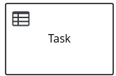
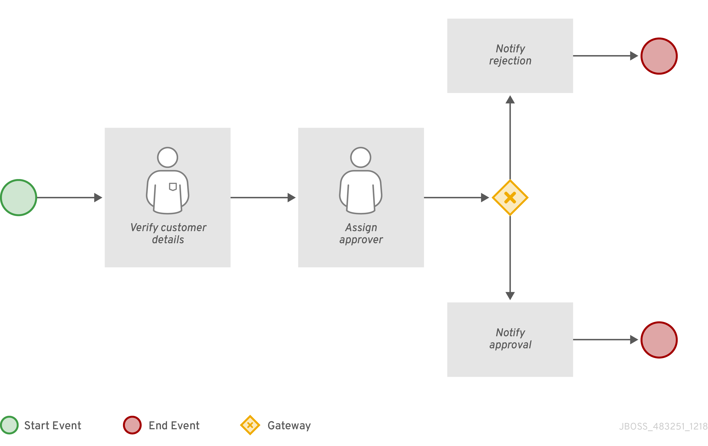
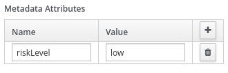

Developing process services in Red Hat Process Automation Manager
Abstract
- Preface
- Making open source more inclusive
- I. Designing business processes using BPMN models
- 1. Business processes
- 2. Red Hat Process Automation Manager BPMN and DMN modelers
- 3. Creating and executing DMN and BPMN models using Maven
- 4. Business Process Modeling and Notation Version 2.0
- 4.1. Red Hat Process Automation Manager support for BPMN2
- 4.2. BPMN2 events in process designer
- 4.3. BPMN2 tasks in process designer
- 4.4. BPMN2 custom tasks in process designer
- 4.5. BPMN2 subprocesses in process designer
- 4.6. BPMN2 gateways in process designer
- 4.7. BPMN2 connecting objects in process designer
- 4.8. BPMN2 swimlanes in process designer
- 4.9. BPMN2 artifacts in process designer
- 5. Creating a business process in Business Central
- 5.1. Creating business rules tasks
- 5.2. Creating script tasks
- 5.3. Creating service tasks
- 5.4. Creating user tasks
- 5.5. BPMN2 user task life cycle in process designer
- 5.6. BPMN2 task permission matrix in process designer
- 5.7. Making a copy of a business process
- 5.8. Resizing elements and using the zoom function to view business processes
- 5.9. Generating process documentation in Business Central
- 6. Variables
- 7. Action scripts
- 8. Timers
- 9. Constraints
- 10. Deploying a business process in Business Central
- 11. Executing a business process in Business Central
- 12. Testing a business process
- 13. Managing log files
- 14. Process definitions and process instances in Business Central
- 15. Forms in Business Central
- 16. Advanced process concepts and tasks
- 17. Additional resources
- II. Interacting with processes and tasks
- 18. Business processes in Business Central
- 19. Knowledge worker tasks in Business Central
- 20. Task filtering in Business Central
- 21. Process instance filtering in Business Central
- 22. Configuring emails in task notification
- 23. Setting the due date and priority of a task
- 24. Viewing and adding comments to a task
- 25. Viewing the history log of a task
- 26. Viewing the history log of a process instance
- III. Managing and monitoring business processes in Business Central
- 27. Process monitoring
- 28. Process definitions and process instances in Business Central
- 29. Process instance management
- 29.1. Process instance filtering
- 29.2. Creating a custom process instance list
- 29.3. Managing process instances using a default filter
- 29.4. Viewing process instance variables using basic filters
- 29.5. Viewing process instance variables using advanced filters
- 29.6. Aborting a process instance using Business Central
- 29.7. Signaling process instances from Business Central
- 29.8. Asynchronous signal events
- 29.9. Process instance operations
- 30. Task management
- 30.1. Task filtering
- 30.2. Creating custom task filters
- 30.3. Managing tasks using a default filter
- 30.4. Viewing task variables using basic filters
- 30.5. Viewing task variables using advanced filters
- 30.6. Managing custom tasks in Business Central
- 30.7. User task administration
- 30.8. Bulk actions on tasks
- 31. Execution error management
- 32. Process instance migration
- IV. Designing and building cases for case management
- 33. Case management
- 34. Case Management Model and Notation
- 35. Case files
- 36. Subcases
- 37. Ad hoc and dynamic tasks
- 38. Adding dynamic tasks and processes to a case using the KIE Server REST API
- 39. Comments
- 40. Case roles
- 41. Stages
- 42. Milestones
- 43. Variable tags
- 44. Case event listener
- 45. Rules in case management
- 46. Case management security
- 47. Closing cases
- 48. Canceling or destroying a case
- 49. Additional resources
- V. Using the Showcase application for case management
- 50. Case management
- 51. Case management Showcase application
- 52. Installing and logging in to the Showcase application
- 53. Case roles
- 54. Starting dynamic tasks and processes
- 55. Starting an IT Orders case in the Showcase application
- 56. Completing the IT_Orders case using Showcase and Business Central
- 57. Additional resources
- VI. Custom tasks and work item handlers in Business Central
- VII. Process engine in Red Hat Process Automation Manager
- 65. Process engine in Red Hat Process Automation Manager
- 66. Core engine API for the process engine
- 66.1. KIE base and KIE session
- 66.2. Runtime manager
- 66.3. Services in the process engine
- 66.3.1. Modules for process engine services
- 66.3.2. Deployment service
- 66.3.3. Definition service
- 66.3.4. Process service
- 66.3.5. Quartz-based timer service
- 66.3.6. Query service
- 66.3.7. Advanced query service
- 66.3.8. Process instance migration service
- 66.3.9. Deployments and different process versions
- 66.3.10. Deployment synchronization
- 66.4. Threads in the process engine
- 66.5. Event Listeners in the process engine
- 66.6. Process engine configuration
- 67. Persistence and transactions in the process engine
- 68. Integration with Java frameworks
- A. Versioning information
- B. Contact information
Preface
As a developer of business processes, you can use Red Hat Process Automation Manager to develop process services and case definitions using Business Process Model and Notation (BPMN) 2.0 models. BPMN process models are graphical representations of the steps required to achieve a business goal. For more information about BPMN, see the Object Management Group (OMG) Business Process Model and Notation 2.0 specification.
Making open source more inclusive
Red Hat is committed to replacing problematic language in our code, documentation, and web properties. We are beginning with these four terms: master, slave, blacklist, and whitelist. Because of the enormity of this endeavor, these changes will be implemented gradually over several upcoming releases. For more details, see our CTO Chris Wright’s message.
Part I. Designing business processes using BPMN models
As a business processes developer, you can use Business Central in Red Hat Process Automation Manager or the Red Hat Process Automation Manager BPMN modeler in VSCode to design business processes to meet specific business requirements. This document describes business processes and the concepts and options for creating them using the process designer in Red Hat Process Automation Manager. This document also describes the BPMN2 elements in Red Hat Process Automation Manager. For more details about BPMN2, see the Business Process Model and Notation Version 2.0 specification.
Prerequisites
- Red Hat JBoss Enterprise Application Platform 7.3 is installed. For details, see Red Hat JBoss Enterprise Application Platform 7.3 Installation Guide.
- Red Hat Process Automation Manager is installed and configured with KIE Server. For more information, see Installing and configuring Red Hat Process Automation Manager on Red Hat JBoss EAP 7.3.
-
Red Hat Process Automation Manager is running and you can log in to Business Central with the
developerrole. For more information, see Planning a Red Hat Process Automation Manager installation.
Table of Contents
- 1. Business processes
- 2. Red Hat Process Automation Manager BPMN and DMN modelers
- 3. Creating and executing DMN and BPMN models using Maven
- 4. Business Process Modeling and Notation Version 2.0
- 4.1. Red Hat Process Automation Manager support for BPMN2
- 4.2. BPMN2 events in process designer
- 4.3. BPMN2 tasks in process designer
- 4.4. BPMN2 custom tasks in process designer
- 4.5. BPMN2 subprocesses in process designer
- 4.6. BPMN2 gateways in process designer
- 4.7. BPMN2 connecting objects in process designer
- 4.8. BPMN2 swimlanes in process designer
- 4.9. BPMN2 artifacts in process designer
- 5. Creating a business process in Business Central
- 5.1. Creating business rules tasks
- 5.2. Creating script tasks
- 5.3. Creating service tasks
- 5.4. Creating user tasks
- 5.5. BPMN2 user task life cycle in process designer
- 5.6. BPMN2 task permission matrix in process designer
- 5.7. Making a copy of a business process
- 5.8. Resizing elements and using the zoom function to view business processes
- 5.9. Generating process documentation in Business Central
- 6. Variables
- 7. Action scripts
- 8. Timers
- 9. Constraints
- 10. Deploying a business process in Business Central
- 11. Executing a business process in Business Central
- 12. Testing a business process
- 13. Managing log files
- 14. Process definitions and process instances in Business Central
- 15. Forms in Business Central
- 16. Advanced process concepts and tasks
- 17. Additional resources
Chapter 1. Business processes
A business process is a diagram that describes the order for a series of steps that must be executed and consists of predefined nodes and connections. Each node represents one step in the process while the connections specify how to transition from one node to another.
A typical business process consists of the following components:
- The header section that comprises global elements such as the name of the process, imports, and variables
- The nodes section that contains all the different nodes that are part of the process
- The connections section that links these nodes to each other to create a flow chart
Figure 1.1. Business process
Red Hat Process Automation Manager contains the legacy process designer and the new process designer for creating business process diagrams. The new process designer has an improved layout and feature set and continues to be developed. Until all features of the legacy process designer are completely implemented in the new process designer, both designers are available in Business Central for you to use.
The legacy process designer in Business Central is deprecated in Red Hat Process Automation Manager 7.10.0. It will be removed in a future Red Hat Process Automation Manager release. The legacy process designer will not receive any new enhancements or features. If you intend to use the new process designer, start migrating your processes to the new designer. Create all new processes in the new process designer. For information about migrating to the new designer, see Managing projects in Business Central.
Chapter 2. Red Hat Process Automation Manager BPMN and DMN modelers
Red Hat Process Automation Manager provides the following extensions or applications that you can use to design Business Process Model and Notation (BPMN) process models and Decision Model and Notation (DMN) decision models using graphical modelers.
Business Central: Enables you to view and design BPMN models, DMN models, and test scenario files in a related embedded designer.
To use Business Central, you can set up a development environment containing a Business Central to design business rules and processes, and a KIE Server to execute and test the created business rules and processes.
Red Hat Process Automation Manager VSCode extension: Enables you to view and design BPMN models, DMN models, and test scenario files in Visual Studio Code (VSCode). The VSCode extension requires VSCode 1.46.0 or later.
To install the Red Hat Process Automation Manager VSCode extension, select the Extensions menu option in VSCode and search for and install the Red Hat Business Automation Bundle extension.
-
Standalone BPMN and DMN editors: Enable you to view and design BPMN and DMN models embedded in your web applications. To download the necessary files, you can either use the NPM artifacts from the NPM registry or download the JavaScript files directly for the DMN standalone editor library at
https://<YOUR_PAGE>/dmn/index.jsand for the BPMN standalone editor library athttps://<YOUR_PAGE>/bpmn/index.js.
2.1. Installing the Red Hat Process Automation Manager VSCode extension bundle
Red Hat Process Automation Manager provides a Red Hat Business Automation Bundle VSCode extension that enables you to design Decision Model and Notation (DMN) decision models, Business Process Model and Notation (BPMN) 2.0 business processes, and test scenarios directly in VSCode. VSCode is the preferred integrated development environment (IDE) for developing new business applications. Red Hat Process Automation Manager also provides individual DMN Editor and BPMN Editor VSCode extensions for DMN or BPMN support only, if needed.
The editors in the VSCode are partially compatible with the editors in the Business Central, and several Business Central features are not supported in the VSCode.
Prerequisites
- The latest stable version of VSCode is installed.
Procedure
In your VSCode IDE, select the Extensions menu option and search for Red Hat Business Automation Bundle for DMN, BPMN, and test scenario file support.
For DMN or BPMN file support only, you can also search for the individual DMN Editor or BPMN Editor extensions.
- When the Red Hat Business Automation Bundle extension appears in VSCode, select it and click Install.
- For optimal VSCode editor behavior, after the extension installation is complete, reload or close and re-launch your instance of VSCode.
After you install the VSCode extension bundle, any .dmn, .bpmn, or .bpmn2 files that you open or create in VSCode are automatically displayed as graphical models. Additionally, any .scesim files that you open or create are automatically displayed as tabular test scenario models for testing the functionality of your business decisions.
If the DMN, BPMN, or test scenario modelers open only the XML source of a DMN, BPMN, or test scenario file and displays an error message, review the reported errors and the model file to ensure that all elements are correctly defined.
For new DMN or BPMN models, you can also enter dmn.new or bpmn.new in a web browser to design your DMN or BPMN model in the online modeler. When you finish creating your model, you can click Download in the online modeler page to import your DMN or BPMN file into your Red Hat Process Automation Manager project in VSCode.
2.2. Configuring the Red Hat Process Automation Manager standalone editors
Red Hat Process Automation Manager provides standalone editors that are distributed in a self-contained library providing an all-in-one JavaScript file for each editor. The JavaScript file uses a comprehensive API to set and control the editor.
You can install the standalone editors in three ways:
- Download each JavaScript file manually
- Use the NPM package
Procedure
Install the standalone editors using one of the following methods:
Download each JavaScript file manually: For this method, follow these steps:
- Download the JavaScript files.
- Add the downloaded Javascript files to your hosted application.
Add the following
<script>tag to your HTML page:Script tag for your HTML page for the DMN editor
<script src="https://<YOUR_PAGE>/dmn/index.js"></script>
Script tag for your HTML page for the BPMN editor
<script src="https://<YOUR_PAGE>/bpmn/index.js"></script>
Use the NPM package: For this method, follow these steps:
Add the NPM package to your
package.jsonfile:Adding the NPM package
npm install @redhat/kogito-tooling-kie-editors-standalone
Import each editor library to your TypeScript file:
Importing each editor
import * as DmnEditor from "@redhat/kogito-tooling-kie-editors-standalone/dist/dmn" import * as BpmnEditor from "@redhat/kogito-tooling-kie-editors-standalone/dist/bpmn"
After you install the standalone editors, open the required editor by using the provided editor API, as shown in the following example for opening a DMN editor. The API is the same for each editor.
Opening the DMN standalone editor
const editor = DmnEditor.open({ container: document.getElementById("dmn-editor-container"), initialContent: Promise.resolve(""), readOnly: false, origin: "", resources: new Map([ [ "MyIncludedModel.dmn", { contentType: "text", content: Promise.resolve("") } ] ]) });Use the following parameters with the editor API:
Table 2.1. Example parameters
Parameter Description containerHTML element in which the editor is appended.
initialContentPromise to a DMN model content. This parameter can be empty, as shown in the following examples:
-
Promise.resolve("") -
Promise.resolve("<DIAGRAM_CONTENT_DIRECTLY_HERE>") -
fetch("MyDmnModel.dmn").then(content ⇒ content.text())
readOnly(Optional)Enables you to allow changes in the editor. Set to
false(default) to allow content editing andtruefor read-only mode in editor.NoteOnly the DMN editor supports read-only mode for now.
origin(Optional)Origin of the repository. The default value is
window.location.origin.resources(Optional)Map of resources for the editor. For example, this parameter is used to provide included models for the DMN editor or work item definitions for the BPMN editor. Each entry in the map contains a resource name and an object that consists of
content-type(textorbinary) andcontent(similar to theinitialContentparameter).The returned object contains the methods that are required to manipulate the editor.
Table 2.2. Returned object methods
Method Description getContent(): Promise<string>Returns a promise containing the editor content.
setContent(content: string): voidSets the content of the editor.
getPreview(): Promise<string>Returns a promise containing an SVG string of the current diagram.
subscribeToContentChanges(callback: (isDirty: boolean) ⇒ void): (isDirty: boolean) ⇒ voidSets a callback to be called when the content changes in the editor and returns the same callback to be used for unsubscription.
unsubscribeToContentChanges(callback: (isDirty: boolean) ⇒ void): voidUnsubscribes the passed callback when the content changes in the editor.
markAsSaved(): voidResets the editor state that indicates that the content in the editor is saved. Also, it activates the subscribed callbacks related to content change.
undo(): voidUndoes the last change in the editor. Also, it activates the subscribed callbacks related to content change.
redo(): voidRedoes the last undone change in the editor. Also, it activates the subscribed callbacks related to content change.
close(): voidCloses the editor.
getElementPosition(selector: string): Promise<Rect>Provides an alternative to extend the standard query selector when an element lives inside a canvas or a video component. The
selectorparameter must follow the<PROVIDER>:::<SELECT>format, such asCanvas:::MySquareorVideo:::PresenterHand. This method returns aRectrepresenting the element position.envelopeApi: MessageBusClientApi<KogitoEditorEnvelopeApi>This is an advanced editor API. For more information about advanced editor API, see MessageBusClientApi and KogitoEditorEnvelopeApi.
-
Chapter 3. Creating and executing DMN and BPMN models using Maven
You can use Maven archetypes to develop DMN and BPMN models in VSCode using the Red Hat Process Automation Manager VSCode extension instead of Business Central. You can then integrate your archetypes with your Red Hat Process Automation Manager decision and process services in Business Central as needed. This method of developing DMN and BPMN models is helpful for building new business applications using the Red Hat Process Automation Manager VSCode extension.
Procedure
- In a command terminal, navigate to a local folder where you want to store the new Red Hat Process Automation Manager project.
Enter the following command to generate a project within a defined folder using the following Maven archetype:
Generating a project using Maven archetype
mvn archetype:generate \ -DarchetypeGroupId=org.kie \ -DarchetypeArtifactId=kie-kjar-archetype \ -DarchetypeVersion=7.48.0.Final-redhat-00002This command generates a Maven project with required dependencies and generates required directories and files to build your business application. You can set up and use Git version-control system (recommended) when developing a project.
If you want to generate multiple projects in the same directory, you can specify the
artifactIdandgroupIdof the generated business application by adding-DgroupId=<groupid> -DartifactId=<artifactId>to the previous command.- In your VSCode IDE, click File, select Open Folder, and navigate to the folder that is generated using the previous command.
Before creating the first asset, set a package for your business application, for example,
org.kie.businessapp, and create respective directories in the following paths:-
PROJECT_HOME/src/main/java -
PROJECT_HOME/src/main/resources -
PROJECT_HOME/src/test/resources
For example, you can create
PROJECT_HOME/src/main/java/org/kie/businessappfororg.kie.businessapppackage.-
Use VSCode to create assets for your business application. You can create the assets supported by Red Hat Process Automation Manager VSCode extension using the following ways:
-
To create a business process, create a new file with
.bpmnor.bpmn2inPROJECT_HOME/src/main/java/org/kie/businessappdirectory, such asProcess.bpmn. -
To create a DMN model, create a new file with
.dmninPROJECT_HOME/src/main/java/org/kie/businessappdirectory, such asAgeDecision.dmn. -
To create a test scenario simulation model, create a new file with
.scesiminPROJECT_HOME/src/main/java/org/kie/businessappdirectory, such asTestAgeScenario.scesim.
-
To create a business process, create a new file with
After you create the assets in your Maven archetype, navigate to the root directory (contains
pom.xml) of the project in the command line and run the following command to build the knowledge JAR (KJAR) of your project:mvn clean install
If the build fails, address any problems described in the command line error messages and try again to validate the project until the build is successful. However, if the build is successful, you can find the artifact of your business application in
PROJECT_HOME/targetdirectory.NoteUse
mvn clean installcommand often to validate your project after each major change during development.
You can deploy the generated knowledge JAR (KJAR) of your business application on a running KIE Server using the REST API. For more information about using REST API, see Interacting with Red Hat Process Automation Manager using KIE APIs.
Chapter 4. Business Process Modeling and Notation Version 2.0
The Business Process Modeling and Notation Version 2.0 (BPMN2) specification is an Object Management Group (OMG) specification that defines standards for graphically representing a business process, defines execution semantics for the elements, and provides process definitions in XML format.
A process is defined or determined by its process definition. It exists in a knowledge base and is identified by its ID.
Table 4.1. General process properties
| Label | Description |
|---|---|
|
Name |
Enter the name of the process. |
|
Documentation |
Describes the process. The text in this field is included in the process documentation, if applicable. |
|
ID |
Enter an identifier for this process, for example |
|
Package |
Enter the package location for this process in your Red Hat Process Automation Manager project, for example |
|
ProcessType |
Specify whether the process is public or private. (Currently not supported.) |
|
Version |
Enter the artifact version for the process. |
|
Ad hoc |
Select this option if this process is an ad hoc subprocess. |
|
Process Instance Description |
Enter a description of the purpose of the process. |
|
Imports |
Click to open the Imports window and add any data type classes required for your process. |
|
Executable |
Select this option to make the process executable part of your Red Hat Process Automation Manager project. |
|
SLA Due Date |
Enter the service level agreement (SLA) expiration date. |
|
Process Variables |
Add any process variables for the process. Process variables are visible within the specific process instance. Process variables are initialized at process creation and destroyed on process completion. Variable tags provide greater control over variable behavior, for example whether the variable is tagged as |
|
Metadata Attributes |
Add any custom metadata attribute name and value that you want to use for custom event listeners, such as a listener to implement some action when a metadata attribute is present. |
|
Global Variables |
Add any global variables for the process. Global variables are visible to all process instances and assets in a project. Global variables are typically used by business rules and constraints and are created dynamically by the rules or constraints. |
A process is a container for a set of modeling elements. It contains elements that specify the execution workflow of a business process or its parts using flow objects and flows. Each process has its own BPMN2 diagram. Red Hat Process Automation Manager contains the new process designer for creating BPMN2 diagrams and the legacy process designer to open the old BPMN2 diagram with .bpmn2 extension. The new process designer has an improved layout and feature set and continues to develop. By default, the new diagrams are created in the new process designer.
4.1. Red Hat Process Automation Manager support for BPMN2
With Red Hat Process Automation Manager, you can model your business processes using the BPMN 2.0 standard. You can then use Red Hat Process Automation Manager to run, manage, and monitor these business processes. The full BPMN 2.0 specification also includes details on how to represent items such as choreographies and collaboration. However, Red Hat Process Automation Manager uses only the parts of the specification that you can use to specify executable processes. This includes almost all elements and attributes as defined in the Common Executable subclass of the BPMN2 specification, extended with some additional elements and attributes.
The following table contains a list of icons used to indicate whether a BPMN2 element is supported in the legacy process designer, the legacy and new process designer, or not supported.
Table 4.2. Support status icons
| Key | Description |
|---|---|
|
|
Supported in the legacy and new process designer |
|
|
Supported in the legacy process designer only |
|
|
Not supported |

Elements that have no icon do not exist in the BPMN2 specification.
Table 4.3. BPMN2 catching events
| Element Name | Start | Intermediate |
|---|---|---|
|
None |
| |
|
Message |
|
|
|
Timer |
|
|
|
Error |
|
|
|
Escalation |
|
|
|
Cancel |
| |
|
Compensation |
|
|
|
Conditional |
|
|
|
Link |
| |
|
Signal |
|
|
|
Multiple |
|
|
|
Parallel Multiple |
|
|
Table 4.4. BPMN2 throwing and non-interrupting events
| Element Name | Throwing | Non-interrupting | ||
|---|---|---|---|---|
|
End |
Intermediate |
Start |
Intermediate | |
|
None |
| |||
|
Message |
|
|
|
|
|
Timer |
|
| ||
|
Error |
| |||
|
Escalation |
|
|
|
|
|
Cancel |
|
|
| |
|
Compensation |
|
| ||
|
Conditional |
|
| ||
|
Link |
| |||
|
Signal |
|
|
|
|
|
Terminate |
| |||
|
Multiple |
|
|
|
|
|
Parallel Multiple |
|
|
Table 4.5. BPMN2 elements
| Element type | Element | Supported |
|---|---|---|
|
Task |
Business rule |
|
|
Script |
| |
|
User task |
| |
|
Service task |
| |
|
Subprocesses, including multiple instance subprocesses |
Embedded |
|
|
Ad hoc |
| |
|
Reusable |
| |
|
Event |
| |
|
Gateways |
Inclusive |
|
|
Exclusive |
| |
|
Parallel |
| |
|
Event-based |
| |
|
Complex |
| |
|
Connecting objects |
Sequence flows |
|
|
Association flows |
| |
|
Swimlanes |
Swimlanes |
|
|
Artifacts |
Group |
|
|
Text annotation |
| |
|
Data object |
|
For more information about the background and applications of BPMN2, see the OMG Business Process Model and Notation (BPMN) Version 2.0 specification.
4.2. BPMN2 events in process designer
An event is something that happens to a business process. BPMN2 supports three categories of events:
- Start
- End
- Intermediate
A start event catches an event trigger, an end event throws an event trigger, and an intermediate event can both catch and throw event triggers.
The following business process diagram shows examples of events:
In this example, the following events occurred:
- The ATM Card Inserted signal start event is triggered when the signal is received.
- The timeout intermediate event is an interrupting event based on a timer trigger. This means that the Wait for PIN subprocess is canceled when the timer event is triggered.
- Depending on the inputs to the process, either end event associated with the Validate User Pin task or the end event associated with the Inform User of Timeout task ends the process.
4.2.1. Start events
Use start events to indicate the start of a business process. A start event cannot have an incoming sequence flow and must have only one outgoing sequence flow. You can use none start events in top-level processes, embedded subprocess, callable subprocesses, and event subprocesses.
All start events, with the exception of the none start event, are catch events. For example, a signal start event starts the process only when the referenced signal (event trigger) is received. You can configure start events in event subprocesses to be interrupting or non-interrupting. An interrupting start event for an event subprocess stops or interrupts the execution of the containing or parent process. A non-interrupting start event does not stop or interrupt the execution of the containing or parent process.
Table 4.6. Start events
| Start event type | Top-level | Subprocesses | |
|---|---|---|---|
|
Interrupt |
Non-interrupt | ||
|
| |||
|
|
|
| |
|
|
| ||
|
| |||
|
|
|
| |
|
|
|
| |
|
|
|
| |
|
|
|
|


None
The none start event is a start event without a trigger condition. A process or a subprocess can contain at most one none start event, which is triggered on process or subprocess start by default, and the outgoing flow is taken immediately.
When you use a none start event in a subprocess, the execution of the process flow is transferred from the parent process into the subprocess and the none start event is triggered. This means that the token (the current location within the process flow) is passed from the parent process into the subprocess activity and the none start event of the subprocess generates a token of its own.
Conditional
The conditional start event is a start event with a Boolean condition definition. The execution is triggered when the condition is first evaluated to false and then to true. The process execution starts only if the condition is evaluated to true after the start event has been instantiated.
A process can contain multiple conditional start events.
Compensation
A compensation start event is used to start a compensation event subprocess when using a subprocess as the target activity of a compensation intermediate event.
Error
A process or subprocess can contain multiple error start events, which are triggered when an error object with a particular ErrorRef property is received. The error object can be produced by an error end event. It indicates an incorrect process ending. The process instance with the error start event starts execution after it has received the respective error object. The error start event is executed immediately upon receiving the error object and its outgoing flow is taken.
Escalation
The escalation start event is a start event that is triggered by an escalation with a particular escalation code. Processes can contain multiple escalation start events. The process instance with an escalation start event starts its execution when it receives the defined escalation object. The process is instantiated and the escalation start event is executed immediately and its outgoing flow is taken.
Message
A process or an event subprocess can contain multiple message start events, which are triggered by a particular message. The process instance with a message start event only starts its execution from this event after it has received the respective message. After the message is received, the process is instantiated and its message start event is executed immediately (its outgoing flow is taken).
Because a message can be consumed by an arbitrary number of processes and process elements, including no elements, one message can trigger multiple message start events and therefore instantiate multiple processes.
Signal
The signal start event is triggered by a signal with a particular signal code. A process can contain multiple signal start events. The signal start event only starts its execution within the process instance after the instance has received the respective signal. Then, the signal start event is executed and its outgoing flow is taken.
Timer
The timer start event is a start event with a timing mechanism. A process can contain multiple timer start events, which are triggered at the start of the process, after which the timing mechanism is applied.
When you use a timer start event in a subprocess, execution of the process flow is transferred from the parent process into the subprocess and the timer start event is triggered. The token is taken from the parent subprocess activity and the timer start event of the subprocess is triggered and waits for the timer to trigger. After the time defined by the timing definition has been reached, the outgoing flow is taken.
4.2.2. Intermediate events
Intermediate events drive the flow of a business process. Intermediate events are used to either catch or throw an event during the execution of the business process. These events are placed between the start and end events and can also be used on the boundary of an activity, like a subprocess or a human task, as a catch event. In the BPMN modeler, you can set a data output in the Data Output and Assignments field for a boundary event, which is used in a further process to access the process instance details.
For example, you can set the following data output variables for a boundary event:
-
nodeInstance: Carries the node instance details to use in a further process when the boundary event is triggered. -
signal: Carries the name of the signal. -
event: Carries the event details. -
workItem: Carries the work item details. This variable can be set for work item or user task.
The boundary catch events can be configured as interrupting or non-interrupting. An interrupting boundary catch event cancels the bound activity whereas a non-interrupting event does not.
An intermediate event handles a particular situation that occurs during process execution. The situation is a trigger for an intermediate event. In a process, intermediate events with one outgoing flow can be placed on an activity boundary.
If the event occurs while the activity is being executed, the event triggers its execution to the outgoing flow. One activity may have multiple boundary intermediate events. Note that depending on the behavior you require from the activity with the boundary intermediate event, you can use either of the following intermediate event types:
- Interrupting: The activity execution is interrupted and the execution of the intermediate event is triggered.
- Non-interrupting: The intermediate event is triggered and the activity execution continues.
Table 4.7. Intermediate events
| Intermediate event type | Catching | Boundary | Throwing | |
|---|---|---|---|---|
|
Interrupt |
Non-interrupt | |||
|
|
|
|
| |
|
|
|
| ||
|
| ||||
|
|
|
|
| |
|
|
|
| ||
|
|
|
| ||
|
|
|
|
| |
|
|
|


Message
A message intermediate event is an intermediate event that enables you to manage a message object. Use one of the following events:
- A throwing message intermediate event produces a message object based on the defined properties.
- A catching message intermediate event listens for a message object with the defined properties.
Timer
A timer intermediate event enables you to delay workflow execution or to trigger the workflow execution periodically. It represents a timer that can trigger one or multiple times after a specified period of time. When the timer intermediate event is triggered, the timer condition, which is the defined time, is checked and the outgoing flow is taken. When the timer intermediate event is placed in the process workflow, it has one incoming flow and one outgoing flow. Its execution starts when the incoming flow transfers to the event. When a timer intermediate event is placed on an activity boundary, the execution is triggered at the same time as the activity execution.
The timer is canceled if the timer element is canceled, for example by completing or aborting the enclosing process instance.
Conditional
A conditional intermediate event is an intermediate event with a boolean condition as its trigger. The event triggers further workflow execution when the condition evaluates to true and its outgoing flow is taken.
The event must define the Expression property. When a conditional intermediate event is placed in the process workflow, it has one incoming flow, one outgoing flow, and its execution starts when the incoming flow transfers to the event. When a conditional intermediate event is placed on an activity boundary, the execution is triggered at the same time as the activity execution. Note that if the event is non-interrupting, the event triggers continuously while the condition is true.
Signal
A signal intermediate event enables you to produce or consume a signal object. Use either of the following options:
- A throwing signal intermediate event produces a signal object based on the defined properties.
- A catching signal intermediate event listens for a signal object with the defined properties.
Error
An error intermediate event is an intermediate event that can be used only on an activity boundary. It enables the process to react to an error end event in the respective activity. The activity must not be atomic. When the activity finishes with an error end event that produces an error object with the respective ErrorCode property, the error intermediate event catches the error object and execution continues to its outgoing flow.
Compensation
A compensation intermediate event is a boundary event attached to an activity in a transaction subprocess. It can finish with a compensation end event or a cancel end event. The compensation intermediate event must be associated with a flow, which is connected to the compensation activity.
The activity associated with the boundary compensation intermediate event is executed if the transaction subprocess finishes with the compensation end event. The execution continues with the respective flow.
Escalation
An escalation intermediate event is an intermediate event that enables you to produce or consume an escalation object. Depending on the action the event element should perform, you need to use either of the following options:
- A throwing escalation intermediate event produces an escalation object based on the defined properties.
- A catching escalation intermediate event listens for an escalation object with the defined properties.
Link
A link intermediate event is an intermediate event that makes the process diagram easier to understand without adding additional logic to the process. Link intermediate event is limited to a single process level, for example, link intermediate event cannot connect a parent process with a subprocess.
Use either of the following options:
- A throwing link intermediate event produces a link object based on the defined properties.
- A catching link intermediate event listens for a link object with the defined properties.
4.2.3. End events
End events are used to end a business process and may not have any outgoing sequence flows. There may be multiple end events in a business process. All end events, with the exception of the none and terminate end events, are throw events.
End events indicate the completion of a business process. An end event is a node that ends a particular workflow. It has one or more incoming sequence flows and no outgoing flow.
A process must contain at least one end event.
During run time, an end event finishes the process workflow. The end event can finish only the workflow that reached it, or all workflows in the process instance, depending on the end event type.
Table 4.8. End events
| End event | Icon |
|---|---|
|
| |
|
| |
|
| |
|
| |
|
| |
|
| |
|
|

None
The none end event specifies that no other special behavior is associated with the end of the process.
Message
When a flow enters a message end event, the flow finishes and the end event produces a message as defined in its properties.
Signal
A throwing signal end event is used to finish a process or subprocess flow. When the execution flow enters the element, the execution flow finishes and produces a signal identified by its SignalRef property.
Error
The throwing error end event finishes the incoming workflow, which means consumes the incoming token, and produces an error object. Any other running workflows in the process or subprocess remain uninfluenced.
Compensation
A compensation end event is used to finish a transaction subprocess and trigger the compensation defined by the compensation intermediate event attached to the boundary of the subprocess activities.
Escalation
The escalation end event finishes the incoming workflow, which means consumes the incoming token, and produces an escalation signal as defined in its properties, triggering the escalation process.
Terminate
The terminate end event finishes all execution flows in the specified process instance. Activities being executed are canceled. The subprocess instance terminates if it reaches a terminate end event.
4.3. BPMN2 tasks in process designer
A task is an automatic activity that is defined in the process model and the smallest unit of work in a process flow. The following task types defined in the BPMN2 specification are available in the Red Hat Process Automation Manager process designer palette:
- Business rule task
- Script task
- User task
- Service task
- None task
Table 4.9. Task
|
Business rule task |
 |
|
Script task |
|
|
User task |
|
|
Service task |
|
|
None task |
|
In addition, the BPMN2 specification provides the ability to create custom tasks. For more information about custom tasks, see Section 4.4, “BPMN2 custom tasks in process designer”.
Business rule task
A business rule task defines a way to make a decision either through a DMN model or a rule flow group.
When a process reaches a business rule task defined by a DMN model, the process engine executes the DMN model decision with the inputs provided.
When a process reaches a business rule task defined by a rule flow group, the process engine begins executing the rules in the defined rule flow group. When there are no more active rules in the rule flow group, the execution continues to the next element. During the rule flow group execution, new activations belonging to the active rule flow group can be added to the agenda because these activations are changed by other rules.
Script task
A script task represents a script to be executed during the process execution.

The associated script can access process variables and global variables. Review the following list before using a script task:
- Avoid low-level implementation details in the process. A script task can be used to manipulate variables, but consider using a service task or a custom task when modelling more complex operations.
- Ensure that the script is executed immediately, otherwise use an asynchronous service task.
- Avoid contacting external services through a script task. Use a service task to model communication with an external service.
- Ensure scripts do not throw exceptions. Runtime exceptions should be caught and managed, for example, inside the script or transformed into signals or errors that can then be handled inside the process.
When a script task is reached during execution, the script is executed and the outgoing flow is taken.
User task
User tasks are tasks in the process workflow that cannot be performed automatically by the system and therefore require the intervention of a human user, the actor.

On execution, the User task element is instantiated as a task that appears in the list of tasks of one or more actors. If a User task element defines the Groups attribute, it is displayed in task lists of all users that are members of the group. Any user who is a member of the group can claim the task.
After it is claimed, the task disappears from the task list of the other users.
User tasks are implemented as domain-specific tasks and serve as a base for custom tasks.
Service task
Service tasks are tasks that do not require human interaction. They are completed automatically by an external software service.

None task
None tasks are completed on activation. This is a conceptual model only. A none task is never actually executed by an IT system.
4.4. BPMN2 custom tasks in process designer
The BPMN2 specification supports the ability to extend the bpmn2:task element to create custom tasks in a software implementation. Similar to standard BPMN tasks, custom tasks identify actions to be completed in a business process model, but they also include specialized functionality, such as compatibility with an external service of a specific type (REST, email, or web service) or checkpoint behavior within a process (milestone).
Red Hat Process Automation Manager provides the following predefined custom tasks under Custom Tasks in the BPMN modeler palette:
Table 4.10. Supported custom tasks
| Custom task type | Custom task node |
|---|---|
|
Rest |
|
|
|
|
|
Log |
|
|
WebService |
|
|
Milestone |
|
|
DecisionTask |
|
|
BusinessRuleTask |
|
|
KafkaPublishMessages |
|
For more information about enabling or disabling custom tasks in Business Central, see Chapter 58, Managing custom tasks in Business Central.
In the BPMN modeler, you can configure the following general properties for a selected custom task:
Table 4.11. General custom task properties
| Label | Description |
|---|---|
|
Name |
Identifies the name of the task. You can also double-click the task node to edit the name. |
|
Documentation |
Describes the task. The text in this field is included in the process documentation, if applicable. |
|
Is Async |
Determines whether this task is invoked asynchronously. |
|
AdHoc Autostart |
Determines whether this is an ad hoc task that is started automatically. This option enables the task to automatically start when the process is created instead of being started by a signal event. |
|
On Entry Action |
Defines a Java, JavaScript, or MVEL script that directs an action at the start of the task. |
|
On Exit Action |
Defines a Java, JavaScript, or MVEL script that directs an action at the end of the task. |
|
SLA Due Date |
Specifies the duration (string type) when the service level agreement (SLA) expires. You can specify the duration in days, minutes, seconds, and milliseconds. For example, |
|
Assignments |
Defines data input and output for the task. |
Rest
A rest custom task is used to invoke a remote RESTful service or perform an HTTP request from a process.
To use the rest custom task, you can set the URL, HTTP method, and credentials in the process modeler. When a process reaches a rest custom task, it generates an HTTP request and returns the response as a string.
You can click Assignments in the Properties panel to open the REST Data I/O window. In the REST Data I/O window, you can configure the data input and output as required. For example, to execute a rest custom task, enter the following data inputs in Data Inputs and Assignments fields:
- Url: Endpoint URL for the REST service. This attribute is mandatory.
-
Method: Method of the endpoint called, such as
GET, andPOST. The default value isGET. -
ContentType: Data type when sending data. This attribute is mandatory for
POSTandPUTrequests. -
ContentTypeCharset: Character set for the
ContentType. - Content: Data you want to send. This attribute supports backward compatibility, use the ContentData attribute instead.
-
ContentData: Data you want to send. This attribute is mandatory for
POSTandPUTrequests. - ConnectTimeout: Connection timeout (in seconds). The default value is 60 seconds.
- ReadTimeout: Timeout (in seconds) on response. The default value is 60 seconds.
- Username: User name for authentication.
- Password: Password for authentication.
- AuthUrl: URL that is handling authentication.
- AuthType: Type of URL that is handling authentication.
- HandleResponseErrors (Optional): Instructs handler to throw errors in case of an unsuccessful response codes (except 2XX).
- ResultClass: Valid name of the class to which the response is unmarshalled. If not provided, then the raw response is returned in a string format.
- AcceptHeader: Value of the accept header.
- AcceptCharset: Character set of the accept header.
-
Headers: Headers to pass for REST call, such as
content-type=text/html.
You can add the following data output in Data Outputs and Assignments to store the output of the task execution:
- Result: Output variable (object type) of the rest custom task.
An email custom task is used to send an email from a process. It contains email body associated with it.
When an email custom task is activated, the email data is assigned to the data input property of the task. An email custom task completes when the associated email is sent.
You can click Assignments in the Properties panel to open the Email Data I/O window. In the Email Data I/O window, you can configure the data input as required. For example, to execute an email custom task, enter the following data inputs in Data Inputs and Assignments fields:
- Body: Body of the email.
- From: Email address of the sender.
- Subject: Subject of the email.
- To: Email address of the recipient. You can specify multiple email addresses separated by semicolon (;).
-
Template (Optional): Template to generate body of the email. The
Templateattribute overrides theBodyparameter, if entered. - Reply-To: Email address to which reply message is sent.
- Cc: Email address of the copied recipient. You can specify multiple email addresses separated by semicolon (;).
- Bcc: Email address of the blind copied recipient. You can specify multiple email addresses separated by semicolon (;).
- Attachments: Email attachment to send along with the email.
- Debug: Flag to enable the debug logging.
Log
A log custom task is used to log a message from a process. When a business process reaches a log custom task, the message data is assigned to the data input property.
A log custom task completes when the associated message is logged. You can click Assignments in the Properties panel to open the Log Data I/O window. In the Log Data I/O window, you can configure the data input as required. For example, to execute a log custom task, enter the following data inputs in Data Inputs and Assignments fields:
- Message: Log message from the process.
WebService
A web service custom task is used to invoke a web service from a process. This custom task serves as a web service client with the web service response stored as a string.
To invoke a web service from a process, you must use the correct task type. You can click Assignments in the Properties panel to open the WS Data I/O window. In the WS Data I/O window, you can configure the data input and output as required. For example, to execute a web service task, enter the following data inputs in Data Inputs and Assignments fields:
- Endpoint: Endpoint location of the web service to invoke.
-
Interface: Name of a service, such as
Weather. -
Mode: Mode of a service, such as
SYNC,ASYNC, orONEWAY. -
Namespace: Namespace of the web service, such as
http://ws.cdyne.com/WeatherWS/. - Operation: Method name to call.
- Parameter: Object or array to be sent for the operation.
-
Url: URL of the web service, such as
http://wsf.cdyne.com/WeatherWS/Weather.asmx?WSDL.
You can add the following data output in Data Outputs and Assignments to store the output of the task execution:
- Result: Output variable (object type) of the web service task.
Milestone
A milestone represents a single point of achievement within a process instance. You can use milestones to flag certain events to trigger other tasks or track the progress of the process.
Milestones are useful for Key Performance Indicator (KPI) tracking or for identifying the tasks that are still to be completed. Milestones can occur at the end of a stage in a process or they can be the result of achieving other milestones.
Milestones can reach the following states during process execution:
-
Active: A milestone condition has been defined for the milestone node but it has not been met. -
Completed: A milestone condition has been met (if applicable), the milestone has been achieved, and the process can proceed to the next task or can end.
You can click Assignments in the Properties panel to open the Milestone Data I/O window. In the Milestone Data I/O window, you can configure the data input as required. For example, to execute a milestone, enter the following data inputs in Data Inputs and Assignments fields:
- Condition: Condition for the milestone to meet. For example, you can enter a Java expression (string data type) that uses a process variable.
DecisionTask
A decision task is used to execute a DMN diagram and invoke a decision engine service from a process. By default, a decision task maps to the DMN decision.
You can use decision tasks to make an operational decision in a process. Decision tasks are useful for identifying key decisions in a process that need to be made.
You can click Assignments in the Properties panel to open the Decision Task Data I/O window. In the Decision Task Data I/O window, you can configure the data input as required. For example, to execute a decision task, enter the following data inputs in Data Inputs and Assignments fields:
- Decision: Decision for a process to make.
- Language: Language of the decision task, defaults to DMN.
- Model: Name of the DMN model.
- Namespace: Namespace of the DMN model.
BusinessRuleTask
A business rule task is used to evaluate a DRL rule and invoke a decision engine service from a process. By default, a business rule task maps to the DRL rules.
You can use business rule tasks to evaluate key business rules in a business process. You can click Assignments in the Properties panel to open the Business Rule Task Data I/O window. In the Business Rule Task Data I/O window, you can configure the data input as required. For example, to execute a business rule task, enter the following data inputs in Data Inputs and Assignments fields:
- KieSessionName: Name of the KIE session.
- KieSessionType: Type of the KIE session.
- Language: Language of the business rule task, defaults to DRL.
KafkaPublishMessages
A Kafka work item is used to send events to a Kafka topic. This custom task includes a work item handler, which uses the Kafka producer to send messages to a specific Kafka server topic. For example, KafkaPublishMessages task publishes messages from a process to a Kafka topic.
You can click Assignments in the Properties panel to open the KafkaPublishMessages Data I/O window. In the KafkaPublishMessages Data I/O window, you can configure the data input and output as required. For example, to execute a Kafka work item, enter the following data inputs in Data Inputs and Assignments fields:
- Key: Key of the Kafka message to be sent.
- Topic: Name of a Kafka topic.
- Value: Value of the Kafka message to be sent.
You can add the following data output in Data Outputs and Assignments to store the output of the work item execution:
- Result: Output variable (string type) of the work item.
4.5. BPMN2 subprocesses in process designer
A subprocess is an activity that contains nodes. You can embed part of the main process within a subprocess. You can also include variable definitions within the subprocess. These variables are accessible to all nodes inside the subprocess.
A subprocess must have at least one incoming connection and one outgoing connection. A terminate end event inside a subprocess ends the subprocess instance but does not automatically end the parent process instance. A subprocess ends when there are no more active elements in it.
The following subprocess types are supported in Red Hat Process Automation Manager:
- Embedded subprocess: A subprocess that is a part of the parent process execution and shares the parent process data, along with declaring its own local subprocess variables.
- Ad hoc subprocess: A subprocess that has no strict element execution order.
- Reusable subprocess: A subprocess that is independent of its parent process.
- Event subprocess: A subprocess that is only triggered on a start event or a timer.
- Multi-instance subprocess: A subprocess that is instantiated multiple times.
In the following example, the Place order subprocess checks whether sufficient stock is available to place the order and updates the stock information if the order can be placed. The customer is then notified through the main process based on whether or not the order was placed.

Embedded subprocess
An embedded subprocess encapsulates a part of the process. It must contain a start event and at least one end event. Note that the element enables you to define local subprocess variables that are accessible to all elements inside this container.
AdHoc subprocess
An ad hoc subprocess or process contains a number of embedded inner activities and is intended to be executed with a more flexible ordering compared to the typical process flow. Unlike regular processes, an ad hoc subprocess does not contain a complete, structured BPMN2 diagram description, for example, from start event to end event. Instead, the ad hoc subprocess contains only activities, sequence flows, gateways, and intermediate events. An ad hoc subprocess can also contain data objects and data associations. The activities within the ad hoc subprocesses are not required to have incoming and outgoing sequence flows. However, you can specify sequence flows between some of the contained activities. When used, sequence flows provide the same ordering constraints as in a regular process. To have any meaning, intermediate events must have outgoing sequence flows and they can be triggered multiple times while the ad hoc subprocess is active.
Reusable subprocess
Reusable subprocesses appear collapsed within the parent process. To configure a reusable subprocess, select the reusable subprocess, click
 , and expand Implementation/Execution. Set the following properties:
, and expand Implementation/Execution. Set the following properties:
- Called Element: The ID of the subprocess that the activity calls and instantiates.
- Independent: If selected, the subprocess is started as an independent process. If not selected, the active subprocess is canceled when the parent process is terminated.
Abort Parent: If selected, non-independent reusable subprocesses can abort the parent process when there is an error during the execution of the called process instance. For example, when there’s an error when trying to invoke the subprocess or when the subprocess instance is aborted. This property is visible only when the Independent property is not selected. The following rules apply:
- If the reusable subprocess is independent, Abort parent is not available.
- If the reusable subprocess is not independent, Abort parent is available.
-
Wait for completion: If selected, the specified On Exit Action is not performed until the called subprocess instance is terminated. The parent process execution continues when the On Exit Action completes. This property is selected (set to
true) by default. - Is Async: Select if the task should be invoked asynchronously and cannot be executed instantly.
Multiple Instance: Select to execute the subprocess elements a specified number of times. If selected, the following options are available:
- MI Execution mode: Indicates if the multiple instances execute in parallel or sequentially. If set to Sequential, new instances are not created until the previous instance completes.
- MI Collection input: Select a variable that represents a collection of elements for which new instances are created. The subprocess is instantiated as many times as the size of the collection.
- MI Data Input: Specifies the name of the variable containing the selected element in the collection. The variable is used to access elements in the collection.
- MI Collection output: Optional variable that represents the collection of elements that will gather the output of the multi-instance node.
- MI Data Output: Specifies the name of the variable that is added to the output collection that you selected in the MI Collection output property.
-
MI Completion Condition (mvel): MVEL expression that is evaluated on each completed instance to check if the specified multiple instance node can complete. If it evaluates to
true, all remaining instances are canceled.
- On Entry Action: A Java or MVEL script that specifies an action at the start of the task.
- On Exit Action: A Java or MVEL script that specifies an action at the end of the task.
-
SLA Due Date: The date that the service level agreement (SLA) expires. You can specify the duration in days, minutes, seconds, and milliseconds. For example,
1mvalue in SLA due date field indicates one minute.
Figure 4.1. Reusable subprocess properties
Event subprocess
An event subprocess becomes active when its start event is triggered. It can interrupt the parent process context or run in parallel with it.
With no outgoing or incoming connections, only an event or a timer can trigger the subprocess. The subprocess is not part of the regular control flow. Although self-contained, it is executed in the context of the bounding process.
Use an event subprocess within a process flow to handle events that happen outside of the main process flow. For example, while booking a flight, two events may occur:
- Cancel booking (interrupting)
- Check booking status (non-interrupting)
You can model both of these events using the event subprocess.
Multiple instance subprocess
A multiple instances subprocess is instantiated multiple times when its execution is triggered. The instances are created sequentially or parallelly. If you set the sequential mode, a new subprocess instance is created only after the previous instance has finished. However, when you set the parallel mode, all the subprocess instances are created at once.
A multiple instances subprocess has one incoming connection and one outgoing connection.
4.6. BPMN2 gateways in process designer
Gateways are used to create or synchronize branches in the workflow using a set of conditions called the gating mechanism. BPMN2 supports two types of gateways:
- Converging gateways, merging multiple flows into one flow
- Diverging gateways, splitting one flow into multiple flows
One gateway cannot have multiple incoming and multiple outgoing flows.
In the following business process diagram, the XOR gateway evaluates only the incoming flow whose condition evaluates to true: 
In this example, the customer details are verified by a user and the process is assigned to a user for approval. If approved, an approval notification is sent to the user. If the event of the request is rejected, a rejection notification is sent to the user.
Table 4.12. Gateway elements
| Element type | Icon |
|---|---|
|
exclusive (XOR) |
|
|
Inclusive |
|
|
Parallel |
|
|
Event |
|


Exclusive
In an exclusive diverging gateway, only the first incoming flow whose condition evaluates to true is chosen. In a converging gateway, the next node is triggered for each triggered incoming flow.
The gateway triggers exactly one outgoing flow. The flow with the constraint evaluated to true and the lowest priority number is taken.
Ensure that at least one of the outgoing flows evaluates to true at run time. Otherwise, the process instance terminates with a runtime exception.
The converging gateway enables a workflow branch to continue to its outgoing flow as soon as it reaches the gateway. When one of the incoming flows triggers the gateway, the workflow continues to the outgoing flow of the gateway. If it is triggered from more than one incoming flow, it triggers the next node for each trigger.
Inclusive
With an inclusive diverging gateway, the incoming flow is taken and all outgoing flows that evaluate to true are taken. Connections with lower priority numbers are triggered before triggering higher priority connections. Priorities are evaluated but the BPMN2 specification does not guarantee the priority order. Avoid depending on the priority attribute in your workflow.
Ensure that at least one of the outgoing flows evaluates to true at run time. Otherwise, the process instance terminates with a runtime exception.
A converging inclusive gateway merges all incoming flows previously created by an inclusive diverging gateway. It acts as a synchronizing entry point for the inclusive gateway branches.
Parallel
Use a parallel gateway to synchronize and create parallel flows. With a parallel diverging gateway, the incoming flow is taken, all outgoing flows are taken simultaneously. With a converging parallel gateway, the gateway waits until all incoming flows have entered and only then triggers the outgoing flow.
Event
An event-based gateway is only diverging and enables you to react to possible events as opposed to the data-based exclusive gateway, which reacts to the process data. The outgoing flow is taken based on the event that occurs. Only one outgoing flow is taken at a time. The gateway might act as a start event, where the process is instantiated only if one of the intermediate events connected to the event-based gateway occurs.
4.7. BPMN2 connecting objects in process designer
Connecting objects create an association between two BPMN2 elements. When a connecting object is directed, the association is sequential and indicates that one of the elements is executed immediately before the other, within an instance of the process. Connecting objects can start and end at the top, bottom, right, or left of the process elements being associated. The OMG BPMN2 specification allows you to use your discretion, placing connecting objects in a way that makes the process behavior easy to understand and follow.
BPMN2 supports two main types of connecting objects:
- Sequence flows: Connect elements of a process and define the order in which those elements are executed within an instance.
- Association flows: Connect the elements of a process without execution semantics. Association flows can be undirected or unidirectional.
The new process designer supports only undirected association flows. The legacy designer supports one direction and Unidirection flows.
4.8. BPMN2 swimlanes in process designer
Swimlanes are process elements that visually group tasks related to one group or user. You can use user tasks in combination with swimlanes to assign multiple user tasks to the same actor, due to Autoclaim property of the swimlanes. When a potential owner of a group claims the first task in a swimlane, then other tasks are directly assigned to the same owner. Therefore, the claim for other tasks is not needed by the remaining owners of the group. The Autoclaim property enables the auto-assignment of the tasks that are related to a swimlane.
If the remaining user tasks in a swimlane contain multiple predefined ActorIds, then the user tasks are not assigned automatically.
In the following example, an analyst lane consists of two user tasks:
The Group field in the Update Customer Details and Resolve Customer Issue tasks contain the value analyst. When the process is started, and the Update Customer Details task is claimed, started, or completed by an analyst, and the Resolve Customer Issue task is claimed and assigned to the user who completed the first task. However, if only the Update Customer Details task contains the analyst group assigned, and the second task contains no user or group assignments, and the process stops after the first task completes.
You can disable the Autoclaim property of the swimlanes. If the Autoclaim property is disabled, then the tasks related to a swimlane are not assigned automatically. By default, the value of Autoclaim property is set as true. If needed, you can also change the default value for the Autoclaim property from project settings in Business Central or using the deployment descriptor file.
To change the default value of Autoclaim property of swimlanes in Business Central:
- Go to project Settings.
- Open Deployment → Environment entries.
Enter the following values in the given fields:
-
Name -
Autoclaim -
Value -
"false”
-
Name -
If you want to set the environment entry in the XML deployment descriptor, add the following code to the kie-deployment-descriptor.xml file:
<environment-entries>
..
<environment-entry>
<resolver>mvel</resolver>
<identifier>new String ("false")</identifier>
<parameters/>
<name>Autoclaim</name>
</environment-entry>
..
</environment-entries>4.9. BPMN2 artifacts in process designer
Artifacts are used to provide additional information about a process. An artifact is any object depicted in the BPMN2 diagram that is not part of the process workflow. Artifacts have no incoming or outgoing flow objects.The purpose of artifacts is to provide additional information required to understand the diagram. The artifacts table lists the artifacts supported in the legacy process designer.
Table 4.13. Artifacts
| Artifact type | Description |
|---|---|
|
Group |
Organizes tasks or processes that have significance in the overall process. Group artifacts are not supported in the new process designer. |
|
Text annotation |
Provides additional textual information for the BPMN2 diagram. |
|
Data object |
Displays the data flowing through a process in the BPMN2 diagram. |
4.9.1. Creating data object
Data objects represent, for example, documents used in a process in physical and digital form. Data objects appear as a page with a folded top right corner. The following procedure is a generic overview of creating a data object.
In Red Hat Process Automation Manager 7.10.0, limited support for data objects is provided that excludes support for data inputs, data outputs, and associations.
Procedure
- Create a business process.
- In the process designer, select the Artifacts → Data Object from the tool palette.
- Either drag and drop a data object onto the process designer canvas or click a blank area of the canvas.
- If necessary, in the upper-right corner of the screen, click the Properties icon.
Add or define the data object information listed in the following table as required.
Table 4.14. Data object parameters
Label Description Name
The name of the data object. You can also double-click the data object shape to edit the name.
Type
Select a type of the data object.
- Click Save.
Chapter 5. Creating a business process in Business Central
The process designer is the Red Hat Process Automation Manager process modeler. The output of the modeler is a BPMN 2.0 process definition file. The definition is used as input for the Red Hat Process Automation Manager process engine, which creates a process instance based on the definition.
The procedures in this section provide a general overview of how to create a simple business process. For a more detailed business process example, see Getting started with business processes.
Prerequisites
- You have created or imported a Red Hat Process Automation Manager project. For more information about creating projects, see Managing projects in Business Central.
- You have created the required users. User privileges and settings are controlled by the roles assigned to a user and the groups that a user belongs to. For more information about creating users, see Installing and configuring Red Hat Process Automation Manager on Red Hat JBoss EAP 7.3.
Procedure
- In Business Central, go to Menu → Design → Projects.
- Click the project name to open the project’s asset list.
- Click Add Asset → Business Process.
In the Create new Business Process wizard, enter the following values:
- Business Process: New business process name
-
Package: Package location for your new business process, for example
com.myspace.myProject
- Click Ok to open the process designer.
In the upper-right corner, click the Properties icon and add your business process property information, such as process data and variables:
- Scroll down and expand Process Data.
-
Click
 next to Process Variables and define the process variables that you want to use in your business process.
next to Process Variables and define the process variables that you want to use in your business process.
Table 5.1. General process properties
Label Description Name
Enter the name of the process.
Documentation
Describes the process. The text in this field is included in the process documentation, if applicable.
ID
Enter an identifier for this process, such as
orderItems.Package
Enter the package location for this process in your Red Hat Process Automation Manager project, such as
org.acme.ProcessType
Specify whether the process is public or private (or null, if not applicable).
Version
Enter the artifact version for the process.
Ad hoc
Select this option if this process is an ad hoc subprocess.
Process Instance Description
Enter a description of the purpose of the process.
Imports
Click to open the Imports window and add any data object classes required for your process.
Executable
Select this option to make the process executable part of your Red Hat Process Automation Manager project.
SLA Due Date
Enter the service level agreement (SLA) expiration date.
Process Variables
Add any process variables for the process. Process variables are visible within the specific process instance. Process variables are initialized at process creation and destroyed on process completion. Variable Tags provide greater control over variable behavior, for example whether the variable is
requiredorreadonly. For more information about variable tags, see Chapter 6, Variables.Metadata Attributes
Add any custom metadata attribute name and value that you want to use for custom event listeners, such as a listener to implement some action when a metadata attribute is present.
Global Variables
Add any global variables for the process. Global variables are visible to all process instances and assets in a project. Global variables are typically used by business rules and constraints, and are created dynamically by the rules or constraints.
The Metadata Attributes entries are similar to Process Variables tags in that they enable new
metaDataextensions to BPMN diagrams. However, process variable tags modify the behavior of specific process variables, such as whether a certain variable isrequiredorreadonly, whereas metadata attributes are key-value definitions that modify the behavior of the overall process.For example, the following custom metadata attribute
riskLeveland valuelowin a BPMN process correspond to a custom event listener for starting the process:Figure 5.1. Example metadata attribute and value in the BPMN modeler
Example metadata attribute and value in the BPMN file
<bpmn2:process id="approvals" name="approvals" isExecutable="true" processType="Public"> <bpmn2:extensionElements> <tns:metaData name="riskLevel"> <tns:metaValue><![CDATA[low]]></tns:metaValue> </tns:metaData> </bpmn2:extensionElements>Example event listener with metadata value
public class MyListener implements ProcessEventListener { ... @Override public void beforeProcessStarted(ProcessStartedEvent event) { Map < String, Object > metadata = event.getProcessInstance().getProcess().getMetaData(); if (metadata.containsKey("low")) { // Implement some action for that metadata attribute } } }In the process designer canvas, use the left toolbar to drag and drop BPMN components to define your business process logic, connections, events, tasks, or other elements.
NoteA task and event in Red Hat Process Automation Manager expect one incoming and one outgoing flow. If you want to design a business process with multiple incoming and multiple outgoing flows, then consider redesigning the business process using gateways. Using gateways makes the logic apparent, which a sequence flow is executing. Therefore, gateways are considered as a best practice for multiple connections.
However, if it is a must to use multiple connections for a task or an event, then you must set the JVM (Java virtual machine) system property
jbpm.enable.multi.contotrue. When Business Central and KIE Server run on different servers, then ensure that both of them contains thejbpm.enable.multi.consystem property as enabled otherwise, the process engine throws an exception.- After you add and define all components of the business process, click Save to save the completed business process.
5.1. Creating business rules tasks
Business rules tasks are used to make decisions through a Decision Model and Notation (DMN) model or rule flow group.
Procedure
- Create a business process.
- In the process designer, select the Activities tool from the tool palette.
- Select Business Rule.
- Click a blank area of the process designer canvas.
- If necessary, in the upper-right corner of the screen, click the Properties icon.
Add or define the task information listed in the following table as required.
Table 5.2. Business rule task parameters
Label Description Name
The name of the business rule task. You can also double-click the business rule task shape to edit the name.
Rule Language
The output language for the task. Select Decision Model and Notation (DMN) or Drools (DRL).
Rule Flow Group
The rule flow group associated with this business task. Select a rule flow group from the list or specify a new rule flow group.
On Entry Action
A Java, JavaScript, or MVEL script that specifies an action at the start of the task.
On Exit Action
A Java, JavaScript, or MVEL script that specifies an action at the end of the task.
Is Async
Select if this task should be invoked asynchronously. Make tasks asynchronous if they cannot be executed instantaneously, for example a task performed by an outside service.
AdHoc Autostart
Select if this is an ad hoc task that should be started automatically. AdHoc Autostart enables the task to automatically start when the process or case instance is created instead of being starting by a start task. It is often used in case management.
SLA Due Date
The date that the service level agreement (SLA) expires.
Assignments
Click to add local variables.
- Click Save.
5.2. Creating script tasks
Script tasks are used to execute a piece of code written in Java, JavaScript, or MVEL. They contain code snippets that specify the action of the script task. You can include global and process variables in your scripts.
Note that MVEL accepts any valid Java code and additionally provides support for nested access of parameters. For example, the MVEL equivalent of the Java call person.getName() is person.name. MVEL also provides other improvements over Java and MVEL expressions are generally more convenient for business users.
Procedure
- Create a business process.
- In the process designer, select the Activities tool from the tool palette.
- Select Script.
- Click a blank area of the process designer canvas.
- If necessary, in the upper-right corner of the screen, click the Properties icon.
Add or define the task information listed in the following table as required.
Table 5.3. Script task parameters
Label Description Name
The name of the script task. You can also double-click the script task shape to edit the name.
Documentation
Enter a description of the task. The text in this field is included in the process documentation. Click the Documentation tab in the upper-left side of the process designer canvas to view the process documentation.
Script
Enter a script in Java, JavaScript, or MVEL to be excuted by the task, and select the script type.
Is Async
Select if this task should be invoked asynchronously. Make tasks asynchronous if they cannot be executed instantaneously, for example a task performed by an outside service.
AdHoc Autostart
Select if this is an ad hoc task that should be started automatically. AdHoc Autostart enables the task to automatically start when the process or case instance is created instead of being starting by a start task. It is often used in case management.
- Click Save.
5.3. Creating service tasks
A service task is a task that executes an action based on a web service call or in a Java class method. Examples of service tasks include sending an email and logging a message when these tasks are performed by systems. You can define the parameters (input) and results (output) that are associated with a service task. A Service Task should have one incoming connection and one outgoing connection.
Procedure
- In Business Central, select the Admin icon in the top-right corner of the screen and select Artifacts.
- Click Upload to open the Artifact upload window.
Choose the
.jarfile and click .
Important
.
ImportantThe
.jarfile contains data types (data objects) and Java classes for web service and Java service tasks respectively.- Create a project you want to use.
- Go to your project Settings → Dependencies.
-
Click Add from repository, locate the uploaded
.jarfile, and click Select. - Open your project Settings → Work Item Handler.
Enter the following values in the given fields:
-
Name -
Service Task -
Value -
new org.jbpm.process.workitem.bpmn2.ServiceTaskHandler(ksession, classLoader)
-
Name -
Save the project.
Example of creating web service task
The default implementation of a service task in the BPMN2 specification is a web service. The web service support is based on the Apache CXF dynamic client, which provides a dedicated service task handler that implements the
WorkItemHandlerinterface:org.jbpm.process.workitem.bpmn2.ServiceTaskHandlerTo create a service task using web service, you must configure the web service:
- Create a business process.
- If necessary, in the upper-right corner of the screen, click the Properties icon.
- Click in the Imports property to open the Imports window.
Click +Add next to the WSDL Imports to import the required WSDL (Web Services Description Language) values. For example:
Location: http://localhost:8080/sample-ws-1/SimpleService?wsdl
The location points to the WSDL file of your service.
Namespace: http://bpmn2.workitem.process.jbpm.org/
The namespace must match
targetNamespacefrom your WSDL file.
- In the process designer, select the Activities tool from the tool palette.
- Select Service Task.
- Click a blank area of the process designer canvas.
Add or define the task information listed in the following table as required.
Table 5.4. Web service task parameters
Label Description Name
The name of the service task. You can also double-click the service task shape to edit the name.
Documentation
Enter a description of the task. The text in this field is included in the process documentation. Click the Documentation tab in the upper-left side of the process designer canvas to view the process documentation.
Implementation
Specify a web service.
Interface
The service used to implement the script, such as
CountriesPortService.Operation
The operation that is called by the interface, such as
getCountry.Assignments
Click to add local variables.
AdHoc Autostart
Select if this is an ad hoc task that should be started automatically. AdHoc Autostart enables the task to automatically start when the process or case instance is created instead of being starting by a start task. It is often used in case management.
Is Async
Select if this task should be invoked asynchronously. Make tasks asynchronous if they cannot be executed instantaneously, for example a task performed by an outside service.
Is Multiple Instance
Select if this task has multiple instances.
MI Execution mode
Select if the multiple instances execute in parallel or sequentially.
MI Collection input
Specify a variable that represents a collection of elements for which new instances are created, such as
inputCountryNames.MI Data Input
Specify the input data assignment that is transferred to a web service, such as
Parameter.MI Collection output
The array list in which values returned from the web service task is stored, such as
outputCountries.MI Data Output
Specify the output data assignment for the web service task, which stores the result of class execution on the server, such as
Result.MI Completion Condition (mvel)
Specify the MVEL expression that is evaluated on each completed instance to check if the specified multiple instance node can complete.
On Entry Action
A Java, JavaScript, or MVEL script that specifies an action at the start of the task.
On Exit Action
A Java, JavaScript, or MVEL script that specifies an action at the end of the task.
SLA Due Date
The date that the service level agreement (SLA) expires.
Example of creating Java service task
When you create a service task using Java method, then the method can only contain one parameter and returns a single value. To create a service task using a Java method, you must add the Java class to the dependencies of the project:
- Create a business process.
- In the process designer, select the Activities tool from the tool palette.
- Select Service Task.
- Click a blank area of the process designer canvas.
- If necessary, in the upper-right corner of the screen, click the Properties icon.
Add or define the task information listed in the following table as required.
Table 5.5. Java service task parameters
Label Description Name
The name of the service task. You can also double-click the service task shape to edit the name.
Documentation
Enter a description of the task. The text in this field is included in the process documentation. Click the Documentation tab in the upper-left side of the process designer canvas to view the process documentation.
Implementation
Specify the task is implemented in Java.
Interface
The class used to implement the script, such as
org.xyz.HelloWorld.Operation
The method that is called by the interface, such as
sayHello.Assignments
Click to add local variables.
AdHoc Autostart
Select if this is an ad hoc task that should be started automatically. AdHoc Autostart enables the task to automatically start when the process or case instance is created instead of being starting by a start task. It is often used in case management.
Is Async
Select if this task should be invoked asynchronously. Make tasks asynchronous if they cannot be executed instantaneously, for example a task performed by an outside service.
Is Multiple Instance
Select if this task has multiple instances.
MI Execution mode
Select if the multiple instances execute in parallel or sequentially.
MI Collection input
Specify a variable that represents a collection of elements for which new instances are created, such as
InputCollection.MI Data Input
Specify the input data assignment that is transferred to a Java class. For example, you can set the input data assignments as
ParameterandParameterType.ParameterTyperepresents the type ofParameterand sends arguments to the execution of Java method.MI Collection output
The array list in which values returned from the Java class is stored, such as
OutputCollection.MI Data Output
Specify the output data assignment for Java service task, which stores the result of class execution on the server, such as
Result.MI Completion Condition (mvel)
Specify the MVEL expression that is evaluated on each completed instance to check if the specified multiple instance node can complete. For example,
OutputCollection.size() <= 3indicates more than three people are not addressed.On Entry Action
A Java, JavaScript, or MVEL script that specifies an action at the start of the task.
On Exit Action
A Java, JavaScript, or MVEL script that specifies an action at the end of the task.
SLA Due Date
The date that the service level agreement (SLA) expires.
- Click Save.
5.4. Creating user tasks
User tasks are used to include human actions as input to the business process.
Procedure
- Create a business process.
- In the process designer, select the Activities tool from the tool palette.
- Select User.
- Either drag and drop a user task onto the process designer canvas or click a blank area of the canvas.
- If necessary, in the upper-right corner of the screen, click the Properties icon.
Add or define the task information listed in the following table as required.
Table 5.6. User task parameters
Label Description Name
The name of the user task. You can also double-click the user task shape to edit the name.
Documentation
Enter a description of the task. The text in this field is included in the process documentation. Click the Documentation tab in the upper-left side of the process designer canvas to view the process documentation.
Task Name
The name of the human task.
Subject
Enter a subject for the task.
Actors
The actors responsible for executing the human task. Click Add to add a row then select an actor from the list or click New to add a new actor.
Groups
The groups responsible for executing the human task. Click Add to add a row then select a group from the list or click New to add a new group.
Assignments
Local variables for this task. Click to open the Task Data I/O window then add data inputs and outputs as required. You can also add MVEL expressions as data input and output assignments. For more information about MVEL language, see Language Guide for 2.0.
Reassignments
Specify a different actor to complete this task.
Notifications
Click to specify notifications associated with the task.
Is Async
Select if this task should be invoked asynchronously. Make tasks asynchronous if they cannot be executed instantaneously, for example a task performed by an outside service.
Skippable
Select if this task is not mandatory.
Priority
Specify a priority for the task.
Description
Enter a description for the human task.
Created By
The user that created this task.
AdHoc Autostart
Select if this is an ad hoc task that should be started automatically. AdHoc Autostart enables the task to automatically start when the process or case instance is created instead of being starting by a start task. It is often used in case management.
Multiple Instance
Select if this task has multiple instances.
On Entry Action
A Java, JavaScript, or MVEL script that specifies an action at the start of the task.
On Exit Action
A Java, JavaScript, or MVEL script that specifies an action at the end of the task.
Content
The content of the script.
SLA Due Date
The date that the service level agreement (SLA) expires.
- Click Save.
5.5. BPMN2 user task life cycle in process designer
You can trigger a user task element during the process instance execution to create a user task. The user task service of the task execution engine executes the user task instance. The process instance continues the execution only when the associated user task is completed or aborted. A user task life cycle is as follows:
-
When a process instance enters a user task element, the user task is in the
Createdstage. -
Createdstage is a transient stage and the user task enters theReadystage immediately. The task appears in the task list of all the actors who are allowed to execute the task. -
When an actor claims the user task, the task becomes
Reserved.
If a user task has a single potential actor, the task is assigned to that actor upon creation.
-
When an actor who claimed the user task starts the execution, the status of the user task changes to
InProgress. -
Once an actor completes the user task, the status changes to
CompletedorFaileddepending on the execution outcome.
There are also several other life cycle methods, including:
- Delegating or forwarding a user task so the user task is assigned to another actor.
- Revoking a user task, then the user task is no longer claimed by a single actor but is available to all actors who are allowed to take it.
- Suspending and resuming a user task.
- Stopping a user task that is in progress.
- Skipping a user task, in which the execution of the task is suspended.
For more information about the user task life cycle, refer Web Services Human Task.
5.6. BPMN2 task permission matrix in process designer
The user task permission matrix summarizes the actions that are allowed for specific user roles. The user roles are as follows:
-
Potential owner: User who can claim the task, which was claimed earlier and is released and forwarded. The tasks with
Readystatus can be claimed, and the potential owner becomes the actual owner of the task. - Actual owner: User who claims the task and progresses the task to completion or failure.
- Business administrator: Super user who can modify the status or progress with the task at any point of the task life cycle.
The following permission matrix represents the authorizations for all operations that modify a task.
-
+indicates that the user role is allowed to do the specified operation. -
-indicates that the user role is not allowed to do the specified operation, or the operation does not match with the user’s role.
Table 5.7. Main operations permissions matrix
| Operation | Potential owner | Actual owner | Business administrator |
|---|---|---|---|
|
activate |
|
|
|
|
claim |
|
|
|
|
complete |
|
|
|
|
delegate |
|
|
|
|
fail |
|
|
|
|
forward |
|
|
|
|
nominate |
|
|
|
|
release |
|
|
|
|
remove |
|
|
|
|
resume |
|
|
|
|
skip |
|
|
|
|
start |
|
|
|
|
stop |
|
|
|
|
suspend |
|
|
|
5.7. Making a copy of a business process
You can make a copy of a business process in Business Central and modify the copied process as needed.
Procedure
- In the business process designer, click Copy in the upper-right toolbar.
- In the Make a Copy window, enter a new name for the copied business process, select the target package, and optionally add a comment.
- Click Make a Copy.
- Modify the copied business process as needed and click Save to save the updated business process.
5.8. Resizing elements and using the zoom function to view business processes
You can resize individual elements in a business process and zoom in or out to modify the view of your business process.
Procedure
- In the business process designer, select the element and click the red dot in the lower-right corner of the element.
Drag the red dot to resize the element.
Figure 5.2. Resize an element
To zoom in or out to view the entire diagram, click the plus or minus sign on the lower-right side of the canvas.
Figure 5.3. Enlarge or shrink a business process
5.9. Generating process documentation in Business Central
In the process designer in Business Central, you can view and print a report of the process definition. The process documentation summarizes the components, data, and visual flow of the process in a format (PDF) that you can print and share more easily.
Procedure
- In Business Central, navigate to a project that contains a business process and select the process.
In the process designer, click the Documentation tab to view the summary of the process file, and click Print in the top-right corner of the window to print the PDF report.
Figure 5.4. Generate process documentation
Chapter 6. Variables
Variables store data that is used during runtime. Process designer uses three types of variables:
Global variables
Global variables are visible to all process instances and assets in a particular session. They are intended to be used primarily by business rules and by constraints and are created dynamically by rules or constraints.
Process variables
Process variables are defined as properties in the BPMN2 definition file and are visible within the process instance. They are initialized at process creation and destroyed on process completion.
Local variables
Local variables are associated with and available within specific process elements, such as activities. They are initialized when the element context is initialized, that is, when the execution workflow enters the node and execution of the onEntry action has finished, if applicable. They are destroyed when the element context is destroyed, that is, when the execution workflow leaves the element.
An element, such as a process, sub-process, or task can only access variables in its own and parent contexts. An element cannot access a variable defined in the element’s child element. Therefore, when an elements requires access to a variable during runtime, its own context is searched first.
If the variable cannot be found directly in the element’s context, the immediate parent context is searched. The search continues until the process context is reached. In case of global variables, the search is performed directly on the session container.
If the variable cannot be found, a read access request returns null and a write access produces an error message, and the process continues its execution. Variables are searched for based on their ID.
6.1. Variable tags
For greater control over variable behavior, you can tag process variables and local variables in the BPMN process file. Tags are simple string values that you add as metadata to a specific variable.
Red Hat Process Automation Manager supports the following tags for process variables and local variables:
-
required: Sets the variable as a requirement in order to start a process instance. If a process instance starts without the required variable, Red Hat Process Automation Manager generates aVariableViolationExceptionerror. -
readonly: Indicates that the variable is for informational purposes only and can be set only once during process instance execution. If the value of a read-only variable is modified at any time, Red Hat Process Automation Manager generates aVariableViolationExceptionerror. restricted: A special tag that is used with theVariableGuardProcessEventListenerto indicate that permission is granted to modify the variable based on the required and the existing role.VariableGuardProcessEventListeneris extended fromDefaultProcessEventListenerand supports two different constructors:VariableGuardProcessEventListenerpublic VariableGuardProcessEventListener(String requiredRole, IdentityProvider identityProvider) { this("restricted", requiredRole, identityProvider); }VariableGuardProcessEventListenerpublic VariableGuardProcessEventListener(String tag, String requiredRole, IdentityProvider identityProvider) { this.tag = tag; this.requiredRole = requiredRole; this.identityProvider = identityProvider; }Therefore, you must add an event listener to the session with the allowed role name and identity provider that returns the user role as shown in the following example:
ksession.addEventListener(new VariableGuardProcessEventListener("AdminRole", myIdentityProvider));
In the previous example, the
VariableGuardProcessEventListenermethod verifies if a variable is tagged with a security constraint tag (restricted). If the user does not have the required role, then Red Hat Process Automation Manager generates aVariableViolationExceptionerror.
The variable tags that appear in the Business Central UI, for example internal, input, output, business-relevant, and tracked are not supported in Red Hat Process Automation Manager.
You can add the tag directly to the BPMN process source file as a customTags metadata property with the tag value defined in the format ![CDATA[TAG_NAME]].
For example, the following BPMN process applies the required tag to an approver process variable:
Figure 6.1. Example variable tagged in the BPMN modeler

Example variable tagged in a BPMN file
<bpmn2:property id="approver" itemSubjectRef="ItemDefinition_9" name="approver">
<bpmn2:extensionElements>
<tns:metaData name="customTags">
<tns:metaValue><![CDATA[required]]></tns:metaValue>
</tns:metaData>
</bpmn2:extensionElements>
</bpmn2:property>
You can use more than one tag for a variable where applicable. You can also define custom variable tags in your BPMN files to make variable data available to Red Hat Process Automation Manager process event listeners. Custom tags do not influence the Red Hat Process Automation Manager runtime as the standard variable tags do and are for informational purposes only. You define custom variable tags in the same customTags metadata property format that you use for standard Red Hat Process Automation Manager variable tags.
6.2. Defining global variables
Global variables exist in a knowledge session and can be accessed and are shared by all assets in that session. They belong to the particular session of the Knowledge Base and they are used to pass information to the engine. Every global variable defines its ID and item subject reference. The ID serves as the variable name and must be unique within the process definition. The item subject reference defines the data type the variable stores.
The rules are evaluated at the moment the fact is inserted. Therefore, if you are using a global variable to constrain a fact pattern and the global is not set, the system returns a NullPointerException.
Global variables are initialized either when the process with the variable definition is added to the session or when the session is initialized with globals as its parameters.
Values of global variables can typically be changed during the assignment, which is a mapping between a process variable and an activity variable. The global variable is then associated with the local activity context, local activity variable, or by a direct call to the variable from a child context.
Prerequisites
- You have created a project in Business Central and it contains at least one business process asset.
Procedure
- Open a business process asset.
- Click a blank area of the process designer canvas.
- Click the Properties icon on the upper-right side of the screen to open the Properties panel.
- If necessary, expand the Process section.
- In the Global Variables sub-section, click the plus icon.
- Enter a name for the variable in the Name box.
- Select a data type from the Data Type menu.
6.3. Defining process variables
Process variables are defined as properties in the BPMN2 definition file and are visible within the process instance. They are initialized at process creation and destroyed on process completion.
A process variable is a variable that exists in a process context and can be accessed by its process or its child elements. Process variables belong to a particular process instance and cannot be accessed by other process instances. Every process variable defines its ID and item subject reference: the ID serves as the variable name and must be unique within the process definition. The item subject reference defines the data type the variable stores.
Process variables are initialized when the process instance is created. Their value can be changed by the process activities using the Assignment, when the global variable is associated with the local Activity context, local Activity variable, or by a direct call to the variable from a child context.
Note that process variables should be mapped to local variables.
Prerequisites
- You have created a project in Business Central and it contains at least one business process asset.
Procedure
- Open a business process asset.
- Click a blank area of the process designer canvas.
- Click the Properties icon on the upper-right side of the screen to open the Properties panel.
- If necessary, expand the Process Data section.
- In the Process Variables sub-section, click the plus icon.
- Enter a name for the variable in the Name box.
- Select a data type from the Data Type menu.
6.4. Defining local variables
Local variables are available within their process element, such as an activity. They are initialized when the element context is initialized, that is, when the execution workflow enters the node and execution of the onEntry action has finished, if applicable. They are destroyed when the element context is destroyed, that is, when the execution workflow leaves the element.
Values of local variables can be mapped to global or process variables. This enables you to maintain relative independence of the parent element that accommodates the local variable. Such isolation might help prevent technical exceptions.
A local variable is a variable that exists in a child element context of a process and can be accessed only from within this context. Local variables belong to the particular element of a process.
For tasks, with the exception of the Script task, you can define Data Input Assignments and Data Output Assignments in the Assignments property. Data Input Assignment defines variables that enter the Task and therefore provide the entry data needed for the task execution. The Data Output Assignments can refer to the context of the Task after execution to acquire output data.
User Tasks present data related to the actor that is executing the User Task. Additionally, User Tasks also request the actor to provide result data related to the execution.
To request and provide the data, use task forms and map the data in the Data Input Assignment parameter to a variable. Map the data provided by the user in the Data Output Assignment parameter if you want to preserve the data as output.
Prerequisites
- You have created a project in Business Central and it contains at least one business process asset that has at least one task that is not a script task.
Procedure
- Open a business process asset.
- Select a task that is not a script task.
- Click the Properties icon on the upper-right side of the screen to open the Properties panel.
- Click the box under the Assignments sub-section. The Task Data I/O dialog box opens.
- Click Add next to Data Inputs and Assignments or Data Outputs and Assignments.
- Enter a name for the local variable in the Name box.
- Select a data type from the Data Type menu.
- Select a source or target then click Save.
Chapter 7. Action scripts
Action scripts are pieces of code that define the Script property or the interceptor action of an element. Action scripts can access the global variables, process variables, and predefined variable kcontext. kcontext is an instance of the ProcessContext interface. For more information about kcontext variable, see the ProcessContext Javadoc.
Java and MVEL are supported as dialects for action script definitions. MVEL accepts valid Java code and additionally provides support for nested access to parameters. For example, the MVEL call person.name is equivalent of Java call person.getName().
Example action script in Java and MVEL dialects
// Java dialect System.out.println(person.getName()); // MVEL dialect System.out.println(person.name);
You can also use action scripts to view information about process instances. For example, use the following commands to:
Return the ID of a process instance:
System.out.println(kcontext.getProcessInstance().getId());
Return the parent process instance ID if a process instance has a parent:
System.out.println(kcontext.getProcessInstance().getParentProcessInstanceId());
Return the ID of a process definition related to a process instance:
System.out.println(kcontext.getProcessInstance().getProcessId());
Return the name of a process definition related to a process instance:
System.out.println(kcontext.getProcessInstance().getProcessName());
Return the state of a process instance:
System.out.println(kcontext.getProcessInstance().getState());
To set a process variable in an action script, use kcontext.setVariable("VARIABLE_NAME", "VALUE").
Chapter 8. Timers
You can use timers to trigger logic after a certain period or to repeat specific actions at regular intervals. Timers wait for a predefined amount of time before triggering once or repeatedly.
8.1. Configuration of timers with delay and period
You can set a timer with delay and a certain period. The delay specifies the waiting time after the node activation, and the period defines the time between the subsequent trigger activation. The period value 0 results in a one-shot timer. You can specify the delay and period expression in [#d][#h][#m][#s][#[ms]] form, indicating the number of days, hours, minutes, seconds, and milliseconds (default). For example, the expression 1h indicates one hour waiting time before triggering the timer again.
8.2. Configuration of timers with ISO-8601 date format
You can configure timers with ISO-8601 date format that supports both one-shot timers and repeatable timers. You can define timers as date and time representation, time duration, or repeating intervals. For example:
-
Date
2020-12-24T20:00:00.000+02:00signifies that timer is triggered exactly on Christmas at 8:00 p.m. -
Duration
PT1Ssignifies that timer is triggered once after one second. -
Repeating intervals
R/PT1Ssignifies that timer is triggered every second with any limit. Alternatively,R5/PT1Striggers the timer five times every second.
8.3. Configuration of timers with process variables
You can also specify timers using process variables, consisting of the string representation of delay and period or ISO8601 date format. When you specify #{variable}, the engine parses the expression and replaces the expression value with the variable. In a process, you can use timers using the following ways:
- Add a timer event to a process flow. The process activation starts the timer and when the timer is triggered (once or repeatedly), it activates the successor of the timer node. Subsequently, the outgoing connection of a timer with a positive period value is triggered multiple times. When a timer node is canceled, the associated timer is also canceled and no more triggers occur.
- Associate timer as a boundary event with a subprocess or task.
8.4. Update timers within running process instance
In some cases, the scheduled timer needs to be rescheduled to accommodate the new requirements, such as changing delay, period, or repeat limit. Updating a timer includes many low-level operations, therefore, Red Hat Process Automation Manager provides the following command to perform the low-level operations related to updating a timer as an atomic operation. The following command ensures that all the operations are performed within the same transaction.
org.jbpm.process.instance.command.UpdateTimerCommand
Only boundary timer events and intermediate timer events are supported to update.
You can reschedule the timer by specifying the two mandatory parameters and one of the three optional parameter sets of the UpdateTimerCommand class.
Table 8.1. Parameters and parameter sets of UpdateTimerCommand class
| Parameter or parameter set | Type |
|---|---|
|
process instance ID (Mandatory) |
|
|
timer node name (Mandatory) |
|
|
delay (Optional) |
|
|
period (Optional) |
|
|
repeat limit (Optional) |
|
Example rescheduling time event
// Start the process instance and record its ID: long id = kieSession.startProcess(BOUNDARY_PROCESS_NAME).getId(); // Set the timer delay to 3 seconds: kieSession.execute(new UpdateTimerCommand(id, BOUNDARY_TIMER_ATTACHED_TO_NAME, 3));
Chapter 9. Constraints
A constraint is a boolean expression that is evaluated when an element containing a constraint is executed. You can use constraints in various parts of your process, such as in a diverging gateway.
Red Hat Process Automation Manager supports two types of constraints, including:
Code constraints: Constraints that are defined in Java, Javascript, Drools, or MVEL. Code constraints can access the data in the working memory, including the global and process variables. The following code constraint examples contain
personas a variable in a process:Example Java code constraint
return person.getAge() > 20;
Example MVEL code constraint
return person.age > 20;
Example Javascript code constraint
person.age > 20
Rule constraints: Constraints that are defined in the form of DRL rule conditions. Rule constraints can access the data in the working memory, including global variables. However, rule constraints cannot access the variables directly in a process but using a process instance. To retrieve the reference of the parent process instance, use the
processInstancevariable of the typeWorkflowProcessInstance.NoteYou can insert a process instance into the session and update it if necessary, for example, using Java code or an on-entry, on-exit, or explicit action in your process.
The following example shows a rule constraint, searching for a person with the same name as the value of the
namevariable in the process.Example rule constraint with process variable assignment
processInstance : WorkflowProcessInstance() Person( name == ( processInstance.getVariable("name") ) ) # add more constraints here ...
Chapter 10. Deploying a business process in Business Central
After you design your business process in Business Central, you can build and deploy your project in Business Central to make the process available to KIE Server.
Prerequisites
- KIE Server is deployed and connected to Business Central. For more information about KIE Server configuration, see Installing and configuring Red Hat Process Automation Manager on Red Hat JBoss EAP 7.3.
Procedure
- In Business Central, go to Menu → Design → Projects.
- Click the project that you want to deploy.
Click Deploy.
NoteYou can also select the Build & Install option to build the project and publish the KJAR file to the configured Maven repository without deploying to a KIE Server. In a development environment, you can click Deploy to deploy the built KJAR file to a KIE Server without stopping any running instances (if applicable), or click Redeploy to deploy the built KJAR file and replace all instances. The next time you deploy or redeploy the built KJAR, the previous deployment unit (KIE container) is automatically updated in the same target KIE Server. In a production environment, the Redeploy option is disabled and you can click Deploy only to deploy the built KJAR file to a new deployment unit (KIE container) on a KIE Server.
To configure the KIE Server environment mode, set the
org.kie.server.modesystem property toorg.kie.server.mode=developmentororg.kie.server.mode=production. To configure the deployment behavior for a corresponding project in Business Central, go to project Settings → General Settings → Version and toggle the Development Mode option. By default, KIE Server and all new projects in Business Central are in development mode. You cannot deploy a project with Development Mode turned on or with a manually addedSNAPSHOTversion suffix to a KIE Server that is in production mode.To review project deployment details, click View deployment details in the deployment banner at the top of the screen or in the Deploy drop-down menu. This option directs you to the Menu → Deploy → Execution Servers page.
Chapter 11. Executing a business process in Business Central
After you build and deploy the project that contains your business process, you can execute the defined functionality for the business process.
As an example, this procedure uses the Mortgage_Process sample project in Business Central. In this scenario, you input data into a mortgage application form acting as the mortgage broker. The MortgageApprovalProcess business process runs and determines whether or not the applicant has offered an acceptable down payment based on the decision rules defined in the project. The business process either ends the rule testing or requests that the applicant increase the down payment to proceed. If the application passes the business rule testing, the bank approver reviews the application and either approves or denies the loan.
Prerequisites
- KIE Server is deployed and connected to Business Central. For more information about KIE Server configuration, see Installing and configuring Red Hat Process Automation Manager on Red Hat JBoss EAP 7.3.
Procedure
- In Business Central, go to Menu → Projects and select a space. The default space is MySpace.
- In the upper-right corner of the window, click the arrow next to Add Project and select Try Samples.
- Select the Mortgage_Process sample and click Ok.
- On the project page, select Mortgage_Process.
- On the Mortgage_Process page, click Build.
- After the project has built, click Deploy.
- Go to Menu → Manage → Process Definitions.
- Click anywhere in the MortgageApprovalProcess row to view the process details.
- Click the Diagram tab to view the business process diagram in the editor.
Click New Process Instance to open the Application form and input the following values into the form fields:
-
Down Payment:
30000 -
Years of amortization:
10 -
Name:
Ivo -
Annual Income:
60000 -
SSN:
123456789 -
Age of property:
8 -
Address of property:
Brno -
Locale:
Rural -
Property Sale Price:
50000
-
Down Payment:
- Click Submit to start a new process instance. After starting the process instance, the Instance Details view opens.
- Click the Diagram tab to view the process flow within the process diagram. The state of the process is highlighted as it moves through each task.
Click Menu → Manage → Tasks.
For this example, the user or users working on the corresponding tasks are members of the following groups:
- approver: For the Qualify task
- broker: For the Correct Data and Increase Down Payment tasks
- manager: For the Final Approval task
- As the approver, review the Qualify task information, click Claim and then Start to start the task, and then select Is mortgage application in limit? and click Complete to complete the task flow.
- In the Tasks page, click anywhere in the Final Approval row to open the Final Approval task.
- Click Claim to claim responsibility for the task, and click Complete to finalize the loan approval process.
The Save and Release buttons are only used to either pause the approval process and save the instance if you are waiting on a field value, or to release the task for another user to modify.
Chapter 12. Testing a business process
A business process can be updated dynamically, which can cause errors, therefore testing a process business is also a part of the business process life cycle similar to any other development artifact.
The unit test for a business process ensures that the process behaves as expected in a specific use case. For example, you can test an output based on a particular input. To simplify unit testing, Red Hat Process Automation Manager includes the org.jbpm.test.JbpmJUnitBaseTestCase class.
The JbpmJUnitBaseTestCase performs as a base test case class, which is used for Red Hat Process Automation Manager related tests. The JbpmJUnitBaseTestCase provides the following usage areas:
JUnit life cycle methods
Table 12.1. JUnit life cycle methods
Method Description setUpThis method is annotated as
@Before. It configures a data source andEntityManagerFactoryand deletes the session ID of a singleton.tearDownThis method is annotated as
@After. It removes history, closesEntityManagerFactoryand a data source, and disposesRuntimeManagerandRuntimeEngines.Knowledge base and knowledge session management methods: To create a session, create
RuntimeManagerandRuntimeEngine. Use the following methods to create and disposeRuntimeManager:Table 12.2.
RuntimeManagerandRuntimeEnginemanagement methodsMethod Description createRuntimeManagerCreates
RuntimeManagerfor a given set of assets and selected strategy.disposeRuntimeManagerDisposes
RuntimeManagerthat is active in the scope of the test.getRuntimeEngineCreates new
RuntimeEnginefor the given context.Assertions: To test the state of assets, use the following methods:
Table 12.3.
RuntimeManagerandRuntimeEngineManagement MethodsAssertion Description assertProcessInstanceActive(long processInstanceId, KieSession ksession)Verifies whether a process instance with the given
processInstanceIdis active.assertProcessInstanceCompleted(long processInstanceId)Verifies whether a process instance with the given
processInstanceIdis completed. You can use this method if session persistence is enabled, otherwise useassertProcessInstanceNotActive(long processInstanceId, KieSession ksession).assertProcessInstanceAborted(long processInstanceId)Verifies whether a process instance with the given
processInstanceIdis aborted. You can use this method if session persistence is enabled, otherwise useassertProcessInstanceNotActive(long processInstanceId, KieSession ksession).assertNodeExists(ProcessInstance process, String… nodeNames)Verifies whether the specified process contains the given nodes.
assertNodeActive(long processInstanceId, KieSession ksession, String… name)Verifies whether a process instance with the given
processInstanceIdcontains at least one active node with the specified node names.assertNodeTriggered(long processInstanceId, String… nodeNames)Verifies whether a node instance is triggered for each given node during the execution of the specified process instance.
assertProcessVarExists(ProcessInstance process, String… processVarNames)Verifies whether the given process contains the specified process variables.
assertProcessNameEquals(ProcessInstance process, String name)Verifies whether the given name matches the specified process name.
assertVersionEquals(ProcessInstance process, String version)Verifies whether the given process version matches the specified process version.
Helper methods: Use following methods to create a new
RuntimeManagerandRuntimeEnginefor a given set of processes with or without using persistence. For more information about persistence, see Process engine in Red Hat Process Automation Manager.Table 12.4.
RuntimeManagerandRuntimeEngineManagement MethodsMethod Description setupPoolingDataSourceConfigures a data source.
getDsReturns the configured data source.
getEmfReturns the configured
EntityManagerFactory.getTestWorkItemHandlerReturns a test work item handler that can be registered in addition to the default work item handler.
clearHistoryClears the history log.
The following example contains a start event, a script task, and an end event. The example JUnit test creates a new session, starts the hello.bpmn process, and verifies whether the process instance is completed and the StartProcess, Hello, and EndProcess nodes are executed.
Figure 12.1. Example JUnit Test of hello.bpmn Process
public class ProcessPersistenceTest extends JbpmJUnitBaseTestCase {
public ProcessPersistenceTest() {
super(true, true);
}
@Test
public void testProcess() {
createRuntimeManager("hello.bpmn");
RuntimeEngine runtimeEngine = getRuntimeEngine();
KieSession ksession = runtimeEngine.getKieSession();
ProcessInstance processInstance = ksession.startProcess("com.sample.bpmn.hello");
assertProcessInstanceNotActive(processInstance.getId(), ksession);
assertNodeTriggered(processInstance.getId(), "StartProcess", "Hello", "EndProcess");
}
}
JbpmJUnitBaseTestCase supports all predefined RuntimeManager strategies as part of the unit testing. Therefore, it is enough to specify the strategy that is used when you create a RuntimeManager as part of a single test. The following example shows the use of the PerProcessInstance strategy in a task service to manage user tasks:
public class ProcessHumanTaskTest extends JbpmJUnitBaseTestCase {
private static final Logger logger = LoggerFactory.getLogger(ProcessHumanTaskTest.class);
public ProcessHumanTaskTest() {
super(true, false);
}
@Test
public void testProcessProcessInstanceStrategy() {
RuntimeManager manager = createRuntimeManager(Strategy.PROCESS_INSTANCE, "manager", "humantask.bpmn");
RuntimeEngine runtimeEngine = getRuntimeEngine(ProcessInstanceIdContext.get());
KieSession ksession = runtimeEngine.getKieSession();
TaskService taskService = runtimeEngine.getTaskService();
int ksessionID = ksession.getId();
ProcessInstance processInstance = ksession.startProcess("com.sample.bpmn.hello");
assertProcessInstanceActive(processInstance.getId(), ksession);
assertNodeTriggered(processInstance.getId(), "Start", "Task 1");
manager.disposeRuntimeEngine(runtimeEngine);
runtimeEngine = getRuntimeEngine(ProcessInstanceIdContext.get(processInstance.getId()));
ksession = runtimeEngine.getKieSession();
taskService = runtimeEngine.getTaskService();
assertEquals(ksessionID, ksession.getId());
// let John execute Task 1
List<TaskSummary> list = taskService.getTasksAssignedAsPotentialOwner("john", "en-UK");
TaskSummary task = list.get(0);
logger.info("John is executing task {}", task.getName());
taskService.start(task.getId(), "john");
taskService.complete(task.getId(), "john", null);
assertNodeTriggered(processInstance.getId(), "Task 2");
// let Mary execute Task 2
list = taskService.getTasksAssignedAsPotentialOwner("mary", "en-UK");
task = list.get(0);
logger.info("Mary is executing task {}", task.getName());
taskService.start(task.getId(), "mary");
taskService.complete(task.getId(), "mary", null);
assertNodeTriggered(processInstance.getId(), "End");
assertProcessInstanceNotActive(processInstance.getId(), ksession);
}
}12.1. Testing integration with external services
Business processes often include the invocation of external services. Unit testing of a business process enables you to register test handlers that verify whether the specific services are requested correctly, and also provide test responses for the requested services.
To test the interaction with external services, use the default TestWorkItemHandler handler. You can register the TestWorkItemHandler to collect all the work items of a particular type. Also, TestWorkItemHandler contains data related to a task. A work item represents one unit of work, such as sending a specific email or invoking a specific service. The TestWorkItemHandler verifies whether a specific work item is requested during an execution of a process, and the associated data is correct.
The following example shows how to verify an email task and whether an exception is raised if the email is not sent. The unit test uses a test handler that is executed when an email is requested and enables you to test the data related to the email, such as the sender and recipient. Once the abortWorkItem() method notifies the engine about the email delivery failure, the unit test verifies that the process handles such case by generating an error and logging the action. In this case, the process instance is eventually aborted.
Figure 12.2. Example email process
public void testProcess2() {
createRuntimeManager("sample-process.bpmn");
RuntimeEngine runtimeEngine = getRuntimeEngine();
KieSession ksession = runtimeEngine.getKieSession();
TestWorkItemHandler testHandler = getTestWorkItemHandler();
ksession.getWorkItemManager().registerWorkItemHandler("Email", testHandler);
ProcessInstance processInstance = ksession.startProcess("com.sample.bpmn.hello2");
assertProcessInstanceActive(processInstance.getId(), ksession);
assertNodeTriggered(processInstance.getId(), "StartProcess", "Email");
WorkItem workItem = testHandler.getWorkItem();
assertNotNull(workItem);
assertEquals("Email", workItem.getName());
assertEquals("me@mail.com", workItem.getParameter("From"));
assertEquals("you@mail.com", workItem.getParameter("To"));
ksession.getWorkItemManager().abortWorkItem(workItem.getId());
assertProcessInstanceNotActive(processInstance.getId(), ksession);
assertNodeTriggered(processInstance.getId(), "Gateway", "Failed", "Error");
}Chapter 13. Managing log files
Red Hat Process Automation Manager manages the required maintenance, runtime data that is removed, including:
- Process instance data, which is removed upon process instance completion.
- Work item data, which is removed upon work item completion.
- Task instance data, which is removed upon completion of a process to which the given task belongs.
Runtime data, which is not cleaned automatically includes session information data that is based on the selected runtime strategy.
- Singleton strategy ensures that runtime data of session information is not automatically removed.
- Per request strategy allows automatic removal when a request is terminated.
- Per process instances are automatically removed when a process instance is mapped to a session that is completed or aborted.
In order to keep the track of process instances, Red Hat Process Automation Manager provides audit data tables. There are two ways to manage and maintain the audit data tables, including cleaning up the jobs automatically and manually.
13.1. Setting up automatic cleanup job
You can set up an automatic cleanup job in Business Central.
Procedure
- In Business Central, go to Manage > Jobs.
- Click New Job.
- Enter values for Business Key, Due On, and Retries fields.
Enter the following command into the Type field.
org.jbpm.executor.commands.LogCleanupCommand
To use the parameters, complete the following steps:
For full parameters list, see Section 13.3, “Removing logs from the database”.
- Open the Advanced tab.
- Click Add Parameter.
- Enter a parameter in the Key column and enter a parameter value in the Value column.
- Click Create.
The automatic cleanup job is created.
13.2. Manual cleanup
To perform manual cleanup, you can use the audit API. The audit API is divided into the following areas:
Table 13.1. Audit API areas
| Name | Description |
|---|---|
|
Process audit |
It is used to clean up process, node and variable logs that are accessible in the
For example, you can access the module as follows: |
|
Task audit |
It is used to clean up tasks and events that are accessible in the
For example, you can access the module as follows: |
|
Executor jobs |
It is used to clean up executor jobs and errors that are accessible in the
For example, you can access the module as follows: |
13.3. Removing logs from the database
Use LogCleanupCommand executor command to clean up the data, which is using the database space. The LogCleanupCommand consists of logic to automatically clean up all or selected data.
There are several configuration options that you can use with the LogCleanupCommand:
Table 13.2. LogCleanupCommand parameters table
| Name | Description | Is Exclusive |
|---|---|---|
|
|
Indicates whether process and node instances, and process variables log cleanup is skipped when the command runs. The default value is |
No, it is used with other parameters. |
|
|
Indicates if the task audit and event log cleanup are skipped. The default value is |
No, it is used with other parameters. |
|
|
Indicates if Red Hat Process Automation Manager executor entries cleanup is skipped. The default value is |
No, it is used with other parameters. |
|
|
Indicates if a job routine runs only once. The default value is |
No, it is used with other parameters. |
|
|
Schedules the next job execution. The default value is
For example, set to |
No, it is used with other parameters. |
|
|
Logs that are older than the specified date are removed. The date format is |
Yes, it is not used with |
|
|
Logs that are older than the specified timer expression are removed. For example, set |
Yes, it is not used with |
|
|
Specifies process definition ID for logs that are removed. |
No, it is used with other parameters. |
|
|
Specifies deployment ID of the logs that are removed. |
No, it is used with other parameters. |
|
|
Persistence unit name that is used to perform delete operation. |
Not applicable |
LogCleanupCommand does not remove any active instances, such as running process instances, task instances, or executor jobs.
Chapter 14. Process definitions and process instances in Business Central
A process definition is a Business Process Model and Notation (BPMN) 2.0 file that serves as a container for a process and its BPMN diagram. The process definition shows all of the available information about the business process, such as any associated subprocesses or the number of users and groups that are participating in the selected definition.
A process definition also defines the import entry for imported processes that the process definition uses, and the relationship entries.
BPMN2 source of a process definition
<definitions id="Definition"
targetNamespace="http://www.jboss.org/drools"
typeLanguage="http://www.java.com/javaTypes"
expressionLanguage="http://www.mvel.org/2.0"
xmlns="http://www.omg.org/spec/BPMN/20100524/MODEL"Rule Task
xmlns:xsi="http://www.w3.org/2001/XMLSchema-instance"
xsi:schemaLocation="http://www.omg.org/spec/BPMN/20100524/MODEL BPMN20.xsd"
xmlns:g="http://www.jboss.org/drools/flow/gpd"
xmlns:bpmndi="http://www.omg.org/spec/BPMN/20100524/DI"
xmlns:dc="http://www.omg.org/spec/DD/20100524/DC"
xmlns:di="http://www.omg.org/spec/DD/20100524/DI"
xmlns:tns="http://www.jboss.org/drools">
<process>
PROCESS
</process>
<bpmndi:BPMNDiagram>
BPMN DIAGRAM DEFINITION
</bpmndi:BPMNDiagram>
</definitions>
After you have created, configured, and deployed your project that includes your business processes, you can view the list of all the process definitions in Business Central Menu → Manage → Process Definitions. You can refresh the list of deployed process definitions at any time by clicking the refresh button in the upper-right corner.
The process definition list shows all the available process definitions that are deployed into the platform. Click any of the process definitions listed to show the corresponding process definition details. This displays information about the process definition, such as if there is a sub-process associated with it, or how many users and groups exist in the process definition. The Diagram tab in the process definition details page contains the BPMN2-based diagram of the process definition.
Within each selected process definition, you can start a new process instance for the process definition by clicking the New Process Instance button in the upper-right corner. Process instances that you start from the available process definitions are listed in Menu → Manage → Process Instances.
You can also define the default pagination option for all users under the Manage drop-down menu (Process Definition, Process Instances, Tasks, Jobs, and Execution Errors) and in Menu → Track → Task Inbox.
For more information about process and task administration in Business Central, see Managing and monitoring business processes in Business Central.
14.1. Starting a process instance from the process definitions page
You can start a process instance in Menu → Manage → Process Definitions. This is useful for environments where you are working with several projects or process definitions at the same time.
Prerequisites
- A project with a process definition has been deployed in Business Central.
Procedure
- In Business Central, go to Menu → Manage → Process Definitions.
- Select the process definition for which you want to start a new process instance from the list. The details page of the definition opens.
- Click New Process Instance in the upper-right corner to start a new process instance.
- Provide any required information for the process instance.
- Click Submit to create the process instance.
- View the new process instance in Menu → Manage → Process Instances.
14.2. Starting a process instance from the process instances page
You can create new process instances or view the list of all the running process instances in Menu → Manage → Process Instances.
Prerequisites
- A project with a process definition has been deployed in Business Central.
Procedure
- In Business Central, go to Menu → Manage → Process Instances.
- Click New Process Instance in the upper-right corner and select the process definition for which you want to start a new process instance from the drop-down list.
- Provide any information required to start a new process instance.
Click Start to create the process instance.
The new process instance appears in the Manage Process Instances list.
14.3. Process definitions in XML
You can create processes directly in XML format using the BPMN 2.0 specifications. The syntax of these XML processes is defined using the BPMN 2.0 XML Schema Definition.
A process XML file consists of the following core sections:
-
process: This is the top part of the process XML that contains the definition of the different nodes and their properties. The process XML file consists of exactly one<process>element. This element contains parameters related to the process (its type, name, ID, and package name), and consists of three subsections: a header section where process-level information such as variables, globals, imports, and lanes are defined, a nodes section that defines each of the nodes in the process, and a connections section that contains the connections between all the nodes in the process. -
BPMNDiagram: This is the lower part of the process XML file that contains all graphical information, such as the location of the nodes. The nodes section contains a specific element for each node and defines the various parameters and any sub-elements for that node type.
The following process XML file fragment shows a simple process that contains a sequence of a start event, a script task that prints "Hello World" to the console, and an end event:
<?xml version="1.0" encoding="UTF-8"?>
<definitions
id="Definition"
targetNamespace="http://www.jboss.org/drools"
typeLanguage="http://www.java.com/javaTypes"
expressionLanguage="http://www.mvel.org/2.0"
xmlns="http://www.omg.org/spec/BPMN/20100524/MODEL"
xmlns:xsi="http://www.w3.org/2001/XMLSchema-instance"
xsi:schemaLocation="http://www.omg.org/spec/BPMN/20100524/MODEL BPMN20.xsd"
xmlns:g="http://www.jboss.org/drools/flow/gpd"
xmlns:bpmndi="http://www.omg.org/spec/BPMN/20100524/DI"
xmlns:dc="http://www.omg.org/spec/DD/20100524/DC"
xmlns:di="http://www.omg.org/spec/DD/20100524/DI"
xmlns:tns="http://www.jboss.org/drools">
<process processType="Private" isExecutable="true" id="com.sample.hello" name="Hello Process">
<!-- nodes -->
<startEvent id="_1" name="Start" />
<scriptTask id="_2" name="Hello">
<script>System.out.println("Hello World");</script>
</scriptTask>
<endEvent id="_3" name="End" >
<terminateEventDefinition/>
</endEvent>
<!-- connections -->
<sequenceFlow id="_1-_2" sourceRef="_1" targetRef="_2" />
<sequenceFlow id="_2-_3" sourceRef="_2" targetRef="_3" />
</process>
<bpmndi:BPMNDiagram>
<bpmndi:BPMNPlane bpmnElement="com.sample.hello" >
<bpmndi:BPMNShape bpmnElement="_1" >
<dc:Bounds x="16" y="16" width="48" height="48" />
</bpmndi:BPMNShape>
<bpmndi:BPMNShape bpmnElement="_2" >
<dc:Bounds x="96" y="16" width="80" height="48" />
</bpmndi:BPMNShape>
<bpmndi:BPMNShape bpmnElement="_3" >
<dc:Bounds x="208" y="16" width="48" height="48" />
</bpmndi:BPMNShape>
<bpmndi:BPMNEdge bpmnElement="_1-_2" >
<di:waypoint x="40" y="40" />
<di:waypoint x="136" y="40" />
</bpmndi:BPMNEdge>
<bpmndi:BPMNEdge bpmnElement="_2-_3" >
<di:waypoint x="136" y="40" />
<di:waypoint x="232" y="40" />
</bpmndi:BPMNEdge>
</bpmndi:BPMNPlane>
</bpmndi:BPMNDiagram>
</definitions>Chapter 15. Forms in Business Central
A form is a layout definition for a page, defined as HTML, that is displayed as a dialog window to the user during process and task instantiation. Task forms acquire data from a user for both the process and task instance execution, whereas process forms take input and output from process variables.
The input is then mapped to the task using the data input assignment, which you can use inside of a task. When the task is completed, the data is mapped as a data output assignment to provide the data to the parent process instance.
15.1. Form Modeler
Red Hat Process Automation Manager provides a custom editor for defining forms called Form Modeler. With Form Modeler, you can generate forms for data objects, task forms, and process start forms without writing code. Form Modeler includes a widget library for binding multiple data types and a callback mechanism to send notifications when form values change. Form Modeler uses bean-based validation and supports binding form fields to static or dynamic models.
Form Modeler includes the following features:
- Form modeling user interface for forms
- Form auto-generation from the data model or Java objects
- Data binding for Java objects
- Formula and expressions
- Customized forms layouts
- Forms embedding
Form Modeler comes with predefined field types that you place onto the canvas to create a form.
Figure 15.1. Example mortgage loan application form
15.2. Generating process and task forms in Business Central
You can generate a process form from your business process that is displayed at process instantiation to the user who instantiated the process. You can also generate a task form from your business process that is displayed at user task instantiation, when the execution flow reaches the task, to the actor of the user task.
Procedure
- In Business Central, go to Menu → Design → Projects.
- Click the project name to open the asset view and then click the business process name.
- In the process designer, click the process task that you want to create a form for (if applicable).
In the upper-right toolbar, click the Form Generation icon and select the forms that you want to generate:
- Generate process form: Generates the form for the entire process. This is the initial form that a user must complete when the process instance is started.
- Generate all forms: Generates the form for the entire process and for all user tasks.
- Generate forms for selection: Generates the forms for the selected user task nodes.
Figure 15.2. Form generation menu
The forms are created in the root directory of your project.
- Go to the root directory of your project in Business Central, click the new form name, and use the Form Modeler to customize the form to meet your requirements.
15.3. Manually creating forms in Business Central
You can create task and process forms manually from your project asset view. This is another way to generate a form without selecting to generate forms from your business process. For example, the Form Modeler now supports creating forms from external data objects.
Procedure
- In Business Central, go to Menu → Design → Projects and click the project name.
- Click Add Asset → Form.
Provide the following information in the Create new Form window:
- Form name (must be unique)
- Package name
Model type: Select either Business Process or Data Object.
- For the Business Process model type, select your business process from the Select Process drop-down menu, and then select the form that you want to create from the Select Form drop-down menu.
- For the Data Object model type, select one of your project data objects from the Select Data Object from Project drop-down menu.
- Click Ok to open the Form Modeler.
- In the Components view on the left side of the Form Modeler, expand the Model Fields and Form Controls menus and create a new form by dragging your required fields and form controls to the canvas.
- Click Save to save your changes.
15.4. Document attachments in a form or process
Red Hat Process Automation Manager supports document attachments in forms using the Document form field. With the Document form field, you can upload documents that are required as part of a form or process.
To enable document attachments in forms and processes, complete the following procedures:
- Set the document marshalling strategy.
- Create a document variable in the business process.
- Map the task inputs and outputs to the document variable.
15.4.1. Setting the document marshalling strategy
The document marshalling strategy for your project determines where documents are stored for use with forms and processes. The default document marshalling strategy in Red Hat Process Automation Manager is org.jbpm.document.marshalling.DocumentMarshallingStrategy. This strategy uses a DocumentStorageServiceImpl class that stores documents locally in your PROJECT_HOME/.docs folder. You can set this document marshalling strategy or a custom document marshalling strategy for your project in Business Central or in the kie-deployment-descriptor.xml file.
Procedure
- In Business Central, go to Menu → Design → Projects.
- Select a project. The project Assets window opens.
Click the Settings tab.
Figure 15.3. Settings tab
- Click Deployments → Marshalling Strategies→ Add Marshalling Strategy.
In the Name field, enter the identifier of a document marshalling strategy, and in the Resolver drop-down menu, select the corresponding resolver type:
-
For single documents: Enter
org.jbpm.document.marshalling.DocumentMarshallingStrategyas the document marshalling strategy and set the resolver type to Reflection. -
For multiple documents: Enter
new org.jbpm.document.marshalling.DocumentCollectionImplMarshallingStrategy(new org.jbpm.document.marshalling.DocumentMarshallingStrategy())as the document marshalling strategy and set the resolver type to MVEL. - For custom document support: Enter the identifier of the custom document marshalling strategy and select the relevant resolver type.
-
For single documents: Enter
- Click Test to validate your deployment descriptor file.
Click Deploy to build and deploy the updated project.
Alternatively, if you are not using Business Central, you can navigate to
PROJECT_HOME/src/main/resources/META_INF/kie-deployment-descriptor.xml(if applicable) and edit the deployment descriptor file with the required<marshalling-strategies>elements.- Click Save.
Example deployment descriptor file with document marshalling strategy for multiple documents
<deployment-descriptor
xsi:schemaLocation="http://www.jboss.org/jbpm deployment-descriptor.xsd"
xmlns:xsi="http://www.w3.org/2001/XMLSchema-instance">
<persistence-unit>org.jbpm.domain</persistence-unit>
<audit-persistence-unit>org.jbpm.domain</audit-persistence-unit>
<audit-mode>JPA</audit-mode>
<persistence-mode>JPA</persistence-mode>
<runtime-strategy>SINGLETON</runtime-strategy>
<marshalling-strategies>
<marshalling-strategy>
<resolver>mvel</resolver>
<identifier>new org.jbpm.document.marshalling.DocumentCollectionImplMarshallingStrategy(new org.jbpm.document.marshalling.DocumentMarshallingStrategy());</identifier>
</marshalling-strategy>
</marshalling-strategies>
15.4.1.1. Using a custom document marshalling strategy for a content management system (CMS)
The document marshalling strategy for your project determines where documents are stored for use with forms and processes. The default document marshalling strategy in Red Hat Process Automation Manager is org.jbpm.document.marshalling.DocumentMarshallingStrategy. This strategy uses a DocumentStorageServiceImpl class that stores documents locally in your PROJECT_HOME/.docs folder. If you want to store form and process documents in a custom location, such as in a centralized content management system (CMS), add a custom document marshalling strategy to your project. You can set this document marshalling strategy in Business Central or in the kie-deployment-descriptor.xml file directly.
Procedure
Create a custom marshalling strategy
.javafile that includes an implementation of theorg.kie.api.marshalling.ObjectMarshallingStrategyinterface. This interface enables you to implement the variable persistence required for your custom document marshalling strategy.The following methods in this interface help you create your strategy:
-
boolean accept(Object object): Determines if the specified object can be marshalled by the strategy -
byte[] marshal(Context context, ObjectOutputStream os, Object object): Marshals the specified object and returns the marshalled object asbyte[] -
Object unmarshal(Context context, ObjectInputStream is, byte[] object, ClassLoader classloader): Reads the object received asbyte[]and returns the unmarshalled object -
void write(ObjectOutputStream os, Object object): Same as themarshalmethod, provided for backward compatibility -
Object read(ObjectInputStream os): Same as theunmarshalmethod, provided for backward compatibility
The following code sample is an example
ObjectMarshallingStrategyimplementation for storing and retrieving data from a Content Management Interoperability Services (CMIS) system:Example implementation for storing and retrieving data from a CMIS system
package org.jbpm.integration.cmis.impl; import java.io.ByteArrayInputStream; import java.io.ByteArrayOutputStream; import java.io.IOException; import java.io.ObjectInputStream; import java.io.ObjectOutputStream; import java.util.HashMap; import org.apache.chemistry.opencmis.client.api.Folder; import org.apache.chemistry.opencmis.client.api.Session; import org.apache.chemistry.opencmis.commons.data.ContentStream; import org.apache.commons.io.IOUtils; import org.drools.core.common.DroolsObjectInputStream; import org.jbpm.document.Document; import org.jbpm.integration.cmis.UpdateMode; import org.kie.api.marshalling.ObjectMarshallingStrategy; public class OpenCMISPlaceholderResolverStrategy extends OpenCMISSupport implements ObjectMarshallingStrategy { private String user; private String password; private String url; private String repository; private String contentUrl; private UpdateMode mode = UpdateMode.OVERRIDE; public OpenCMISPlaceholderResolverStrategy(String user, String password, String url, String repository) { this.user = user; this.password = password; this.url = url; this.repository = repository; } public OpenCMISPlaceholderResolverStrategy(String user, String password, String url, String repository, UpdateMode mode) { this.user = user; this.password = password; this.url = url; this.repository = repository; this.mode = mode; } public OpenCMISPlaceholderResolverStrategy(String user, String password, String url, String repository, String contentUrl) { this.user = user; this.password = password; this.url = url; this.repository = repository; this.contentUrl = contentUrl; } public OpenCMISPlaceholderResolverStrategy(String user, String password, String url, String repository, String contentUrl, UpdateMode mode) { this.user = user; this.password = password; this.url = url; this.repository = repository; this.contentUrl = contentUrl; this.mode = mode; } public boolean accept(Object object) { if (object instanceof Document) { return true; } return false; } public byte[] marshal(Context context, ObjectOutputStream os, Object object) throws IOException { Document document = (Document) object; Session session = getRepositorySession(user, password, url, repository); try { if (document.getContent() != null) { String type = getType(document); if (document.getIdentifier() == null || document.getIdentifier().isEmpty()) { String location = getLocation(document); Folder parent = findFolderForPath(session, location); if (parent == null) { parent = createFolder(session, null, location); } org.apache.chemistry.opencmis.client.api.Document doc = createDocument(session, parent, document.getName(), type, document.getContent()); document.setIdentifier(doc.getId()); document.addAttribute("updated", "true"); } else { if (document.getContent() != null && "true".equals(document.getAttribute("updated"))) { org.apache.chemistry.opencmis.client.api.Document doc = updateDocument(session, document.getIdentifier(), type, document.getContent(), mode); document.setIdentifier(doc.getId()); document.addAttribute("updated", "false"); } } } ByteArrayOutputStream buff = new ByteArrayOutputStream(); ObjectOutputStream oos = new ObjectOutputStream( buff ); oos.writeUTF(document.getIdentifier()); oos.writeUTF(object.getClass().getCanonicalName()); oos.close(); return buff.toByteArray(); } finally { session.clear(); } } public Object unmarshal(Context context, ObjectInputStream ois, byte[] object, ClassLoader classloader) throws IOException, ClassNotFoundException { DroolsObjectInputStream is = new DroolsObjectInputStream( new ByteArrayInputStream( object ), classloader ); String objectId = is.readUTF(); String canonicalName = is.readUTF(); Session session = getRepositorySession(user, password, url, repository); try { org.apache.chemistry.opencmis.client.api.Document doc = (org.apache.chemistry.opencmis.client.api.Document) findObjectForId(session, objectId); Document document = (Document) Class.forName(canonicalName).newInstance(); document.setAttributes(new HashMap<String, String>()); document.setIdentifier(objectId); document.setName(doc.getName()); document.setLastModified(doc.getLastModificationDate().getTime()); document.setSize(doc.getContentStreamLength()); document.addAttribute("location", getFolderName(doc.getParents()) + getPathAsString(doc.getPaths())); if (doc.getContentStream() != null && contentUrl == null) { ContentStream stream = doc.getContentStream(); document.setContent(IOUtils.toByteArray(stream.getStream())); document.addAttribute("updated", "false"); document.addAttribute("type", stream.getMimeType()); } else { document.setLink(contentUrl + document.getIdentifier()); } return document; } catch(Exception e) { throw new RuntimeException("Cannot read document from CMIS", e); } finally { is.close(); session.clear(); } } public Context createContext() { return null; } // For backward compatibility with previous serialization mechanism public void write(ObjectOutputStream os, Object object) throws IOException { Document document = (Document) object; Session session = getRepositorySession(user, password, url, repository); try { if (document.getContent() != null) { String type = document.getAttribute("type"); if (document.getIdentifier() == null) { String location = document.getAttribute("location"); Folder parent = findFolderForPath(session, location); if (parent == null) { parent = createFolder(session, null, location); } org.apache.chemistry.opencmis.client.api.Document doc = createDocument(session, parent, document.getName(), type, document.getContent()); document.setIdentifier(doc.getId()); document.addAttribute("updated", "false"); } else { if (document.getContent() != null && "true".equals(document.getAttribute("updated"))) { org.apache.chemistry.opencmis.client.api.Document doc = updateDocument(session, document.getIdentifier(), type, document.getContent(), mode); document.setIdentifier(doc.getId()); document.addAttribute("updated", "false"); } } } ByteArrayOutputStream buff = new ByteArrayOutputStream(); ObjectOutputStream oos = new ObjectOutputStream( buff ); oos.writeUTF(document.getIdentifier()); oos.writeUTF(object.getClass().getCanonicalName()); oos.close(); } finally { session.clear(); } } public Object read(ObjectInputStream os) throws IOException, ClassNotFoundException { String objectId = os.readUTF(); String canonicalName = os.readUTF(); Session session = getRepositorySession(user, password, url, repository); try { org.apache.chemistry.opencmis.client.api.Document doc = (org.apache.chemistry.opencmis.client.api.Document) findObjectForId(session, objectId); Document document = (Document) Class.forName(canonicalName).newInstance(); document.setIdentifier(objectId); document.setName(doc.getName()); document.addAttribute("location", getFolderName(doc.getParents()) + getPathAsString(doc.getPaths())); if (doc.getContentStream() != null) { ContentStream stream = doc.getContentStream(); document.setContent(IOUtils.toByteArray(stream.getStream())); document.addAttribute("updated", "false"); document.addAttribute("type", stream.getMimeType()); } return document; } catch(Exception e) { throw new RuntimeException("Cannot read document from CMIS", e); } finally { session.clear(); } } }-
- In Business Central, go to Menu → Design → Projects.
Click the project name and click Settings.
Figure 15.4. Settings tab
- Click Deployments → Marshalling Strategies→ Add Marshalling Strategy.
-
In the Name field, enter the identifier of the custom document marshalling strategy, such as
org.jbpm.integration.cmis.impl.OpenCMISPlaceholderResolverStrategyin this example. - Select the relevant option from the Resolver drop-down menu, such as Reflection in this example.
- Click Test to validate your deployment descriptor file.
Click Deploy to build and deploy the updated project.
Alternatively, if you are not using Business Central, you can navigate to
PROJECT_HOME/src/main/resources/META_INF/kie-deployment-descriptor.xml(if applicable) and edit the deployment descriptor file with the required<marshalling-strategies>elements.Example deployment descriptor file with custom document marshalling strategy
<deployment-descriptor xsi:schemaLocation="http://www.jboss.org/jbpm deployment-descriptor.xsd" xmlns:xsi="http://www.w3.org/2001/XMLSchema-instance"> <persistence-unit>org.jbpm.domain</persistence-unit> <audit-persistence-unit>org.jbpm.domain</audit-persistence-unit> <audit-mode>JPA</audit-mode> <persistence-mode>JPA</persistence-mode> <runtime-strategy>SINGLETON</runtime-strategy> <marshalling-strategies> <marshalling-strategy> <resolver>reflection</resolver> <identifier> org.jbpm.integration.cmis.impl.OpenCMISPlaceholderResolverStrategy </identifier> </marshalling-strategy> </marshalling-strategies>- To enable documents stored in a custom location to be attached to forms and processes, create a document variable in the relevant processes and map task inputs and outputs to that document variable in Business Central.
15.4.2. Creating a document variable in a business process
After you set a document marshalling strategy, create a document variable in the related process to upload documents to a human task and for the document or documents to be visible in the Process Instances view in Business Central.
Prerequisites
- You have set a document marshalling strategy as described in Section 15.4.1, “Setting the document marshalling strategy”.
Procedure
- In Business Central, go to Menu → Design → Projects.
- Click the project name to open the asset view and click the business process name.
-
Click the canvas and click
on the right side of the window to open the Properties panel.
Expand Process Data and click and enter the following values:
-
Name:
document -
Custom Type:
org.jbpm.document.Documentfor a single document ororg.jbpm.document.DocumentCollectionfor multiple documents
-
Name:
15.4.3. Mapping task inputs and outputs to the document variable
If you want to view or modify the attachments inside of task forms, create assignments inside of the task inputs and outputs.
Prerequisties
- You have a project that contains a business process asset that has at least one user task.
Procedure
- In Business Central, go to Menu → Design → Projects.
- Click the project name to open the asset view and click the business process name.
-
Click a user task and click
on the right side of the window to open the Properties panel.
- Expand Implementation/Execution and next to Assignments, click to open the Data I/O window.
Next to Data Inputs and Assignments, click Add and enter the following values:
-
Name:
taskdoc_in -
Data Type:
org.jbpm.document.Documentfor a single document ororg.jbpm.document.DocumentCollectionfor multiple documents -
Source:
document
-
Name:
Next to Data Outputs and Assignments, click Add and enter the following values:
-
Name:
taskdoc_out -
Data Type:
org.jbpm.document.Documentfor a single document ororg.jbpm.document.DocumentCollectionfor multiple documents -
Target:
document
The
SourceandTargetfields contain the name of the process variable you created earlier.-
Name:
- Click Save.
Chapter 16. Advanced process concepts and tasks
16.1. Invoking a Decision Model and Notation (DMN) service in a business process
You can use Decision Model and Notation (DMN) to model a decision service graphically in a decision requirements diagram (DRD) in Business Central and then invoke that DMN service as part of a business process in Business Central. Business processes interact with DMN services by identifying the DMN service and mapping business data between DMN inputs and the business process properties.
As an illustration, this procedure uses an example TrainStation project that defines train routing logic. This example project contains the following data object and DMN components designed in Business Central for the routing decision logic:
Example Train object
public class Train {
private String departureStation;
private String destinationStation;
private BigDecimal railNumber;
// Getters and setters
}
Figure 16.1. Example Compute Rail DMN model
Figure 16.2. Example Rail DMN decision table
Figure 16.3. Example tTrain DMN data type
For more information about creating DMN models in Business Central, see Designing a decision service using DMN models.
Prerequisites
- All required data objects and DMN model components are defined in the project.
Procedure
- In Business Central, go to Menu → Design → Projects and click the project name.
- Select or create the business process asset in which you want to invoke the DMN service.
- In the process designer, use the left toolbar to drag and drop BPMN components as usual to define your overall business process logic, connections, events, tasks, or other elements.
To incorporate a DMN service in the business process, add a Business Rule task from the left toolbar or from the start-node options and insert the task in the relevant location in the process flow.
For this example, the following
Accept Trainbusiness process incorporates the DMN service in theRoute To Railnode:Figure 16.4. Example
Accept Trainbusiness process with a DMN serviceSelect the business rule task node that you want to use for the DMN service, click Properties in the upper-right corner of the process designer, and under Implementation/Execution, define the following fields:
-
Rule Language: Select
DMN. -
Namespace: Enter the unique namespace from the DMN model file. Example:
https://www.drools.org/kie-dmn -
Decision Name: Enter the name of the DMN decision node that you want to invoke in the selected process node. Example:
Rail DMN Model Name: Enter the DMN model name. Example:
Compute RailImportantWhen you explore the root node, ensure that the Namespace and DMN Model Name fields consist of the same value in BPMN as DMN diagram.
-
Rule Language: Select
Under Data Assignments → Assignments, click the Edit icon and add the DMN input and output data to define the mapping between the DMN service and the process data.
For the
Route To RailDMN service node in this example, you add an input assignment forTrainthat corresponds to the input node in the DMN model, and add an output assignment forRailthat corresponds to the decision node in the DMN model. The Data Type must match the type that you set for that node in the DMN model, and the Source and Target definition is the relevant variable or field for the specified object.Figure 16.5. Example input and output mapping for the
Route To RailDMN service node
- Click Save to save the data input and output data.
Define the remainder of your business process according to how you want the completed DMN service to be handled.
For this example, the Properties → Implementation/Execution → On Exit Action value is set to the following code to store the rail number after the
Route To RailDMN service is complete:Example code for
On Exit Actiontrain.setRailNumber(rail);
If the rail number is not computed, the process reaches a
No Appropriate Railend error node that is defined with the following condition expression:Figure 16.6. Example condition for
No Appropriate Railend error nodeIf the rail number is computed, the process reaches an
Accept Trainscript task that is defined with the following condition expression:Figure 16.7. Example condition for
Accept Trainscript task nodeThe
Accept Trainscript task also uses the following script in Properties → Implementation/Execution → Script to print a message about the train route and current rail:com.myspace.trainstation.Train t = (com.myspace.trainstation.Train) kcontext.getVariable("train"); System.out.println("Train from: " + t.getDepartureStation() + ", to: " + t.getDestinationStation() + ", is on rail: " + t.getRailNumber());After you define your business process with the incorporated DMN service, save your process in the process designer, deploy the project, and run the corresponding process definition to invoke the DMN service.
For this example, when you deploy the TrainStation project and run the corresponding process definition, you open the process instance form for the
Accept Trainprocess definition and set thedeparture stationanddestination stationfields to test the execution:Figure 16.8. Example process instance form for the
Accept Trainprocess definitionAfter the process is executed, a message appears in the server log with the train route that you specified:
Example server log output for the
Accept TrainprocessTrain from: Zagreb, to: Belgrade, is on rail: 1
Chapter 17. Additional resources
Part II. Interacting with processes and tasks
As a knowledge worker, you use Business Central in Red Hat Process Automation Manager to run processes and tasks of the business process application developed by citizen developers. A business process is a series of steps that are executed as defined in the process flow. To effectively interact with processes and tasks, you must have a clear understanding of the business process and be able to determine the current step of a process or task. You can start and stop tasks; search and filter tasks and process instances; delegate, claim, and release tasks; set a due date and priority of tasks; view and add comments to tasks; and view the task history log.
Prerequisites
- Red Hat Process Automation Manager is installed. For installation options, see Planning a Red Hat Process Automation Manager installation.
Table of Contents
- 18. Business processes in Business Central
- 19. Knowledge worker tasks in Business Central
- 20. Task filtering in Business Central
- 21. Process instance filtering in Business Central
- 22. Configuring emails in task notification
- 23. Setting the due date and priority of a task
- 24. Viewing and adding comments to a task
- 25. Viewing the history log of a task
- 26. Viewing the history log of a process instance
Chapter 18. Business processes in Business Central
A business process application created by a citizen developer in Business Central depicts the flow of the business process as a series of steps. Each step executes according to the process flow chart. A process can consist of one or more smaller discrete tasks. As a knowledge worker, you work on processes and tasks that occur during business process execution.
As an example, using Red Hat Process Automation Manager, the mortgage department of a financial institution can automate the complete business process for a mortgage loan. When a new mortgage request comes in, a new process instance is created in the mortgage application. Because all requests follow the same set of rules for processing, consistency in every step is ensured. This results in an efficient process that reduces processing time and effort.
18.1. Knowledge worker user
Consider the example of a customer account representative processing mortgage loan requests at a financial institution. As a customer account representative, you can perform the following tasks:
- Accept and decline mortgage requests
- Search and filter through requests
- Delegate, claim, and release requests
- Set a due date and priority on requests
- View and comment on requests
- View the request history log
Chapter 19. Knowledge worker tasks in Business Central
A task is a part of the business process flow that a given user can claim and perform. You can handle tasks in Menu → Track → Task Inbox in Business Central. It displays the task list for the logged-in user. A task can be assigned to a particular user, multiple users, or to a group of users. If a task is assigned to multiple users or a group of users, it is visible in the task lists of all the users and any user can claim the task. When a task is claimed by a user, it is removed from the task list of other users.
19.1. Starting a task
You can start user tasks in Menu → Manage → Tasks and in Menu → Track → Task Inbox in Business Central.
Ensure that you are logged in and have appropriate permissions for starting and stopping tasks.
Procedure
- In Business Central, go to Menu → Track → Task Inbox.
- On the Task Inbox page, click the task to open it.
On the Work tab of the task page, click Start. Once you start a task, its status changes to InProgress.
You can view the status of tasks on the Task Inbox as well as on the Manage Tasks page.
Only users with the process-admin role can view the task list on the Manage Tasks page. Users with the admin role can access the Manage Tasks page, however they see only an empty task list.
19.2. Stopping a task
You can stop user tasks from the Tasks and Task Inbox page.
Procedure
- In Business Central, go to Menu → Track → Task Inbox.
- On the Task Inbox page, click the task to open it.
- On the Work tab of the task page, click Complete.
19.3. Delegating a task
After tasks are created in Business Central, you can delegate them to others.
A user assigned with any role can delegate, claim, or release tasks visible to the user. On the Task Inbox page, the Actual Owner column displays the name of the current owner of the task.
Procedure
- In Business Central, go to Menu → Track → Task Inbox.
- On the Task Inbox page, click the task to open it.
- On the task page, click the Assignments tab.
- In the User field, enter the name of the user or group you want to delegate the task to.
- Click Delegate. Once a task is delegated, the owner of the task changes.
19.4. Claiming a task
After tasks are created in Business Central, you can claim the released tasks. A user can claim a task from the Task Inbox page only if the task is assigned to a group the user belongs to.
Procedure
- In Business Central, go to Menu → Track → Task Inbox.
- On the Task Inbox page, click the task to open it.
- On the Work tab of the task page, click Claim.
To claim the released task from the Task Inbox page, do any of the following tasks:
- Click Claim from the three dots in the Actions column.
- Click Claim and Work from the three dots in the Actions column to open, view, and modify the details of a task.
The user who claims a task becomes the owner of the task.
19.5. Releasing a task
After tasks are created in Business Central, you can release your tasks for others to claim.
Procedure
- In Business Central, go to Menu → Track → Task Inbox.
- On the Task Inbox page, click the task to open it.
- On the task page, click Release. A released task has no owner.
19.6. Bulk actions on tasks
In the Tasks and Task Inbox pages in Business Central, you can perform bulk actions over multiple tasks in a single operation.
If a specified bulk action is not permitted based on the task status, a notification is displayed and the operation is not executed on that particular task.
19.6.1. Claiming tasks in bulk
After you create tasks in Business Central, you can claim the available tasks in bulk.
Procedure
In Business Central, complete one of the following steps:
- To view the Task Inbox page, select Menu → Track → Task Inbox.
- To view the Tasks page, select Menu → Manage → Tasks.
- To claim the tasks in bulk, on the Task Inbox page or the Manage Tasks page, select two or more tasks from the Task table.
- From the Bulk Actions drop-down list, select Bulk Claim.
- To confirm, click Claim on the Claim selected tasks window.
For each task selected, a notification is displayed showing the result.
19.6.2. Releasing tasks in bulk
You can release your owned tasks in bulk for others to claim.
Procedure
In Business Central, complete one of the following steps:
- To view the Task Inbox page, select Menu → Track → Task Inbox.
- To view the Tasks page, select Menu → Manage → Tasks.
- To release the tasks in bulk, on the Task Inbox page or the Manage Tasks page, select two or more tasks from the Task table.
- From the Bulk Actions drop-down list, select Bulk Release.
- To confirm, click Release on the Release selected tasks window .
For each task selected, a notification is displayed showing the result.
19.6.3. Resuming tasks in bulk
If there are suspended tasks in Business Central, you can resume them in bulk.
Procedure
In Business Central, complete one of the following steps:
- To view the Task Inbox page, select Menu → Track → Task Inbox.
- To view the Tasks page, select Menu → Manage → Tasks.
- To resume the tasks in bulk, on the Task Inbox page or the Manage Tasks page, select two or more tasks from the Task table.
- From the Bulk Actions drop-down list, select Bulk Resume.
- To confirm, click Resume on the Resume selected tasks window.
For each task selected, a notification is displayed showing the result.
19.6.4. Suspending tasks in bulk
After you create tasks in Business Central, you can suspend the tasks in bulk.
Procedure
In Business Central, complete one of the following steps:
- To view the Task Inbox page, select Menu → Track → Task Inbox.
- To view the Tasks page, select Menu → Manage → Tasks.
- To suspend the tasks in bulk, on the Task Inbox page or the Manage Tasks page, select two or more tasks from the Task table.
- From the Bulk Actions drop-down list, select Bulk Suspend.
- To confirm, click Suspend on the Suspend selected tasks window .
For each task selected, a notification is displayed showing the result.
19.6.5. Reassigning tasks in bulk
After you create tasks in Business Central, you can reassign your tasks in bulk and delegate them to others.
Procedure
In Business Central, complete one of the following steps:
- To view the Task Inbox page, select Menu → Track → Task Inbox.
- To view the Tasks page, select Menu → Manage → Tasks.
- To reassign the tasks in bulk, on the Task Inbox page or the Manage Tasks page, select two or more tasks from the Task table.
- From the Bulk Actions drop-down list, select Bulk Reassign.
- In the Tasks reassignment window, enter the user ID of the user to whom you want to reassign the tasks.
- Click Delegate.
For each task selected, a notification is displayed showing the result.
Chapter 20. Task filtering in Business Central
Business Central provides built-in filters to help you search tasks. You can filter tasks by attributes such as Status, Filter By, Process Definition Id, and Created On. It is also possible to create custom task filters using the Advanced Filters option. The newly created custom filter is added to the Saved Filters pane, which is accessible by clicking on the star icon on the left of the Task Inbox page.
20.1. Managing task list columns
In the task list on the Task Inbox and Manage Tasks windows, you can specify what columns to view and you can change the order of columns to better manage task information.
Only users with the process-admin role can view the task list on the Manage Tasks page. Users with the admin role can access the Manage Tasks page, however they see only an empty task list.
Procedure
- In Business Central, go to Menu → Manage → Tasks or Menu → Track → Task Inbox.
- On the Manage Task or Task Inbox page, click the Show/hide columns icon to the right of Bulk Actions.
- Select or deselect columns to display. As you make changes to the list, columns in the task list appear or disapper.
To rearrange the columns, drag the column heading to a new position. Note that your pointer must change to the icon shown in the following illustration before you can drag the column:
- To save your changes as a filter, click Save Filters, enter a name, and click Save.
- To use your new filter, click the Saved Filters icon (star) on the left of the screen and select your filter from the list.
20.2. Filtering tasks using basic filters
Business Central provides basic filters for filtering and searching through tasks based on their attributes such as Status, Filter By, Process Definition Id, and Created On.
Procedure
- In Business Central, go to Menu → Track → Task Inbox.
On the Task Inbox page, click the filter icon on the left of the page to expand the Filters pane and select the filters you want to use:
- Status: Filter tasks based on their status.
- Filter By: Filter tasks based on Id, Task, Correlation Key, Actual Owner, or Process Instance Description attribute.
- Process Definition Id: Filter tasks based on process definition ids.
- Created On: Filter tasks based on their creation date.
You can use the Advanced Filters option to create custom filters in Business Central.
20.3. Filtering tasks using advanced filters
You can create custom task filters using the Advanced Filters option in Business Central.
Procedure
- In Business Central, go to Menu → Track → Task Inbox.
- On the Task Inbox page, click the advanced filters icon on the left of the page to expand the Advanced Filters panel.
- In the Advanced Filters panel, enter the filter name and description, and click Add New.
- Select an attribute from the Select column drop-down list, such as Name. The content of the drop-down changes to Name != value1.
- Click the drop-down again and choose the required logical query. For the Name attribute, choose equals to.
Change the value of the text field to the name of the task you want to filter.
NoteThe name must match the value defined in the business process of the project.
- Click Save and the tasks are filtered according to the filter definition.
Click the star icon to open the Saved Filters pane.
In the Saved Filters pane, you can view the saved advanced filters.
20.4. Managing tasks using default filter
You can set a task filter as a default filter using the Saved Filter option in Business Central. A default filter will be executed every time when the page is open by the user.
Procedure
- In Business Central, go to Menu → Track → Task Inbox or go to Menu → Manage → Tasks.
On the Task Inbox page or the Manage Tasks page, click the star icon on the left of the page to expand the Saved Filters panel.
In the Saved Filters panel, you can view the saved advanced filters.
Default filter selection for Tasks or Task Inbox

- In the Saved Filters panel, set a saved task filter as the default filter.
20.5. Viewing task variables using basic filters
Business Central provides basic filters to view task variables in Manage Tasks and Task Inbox. You can view the task variables of the task as columns using Show/hide columns.
Procedure
- In Business Central, go to Menu → Manage → Tasks or go to Menu → Track → Task Inbox.
- On the Task Inbox page, click the filter icon on the left of the page to expand the Filters panel
In the Filters panel, select the Task Name.
The filter is applied to the current task list.
- Click Show/hide columns on the upper right of the tasks list and the task variables of the specified task id will be displayed.
Click the star icon to open the Saved Filters panel.
In the Saved Filters panel, you can view all the saved advanced filters.
20.6. Viewing task variables using advanced filters
You can use the Advanced Filters option in Business Central to view task variables in Manage Tasks and Task Inbox. When you create a filter with the task defined, you can view the task variables of the task as columns using Show/hide columns.
Procedure
- In Business Central, go to Menu → Manage → Tasks or go to Menu → Track → Task Inbox.
- On the Manage Tasks page or the Task Inbox page, click the advanced filters icon to expand the Advanced Filters panel.
- In the Advanced Filters panel, enter the name and description of the filter, and click Add New.
-
From the Select column list, select the
nameattribute. The value will change to name != value1. - From the Select column list, select equals to for the logical query.
- In the text field, enter the name of the task.
- Click Save and the filter is applied on the current task list.
- Click Show/hide columns on the upper right of the tasks list and the task variables of the specified task id will be displayed.
Click the star icon to open the Saved Filters panel.
In the Saved Filters panel, you can view all the saved advanced filters.
Chapter 21. Process instance filtering in Business Central
Business Central now provides you with basic and advanced filters to help you filter and search through process instances. You can filter processes by attributes such as State, Errors, Filter By, Name, Start Date, and Last update. You can also create custom filters using the Advanced Filters option. The newly created custom filter is added to the Saved Filters pane, which is accessible by clicking on the star icon on the left of the Manage Process Instances page.
All users except those with manager or rest-all roles can access and filter process instances in Business Central.
21.1. Filtering process instances using basic filters
Business Central provides basic filters for filtering and searching through process instances based on their attributes such as State, Errors, Filter By, Name, Start Date, and Last update.
Procedure
- In Business Central, go to Menu → Manage → Process Instances.
On the Manage Process Instances page, click the filter icon on the left of the page to expand the Filters pane and select the filters you want to use:
- State: Filter process instances based on their state (Active, Aborted, Completed, Pending, and Suspended).
- Errors: Filter process instances that contain at least one or no errors.
- Filter By: Filter process instances based on Id, Initiator, Correlation Key, or Description attribute.
- Name: Filter process instances based on process definition name.
- Definition ID: The ID of the instance definition.
- Deployment ID: The ID of the instance deployment.
- SLA Compliance: SLA compliance status (Aborted, Met, N/A, Pending, and Violated).
- Parent Process ID: The ID of the parent process instance.
- Start Date: Filter process instances based on their creation date.
- Last update: Filter process instances based on their last modified date.
You can also use the Advanced Filters option to create custom filters in Business Central.
21.2. Filtering process instances using advanced filters
You can create custom process instance filters using the Advanced Filters option in Business Central.
Procedure
- In Business Central, click Menu → Manage → Process Instances.
- On the Manage Process Instances page, click the Advanced Filters icon.
- In the Advanced Filters pane, enter the name and description of the filter, and click Add New.
- Select an attribute from the Select column drop-down list, for example, processName. The content of the drop-down changes to processName != value1.
- Click the drop-down again and choose the required logical query. For the processName attribute, choose equals to.
Change the value of the text field to the name of the process you want to filter.
NoteThe
processNamemust match the value defined in the business process of the project.- Click Save and the processes are filtered according to the filter definition.
Click the star icon to open the Saved Filters pane.
In the Saved Filters pane, you can view all the saved advanced filters.
21.3. Managing process instances using default filter
You can set a process instance filter as a default filter using the Saved Filter option in Business Central. A default filter will be executed every time when the page is open by the user.
Procedure
- In Business Central, go to Menu → Manage → Process Instances.
On the Manage Process Instances page, click the star icon on the left of the page to expand the Saved Filters panel.
In the Saved Filters panel, you can view the saved advanced filters.
Default filter selection for Process Instances

- In the Saved Filters panel, set a saved process instance filter as the default filter.
21.4. Viewing process instance variables using basic filters
Business Central provides basic filters to view process instance variables. You can view the process instance variables of the process as columns using Show/hide columns.
Procedure
- In Business Central, go to Menu → Manage → Process Instances.
- On the Manage Process Instances page, click the filter icon on the left of the page to expand the Filters panel.
In the Filters panel, select the Definition Id.
The filter is applied on the current process instance list.
- Click Show/hide columns on the upper right of the process instances list and the process instance variables of the specified process id will be displayed.
Click the star icon to open the Saved Filters panel.
In the Saved Filters panel, you can view all the saved advanced filters.
21.5. Viewing process instance variables using advanced filters
You can use the Advanced Filters option in Business Central to view process instance variables. When you create a filter over the column processId, you can view the process instance variables of the process as columns using Show/hide columns.
Procedure
- In Business Central, go to Menu → Manage → Process Instances.
- On the Manage Process Instances page, click the advanced filters icon to expand the Advanced Filters panel.
- In the Advanced Filters panel, enter the name and description of the filter, and click Add New.
-
From the Select column list, select the
processIdattribute. The value will change to processId != value1. - From the Select column list, select equals to for the logical query.
- In the text field, enter the name of the process id.
- Click Save and the filter is applied on the current process instance list.
- Click Show/hide columns on the upper right of the process instances list and the process instance variables of the specified process id will be displayed.
Click the star icon to open the Saved Filters panel.
In the Saved Filters panel, you can view all the saved advanced filters.
Chapter 22. Configuring emails in task notification
Earlier it was possible to send notifications only to users or group of users in Business Central. Now you can directly add any email addresses as well.
Prerequisites
You have created a project in Business Central.
Procedure
Create a business process.
For more information about creating a business process in Business Central, see Chapter 5, Creating a business process in Business Central.
Create a user task.
For more information about creating a user task in Business Central, see Section 5.4, “Creating user tasks”.
- In the upper-right corner of the screen, click the Properties icon.
- Expand Implementation/Execution and click next to Notifications, to open the Notifications window.
- Click Add.
In the Notifications window, enter an email address in the To: email(s) field to set the recipients of the task notification emails.
You can add multiple email addresses separated by comma.
- Enter the subject and body of the email.
Click Ok.
You can see the added email addresses in the To: email(s) column in the Notifications window.
- Click Ok.
Chapter 23. Setting the due date and priority of a task
You can set the priority, due date, and time of a task in Business Central from the Task Inbox page. Note that all users may not have permissions for setting priority and the due date of a task.
Procedure
- In Business Central, go to Menu → Track → Task Inbox.
- On the Task Inbox page, click the task to open it.
- On the task page, click the Details tab.
- In the Due Date field, select the required date from the calendar and the due time from the drop-down list.
- In the Priority field, select the required priority.
- Click Update.
Chapter 24. Viewing and adding comments to a task
You can add comments to a task and also view the existing comments of a task in Business Central.
Procedure
- In Business Central, go to Menu → Track → Task Inbox.
- On the Task Inbox page, click the task to open it.
- On the task page, click the Work tab or the Comments tab.
In the Comment field, enter the task related comment and click Add Comment icon.
All task related comments are displayed in a tabular form in the Work as well as Comments tab.
To select or clear the Show task comments at work tab check box, go to the Business Central home page, click the Settings icon and select the Process Administration option. Only users with the admin role have access to enable or disable this feature.
Chapter 25. Viewing the history log of a task
You can view the history log of a task in Business Central from the Logs tab of task. The history log lists all the events in the "Date Time: Task event" format.
Procedure
- In Business Central, go to Menu → Track → Task Inbox.
- On the Task Inbox page, click the task to open it.
On the task page, click the Logs tab.
All events that take place during the task life cycle is listed in the Logs tab.
Chapter 26. Viewing the history log of a process instance
You can view the history log of a process instance in Business Central from its Logs tab. The log lists all the events in the Date Time: Event Node Type: Event Type format.
You can filter the logs based on Event Node Type and Event Type. You can also view the details of the human nodes in the logs.
Procedure
- In Business Central, go to Menu → Manage → Process Instances.
- On the Process Instances page, click the process instance whose log you want to view.
- On the instance page, click the Logs tab.
- Select the required check boxes from Event Node Type and Event Type pane to filter the log as per your need.
- To view additional information regarding human nodes, expand Details.
Click Reset to revert to the default filter selection.
All events that occur in a process instance life cycle are listed in the Logs tab.
Part III. Managing and monitoring business processes in Business Central
As a process administrator, you can use Business Central in Red Hat Process Automation Manager to manage and monitor process instances and tasks running on a number of projects. From Business Central you can start a new process instance, verify the state of all process instances, and abort processes. You can view the list of jobs and tasks associated with your processes, as well as understand and communicate any process errors.
Prerequisites
- Red Hat JBoss Enterprise Application Platform 7.3 is installed. For more information, see Red Hat JBoss Enterprise Application Platform 7.3 Installation Guide.
- Red Hat Process Automation Manager is installed. For more information, see Planning a Red Hat Process Automation Manager installation.
-
Red Hat Process Automation Manager is running and you can log in to Business Central with the
process-adminrole. For more information, see Planning a Red Hat Process Automation Manager installation.
Table of Contents
- 27. Process monitoring
- 28. Process definitions and process instances in Business Central
- 29. Process instance management
- 29.1. Process instance filtering
- 29.2. Creating a custom process instance list
- 29.3. Managing process instances using a default filter
- 29.4. Viewing process instance variables using basic filters
- 29.5. Viewing process instance variables using advanced filters
- 29.6. Aborting a process instance using Business Central
- 29.7. Signaling process instances from Business Central
- 29.8. Asynchronous signal events
- 29.9. Process instance operations
- 30. Task management
- 30.1. Task filtering
- 30.2. Creating custom task filters
- 30.3. Managing tasks using a default filter
- 30.4. Viewing task variables using basic filters
- 30.5. Viewing task variables using advanced filters
- 30.6. Managing custom tasks in Business Central
- 30.7. User task administration
- 30.8. Bulk actions on tasks
- 31. Execution error management
- 32. Process instance migration
Chapter 27. Process monitoring
Red Hat Process Automation Manager provides real-time monitoring for your business processes and includes the following capabilities:
- Business managers can monitor processes in real time.
- Customers can monitor the current status of their requests.
- Administrators can easily monitor any errors related to process execution.
Chapter 28. Process definitions and process instances in Business Central
A process definition is a Business Process Model and Notation (BPMN) 2.0 file that serves as a container for a process and its BPMN diagram. The process definition shows all of the available information about the business process, such as any associated subprocesses or the number of users and groups that are participating in the selected definition.
A process definition also defines the import entry for imported processes that the process definition uses, and the relationship entries.
BPMN2 source of a process definition
<definitions id="Definition"
targetNamespace="http://www.jboss.org/drools"
typeLanguage="http://www.java.com/javaTypes"
expressionLanguage="http://www.mvel.org/2.0"
xmlns="http://www.omg.org/spec/BPMN/20100524/MODEL"Rule Task
xmlns:xsi="http://www.w3.org/2001/XMLSchema-instance"
xsi:schemaLocation="http://www.omg.org/spec/BPMN/20100524/MODEL BPMN20.xsd"
xmlns:g="http://www.jboss.org/drools/flow/gpd"
xmlns:bpmndi="http://www.omg.org/spec/BPMN/20100524/DI"
xmlns:dc="http://www.omg.org/spec/DD/20100524/DC"
xmlns:di="http://www.omg.org/spec/DD/20100524/DI"
xmlns:tns="http://www.jboss.org/drools">
<process>
PROCESS
</process>
<bpmndi:BPMNDiagram>
BPMN DIAGRAM DEFINITION
</bpmndi:BPMNDiagram>
</definitions>
After you have created, configured, and deployed your project that includes your business processes, you can view the list of all the process definitions in Business Central Menu → Manage → Process Definitions. You can refresh the list of deployed process definitions at any time by clicking the refresh button in the upper-right corner.
The process definition list shows all the available process definitions that are deployed into the platform. Click any of the process definitions listed to show the corresponding process definition details. This displays information about the process definition, such as if there is a sub-process associated with it, or how many users and groups exist in the process definition. The Diagram tab in the process definition details page contains the BPMN2-based diagram of the process definition.
Within each selected process definition, you can start a new process instance for the process definition by clicking the New Process Instance button in the upper-right corner. Process instances that you start from the available process definitions are listed in Menu → Manage → Process Instances.
You can also define the default pagination option for all users under the Manage drop-down menu (Process Definition, Process Instances, Tasks, Jobs, and Execution Errors) and in Menu → Track → Task Inbox.
28.1. Starting a process instance from the process definitions page
You can start a process instance in Menu → Manage → Process Definitions. This is useful for environments where you are working with several projects or process definitions at the same time.
Prerequisites
- A project with a process definition has been deployed in Business Central.
Procedure
- In Business Central, go to Menu → Manage → Process Definitions.
- Select the process definition for which you want to start a new process instance from the list. The details page of the definition opens.
- Click New Process Instance in the upper-right corner to start a new process instance.
- Provide any required information for the process instance.
- Click Submit to create the process instance.
- View the new process instance in Menu → Manage → Process Instances.
28.2. Starting a process instance from the process instances page
You can create new process instances or view the list of all the running process instances in Menu → Manage → Process Instances.
Prerequisites
- A project with a process definition has been deployed in Business Central.
Procedure
- In Business Central, go to Menu → Manage → Process Instances.
- Click New Process Instance in the upper-right corner and select the process definition for which you want to start a new process instance from the drop-down list.
- Provide any information required to start a new process instance.
Click Start to create the process instance.
The new process instance appears in the Manage Process Instances list.
28.3. Generating process documentation in Business Central
In the process designer in Business Central, you can view and print a report of the process definition. The process documentation summarizes the components, data, and visual flow of the process in a format (PDF) that you can print and share more easily.
Procedure
- In Business Central, navigate to a project that contains a business process and select the process.
In the process designer, click the Documentation tab to view the summary of the process file, and click Print in the top-right corner of the window to print the PDF report.
Figure 28.1. Generate process documentation
Chapter 29. Process instance management
To view process instances, in Business Central, click Menu → Manage → Process Instances. Each row in the Manage Process Instances list represents a process instance from a particular process definition. Each execution is differentiated from all the others by the internal state of the information that the process is manipulating. Click on a process instance to view the corresponding tabs with runtime information related to the process.
Figure 29.1. Process instance tab view

- Instance Details: Provides an overview about what is going on inside the process. It displays the current state of the instance and the current activity that is being executed.
- Process Variables: Displays all of the process variables that are being manipulated by the instance, with the exception of the variables that contain documents. You can edit the process variable value and view its history.
- Documents: Displays process documents if the process contains a variable of the type org.jbpm.Document. This enables access, download, and manipulation of the attached documents.
- Logs: Displays process instance logs for the end users. For more information, see Interacting with processes and tasks.
- Diagram: Tracks the progress of the process instance through the BPMN2 diagram. The node or nodes of the process flow that are in progress are highlighted in red. Reusable subprocesses appear collapsed within the parent process. Double-click on the reusable subprocess node to open its diagram from the parent process diagram.
For information on user credentials and conditions to be met to access KIE Server runtime data, see Planning a Red Hat Process Automation Manager installation.
29.1. Process instance filtering
For process instances in Menu → Manage → Process Instances, you can use the Filters and Advanced Filters panels to sort process instances as needed.
Procedure
- In Business Central, go to Menu → Manage → Process Instances.
On the Manage Process Instances page, click the Filters icon on the left of the page to select the filters that you want to use:
- State: Filter process instances based on their state (Active, Aborted, Completed, Pending, and Suspended).
- Errors: Filter process instances that contain at least one or no errors.
Filter By: Filter process instances based on the following attributes:
Id: Filter by process instance ID.
Input:
NumericInitiator: Filter by the user ID of the process instance initiator.
The user ID is a unique value, and depends on the ID management system.
Input:
StringCorrelation key: Filter by correlation key.
Input:
StringDescription: Filter by process instance description.
Input:
String
- Name: Filter process instances based on process definition name.
- Definition ID: The ID of the instance definition.
- Deployment ID: The ID of the instance deployment.
- SLA Compliance: SLA compliance status (Aborted, Met, N/A, Pending, and Violated).
- Parent Process ID: The ID of the parent process.
- Start Date: Filter process instances based on their creation date.
- Last update: Filter process instances based on their last modified date.
You can also use the Advanced Filters option to create custom filters in Business Central.
29.2. Creating a custom process instance list
You can view the list of all the running process instances in Menu → Manage → Process Instances in Business Central. From this page, you can manage the instances during run time and monitor their execution. You can customize which columns are displayed, the number of rows displayed per page, and filter the results. You can also create a custom process instance list.
Prerequisites
- A project with a process definition has been deployed in Business Central.
Procedure
- In Business Central, go to Menu → Manage → Process Instances.
- In the Manage Process Instances page, click the advanced filters icon on the left to open the list of process instance Advanced Filters options.
- In the Advanced Filters panel, enter the name and description of the filter that you want to use for your custom process instance list, and click Add New.
From the list of filter values, select the parameters and values to configure the custom process instance list, and click Save.
A new filter is created and immediately applied to the process instances list. The filter is also saved in the Saved Filters list. You can access saved filters by clicking the star icon on the left side of the Manage Process Instances page.
29.3. Managing process instances using a default filter
You can set a process instance filter as a default filter using the Saved Filter option in Business Central. A default filter will be executed every time when the page is open by the user.
Procedure
- In Business Central, go to Menu → Manage → Process Instances.
On the Manage Process Instances page, click the star icon on the left of the page to expand the Saved Filters panel.
In the Saved Filters panel, you can view the saved advanced filters.
Default filter selection for Process Instances
- In the Saved Filters panel, set a saved process instance filter as the default filter.
29.4. Viewing process instance variables using basic filters
Business Central provides basic filters to view process instance variables. You can view the process instance variables of the process as columns using Show/hide columns.
Procedure
- In Business Central, go to Menu → Manage → Process Instances.
- On the Manage Process Instances page, click the filter icon on the left of the page to expand the Filters panel.
In the Filters panel, select the Definition Id and select a definition ID from the list.
The filter is applied to the current process instance list.
- Click columns icon (to the right of Bulk Actions) in the upper-right of the screen to diplay or hide columns in the process instances table.
Click the star icon to open the Saved Filters panel.
In the Saved Filters panel, you can view all the saved advanced filters.
29.5. Viewing process instance variables using advanced filters
You can use the Advanced Filters option in Business Central to view process instance variables. When you create a filter over the column processId, you can view the process instance variables of the process as columns using Show/hide columns.
Procedure
- In Business Central, go to Menu → Manage → Process Instances.
- On the Manage Process Instances page, click the advanced filters icon to expand the Advanced Filters panel.
- In the Advanced Filters panel, enter the name and description of the filter, and click Add New.
-
From the Select column list, select the
processIdattribute. The value will change to processId != value1. - From the Select column list, select equals to for the query.
- In the text field, enter the name of the process id.
- Click Save and the filter is applied on the current process instance list.
- Click the columns icon (to the right of Bulk Actions) in the upper-right of the process instances list and the process instance variables of the specified process ID will be displayed.
Click the star icon to open the Saved Filters panel.
In the Saved Filters panel, you can view all the saved advanced filters.
29.6. Aborting a process instance using Business Central
If a process instance becomes obsolete, you can abort the process instance in Business Central.
Procedure
- In Business Central, go to Menu → Manage → Process Instances to view the list of available process instances.
- Select the process instance you want to abort from the list.
- In the process details page, click the Abort button in the upper-right corner.
29.7. Signaling process instances from Business Central
You can signal a process instance from Business Central.
Prerequisites
- A project with a process definition has been deployed in Business Central.
Procedure
- In Business Central, go to Menu → Manage → Process Instances.
- Locate the required process instance, click the button and select Signal from the drop-down menu.
Fill the following fields:
Signal Name: Corresponds to the
SignalReforMessageRefattributes of the signal. This field is required.NoteYou can also send a
Messageevent to the process by adding theMessage-prefix in front of theMessageRefvalue.- Signal Data: Corresponds to data accompanying the signal. This field is optional.
When using the Business Central user interface, you can only signal Signal intermediate catch events.
29.8. Asynchronous signal events
When several process instances from different process definitions are waiting for the same signal, they are executed sequentially in the same thread. But, if one of those process instances throws a runtime exception, all the other process instances are affected and usually result in a rolled back transaction. To avoid this situation, Red Hat Process Automation Manager supports using asynchronous signals events for:
- Throwing intermediate signal events
- End events
29.8.1. Configuring asynchronous signals for intermediate events
Intermediate events drive the flow of a business process. Intermediate events are used to either catch or throw an event during the execution of the business process. An intermediate event handles a particular situation that occurs during process execution. A throwing signal intermediate event produces a signal object based on the defined properties.
You can configure an asynchronous signal for intermediate events in Business Central.
Prerequisites
- You have created a project in Business Central and it contains at least one business process asset.
- A project with a process definition has been deployed in Business Central.
Procedure
- Open a business process asset.
- In the process designer canvas, drag and drop the Intermediate Signal from the left toolbar.
-
In the upper-right corner, click
to open the Properties panel.
- Expand Data Assignments.
- Click the box under the Assignments sub-section. The Task Data I/O dialog box opens.
- Click Add next to Data Inputs and Assignments.
- Enter a name of the throw event as async in the Name field.
- Leave the Data Type and Source fields blank.
- Click OK.
It will automatically set the executor service on each session. This ensures that each process instance is signaled in a different transaction.
29.8.2. Configuring asynchronous signals for end events
End events indicate the completion of a business process. All end events, with the exception of the none and terminate end events, are throw events. A throwing signal end event is used to finish a process or subprocess flow. When the execution flow enters the element, the execution flow finishes and produces a signal identified by its SignalRef property.
You can configure an asynchronous signal for end events in Business Central.
Prerequisites
- You have created a project in Business Central and it contains at least one business process asset.
- A project with a process definition has been deployed in Business Central.
Procedure
- Open a business process asset.
- In the process designer canvas, drag and drop the End Signal from the left toolbar.
-
In the upper-right corner, click
to open the Properties panel.
- Expand Data Assignments.
- Click the box under the Assignments sub-section. The Task Data I/O dialog box opens.
- Click Add next to Data Inputs and Assignments.
- Enter a name of the throw event as async in the Name field.
- Leave the Data Type and Source fields blank.
- Click OK.
It will automatically set the executor service on each session. This ensures that each process instance is signaled in a different transaction.
29.9. Process instance operations
Process instance administration API exposes the following operations for the process engine and the individual process instance.
- get process nodes - by process instance id: Returns all nodes, including all embedded subprocesses that exist in the process instance. You must retrieve the nodes from the specified process instance to ensure that the node exists and includes a valid ID so that it can be used by other administration operations.
- cancel node instance - by process instance id and node instance id: Cancels a node instance within a process instance using the process and node instance IDs.
- retrigger node instance - by process instance id and node instance id: Re-triggers a node instance by canceling the active node instance and creates a new node instance of the same type using the process and node instance IDs.
update timer - by process instance id and timer id: Updates the timer expiration of an active timer based on the time elapsed since the timer was scheduled. For example, if a timer was initially created with delay of one hour and after thirty minutes you set it to update in two hours, it expires in one and a half hours from the time it was updated.
- delay: The duration after the timer expires.
- period: The interval between the timer expiration for cycle timers.
- repeat limit: Limits the expiration for a specified number for cycle timers.
- update timer relative to current time - by process instance id and timer id: Updates the timer expiration of an active timer based on the current time. For example, if a timer was initially created with delay of one hour and after thirty minutes you set it to update in two hours, it expires in two hours from the time it was updated.
- list timer instances - by process instance id: Returns all active timers for a specified process instance.
- trigger node - by process instance id and node id: Triggers any node in a process instance at any time.
Chapter 30. Task management
Tasks that are assigned to the current user appear in Menu → Track → Task Inbox in Business Central. You can click a task to open and begin working on it.
A user task can be assigned to a particular user, multiple users, or to a group. If assigned to multiple users or a group it appears in the task lists of all assigned users and any of the possible actors can claim the task. When a task is assigned to another user it no longer appears in your Task Inbox.
Business administrators can view and manage all user tasks from the Tasks page in Business Central, located under Menu → Manage → Tasks. Users with the admin or process-admin role can access the Tasks page but do not have access rights to view and manage tasks by default.
To manage all the tasks, a user must be specified as a process administrator by defining any of the following conditions:
-
User is specified as
task admin user. The default value isAdministrator. -
User belongs to the task administrators group. The default value is
Administrators.
You can configure the user and user group assignment with the org.jbpm.ht.admin.user and org.jbpm.ht.admin.group system properties.
You can open, view, and modify the details of a task, such as the due date, the priority, or the task description, by clicking a task in the list. The following tabs are available in the task page:
- Work: Displays basic details about the task and the task owner. You can click the Claim button to claim the task. To undo the claim process, click the Release button.
- Details: Displays information such as task description, status, and due date.
- Assignments: Displays the current owner of the task and enables you to delegate the task to another person or group.
- Comments: Displays comments added by task user(s). You can delete an existing comment and add a new comment.
- Admin: Displays the potential owner of the task and enables you to to forward the task to another person or group. It also displays the actual owner of the task and you can send a reminder to the actual owner of the task.
- Logs: Displays task logs containing task life cycle events (such as task started, claimed, completed), updates made to task fields (such as task due date and priority).
You can filter the tasks based on the filter parameters available by clicking the Filters icon on the left side of the page. For more information about filtering, see Section 30.1, “Task filtering”.
In addition to these, you can create custom filters to filter tasks based on the query parameters you define. For more information about custom tasks filters, see Section 30.2, “Creating custom task filters”.
30.1. Task filtering
For tasks in Menu → Manage → Tasks and in Menu → Track → Task Inbox, you can use the Filters and Advanced Filters panels to sort tasks as needed.
Figure 30.1. Filtering Tasks - Default View
The Manage Tasks page is only available to administrators and process administrators.
You can filter tasks by the following attributes in the Filters panel:
- Status
Filter by task status. You can select more than one status to display results that meet any of the selected states. Removing the status filter displays all processes, regardless of status.
The following filter states are available:
- Completed
- Created
- Error
- Exited
- Failed
- InProgress
- Obsolete
- Ready
- Reserved
- Suspended
- Id
Filter by process instance ID.
Input:
Numeric- Task
Filter by task name.
Input:
String- Correlation key
Filter by correlation key.
Input:
String- Actual Owner
Filter by the task owner.
The actual owner refers to the user responsible for executing the task. The search is based on user ID, which is a unique value and depends on the ID management system.
Input:
String- Process Instance Description
Filter by process instance description.
Input:
String- Task Name
- Filter by task name.
- Process Definition Id
- Filter by process definition Id.
- SLA Compliance
Filter by SLA compliance state.
The following filter states are available:
- Aborted
- Met
- N/A
- Pending
- Violated
- Created On
Filtering by date or time.
This filter has the following quick filter options:
- Last Hour
- Today
- Last 24 Hours
- Last 7 Days
- Last 30 Days
Custom
Selecting Custom date and time filtering opens a calendar tool for selecting a date and time range.
Figure 30.2. Search by Date
30.2. Creating custom task filters
You can create a custom task filter based on a provided query in Menu → Manage → Tasks, or in Menu → Track → Task Inbox for tasks assigned to the current user.
Procedure
- In Business Central, go to Menu → Manage → Tasks
- In the Manage Tasks page, click the advanced filters icon on the left to open the list of Advanced Filters options.
- In the Advanced Filters panel, enter the name and description of the filter, and click Add New.
In the Select column drop-down menu, choose name.
The content of the drop-down menu changes to
name != value1.- Click the drop-down menu again and choose equals to.
Rewrite the value of the text field to the name of the task you want to filter. Note that the name must match the value defined in the associated business process:
Click Ok to save the custom task filter.
After you apply the filter with a specified restriction, the set of configurable columns is based on the specific custom task filter and contains the following column options:
30.3. Managing tasks using a default filter
You can set a task filter as a default filter using the Saved Filter option in Business Central. A default filter will be executed every time when the page is open by the user.
Procedure
- In Business Central, go to Menu → Track → Task Inbox or go to Menu → Manage → Tasks
On the Task Inbox page or the Manage Tasks page, click the star icon on the left of the page to expand the Saved Filters panel.
In the Saved Filters panel, you can view the saved advanced filters.
Default filter selection for Tasks or Task Inbox
- In the Saved Filters panel, set a saved task filter as the default filter.
30.4. Viewing task variables using basic filters
Business Central provides basic filters to view task variables in Manage Tasks and Task Inbox. You can view the task variables of the task as columns using Show/hide columns.
Procedure
- In Business Central, go to Menu → Manage → Tasks or go to Menu → Track → Task Inbox.
- On the Task Inbox page, click the filter icon on the left of the page to expand the Filters panel
In the Filters panel, select the Task Name.
The filter is applied on the current task list.
- Click Show/hide columns on the upper right of the tasks list and the task variables of the specified task id will be displayed.
Click the star icon to open the Saved Filters panel.
In the Saved Filters panel, you can view all the saved advanced filters.
30.5. Viewing task variables using advanced filters
You can use the Advanced Filters option in Business Central to view task variables in Manage Tasks and Task Inbox. When you create a filter with the task defined, you can view the task variables of the task as columns using Show/hide columns.
Procedure
- In Business Central, go to Menu → Manage → Tasks or go to Menu → Track → Task Inbox.
- On the Manage Tasks page or the Task Inbox page, click the advanced filters icon to expand the Advanced Filters panel.
- In the Advanced Filters panel, enter the name and description of the filter, and click Add New.
-
From the Select column list, select the
nameattribute. The value will change to name != value1. - From the Select column list, select equals to for the logical query.
- In the text field, enter the name of the task.
- Click Save and the filter is applied on the current task list.
- Click Show/hide columns on the upper right of the tasks list and the task variables of the specified task id will be displayed.
Click the star icon to open the Saved Filters panel.
In the Saved Filters panel, you can view all the saved advanced filters.
30.6. Managing custom tasks in Business Central
Custom tasks (work items) are tasks that you can customize and reuse across multiple business processes or across all projects in Business Central. Red Hat Process Automation Manager provides a set of custom tasks within the custom task repository in Business Central. You can enable or disable the default custom tasks and upload custom tasks into Business Central to implement the tasks in the relevant processes.
Red Hat Process Automation Manager includes a limited set of supported custom tasks. Custom tasks that are not included in Red Hat Process Automation Manager are not supported.
Procedure
In Business Central, click
 in the upper-right corner and select Custom Tasks Administration.
in the upper-right corner and select Custom Tasks Administration.
This page lists the custom task installation settings and available custom tasks for processes in projects throughout Business Central. The custom tasks that you enable on this page become available in the project-level settings where you can then install each custom task to be used in processes. The way in which the custom tasks are installed in a project is determined by the global settings that you enable or disable under Settings on this Custom Tasks Administration page.
Under Settings, enable or disable each setting to determine how the available custom tasks are implemented when a user installs them at the project level.
The following custom task settings are available:
- Install as Maven artifact: Uploads the custom task JAR file to the Maven repository that is configured with Business Central, if the file is not already present.
-
Install custom task dependencies into project: Adds any custom task dependencies to the
pom.xmlfile of the project where the task is installed. -
Use version range when installing custom task into project: Uses a version range instead of a fixed version of a custom task that is added as a project dependency. Example:
[7.16,)instead of7.16.0.Final
Enable or disable (set to ON or OFF) any available custom tasks as needed. Custom tasks that you enable are displayed in project-level settings for all projects in Business Central.
Figure 30.3. Enable custom tasks and custom task settings

-
To add a custom task, click Add Custom Task, browse to the relevant JAR file, and click the Upload icon. The JAR file must contain work item handler implementations annotated with
@Wid. - Optional: To remove a custom task, click remove on the row of the custom task you want to remove and click Ok to confirm removal.
- After you configure all required custom tasks, navigate to a project in Business Central and go to the project Settings → Custom Tasks page to view the available custom tasks that you enabled.
- For each custom task, click Install to make the task available to the processes in that project or click Uninstall to exclude the task from the processes in the project.
If you are prompted for additional information when you install a custom task, enter the required information and click Install again.
The required parameters for the custom task depend on the type of task. For example, rule and decision tasks require artifact GAV information (Group ID, Artifact ID, Version), email tasks require host and port access information, and REST tasks require API credentials. Other custom tasks might not require any additional parameters.
Figure 30.4. Install custom tasks for use in processes

- Click Save.
Return to the project page, select or add a business process in the project, and in the process designer palette, select the Custom Tasks option to view the available custom tasks that you enabled and installed:
Figure 30.5. Access installed custom tasks in process designer

30.7. User task administration
User tasks enable you to include human actions as input to the business processes that you create. User task administration provides methods to manipulate user and group task assignments, data handling, time-based automatic notifications, and reassignments.
The following user task operations are available in Business Central:
- add/remove potential owners - by task id: Adds or removes users and groups using the task ID.
- add/remove excluded owners - by task id: Adds or removes excluded owners using the task ID.
- add/remove business administrators - by task id: Adds or removes business administrators using the task ID.
- add task inputs - by task id: Provides a way to modify task input content after a task is created using the task ID.
- remove task inputs - by task id: Removes task input variables using the task ID.
- remove task output - by task id: Removes task output variables using the task ID.
schedules new reassignment to given users/groups after given time elapses - by task id: Schedules automatic reassignment based on the time expression and the state of the task:
-
reassign if not started: Used if the task was not moved to the
InProgressstate. -
reassign if not completed: Used if the task was not moved to the
Completedstate.
-
reassign if not started: Used if the task was not moved to the
schedules new email notification to given users/groups after given time elapses - by task id: Schedules automatic email notification based on the time expression and the state of the task:
-
notify if not started: Used if the task was not moved to the
InProgressstate. -
notify if not completed: Used if the task was not moved to the
Completedstate.
-
notify if not started: Used if the task was not moved to the
- list scheduled task notifications - by task id: Returns all active task notifications using the task ID.
- list scheduled task reassignments - by task id: Returns all active tasks reassignments using the task ID.
- cancel task notification - by task id and notification id: Cancels and unschedules task notification using the task ID.
- cancel task reassignment - by task id and reassignment id: Cancels and unschedules task reassignment using the task ID.
30.8. Bulk actions on tasks
In the Tasks and Task Inbox pages in Business Central, you can perform bulk actions over multiple tasks in a single operation.
If a specified bulk action is not permitted based on the task status, a notification is displayed and the operation is not executed on that particular task.
30.8.1. Claiming tasks in bulk
After you create tasks in Business Central, you can claim the available tasks in bulk.
Procedure
In Business Central, complete one of the following steps:
- To view the Task Inbox page, select Menu → Track → Task Inbox.
- To view the Tasks page, select Menu → Manage → Tasks.
- To claim the tasks in bulk, on the Task Inbox page or the Manage Tasks page, select two or more tasks from the Task table.
- From the Bulk Actions drop-down list, select Bulk Claim.
- To confirm, click Claim on the Claim selected tasks window.
For each task selected, a notification is displayed showing the result.
30.8.2. Releasing tasks in bulk
You can release your owned tasks in bulk for others to claim.
Procedure
In Business Central, complete one of the following steps:
- To view the Task Inbox page, select Menu → Track → Task Inbox.
- To view the Tasks page, select Menu → Manage → Tasks.
- To release the tasks in bulk, on the Task Inbox page or the Manage Tasks page, select two or more tasks from the Task table.
- From the Bulk Actions drop-down list, select Bulk Release.
- To confirm, click Release on the Release selected tasks window .
For each task selected, a notification is displayed showing the result.
30.8.3. Resuming tasks in bulk
If there are suspended tasks in Business Central, you can resume them in bulk.
Procedure
In Business Central, complete one of the following steps:
- To view the Task Inbox page, select Menu → Track → Task Inbox.
- To view the Tasks page, select Menu → Manage → Tasks.
- To resume the tasks in bulk, on the Task Inbox page or the Manage Tasks page, select two or more tasks from the Task table.
- From the Bulk Actions drop-down list, select Bulk Resume.
- To confirm, click Resume on the Resume selected tasks window.
For each task selected, a notification is displayed showing the result.
30.8.4. Suspending tasks in bulk
After you create tasks in Business Central, you can suspend the tasks in bulk.
Procedure
In Business Central, complete one of the following steps:
- To view the Task Inbox page, select Menu → Track → Task Inbox.
- To view the Tasks page, select Menu → Manage → Tasks.
- To suspend the tasks in bulk, on the Task Inbox page or the Manage Tasks page, select two or more tasks from the Task table.
- From the Bulk Actions drop-down list, select Bulk Suspend.
- To confirm, click Suspend on the Suspend selected tasks window .
For each task selected, a notification is displayed showing the result.
30.8.5. Reassigning tasks in bulk
After you create tasks in Business Central, you can reassign your tasks in bulk and delegate them to others.
Procedure
In Business Central, complete one of the following steps:
- To view the Task Inbox page, select Menu → Track → Task Inbox.
- To view the Tasks page, select Menu → Manage → Tasks.
- To reassign the tasks in bulk, on the Task Inbox page or the Manage Tasks page, select two or more tasks from the Task table.
- From the Bulk Actions drop-down list, select Bulk Reassign.
- In the Tasks reassignment window, enter the user ID of the user to whom you want to reassign the tasks.
- Click Delegate.
For each task selected, a notification is displayed showing the result.
Chapter 31. Execution error management
When an execution error occurs for a business process, the process stops and reverts to the most recent stable state (the closest safe point) and continues its execution. If an error of any kind is not handled by the process the entire transaction rolls back, leaving the process instance in the previous wait state. Any trace of this is only visible in the logs, and usually displayed to the caller who sent the request to the process engine.
Users with process administrator (process-admin) or administrator (admin) roles are able to access error messages in Business Central. Execution error messaging provides the following primary benefits:
- Better traceability
- Visibility in case of critical processes
- Reporting and analytics based on error situations
- External system error handling and compensation
Configurable error handling is responsible for receiving any technical errors thrown throughout the process engine execution (including task service). The following technical exceptions apply:
-
Anything that extends
java.lang.Throwable - Process level error handling and any other exceptions not previously handled
There are several components that make up the error handling mechanism and allow a pluggable approach to extend its capabilities.
The process engine entry point for error handling is the ExecutionErrorManager. This is integrated with RuntimeManager, which is then responsible for providing it to the underlying KieSession and TaskService.
From an API point of view, ExecutionErrorManager provides access to the following components:
-
ExecutionErrorHandler: The primary mechanism for error handling -
ExecutionErrorStorage: Pluggable storage for execution error information
31.1. Viewing process execution errors in Business Central
You can view process errors in two locations in Business Central:
- Menu → Manage → Process Instances
- Menu → Manage → Execution Errors
In the Manage Process Instances page, the Errors column displays the number of errors, if any, for the current process instance.
Prerequisites
- An error has occurred while running a process in Business Central.
Procedure
- In Business Central, go to Menu → Manage → Process Instances and hover over the number shown in the Errors column.
Click the number of errors shown in the Errors column to navigate to the Manage Execution Errors page.
The Manage Execution Errors page shows a list of errors for all process instances.
31.2. Managing execution errors
By definition, every process error that is detected and stored is unacknowledged and must be handled by someone or something (in case of automatic error recovery). Errors are filtered on the basis of whether or not they have been acknowledged. Acknowledging an error saves the user information and time stamp for traceability. You can access the Error Management view at any time.
Procedure
- In Business Central, go to Menu → Manage → Execution Errors.
- Select an error from the list to open the Details tab. This displays information about the error or errors.
Click the Acknowledge button to acknowledge and clear the error. You can view the error later by selecting Yes on the Acknowledged filter in the Manage Execution Errors page.
If the error was related to a task, a Go to Task button is displayed.
Click the Go to Task button, if applicable, to view the associated job information in the Manage Tasks page.
In the Manage Tasks page, you can restart, reschedule, or retry the corresponding task.
31.3. Error filtering
For execution errors in Menu → Manage → Execution Errors, you can use the Filters and Advanced Filters panels to sort errors as needed.
Figure 31.1. Filtering Errors - Default View
You can filter execution errors by the following attributes in the Filters panel:
- Type
Filter by errors by type. You can select multiple type filters. Removing the status filter displays all processes, regardless of status.
The following filter states are available:
- DB
- Task
- Process
- Job
- Process Instance Id
Filter by process instance ID.
Input:
Numeric- Job Id
Filter by job ID. The job id is created automatically when the job is created.
Input:
Numeric- Id
Filter by process instance ID.
Input:
Numeric- Acknowledged
- Filter errors that have been or have not been acknowledged.
- Error Date
Filtering by the date or time that the error occurred.
This filter has the following quick filter options:
- Last Hour
- Today
- Last 24 Hours
- Last 7 Days
- Last 30 Days
Custom
Selecting Custom date and time filtering opens a calendar tool for selecting a date and time range.
Figure 31.2. Search by Date
Chapter 32. Process instance migration
Process instance migration (PIM) is a standalone service containing a user interface and a back-end. It is packaged as a Thorntail uber-JAR. You can use the PIM service to define the migration between two different process definitions, known as a migration plan. The user can then apply the migration plan to the running process instance in a specific KIE Server.
For more information about the PIM service, see Process Instance Migration Service in KIE (Drools, OptaPlanner and jBPM ).
32.1. Installing the process instance migration service
You can use the process instance migration (PIM) service to create, export and execute migration plans. The PIM service is provided through a GitHub repository. To install the PIM service, clone the GitHub repository, then run the service and access it in a web browser.
Prerequisites
- You have defined processes in a backup-ed Red Hat Process Automation Manager development environment.
Procedure
-
Download the
rhpam-7.10.0-add-ons.zipfile from the Software Downloads page for Red Hat Process Automation Manager 7.10. - Unzip the downloaded archive.
-
Move the
rhpam-7.10.0-process-migration-service-standalone.jarfile from the add-ons archive to a desired location. In the location, create a YAML file containing the kieserver and Thorntail configuration, for example:
thorntail: deployment: process-migration.war: jaxrs: application-path: /rest web: login-config: auth-method: BASIC security-domain: pim security-constraints: - url-pattern: /* roles: [ admin ] - url-pattern: /health/* datasources: data-sources: pimDS: driver-name: h2 connection-url: jdbc:h2:mem:test;DB_CLOSE_DELAY=-1;DB_CLOSE_ON_EXIT=FALSE user-name: DS_USERNAME password: DS_PASSWORD security: security-domains: pim: classic-authentication: login-modules: UsersRoles: code: UsersRoles flag: required module-options: usersProperties: application-users.properties rolesProperties: application-roles.properties kieservers: - host: http://localhost:8080/kie-server/services/rest/server username: KIESERVER_USERNAME password: KIESERVER_PASSWORD - host: http://localhost:8280/kie-server/services/rest/server username: KIESERVER_USERNAME password: KIESERVER_PASSWORD1Start the PIM service:
$ java -jar rhpam-7.10.0-process-migration-service-standalone.jar -s./config.yml
-
After the PIM service is up and running, enter
http://localhost:8080in a web browser.
32.2. Creating a migration plan
You can define the migration between two different process definitions, known as a migration plan, in the process instance migration (PIM) service web UI.
Prerequisites
- You have defined processes in a backup-ed Red Hat Process Automation Manager development environment.
- The process instance migration service is running.
Procedure
-
Enter
http://localhost:8080in a web browser. - Log in to the PIM service.
- In the upper right corner of the Process Instance Migration page, from the KIE Service list select the KIE Service you want to add a migration plan for.
- Click Add Plan. The Add Migration Plan Wizard window opens.
- In the Name field, enter a name for the migration plan.
- Optional: In the Description field, enter a description for the migration plan.
- Click Next.
- In the Source ContainerID field, enter the source container ID.
- In the Source ProcessId field, enter the source process ID.
- Click Copy Source To Target.
- In the Target ContainerID field, update the target container ID.
Click Retrieve Definition from backend and click Next.
- From the Source Nodes list, select the source node you want to map.
- From the Target Nodes list, select the target node you want to map.
- If the Source Process Definition Diagram pane is not displayed, click Show Source Diagram.
- If the Target Process Definition Diagram pane is not displayed, click Show Target Diagram.
Optional: To modify the view in the diagram panes, perform any of the following tasks:
-
To select text, select the
 icon.
icon.
- To pan, select the icon.
- To zoom in, select the icon.
-
To zoom out, select the
 icon.
icon.
-
To fit to viewer, select the
 icon.
icon.
-
To select text, select the
- Click Map these two nodes.
- Click Next.
-
Optional: To export as a
JSONfile, click Export. - In the Review & Submit tab, review the plan and click Submit Plan.
-
Optional: To export as a
JSONfile, click Export. - Review the response and click Close.
32.3. Editing a migration plan
You can edit a migration plan in the process instance migration (PIM) service web UI. You can modify the migration plan name, description, specified nodes, and process instances.
Prerequisites
- You have defined processes in a backup-ed Red Hat Process Automation Manager development environment.
- The PIM service is running.
Procedure
-
Enter
http://localhost:8080in a web browser. - Log in to the PIM service.
- On the Process Instance Migration page, select the Edit Migration Plan icon on the row of the migration plan you want to edit. The Edit Migration Plan window opens.
- On each tab, modify the details you want to change.
- Click Next.
-
Optional: To export as a
JSONfile, click Export. - In the Review & Submit tab, review the plan and click Submit Plan.
-
Optional: To export as a
JSONfile, click Export. - Review the response and click Close.
32.4. Exporting a migration plan
You can export migration plans as a JSON file using the process instance migration (PIM) service web UI.
Prerequisites
- You have defined processes in a backup-ed Red Hat Process Automation Manager development environment.
- The PIM service is running.
Procedure
-
Enter
http://localhost:8080in a web browser. - Log in to the PIM service.
- On the Process Instance Migration page, select the Export Migration Plan icon on the row of the migration plan you want to execute. The Export Migration Plan window opens.
- Review and click Export.
32.5. Executing a migration plan
You can execute the migration plan in the process instance migration (PIM) service web UI.
Prerequisites
- You have defined processes in a backup-ed Red Hat Process Automation Manager development environment.
- The PIM service is running.
Procedure
-
Enter
http://localhost:8080in a web browser. - Log in to the PIM service.
- On the Process Instance Migration page, select the Execute Migration Plan icon on the row of the migration plan you want to execute. The Execute Migration Plan Wizard window opens.
- From the migration plan table, select the check box on the row of each running process instance you want to migrate, and click Next.
- In the Callback URL field, enter the callback URL.
To the right of Run migration, perform one of the following tasks:
- To execute the migration immediately, select Now.
-
To schedule the migration, select Schedule and in the text field, enter the date and time, for example
06/20/2019 10:00 PM.
- Click Next.
-
Optional: To export as a
JSONfile, click Export. - Click Execute Plan.
-
Optional: To export as a
JSONfile, click Export. - Check the response and click Close.
32.6. Deleting a migration plan
You can delete a migration plan in the process instance migration (PIM) service web UI.
Prerequisites
- You have defined processes in a backup-ed Red Hat Process Automation Manager development environment.
- The PIM service is running.
Procedure
-
Enter
http://localhost:8080in a web browser. - Log in to the PIM service.
- On the Process Instance Migration page, select the Delete icon on the row of the migration plan you want to delete. The Delete Migration Plan window opens.
- Click Delete to confirm deletion.
Part IV. Designing and building cases for case management
As a developer, you can use Business Central to configure Red Hat Process Automation Manager assets for case management.
Case management differs from Business Process Management (BPM). It focuses more on the actual data being handled throughout the case rather than on the sequence of steps taken to complete a goal. Case data is the most important piece of information in automated case handling, while business context and decision-making are in the hands of the human case worker.
Red Hat Process Automation Manager includes the IT_Orders sample project in Business Central. This document refers to the sample project to explain case management concepts and provide examples.
The Getting started with case management tutorial describes how to create and test a new IT_Orders project in Business Central. After reviewing the concepts in this guide, follow the procedures in the tutorial to ensure that you are able to successfully create, deploy, and test your own case project.
Prerequisites
- Red Hat JBoss Enterprise Application Platform 7.3 is installed. For information about installing Red Hat JBoss Enterprise Application Platform 7.3, see Red Hat JBoss Enterprise Application Platform 7.3 Installation Guide.
- Red Hat Process Automation Manager is installed. For information about installing Red Hat Process Automation Manager, see Planning a Red Hat Process Automation Manager installation.
-
Red Hat Process Automation Manager is running and you can log in to Business Central with the
userrole. For information about users and permissions, see Planning a Red Hat Process Automation Manager installation. - The Showcase application is deployed. For information about how to install and log in to the Showcase application, see Using the Showcase application for case management.
Table of Contents
- 33. Case management
- 34. Case Management Model and Notation
- 35. Case files
- 36. Subcases
- 37. Ad hoc and dynamic tasks
- 38. Adding dynamic tasks and processes to a case using the KIE Server REST API
- 39. Comments
- 40. Case roles
- 41. Stages
- 42. Milestones
- 43. Variable tags
- 44. Case event listener
- 45. Rules in case management
- 46. Case management security
- 47. Closing cases
- 48. Canceling or destroying a case
- 49. Additional resources
Chapter 33. Case management
Case management is an extension of Business Process Management (BPM) that enables you to manage adaptable business processes.
BPM is a management practice used to automate tasks that are repeatable and have a common pattern, with a focus on optimization by perfecting a process. Business processes are usually modeled with clearly defined paths leading to a business goal. This requires a lot of predictability, usually based on mass-production principles. However, many real-world applications cannot be described completely from start to finish (including all possible paths, deviations, and exceptions). Using a process-oriented approach in certain cases can lead to complex solutions that are hard to maintain.
Case management provides problem resolution for non-repeatable, unpredictable processes as opposed to the efficiency-oriented approach of BPM for routine, predictable tasks. It manages one-off situations when the process cannot be predicted in advance. A case definition usually consists of loosely coupled process fragments that can be connected directly or indirectly to lead to certain milestones and ultimately a business goal, while the process is managed dynamically in response to changes that occur during run time.
In Red Hat Process Automation Manager, case management includes the following core process engine features:
- Case file instance
- A per case runtime strategy
- Case comments
- Milestones
- Stages
- Ad hoc fragments
- Dynamic tasks and processes
- Case identifier (correlation key)
- Case lifecycle (close, reopen, cancel, destroy)
A case definition is always an ad hoc process definition and does not require an explicit start node. The case definition is the main entry point for the business use case.
A process definition is introduced as a supporting construct of the case and can be invoked either as defined in the case definition or dynamically to bring in additional processing when required. A case definition defines the following new objects:
- Activities (required)
- Case file (required)
- Milestones
- Roles
- Stages
Chapter 34. Case Management Model and Notation
You can use Business Central to import, view, and modify the content of Case Management Model and Notation (CMMN) files. When authoring a project, you can import your case management model and then select it from the asset list to view or modify it in a standard XML editor.
The following CMMN constructs are currently available:
- Tasks (human task, process task, decision task, case task)
- Discretionary tasks (same as above)
- Stages
- Milestones
- Case file items
- Sentries (entry and exit)
The following tasks are not supported:
- Required
- Repeat
- Manual activation
Sentries for individual tasks are limited to entry criteria while entry and exit criteria are supported for stages and milestones. Decision tasks map by default to a DMN decision. Event listeners are not supported.
Red Hat Process Automation Manager does not provide any modeling capabilities for CMMN and focuses solely on the execution of the model.
Chapter 35. Case files
A case instance is a single instance of a case definition and encapsulates the business context. All case instance data is stored in the case file, which is accessible to all process instances that might participate in the particular case instance. Each case instance and its case file are completely isolated from the other cases. Only case instance participants can access the case file.
A case file is used in case management as a repository of data for the entire case instance. It contains all roles, data objects, the data map, and any other data. The case can be closed and reopened at a later date with the same case file attached. A case instance can be closed at any time and does not require a specific resolution to be completed.
The case file can also include embedded documentation, references, PDF attachments, web links, and other options.
35.1. Configuring case ID prefixes
The caseId parameter is a string value that is the identifier of the case instance. You can configure the Case ID Prefix in Red Hat Process Automation Manager designer to distinguish different types of cases.
The following procedures uses the IT_Orders sample project to demonstrate how to create unique case ID prefixes for specific business needs.
Prerequisites
- The IT_Orders sample project is open in Business Central.
Procedure
- In Business Central, go to Menu → Design → Projects. If there are existing projects, you can access the samples by clicking the MySpace default space and selecting Try Samples from the Add Project drop-down menu. If there are no existing projects, click Try samples.
- Select IT_Orders and click Ok.
- In the Assets window, click the orderhardware business process to open the designer.
-
Click on an empty space on the canvas and in the upper-right corner, click the Properties
icon.
- Scroll down and expand Case Management.
In the Case ID Prefix field, enter an ID value. The ID format is internally defined as
ID-XXXXXXXXXX, whereXXXXXXXXXXis a generated number that provides a unique ID for the case instance.If a prefix is not provided, the default prefix is
CASEwith the following identifiers:CASE-0000000001CASE-0000000002CASE-0000000003You can specify any prefix. For example, if you specify the prefix
IT, the following identifiers are generated:IT-0000000001IT-0000000002IT-0000000003Figure 35.1. Case ID Prefix field
35.2. Configuring case ID expressions
The following procedures uses the IT_Orders sample project to demonstrate how set metadata attribute keys to customize expressions for generating the caseId.
Prerequisites
- The IT_Orders sample project is open in Business Central.
Procedure
- In Business Central, go to Menu → Design → Projects. If there are existing projects, you can access the samples by clicking the MySpace default space and selecting Try Samples from the Add Project drop-down menu. If there are no existing projects, click Try samples.
- Select IT_Orders and click Ok.
- In the Assets window, click the orderhardware business process to open the designer.
-
Click on an empty space on the canvas and in the upper-right corner, click the Properties
icon.
- Expand the Advanced menu to access the Metadata Attributes fields.
Specify one of the following functions for the
customCaseIdPrefixmetadata attribute:- LPAD: Left padding
- RPAD: Right padding
- TRUNCATE: Truncate
- UPPER: Upper case
Figure 35.2. Setting the UPPER function for the customCaseIdPrefix metadata attribute
In this example,
typeis a variable set in the Case File Variables field, which during runtime a user may define to it the valuetype1.UPPERis a pre-built function to uppercase a variable, andIT-is a static prefix. The results are dynamic case IDs such asIT-TYPE1-0000000001,IT-TYPE1-0000000002, andIT-TYPE1-0000000003.Figure 35.3. Case File Variables
If the
customCaseIdPrefixIsSequencecase metadata attribute is set tofalse(default value istrue), the case instance will not create any sequence and thecaseIdPrefixexpression is the case ID. For example, if generating case IDs based on social security numbers, no specific sequence or instance identifiers are required.The
customCaseIdPrefixIsSequencemetadata attribute is optionally added and set tofalse(default value istrue) to disable the numeric sequences for the case IDs. This is useful if an expression used for custom case IDs already contains a case file variable to express unique business identifiers instead of the generic sequence values. For example, if generating case IDs based on social security numbers, no specific sequence or instance identifiers are required. For the example below,SOCIAL_SECURITY_NUMBERis also a variable declared as a case file variable.Figure 35.4. customCaseIdPrefixIsSequence metadata attribute
The
IS_PREFIX_SEQUENCEcase file variable is optionally added as a flag during runtime to disable or enable the sequence generation for case IDs. For example, there is no need to create a sequence suffix for medical insurance coverage for an individual. For a multi-family insurance policy, the company might set theIS_PREFIX_SEQUENCEcase variable totrueto aggregate a sequence number for each member of the family.The result of using the
customCaseIdPrefixIsSequencemetadata attribute statically asfalseor using theIS_PREFIX_SEQUENCEcase file variable and setting during runtime for it the valuefalse, is the same.Figure 35.5. IS_PREFIX_SEQUENCE case variable
Chapter 36. Subcases
Subcases provide the flexibility to compose complex cases that consist of other cases. This means that you can split large and complex cases into multiple layers of abstraction and even multiple case projects. This is similar to splitting a process into multiple subprocesses.
A subcase is another case definition that is invoked from within another case instance or a regular process instance. It has all of the capabilities of a regular case instance:
- It has a dedicated case file.
- It is isolated from any other case instance.
- It has its own set of case roles.
- It has its own case prefix.
You can use the process designer to add subcases to your case definition. A subcase is a case within your case project, similar to having a subprocess within your process. Subcases can also be added to a regular business process. Doing this enables you to start a case from within a process instance.
For more information about adding a subcase to your case definition, see Getting started with case management.
The Sub Case Data I/O window supports the following set of input parameters that enable you to configure and start the subcase:

- Independent
-
Optional indicator that tells the process engine whether or not the case instance is independent. If it is independent, the main case instance does not wait for its completion. The value of this property is
falseby default. - GroupRole_XXX
-
Optional group to case role mapping. The role names belonging to this case instance can be referenced here, meaning that participants of the main case can be mapped to participants of the subcase. This means that the group assigned to the main case is automatically assigned to the subcase, where
XXXis the role name and the value of the property is the value of the group role assignment. - DataAccess_XXX
-
Optional data access restrictions where
XXXis the name of the data item and the value of the property is the access restrictions. - DestroyOnAbort
-
Optional indicator that tells the process engine whether to cancel or destroy the subcase when the subcase activity is aborted. The default value is
true. - UserRole_XXX
-
Optional user to case role mapping. You can reference the case instance role names here, meaning that an owner of the main case can be mapped to an owner of the subcase. The person assigned to the main case is automatically assigned to the subcase, where
XXXis the role name and the value of the property is the value of the user role assignment. - Data_XXX
-
Optional data mapping from this case instance or business process to a subcase, where
XXXis the name of the data in the subcase being targeted. This parameter can be provided as many times as needed. - DeploymentId
- Optional deployment ID (or container ID in the context of KIE Server) that indicates where the targeted case definition is located.
- CaseDefinitionId
- The mandatory case definition ID to be started.
- CaseId
- The case instance ID of the subcase after it is started.
Chapter 37. Ad hoc and dynamic tasks
You can use case management to carry out tasks ad hoc, rather than following a strict end-to-end process. You can also add tasks to a case dynamically during run time.
Ad hoc tasks are defined in the case modeling phase. Ad hoc tasks that are not configured as AdHoc Autostart are optional and might not be used during a case. Therefore, they must be triggered by a signal event or by a Java API.
Dynamic tasks are defined during the case execution and are not present in the case definition model. Dynamic tasks address specific needs that arise during the case. They can be added to the case and worked on at any time using a case application, as demonstrated in the Red Hat Process Automation Manager Showcase application. Dynamic tasks can also be added by Java and Remote API calls.
Dynamic tasks can be user or service activities, while ad hoc tasks can be any type of task. For more information about task types, see "BPMN2 tasks in process designer" in Designing business processes using BPMN models.
Dynamic processes are any reusable sub-process from a case project.
Ad hoc nodes with no incoming connections are configured in the node’s AdHoc Autostart property and are triggered automatically when the case instance is started.
Ad hoc tasks are optional tasks that are configured in a case definition. Because they are ad hoc, they must be triggered in some way, usually by a signal event or Java API call.
Chapter 38. Adding dynamic tasks and processes to a case using the KIE Server REST API
You can add dynamic tasks and processes to a case during run time to address unforeseen changes that can occur during the lifecycle of a case. Dynamic activities are not defined in the case definition and therefore they cannot be signaled the way that a defined ad hoc task or process can.
You can add the following dynamic activities to a case:
- User tasks
- Service tasks (any type that is implemented as a work item)
- Reusable subprocesses
Dynamic user and service tasks are added to a case instance and immediately executed. Depending on the nature of a dynamic task, it might start and wait for completion (user task) or directly complete after execution (service task). For dynamic subprocesses, the process engine requires a KJAR containing the process definition for that dynamic process to locate the process by its ID and execute it. This subprocess belongs to the case and has access to all of the data in the case file.
You can use the Swagger REST API application to create dynamic tasks and subprocesses.
Prerequisites
- You are logged in to Business Central and a case instance has been started using the Showcase application. For more information about using Showcase, see Using the Showcase application for case management.
Procedure
In a web browser, open the following URL:
- Open the list of available endpoints under Case instances :: Case Management.
Locate the
POSTmethod endpoints for creating dynamic activities.POST /server/containers/{id}/cases/instances/{caseId}/tasksAdds a dynamic task (user or service depending on the payload) to case instance.
POST /server/containers/{id}/cases/instances/{caseId}/stages/{caseStageId}/tasksAdds a dynamic task (user or service depending on the payload) to specific stage within the case instance.
POST /server/containers/{id}/cases/instances/{caseId}/processes/{pId}Adds a dynamic subprocess identified by the process ID to case instance.
POST /server/containers/{id}/cases/instances/{caseId}/stages/{caseStageId}/processes/{pId}Adds a dynamic subprocess identified by process ID to stage within a case instance.
- To open the documentation, click the REST endpoint required to create the dynamic task or process.
- Click Try it out and enter the parameters and body required to create the dynamic activity.
- Click Execute to create the dynamic task or subprocess using the REST API.
38.1. Creating a dynamic user task using the KIE Server REST API
You can create a dynamic user task during case run time using the REST API. To create a dynamic user task, you must provide the following information:
- Task name
- Task subject (optional, but recommended)
- Actors or groups (or both)
- Input data
Use the following procedure to create a dynamic user task for the IT_Orders sample project available in Business Central using the Swagger REST API tool. The same endpoint can be used for REST API without Swagger.
Prerequisites
- You are logged in to Business Central and an IT Orders case instance has been started using the Showcase application. For more information about using Showcase, see Using the Showcase application for case management.
Procedure
In a web browser, open the following URL:
- Open the list of available endpoints under Case instances :: Case Management.
Click click the following
POSTmethod endpoint to open the details:/server/containers/{id}/cases/instances/{caseId}/tasksClick Try it out and then input the following parameters:
Table 38.1. Parameters
Name Description iditorderscaseIdIT-0000000001Request body
{ "name" : "RequestManagerApproval", "data" : { "reason" : "Fixed hardware spec", "caseFile_hwSpec" : "#{caseFile_hwSpec}" }, "subject" : "Ask for manager approval again", "actors" : "manager", "groups" : "" }- In the Swagger application, click Execute to create the dynamic task.
This procedure creates a new user task associated with case IT-000000001. The task is assigned to the person assigned to the manager case role. This task has two input variables:
-
reason -
caseFile_hwSpec: defined as an expression to allow run time capturing of a process or case data.
Some tasks include a form that provides a user-friendly UI for the task, which you can locate by task name. In the IT Orders case, the RequestManagerApproval task includes the form RequestManagerApproval-taskform.form in its KJAR.
After it is created, the task appears in the assignee’s Task Inbox in Business Central.
38.2. Creating a dynamic service task using the KIE Server REST API
Service tasks are usually less complex than user tasks, although they might need more data to execute properly. Service tasks require the following information:
-
name: The name of the activity -
nodeType: The type of node that will be used to find the work item handler -
data: The map of the data to properly deal with execution
During case run time, you can create a dynamic service task with the same endpoint as a user task, but with a different body payload.
Use the following procedure using the Swagger REST API to create a dynamic service task for the IT_Orders sample project available in Business Central. You can use the same endpoint for REST API without Swagger.
Prerequisites
- You are logged in to Business Central and an IT Orders case instance has been started using the Showcase application. For more information about using Showcase, see Using the Showcase application for case management.
Procedure
In a web browser, open the following URL:
- Open the list of available endpoints under Case instances :: Case Management.
Click the following
POSTmethod endpoint to open the details:/server/containers/{id}/cases/instances/{caseId}/stages/{caseStageId}/tasksClick Try it out and then enter the following parameters:
Table 38.2. Parameters
Name Description iditorderscaseIdIT-0000000001Request body
{ "name" : "InvokeService", "data" : { "Parameter" : "Fixed hardware spec", "Interface" : "org.jbpm.demo.itorders.services.ITOrderService", "Operation" : "printMessage", "ParameterType" : "java.lang.String" }, "nodeType" : "Service Task" }- In the Swagger application, click Execute to create the dynamic task.
In this example, a Java-based service is executed. It consists of an interface with the public class org.jbpm.demo.itorders.services.ITOrderService and the public printMessage method with a single String argument. When executed, the parameter value is passed to the method for execution.
Numbers, names, and other types of data given to create service tasks depend on the implementation of a service task’s handler. In the example provided, the org.jbpm.process.workitem.bpmn2.ServiceTaskHandler handler is used.
For any custom service tasks, ensure the handler is registered in the deployment descriptor in the Work Item Handlers section, where the name is the same as the nodeType used for creating a dynamic service task.
38.3. Creating a dynamic subprocess using the KIE Server REST API
When creating a dynamic subprocess, only optional data is provided. There are no special parameters as there are when creating dynamic tasks.
The following procedure describes how to use the Swagger REST API to create a dynamic subprocess task for the IT_Orders sample project available in Business Central. The same endpoint can be used for REST API without Swagger.
Prerequisites
- You are logged in to Business Central and an IT Orders case instance has been started using the Showcase application. For more information about using Showcase, see Using the Showcase application for case management.
Procedure
In a web browser, open the following URL:
- Open the list of available endpoints under Case instances :: Case Management.
Click the following
POSTmethod endpoint to open the details:/server/containers/{id}/cases/instances/{caseId}/processes/{pId}Click Try it out and enter the following parameters:
Table 38.3. Parameters
Name Description iditorderscaseIdIT-0000000001pIditorders-data.place-orderThe
pIdis the process ID of the subprocess to be created.Request body
{ "placedOrder" : "Manually" }- In the Swagger application, click Execute to start the dynamic subprocess.
In this example, the place-order subprocess has been started in the IT Orders case with the case ID IT-0000000001. You can see this process in Business Central under Menu → Manage → Process Instances.
If the described example has executed correctly, the place-order process appears in the list of process instances. Open the details of the process and note that the correlation key for the process includes the IT Orders case instance ID, and the Process Variables list includes the variable placedOrder with the value Manually, as delivered in the REST API body.
Chapter 39. Comments
In case management, comments facilitate collaboration within the case instance, and allow case workers to easily communicate with each other to exchange information.
Comments are bound to the case instance. Case instances are part of the case file, so you can use comments to take action on the instances. Basic text-based comments can have a complete operations set, similar to CRUD (create, read, update, and delete).
Chapter 40. Case roles
Case roles provide an additional layer of abstraction for user participation in case handling. Roles, users, and groups are used for different purposes in case management.
- Roles
- Roles drive the authorization for a case instance and are used for user activity assignments. A user or one or more groups can be assigned to the owner role. The owner is whoever the case belongs to. Roles are not restricted to a single set of people or groups as part of a case definition. Use roles to specify task assignments instead of assigning a specific user or group to a task assignment to ensure that the case remains dynamic.
- Groups
- A group is a collection of users who are able to carry out a particular task or have a set of specified responsibilities. You can assign any number of people to a group and assign any group to a role. You can add or change members of a group at any time. Do not hard code a group to a particular task.
- Users
A user is an individual who can be given a particular task when you assign them a role or add them to a group.
NoteDo not create a user called
unknownin process engine or KIE Server. Theunknownuser account is a reserved system name with superuser access. Theunknownuser account performs tasks related to the SLA violation listener when there are no users logged in.
The following example illustrates how the preceding case management concepts apply to a hotel reservation with the following information:
-
Role:
Guest -
Group:
Receptionist,Maid -
User:
Marilyn
The Guest role assignment affects the specific work of the associated case and is unique to all case instances. The number of users or groups that can be assigned to a role is limited by the case Cardinality, which is set during role creation in the process designer and case definition. For example, the hotel reservation case has only one guest while the IT_Orders sample project has two suppliers of IT hardware.
When roles are defined, ensure that roles are not hard-coded to a single set of people or groups as part of case definition and that they can differ for each case instance. This is why case role assignments are important.
Role assignments can be assigned or removed when a case starts or at any time when a case is active. Although roles are optional, use roles in case definitions to maintain an organized workflow.
Always use roles for task assignments instead of actual user or group names. This ensures that the case remains dynamic and actual user or group assignments can be made as late as required.
Roles are assigned to users or groups and authorized to perform tasks when a case instance is started.
40.1. Creating case roles
You can create and define case roles in the case definition when you design the case in the process designer. Case roles are configured on the case definition level to keep them separate from the actors involved in handling the case instance. Roles can be assigned to user tasks or used as contact references throughout the case lifecycle, but they are not defined in the case as a specific user or group of users.
Case instances include the individuals that are actually handling the case work. Assign roles when starting a new case instance. In order to keep cases flexible, you can modify case role assignment during case run time, although doing this has no effect on tasks already created based on the previous role assignment. The actor assigned to a role is flexible but the role itself remains the same for each case.
Prerequisites
- A case project that has a case definition exists in Business Central.
- The case definition asset is open in the process designer.
Procedure
-
To define the roles involved in the case, click on an empty space in the editor’s canvas, and click
to open the Properties menu.
Expand Case Management to add a case role.
The case role requires a name for the role and a case cardinality. Case cardinality is the number of actors that are assigned to the role in any case instance. For example, the IT_Orders sample case management project includes the following roles:
Figure 40.1. ITOrders Case Roles
In this example, you can assign only one actor (a user or a group) as the case
ownerand assign only one actor to themanagerrole. Thesupplierrole can have two actors assigned. Depending on the case, you can assign any number of actors to a particular role based on the configured case cardinality of the role.
40.2. Role authorization
Roles are authorized to perform specific case management tasks when starting a new case instance using the Showcase application or the REST API.
Use the following procedure to start a new IT Orders case using the REST API.
Prerequisites
- The IT_Orders sample project has been imported in Business Central and deployed to the KIE Server.
Procedure
Create a
POSTREST API call with the following endpoint:http://host:port/kie-server/services/rest/server/containers/itorders/cases/itorders.orderhardware/instances-
itorders: The container alias that has been deployed to the KIE Server. -
itorders.orderhardware: The name of the case definition.
-
Provide the following role configuration in the request body:
{ "case-data" : { }, "case-user-assignments" : { "owner" : "cami", "manager" : "cami" }, "case-group-assignments" : { "supplier" : "IT" } }This starts a new case with defined roles, as well as autostart activities, which are started and ready to be worked on. Two of the roles are user assignments (
ownerandmanager) and the third is a group assignment (supplier).After the case instance is successfully started, the case instance returns the
IT-0000000001case ID.
For information about how to start a new case instance using the Showcase application, see Using the Showcase application for case management.
40.3. Assigning a task to a role
Case management processes need to be as flexible as possible to accommodate changes that can happen dynamically during run time. This includes changing user assignments for new case instances or for active cases. For this reason, ensure that you do not hard code roles to a single set of users or groups in the case definition. Instead, role assignments can be defined on the task nodes in the case definition, with users or groups assigned to the roles on case creation.
Red Hat Process Automation Manager contains a predefined selection of node types to simplify business process creation. The predefined node panel is located on the left side of the diagram editor.
Prerequisites
- A case definition has been created with case roles configured at the case definition level. For more information about creating case roles, see Creating case roles.
Procedure
- Open the Activities menu in the designer palette and drag the user or service task that you want to add to your case definition onto the process designer canvas.
-
With the task node selected, click
to open the Properties panel on the right side of the designer.
Expand Implementation/Execution, click Add below the Actors property and either select or type the name of the role to which the task will be assigned. You can use the Groups property in the same way for group assignments.
For example, in the IT_Orders sample project, the
Manager approvaluser task is assigned to themanagerrole:In this example, after the
Prepare hardware specuser task has been completed, the user assigned to themanagerrole will receive theManager approvaltask in their Task Inbox in Business Central.
The user assigned to the role can be changed during the case run time, but the task itself continues to have the same role assignment. For example, the person originally assigned to the manager role might need to take time off (if they become ill, for example), or they might unexpectedly leave the company. To respond to this change in circumstances, you can edit the manager role assignment so that someone else can be assigned the tasks associated with that role.
For information about how to change role assignments during case run time, see Modifying case role assignments during run time using Showcase or Modifying case role assignments during run time using REST API.
40.4. Modifying case role assignments during run time using Showcase
You can change case instance role assignments during case run time using the Showcase application. Roles are defined in the case definition and assigned to tasks in the case lifecycle. Roles cannot change during run time because they are predefined, but you can change the actors assigned to the roles to change who is responsible for carrying out case tasks.
Prerequisites
- An active case instance with users or groups is already assigned to at least one case role.
Procedure
- In the Showcase application, click the case you want to work on in the Case list to open the case overview.
Locate the role assignment that you want to change in the Roles box in the lower-right corner of the page.
- To remove a single user or group from the role assignment, click the next to the assignment. In the confirmation window, click Remove to remove the user or group from the role.
-
To remove all role assignments from a role, click the
 next to the role and select the Remove all assignments option. In the confirmation window, click Remove to remove all user and group assignments from the role.
next to the role and select the Remove all assignments option. In the confirmation window, click Remove to remove all user and group assignments from the role.
-
To change the role assignment from one user or group to another, click the
next to the role and select the Edit option.
In the Edit role assignment window, delete the name of the assignee that you want to remove from the role assignment. Type the name of the user you want to assign to the role into the User field or the group you want to assign in the Group field.
At least one user or group must be assigned when editing a role assignment.
- Click Assign to complete the role assignment.
40.5. Modifying case role assignments during run time using REST API
You can change case instance role assignments during case run time using the REST API or Swagger application. Roles are defined in the case definition and assigned to tasks in the case life cycle. Roles cannot change during run time because they are predefined, but you can change the actors assigned to the roles to change who is responsible for carrying out case tasks.
The following procedure includes examples based on the IT_Orders sample project. You can use the same REST API endpoints in the Swagger application or any other REST API client, or using Curl.
Prerequisites
-
An IT Orders case instance has been started with
owner,manager, andsupplierroles already assigned to actors.
Procedure
Retrieve the list of current role assignments using a
GETrequest on the following endpoint:http://localhost:8080/kie-server/services/rest/server/containers/{id}/cases/instances/{caseId}/rolesTable 40.1. Parameters
Name Description iditorderscaseIdIT-0000000001This returns the following response:
<?xml version="1.0" encoding="UTF-8" standalone="yes"?> <case-role-assignment-list> <role-assignments> <name>owner</name> <users>Aimee</users> </role-assignments> <role-assignments> <name>manager</name> <users>Katy</users> </role-assignments> <role-assignments> <name>supplier</name> <groups>Lenovo</groups> </role-assignments> </case-role-assignment-list>To change the user assigned to the
managerrole, you must first remove the role assignment from the userKatyusingDELETE./server/containers/{id}/cases/instances/{caseId}/roles/{caseRoleName}Include the following information in the Swagger client request:
Table 40.2. Parameters
Name Description iditorderscaseIdIT-0000000001caseRoleNamemanageruserKatyClick Execute.
Execute the
GETrequest from the first step again to check that themanagerrole no longer has a user assigned:<?xml version="1.0" encoding="UTF-8" standalone="yes"?> <case-role-assignment-list> <role-assignments> <name>owner</name> <users>Aimee</users> </role-assignments> <role-assignments> <name>manager</name> </role-assignments> <role-assignments> <name>supplier</name> <groups>Lenovo</groups> </role-assignments> </case-role-assignment-list>Assign the user
Camito themanagerrole using aPUTrequest on the following endpoint:/server/containers/{id}/cases/instances/{caseId}/roles/{caseRoleName}Include the following information in the Swagger client request:
Table 40.3. Parameters
Name Description iditorderscaseIdIT-0000000001caseRoleNamemanageruserCamiClick Execute.
Execute the
GETrequest from the first step again to check that themanagerrole is now assigned toCami:<?xml version="1.0" encoding="UTF-8" standalone="yes"?> <case-role-assignment-list> <role-assignments> <name>owner</name> <users>Aimee</users> </role-assignments> <role-assignments> <name>manager</name> <users>Cami</users> </role-assignments> <role-assignments> <name>supplier</name> <groups>Lenovo</groups> </role-assignments> </case-role-assignment-list>
Chapter 41. Stages
Case management stages are a collection of tasks. A stage is an ad hoc subprocess that can be defined using the process designer and may include other case management nodes, such as a milestone. A milestone can also be configured as completed when a stage or a number of stages are completed. Therefore, a milestone may be activated or achieved by the completion of a stage, and a stage may include a milestone or a number of milestones.
For example, in a patient triage case, the first stage may consist of observing and noting any obvious physical symptoms or a description from the patient of what their symptoms are, followed by a second stage for tests, and a third for diagnosis and treatment.
There are three ways to complete a stage:
- By completion condition.
- By terminal end event.
-
By setting the
Completion Conditiontoautocomplete, which will automatically complete the stage when there are no active tasks left in the stage.
41.1. Defining a stage
A stage can be modeled in BPMN2 using the process designer. Stages are a way of grouping related tasks in a way that clearly defines activities that, if the stage is activated, must complete before the next stage of the case commences. For example, the IT_Orders case definition can also be defined using stages in the following way:
Figure 41.1. IT_Orders project stages example
Procedure
- From the predefined node panel located on the left side of the diagram editor, drag and drop an Adhoc subprocess node onto the design canvas and provide a name for the stage node.
Define how the stage is activated:
- If the stage is being activated by an incoming node, connect the stage with a sequence flow line from the incoming node.
-
If the stage is instead being activated by a signal event, configure the
SignalRefon the signal node with the name of the stage that you configured in the first step. -
Alternatively, configure the
AdHocActivationConditionproperty to activate the stage when the condition has been met.
- Re-size the node as required to provide room to add the task nodes for the stage.
- Add the relevant tasks to the stage and configure them as required.
Optional: Configure a completion condition for the stage. As an ad hoc subprocess, stages are configured as
autocompleteby default, which means that the stage will automatically complete and trigger the next activity in the case definition once all instances in the stage are no longer active.To change the completion condition, select the stage node and open the Properties panel on the right, expand Implementation/Execution, and modify the
AdHocCompletionConditionproperty field with a free-form Drools expression for the completion condition you require. For more information about stage completion conditions, see Section 41.2, “Configuring stage activation and completion conditions”.- Once the stage has been configured, connect it to the next activity in the case definition using a sequence flow line.
41.2. Configuring stage activation and completion conditions
Stages can be triggered by a start node, intermediate node, or manually using an API call.
You can configure stages with both activation and completion conditions using free-form Drools rules, the same way that milestone completion conditions are configured. For example, in the IT_Orders sample project, the Milestone 2: Order shipped completion condition (org.kie.api.runtime.process.CaseData(data.get("shipped") == true)) can also be used as the completion condition for the Order delivery stage represented here:
Figure 41.2. IT_Orders project stages example
Activation conditions can also be configured using a free-form Drools rule to configure the AdHocActivationCondition property to activate a stage.
Prerequisites
- You have created a case definition in the Business Central process designer.
- You have added an ad hoc subprocess to the case definition that is to be used as a stage.
Procedure
-
With the stage selected, click
to open the Properties panel on the right side of the designer.
-
Expand Implementation/Execution and in the
AdHocActivationConditionproperty editor define an activation condition for the start node. For example, setautostart: trueto make the stage automatically activated when a new case instance is started. -
The
AdHocCompletionConditionis set toautocompleteby default. To change this, input a completion condition using a free-form Drools expression. For example, setorg.kie.api.runtime.process.CaseData(data.get("ordered") == true)to activate the second stage in the example shown previously.
For more examples and information about the conditions used in the IT_Orders sample project, see Getting started with case management.
41.3. Adding a dynamic task to a stage
Dynamic tasks can be added to a case stage during run time using a REST API request. This is similar to adding a dynamic task to a case instance, but you must also define the caseStageId of the stage to which the task is added.
Use the following procedure to add a dynamic task to a stage in the IT_Orders sample project available in Business Central using the Swagger REST API tool. The same endpoint can be used for the REST API without Swagger.
Prerequisites
- The IT_Orders sample project BPMN2 case definition has been reconfigured to use stages instead of milestones, as demonstrated in the provided example. For information about configuring stages for case management, see Section 41.1, “Defining a stage”.
Procedure
Start a new case using the Showcase application. For more information about using Showcase, see Using the Showcase application for case management.
Because this case is designed using stages, the case details page shows stage tracking:
The first stage starts automatically when the case instance is created.
As a
manageruser, approve the hardware specification in Business Central under Menu → Track → Task Inbox, then check the progress of the case.-
In Business Central, click Menu → Manage → Process Instances and open the active case instance
IT-0000000001. - Click Diagram to see the case progress.
-
In Business Central, click Menu → Manage → Process Instances and open the active case instance
In a web browser, open the following URL:
- Open the list of available endpoints under Case instances :: Case Management.
Click click the following
POSTmethod endpoint to open the details:/server/containers/{id}/cases/instances/{caseId}/stages/{caseStageId}/tasksClick Try it out to complete the following parameters:
Table 41.1. Parameters
Name Description iditorderscaseIdIT-0000000001caseStageIdOrder deliveryThe
caseStageIdis the name of the stage in the case definition where the dynamic task is to be created. This can be any dynamic or service task payload. See ] or xref:case-management-dynamic-service-task-API-proc[ for examples.
After the dynamic task has been added to the stage, it must be completed in order for the stage to complete and for the case process to move on to the next item in the case flow.
Chapter 42. Milestones
Milestones are a special service task that can be configured in the case definition designer by adding the milestone node to the process designer palette. When creating a new case definition, a milestone configured as AdHoc Autostart is included on the design palette by default. Newly created milestones are not set to AdHoc Autostart by default.
Case management milestones generally occur at the end of a stage, but they can also be the result of achieving other milestones. A milestone always requires a condition to be defined in order to track progress. Milestones react to case file data when data is added to a case. A milestone represents a single point of achievement within the case instance. It can be used to flag certain events, which can be useful for Key Performance Indicator (KPI) tracking or identifying the tasks that are still to be completed.
Milestones can be in any of the following states during case execution:
-
Active: The condition has been defined on the milestone but it has not been met. -
Completed: The milestone condition has been met, the milestone has been achieved, and the case can proceed to the next task. -
Terminated: The milestone is no longer a part of the case process and is no longer required.
While a milestone is available or completed it can be triggered manually by a signal or automatically if AdHoc Autostart is configured when a case instance starts. Milestones can be triggered as many times as required, however, it is directly achieved when the condition is met.
42.1. Configuring and triggering milestones
Case milestones can be configured to start automatically when a case instance starts or they can triggered using a signal, which is configured manually during the case design.
Prerequisites
- A case project has been created in Business Central.
- A case definition has been created.
Procedure
From the predefined node panel located on the left side of the diagram editor, drag and drop a
Milestoneobject onto the palette.-
With the milestone selected, click
to open the Properties panel on the right side of the designer.
-
Expand Data Assignments to add a completion condition. Milestones include a
Conditionparameter by default. -
To define the completion condition for the milestone, select
Constantfrom the Source list. The condition must be provided using the Drools syntax. Expand Implementation/Execution to configure the
AdHoc Autostartproperty.-
Click the check box to set this property to
truefor milestones that are required to start automatically when a case instance starts. -
Leave the check box empty to set this property to
falsefor milestones that are to be triggered by a signal event.
-
Click the check box to set this property to
Optional: Configure a signal event to trigger a milestone once a case goal has been reached.
- With the signal event selected in the case design palette, open the Properties panel on the right.
-
Set the
Signal Scopeproperty toProcess Instance. Open the
SignalRefexpression editor and type the name of the milestone to be triggered.
- Click Save.
Chapter 43. Variable tags
Variables store data that is used during runtime. For greater control over variable behavior, you can tag case variables and local variables in the BPMN case file. Tags are simple string values that you add as metadata to a specific variable.
Red Hat Process Automation Manager supports the following tags for case and local variables:
-
required: Sets the variable as a requirement in order to start a case. If a case starts without the required variable, Red Hat Process Automation Manager generates a
VariableViolationExceptionerror. -
readonly: Indicates that the variable is for informational purposes only and can be set only once during case execution. If the value of a read-only variable is modified at any time, Red Hat Process Automation Manager generates a
VariableViolationExceptionerror. -
restricted: A tag that is used with the
VariableGuardProcessEventListenerto indicate that permission is granted to modify the variable based on the existing role. The restricted tag can be replaced by any other tag name if using the second constructor that passes the new tag name.
The VariableGuardProcessEventListener class is extended from the DefaultProcessEventListener class and supports two different constructors:
VariableGuardProcessEventListenerpublic VariableGuardProcessEventListener(String requiredRole, IdentityProvider identityProvider) { this("restricted", requiredRole, identityProvider); }VariableGuardProcessEventListenerpublic VariableGuardProcessEventListener(String tag, String requiredRole, IdentityProvider identityProvider) { this.tag = tag; this.requiredRole = requiredRole; this.identityProvider = identityProvider; }Therefore, you must add an event listener to the session with the allowed role name and identity provider that returns the user role as shown in the following example:
ksession.addEventListener(new VariableGuardProcessEventListener("AdminRole", myIdentityProvider));In the previous example, the
VariableGuardProcessEventListenermethod verifies if a variable is tagged with a security constraint tag (restricted). If the user does not have the required role (for example,AdminRole), then Red Hat Process Automation Manager generates aVariableViolationExceptionerror. NOTE: The variable tags that appear in the Business Central UI, for exampleinternal,input,output,business-relevant, andtrackedare not supported in Red Hat Process Automation Manager.
You can add the tag directly to the BPMN process source file as a customTags metadata property with the tag value defined in the format ![CDATA[TAG_NAME]].
For example, the following BPMN process applies the required tag to an approved process variable:
Figure 43.1. Example variable tagged in the BPMN modeler
Example variable tagged in a BPMN file
<bpmn2:property id="approved" itemSubjectRef="ItemDefinition_9" name="approved">
<bpmn2:extensionElements>
<tns:metaData name="customTags">
<tns:metaValue><![CDATA[required]]></tns:metaValue>
</tns:metaData>
</bpmn2:extensionElements>
</bpmn2:property>
You can use more than one tag for a variable where applicable. You can also define custom variable tags in your BPMN files to make variable data available to Red Hat Process Automation Manager process event listeners. Custom tags do not influence the Red Hat Process Automation Manager runtime as the standard variable tags do and are for informational purposes only. You define custom variable tags in the same customTags metadata property format that you use for standard Red Hat Process Automation Manager variable tags.
Chapter 44. Case event listener
The CaseEventListener listener is used to initiate notifications for case-related events and operations that are invoked on a case instance. Implement the case event listener by overriding the methods as needed for your particular use case.
You can configure the listener using the deployment descriptors located in Business Central in Menu → Design → PROJECT_NAME → Settings → Deployments.
When a new project is created, a kie-deployment-descriptor.xml file is generated with default values.
CaseEventListener methods
public interface CaseEventListener extends EventListener {
default void beforeCaseStarted(CaseStartEvent event) {
};
default void afterCaseStarted(CaseStartEvent event) {
};
default void beforeCaseClosed(CaseCloseEvent event) {
};
default void afterCaseClosed(CaseCloseEvent event) {
};
default void beforeCaseCancelled(CaseCancelEvent event) {
};
default void afterCaseCancelled(CaseCancelEvent event) {
};
default void beforeCaseDestroyed(CaseDestroyEvent event) {
};
default void afterCaseDestroyed(CaseDestroyEvent event) {
};
default void beforeCaseReopen(CaseReopenEvent event) {
};
default void afterCaseReopen(CaseReopenEvent event) {
};
default void beforeCaseCommentAdded(CaseCommentEvent event) {
};
default void afterCaseCommentAdded(CaseCommentEvent event) {
};
default void beforeCaseCommentUpdated(CaseCommentEvent event) {
};
default void afterCaseCommentUpdated(CaseCommentEvent event) {
};
default void beforeCaseCommentRemoved(CaseCommentEvent event) {
};
default void afterCaseCommentRemoved(CaseCommentEvent event) {
};
default void beforeCaseRoleAssignmentAdded(CaseRoleAssignmentEvent event) {
};
default void afterCaseRoleAssignmentAdded(CaseRoleAssignmentEvent event) {
};
default void beforeCaseRoleAssignmentRemoved(CaseRoleAssignmentEvent event) {
};
default void afterCaseRoleAssignmentRemoved(CaseRoleAssignmentEvent event) {
};
default void beforeCaseDataAdded(CaseDataEvent event) {
};
default void afterCaseDataAdded(CaseDataEvent event) {
};
default void beforeCaseDataRemoved(CaseDataEvent event) {
};
default void afterCaseDataRemoved(CaseDataEvent event) {
};
default void beforeDynamicTaskAdded(CaseDynamicTaskEvent event) {
};
default void afterDynamicTaskAdded(CaseDynamicTaskEvent event) {
};
default void beforeDynamicProcessAdded(CaseDynamicSubprocessEvent event) {
};
default void afterDynamicProcessAdded(CaseDynamicSubprocessEvent event) {
};
}
Chapter 45. Rules in case management
Cases are data-driven, rather than following a sequential flow. The steps required to resolve a case rely on data, which is provided by people involved in the case, or the system can be configured to trigger further actions based on the data available. In the latter case, you can use business rules to decide what further actions are required for the case to continue or reach a resolution.
Data can be inserted into the case file at any point during the case. The decision engine constantly monitors case file data, meaning that rules react to data that is contained in the case file. Using rules to monitor and respond to changes in the case file data provides a level of automation that drives cases forward.
45.1. Using rules to drive cases
Refer to the case management IT_Orders sample project in Business Central.
Suppose that the particular hardware specification provided by the supplier is incorrect or invalid. The supplier needs to provide a new, valid order so that the case can continue. Rather than wait for the manager to reject the invalid specification and create a new request for the supplier, you can create a business rule that will react immediately when the case data indicates that the provided specification is invalid. It can then create a new hardware specification request for the supplier.
The following procedure demonstrates how to create and use a business rule to execute this scenario.
Prerequisites
- The IT_Orders sample project is open in Business Central, but it is not deployed to the KIE Server.
The
ServiceRegistryis part of thejbpm-services-apimodule, and must be available on the class path.NoteIf building the project outside of Business Central, the following dependencies must be added to the project:
-
org.jbpm:jbpm-services-api -
org.jbpm:jbpm-case-mgmt-api
-
Procedure
Create the following business rule file called
validate-document.drl:package defaultPackage; import java.util.Map; import java.util.HashMap; import org.jbpm.casemgmt.api.CaseService; import org.jbpm.casemgmt.api.model.instance.CaseFileInstance; import org.jbpm.document.Document; import org.jbpm.services.api.service.ServiceRegistry; rule "Invalid document name - reupload" when $caseData : CaseFileInstance() Document(name == "invalid.pdf") from $caseData.getData("hwSpec") then System.out.println("Hardware specification is invalid"); $caseData.remove("hwSpec"); update($caseData); CaseService caseService = (CaseService) ServiceRegistry.get().service(ServiceRegistry.CASE_SERVICE); caseService.triggerAdHocFragment($caseData.getCaseId(), "Prepare hardware spec", null); endThis business rule detects when a file named
invalid.pdfis uploaded to the case file. It then removes theinvalid.pdfdocument and creates a new instance of thePrepare hardware specuser task.Click Deploy to build the IT_Orders project and deploy it to a KIE Server.
NoteYou can also select the Build & Install option to build the project and publish the KJAR file to the configured Maven repository without deploying to a KIE Server. In a development environment, you can click Deploy to deploy the built KJAR file to a KIE Server without stopping any running instances (if applicable), or click Redeploy to deploy the built KJAR file and replace all instances. The next time you deploy or redeploy the built KJAR, the previous deployment unit (KIE container) is automatically updated in the same target KIE Server. In a production environment, the Redeploy option is disabled and you can click Deploy only to deploy the built KJAR file to a new deployment unit (KIE container) on a KIE Server.
To configure the KIE Server environment mode, set the
org.kie.server.modesystem property toorg.kie.server.mode=developmentororg.kie.server.mode=production. To configure the deployment behavior for a corresponding project in Business Central, go to project Settings → General Settings → Version and toggle the Development Mode option. By default, KIE Server and all new projects in Business Central are in development mode. You cannot deploy a project with Development Mode turned on or with a manually addedSNAPSHOTversion suffix to a KIE Server that is in production mode.-
Create a file called
invalid.pdfand save it locally. -
Create a file called
valid-spec.pdfand save it locally. - In Business Central, go to Menu → Projects → IT_Orders to open the IT_Orders project.
- Click Import Asset in the upper-right corner of the page.
Upload the
validate-document.drlfile to thedefaultpackage (src/main/resources) and click Ok.
The
validate-document.drlrule is shown in the rule editor. Click Save or close to exit the rule editor.-
Open the Showcase application by either clicking the Apps launcher (if it is installed), or go to
http://localhost:8080/rhpam-case-mgmt-showcase/jbpm-cm.html. Click Start Case for the IT_Orders project.
In this example, Aimee is the case
owner, Katy is themanager, and the supplier group issupplier.-
Log out of Business Central, and log back in as a user that belongs to the
suppliergroup. - Go to Menu → Track → Task Inbox.
-
Open the
Prepare hardware spectask and click Claim. This assigns the task to the logged in user. Click Start and click to locate the
invalid.pdfhardware specification file. Click to upload the file.Click Complete.
The value in the Task Inbox for the
Prepare hardware specisReady.In Showcase, click Refresh in the upper-right corner. Notice that a
Prepare hardware taskmessage appears in the Completed column and another appears in the In Progress column.This is because the first
Prepare hardware spectask has been completed with the specification fileinvalid.pdf. As a result, the business rule causes the task and file to be discarded, and a new user task created.-
In the Business Central Task Inbox, repeat the previous steps to upload the
valid-spec.pdffile instead ofinvalid.pdf.
Chapter 46. Case management security
Cases are configured at the case definition level with case roles. These are generic participants that are involved in case handling. These roles can be assigned to user tasks or used as contact references. Roles are not hard-coded to specific users or groups to keep the case definition independent of the actual actors involved in any given case instance. You can modify case role assignments at any time as long as case instance is active, though modifying a role assignment does not affect tasks already created based on the previous role assignment.
Case instance security is enabled by default. The case definition prevents case data from being accessed by users who do not belong to the case. Unless a user has a case role assignment (either assigned as user or a group member) then they are not able to access the case instance.
Case security is one of the reasons why it is recommended that you assign case roles when starting a case instance, as this will prevent tasks being assigned to users who should not have access to the case.
46.1. Configuring security for case management
You can turn off case instance authorization by setting the following system property to false:
org.jbpm.cases.auth.enabled
This system property is just one of the security components for case instances. In addition, you can configure case operations at the execution server level using the case-authorization.properties file, available at the root of the class path of the execution server application (kie-server.war/WEB-INF/classes).
Using a simple configuration file for all possible case definitions encourages you to think about case management as domain-specific. AuthorizationManager for case security is pluggable, which allows you to include custom code for specific security handling.
You can restrict the following case instance operations to case roles:
-
CANCEL_CASE -
DESTROY_CASE -
REOPEN_CASE -
ADD_TASK_TO_CASE -
ADD_PROCESS_TO_CASE -
ADD_DATA -
REMOVE_DATA -
MODIFY_ROLE_ASSIGNMENT -
MODIFY_COMMENT
Prerequisites
- The Red Hat Process Automation Manager KIE Server is not running.
Procedure
Open the
JBOSS_HOME/standalone/deployments/kie-server.war/WEB-INF/classes/case-authorization.propertiesfile in your preferred editor.By default, the file contains the following operation restrictions:
CLOSE_CASE=owner,admin CANCEL_CASE=owner,admin DESTROY_CASE=owner,admin REOPEN_CASE=owner,admin
Add or remove role permissions for these operations as needed:
-
To remove permission for a role to perform an operation, remove it from the list of authorized roles for that operation in the
case-authorization.propertiesfile. For example, removing theadminrole from theCLOSE_CASEoperation restricts permission to close a case to the case owner for all cases. To give a role permission to perform a case operation, add it to the list of authorized roles for that operation in the
case-authorization.propertiesfile. For example, to allow anyone with themanagerrole to perform aCLOSE_CASEoperation, add it to the list of roles, separated by a comma:CLOSE_CASE=owner,admin,manager
-
To remove permission for a role to perform an operation, remove it from the list of authorized roles for that operation in the
To add role restrictions to other case operations listed in the file, remove the
#from the line and list the role names in the following format:OPERATION=role1,role2,roleNOperations in the file that begin with
#have restrictions ignored and can be performed by anyone involved in the case.-
When you have finished assigning role permissions, save and close the
case-authorization.propertiesfile. Start the execution server.
The case authorization settings apply to all cases on the execution server.
Chapter 47. Closing cases
A case instance can be completed when there are no more activities to be performed and the business goal is achieved, or it can be closed prematurely. Usually the case owner closes the case when all work is completed and the case goals have been met. When you close a case, consider adding a comment about why the case instance is being closed.
A closed case can be reopened later with the same case ID if required. When a case is reopened, stages that were active when the case was closed will be active when the case is reopened.
You can close case instances remotely using KIE Server REST API requests or directly in the Showcase application.
47.1. Closing a case using the KIE Server REST API
You can use a REST API request to close a case instance. Red Hat Process Automation Manager includes the Swagger client, which includes endpoints and documentation for REST API requests. Alternatively, you can use the same endpoints to make API calls using your preferred client or Curl.
Prerequisites
- A case instance has been started using Showcase.
-
You are able to authenticate API requests as a user with the
adminrole.
Procedure
Open the Swagger REST API client in a web browser:
Under Case Instances :: Case Management, open the
POSTrequest with the following endpoint:/server/containers/{id}/cases/instances/{caseId}Click Try it out and fill in the required parameters:
Table 47.1. Parameters
Name Description iditorderscaseIdIT-0000000001-
Optional: Include a comment to be included in the case file. To leave a comment, type it into the
bodytext field as aString. - Click Execute to close the case.
- To confirm the case is closed, open the Showcase application and change the case list status to Closed.
47.2. Closing a case in the Showcase application
A case instance is complete when no more activities need to be performed and the business goal has been achieved. After a case is complete, you can close the case to indicate that the case is complete and that no further work is required. When you close a case, consider adding a specific comment about why you are closing the case. If needed, you can reopen the case later with the same case ID.
You can use the Showcase application to close a case instance at any time. From Showcase, you can easily view the details of the case or leave a comment before closing it.
Prerequisites
- You are logged in to the Showcase application and are the owner or administrator for a case instance that you want to close.
Procedure
- In the Showcase application, locate the case instance you want to close from the list of case instances.
- To close the case without viewing the details first, click Close.
To close the case from the case details page, click the case in the list to open it.
From the case overview page you can add comments to the case and verify that you are closing the correct case based on the case information.
- Click Close to close the case.
- Click Back to Case List in the upper-left corner of the page to return to the Showcase case list view.
- Click the drop-down list next to Status and select Canceled to view the list of closed and canceled cases.
Chapter 48. Canceling or destroying a case
Cases can be canceled if they are no longer required and do not require any case work to be performed. Cases that are canceled can be reopened later with the same case instance ID and case file data. In some cases, you might want to permanently destroy a case so that it cannot be reopened.
Cases can only be canceled or destroyed using an API request. Red Hat Process Automation Manager includes the Swagger client, which includes endpoints and documentation for REST API requests. Alternatively, you can use the same endpoints to make API calls using your preferred client or Curl.
Prerequisites
- A case instance has been started using Showcase.
-
You are able to authenticate API requests as a user with the
adminrole.
Procedure
Open the Swagger REST API client in a web browser:
Under Case Instances :: Case Management, open the
DELETErequest with the following endpoint:/server/containers/{id}/cases/instances/{caseId}You can cancel a case using the
DELETErequest. Optionally, you can also destroy the case using thedestroyparameter.Click Try it out and fill in the required parameters:
Table 48.1. Parameters
Name Description iditorderscaseIdIT-0000000001destroytrue(Optional. Permanently destroys the case. This parameter is
falseby default.)- Click Execute to cancel (or destroy) the case.
- To confirm the case is canceled, open the Showcase application and change the case list status to Canceled. If the case has been destroyed, it will no longer appear in any case list.
48.1. Case log removal from the database
Use the CaseLogCleanupCommand to clean up cases, such as canceled cases that are using up database space. The CaseLogCleanupCommand command contains logic to automatically clean-up all or selected cases.
You can use the following configuration options with the CaseLogCleanupCommand command:
Table 48.2. CaseLogCleanupCommand parameters table
| Name | Description | Is Exclusive |
|---|---|---|
|
SkipProcessLog |
Indicates whether or not the process and node instances, along with the process variable log clean-up will be skipped when the command runs. Default value: |
No, can be used with other parameters |
|
SkipTaskLog |
Indicates whether or not the task audit, the task event, and the task variable log clean-up will be skipped when the command runs. Default value: |
No, can be used with other parameters |
|
SkipExecutorLog |
Indicates if the Red Hat Process Automation Manager executor entries clean-up will be skipped when the command runs. Default value: |
No, can be used with other parameters |
|
SingleRun |
Indicates if the job routine will run only once. Default value: |
No, can be used with other parameters |
|
NextRun |
Schedules the next job execution. For example, set to |
No, can be used with other parameters |
|
OlderThan |
Logs older than the specified date are removed. The date format is |
Yes, cannot be used when the |
|
OlderThanPeriod |
Logs older than the specified timer expression are removed. For example, set 30d to remove logs older than 30 days. |
Yes, cannot be used when the |
|
ForCaseDefId |
Specifies the case definition ID of the logs that are removed. |
No, can be used with other parameters |
|
ForDeployment |
Specifies the deployment ID of the logs that are removed. |
No, can be used with other parameters |
|
EmfName |
The persistence unit name used to perform the delete operation. Default value: |
N/A |
|
DateFormat |
Specifies the date format for time-related parameters. Default value: |
No, can be used with other parameters |
|
Status |
Status of the case instances of the logs that are removed. |
No, can be used with other parameters |
Chapter 49. Additional resources
Part V. Using the Showcase application for case management
As a case worker or process administrator, you can use the Showcase application to manage and monitor case management applications while case work is carried out in Business Central.
Case management differs from business process management (BPM) in that it focuses on the actual data being handled throughout the case and less on the sequence of steps taken to complete a goal. Case data is the most important piece of information in case handling, while business context and decision-making is in the hands of the human case worker.
Use this document to install the Showcase application and start a case instance using the IT_Orders sample case management project in Business Central. Use Business Central to complete the tasks required to complete an IT Orders case.
Prerequisites
- Red Hat JBoss Enterprise Application Platform 7.3 is installed. For installation information, see Red Hat JBoss Enterprise Application Platform 7.3 Installation Guide.
- Red Hat Process Automation Manager is installed on Red Hat JBoss EAP and configured with KIE Server. For more information see Installing and configuring Red Hat Process Automation Manager on Red Hat JBoss EAP 7.3.
-
KieLoginModuleis configured instandalone-full.xml. This required to connect to the KIE Server. For more information about configuring the KIE Server, see Planning a Red Hat Process Automation Manager installation. -
Red Hat Process Automation Manager is running and you can log in to Business Central with a user that has both
kie-serveranduserroles. For more information about roles, see Planning a Red Hat Process Automation Manager installation. - The IT_Orders sample project has been imported in Business Central and deployed to the KIE Server. For more information about case management, see Getting started with case management.
Table of Contents
- 50. Case management
- 51. Case management Showcase application
- 52. Installing and logging in to the Showcase application
- 53. Case roles
- 54. Starting dynamic tasks and processes
- 55. Starting an IT Orders case in the Showcase application
- 56. Completing the IT_Orders case using Showcase and Business Central
- 57. Additional resources
Chapter 50. Case management
Case management is an extension of Business Process Management (BPM) that enables you to manage adaptable business processes.
BPM is a management practice used to automate tasks that are repeatable and have a common pattern, with a focus on optimization by perfecting a process. Business processes are usually modeled with clearly defined paths leading to a business goal. This requires a lot of predictability, usually based on mass-production principles. However, many real-world applications cannot be described completely from start to finish (including all possible paths, deviations, and exceptions). Using a process-oriented approach in certain cases can lead to complex solutions that are hard to maintain.
Case management provides problem resolution for non-repeatable, unpredictable processes as opposed to the efficiency-oriented approach of BPM for routine, predictable tasks. It manages one-off situations when the process cannot be predicted in advance. A case definition usually consists of loosely coupled process fragments that can be connected directly or indirectly to lead to certain milestones and ultimately a business goal, while the process is managed dynamically in response to changes that occur during run time.
In Red Hat Process Automation Manager, case management includes the following core process engine features:
- Case file instance
- A per case runtime strategy
- Case comments
- Milestones
- Stages
- Ad hoc fragments
- Dynamic tasks and processes
- Case identifier (correlation key)
- Case lifecycle (close, reopen, cancel, destroy)
A case definition is always an ad hoc process definition and does not require an explicit start node. The case definition is the main entry point for the business use case.
A process definition is introduced as a supporting construct of the case and can be invoked either as defined in the case definition or dynamically to bring in additional processing when required. A case definition defines the following new objects:
- Activities (required)
- Case file (required)
- Milestones
- Roles
- Stages
Chapter 51. Case management Showcase application
The Showcase application is included in the Red Hat Process Automation Manager distribution to demonstrate the capabilities of case management in an application environment. Showcase is intended to be used as a proof of concept that aims to show the interaction between business process management (BPM) and case management. You can use the application to start, close, monitor, and interact with cases.
Showcase must be installed in addition to the Business Central application and KIE Server. The Showcase application is required to start new case instances, however the case work is still performed in Business Central.
After a case instance is created and is being worked on, you can monitor the case in the Showcase application by clicking the case in the Case List to open the case Overview page.
Showcase Support
The Showcase application is not an integral part of Red Hat Process Automation Manager and is intended for demonstration purposes for case management. Showcase is provided to encourage customers to adopt and modify it to work for their specific needs. The content of the application itself does not carry product-specific Service Level Agreements (SLAs). We encourage you to report issues, request for enhancements, and any other feedback for consideration in Showcase updates.
Red Hat Support will provide guidance on the use of this template on a commercially reasonable basis for its intended use, excluding the provided example UI code provided within.
Production support is limited to the Red Hat Process Automation Manager distribution.
Chapter 52. Installing and logging in to the Showcase application
The Showcase application is included with the Red Hat Process Automation Manager 7.10 distribution in the add-ons Zip file. The purpose of this application is to demonstrate the functionality of case management in Red Hat Process Automation Manager and enable you to interact with cases created in Business Central. You can install the Showcase application in a Red Hat JBoss Enterprise Application Platform instance or on OpenShift. This procedure describes how to install the Showcase application in Red Hat JBoss EAP.
Prerequisites
- Business Central and KIE Server are installed in an Red Hat JBoss EAP instance.
-
You have created a user with
kie-serveranduserroles. Only users with theuserrole are able to log in to the Showcase application. Users also require thekie-serverrole to perform remote operations on the running KIE Server. - Business Central is not running.
Procedure
Navigate to the Software Downloads page in the Red Hat Customer Portal (login required), and select the product and version from the drop-down options:
- Product: Red Hat Process Automation Manager
- Version: 7.10
-
Download Red Hat Process Automation Manager 7.10 Add Ons (
rhpam-7.10.0-add-ons.zip). -
Extract the (
rhpam-7.10.0-add-ons.zip). file. The (rhpam-7.10-case-mgmt-showcase-eap7-deployable.zip). file is in the unzipped directory. -
Extract the (
rhpam-7.10-case-mgmt-showcase-eap7-deployable.zip). archive to a temporary directory. In the following examples this directory is calledTEMP_DIR. Copy the contents of the
_TEMP_DIR/rhpam-7.10-case-mgmt-showcase-eap7-deployable/jboss-eap-7.3directory toEAP_HOME.When asked to overwrite files or merge directories, select Yes.
WarningEnsure the names of the Red Hat Process Automation Manager deployments you copy do not conflict with your existing deployments in the Red Hat JBoss EAP instance.
Add the following system property to your deployment’s
7.3/jboss-eap-7.3/standalone/configuration/standalone-full.xmlfile:<property name="org.jbpm.casemgmt.showcase.url" value="/rhpam-case-mgmt-showcase"/>In a terminal application, navigate to EAP_HOME/bin and run the standalone configuration to start Business Central:
./standalone.sh -c standalone-full.xmlIn a web browser, enter
localhost:8080/business-central.If Red Hat Process Automation Manager has been configured to run from a domain name, replace
localhostwith the domain name, for example:In the upper-right corner in Business Central, click the Apps launcher button to launch the Case Management Showcase in a new browser window.
- Log in to the Showcase application using your Business Central user credentials.
Chapter 53. Case roles
Case roles provide an additional layer of abstraction for user participation in case handling. Roles, users, and groups are used for different purposes in case management.
- Roles
- Roles drive the authorization for a case instance and are used for user activity assignments. A user or one or more groups can be assigned to the owner role. The owner is whoever the case belongs to. Roles are not restricted to a single set of people or groups as part of a case definition. Use roles to specify task assignments instead of assigning a specific user or group to a task assignment to ensure that the case remains dynamic.
- Groups
- A group is a collection of users who are able to carry out a particular task or have a set of specified responsibilities. You can assign any number of people to a group and assign any group to a role. You can add or change members of a group at any time. Do not hard code a group to a particular task.
- Users
A user is an individual who can be given a particular task when you assign them a role or add them to a group.
NoteDo not create a user called
unknownin process engine or KIE Server. Theunknownuser account is a reserved system name with superuser access. Theunknownuser account performs tasks related to the SLA violation listener when there are no users logged in.
The following example illustrates how the preceding case management concepts apply to a hotel reservation with the following information:
-
Role:
Guest -
Group:
Receptionist,Maid -
User:
Marilyn
The Guest role assignment affects the specific work of the associated case and is unique to all case instances. The number of users or groups that can be assigned to a role is limited by the case Cardinality, which is set during role creation in the process designer and case definition. For example, the hotel reservation case has only one guest while the IT_Orders sample project has two suppliers of IT hardware.
When roles are defined, ensure that roles are not hard-coded to a single set of people or groups as part of case definition and that they can differ for each case instance. This is why case role assignments are important.
Role assignments can be assigned or removed when a case starts or at any time when a case is active. Although roles are optional, use roles in case definitions to maintain an organized workflow.
Always use roles for task assignments instead of actual user or group names. This ensures that the case remains dynamic and actual user or group assignments can be made as late as required.
Roles are assigned to users or groups and authorized to perform tasks when a case instance is started.
Chapter 54. Starting dynamic tasks and processes
You can add dynamic tasks and processes to a case during run time. Dynamic actions are a way to address changing situations, where an unanticipated change during the case requires a new task or process to be incorporated into the case.
Use a case application to add a dynamic task during run time. For demonstration purposes, the Business Central distribution includes a Showcase application where you can start a new dynamic task or process for the IT Orders application.
Prerequisites
- KIE Server is deployed and connected to Business Central.
- The IT Orders project is deployed to KIE Server.
-
The Showcase application
.warfile has been deployed alongside Business Central.
Procedure
With the IT_Orders_New project deployed and running in the KIE Server, in a web browser, navigate to the Showcase login page
http://localhost:8080/rhpam-case-mgmt-showcase/.Alternatively, if you have configured Business Central to display the Apps launcher button, use it to open a new browser window with the Showcase login page.
- Log in to the Showcase application using your Business Central login credentials.
- Select an active case instance from the list to open it.
Under Overview → Actions → Available, click the
button next to New user task or New process task to add a new task or process task.
Figure 54.1. Showcase dynamic actions
To create a dynamic user task, start a New user task and complete the required information:
To create a dynamic process task, start a New process task and complete the required information:
To view a dynamic user task in Business Central, click Menu → Track → Task Inbox. The user task that was added dynamically using the Showcase application appears in the Task Inbox of users assigned to the task during task creation.
- Click the dynamic task in the Task Inbox to open the task. A number of action tabs are available from this page.
- Using the actions available under the task tabs, you can begin working on the task.
- In the Showcase application, click the refresh button in the upper-right corner. Case tasks and processes that are in progress appear under Overview → Actions → In progress.
- When you have completed working on the task, click the Complete button under the Work tab.
- In the Showcase application, click the refresh button in the upper-right corner. The completed task appears under Overview → Actions → Completed.
To view a dynamic process task in Business Central, click Menu → Manage → Process Instances.
- Click the dynamic process instance in the list of available process instances to view information about the process instance.
- In the Showcase application, click the refresh button in the upper-right corner. Case tasks and processes that are in progress appear under Overview → Actions → In progress.
Chapter 55. Starting an IT Orders case in the Showcase application
You can start a new case instance for the IT Orders sample case management project in the Showcase application.
The IT Orders sample case management project includes the following roles:
-
owner: The employee who is making the hardware order request. There can be only one of these roles. -
manager: The employee’s manager; the person who will approve or deny the requested hardware. There is only one manager in the IT Orders project. -
supplier: The available suppliers of IT hardware in the system. There is usually more than one supplier.
These roles are configured at the case definition level:
Figure 55.1. ITOrders Case Roles
Assign users or groups to these roles when starting a new case file instance.
Prerequisites
- You have imported and deployed the IT Orders sample project in Business Central.
- You have installed and logged in to the Showcase application as instructed in Chapter 52, Installing and logging in to the Showcase application.
Procedure
- In the Showcase application, start a new case instance by clicking the Start Case button.
Select the
Order for IT hardwarecase name from the list and complete the role information as shown:In this example, Aimee is the case
owner, Katy is themanager, and the supplier group issupplier.- Click Start to start the case instance.
Select the case from the Case List. The Overview page opens.
From the Overview page, you can monitor the case progress, add comments, start new dynamic tasks and processes, and complete and close cases.
Cases can be started and closed using the Showcase application, but they cannot be reopened using this application. You can only reopen a case using a JMS or REST API call.
Chapter 56. Completing the IT_Orders case using Showcase and Business Central
When a case instance is started using the Showcase application, tasks that are configured as AdHoc Autostart in the case definition are automatically assigned and made available to users with the role assignment for each task. Case workers can then work on the tasks in Business Central and complete them to move the case forward.
In the IT_Orders case project, the following case definition nodes are configured with the AdHoc Autostart property:
-
Prepare hardware spec -
Hardware spec ready -
Manager decision -
Milestone 1: Order placed
Of these, the only user task is Prepare hardware spec, which is assigned to the supplier group. This is the first human task to be completed in the IT Orders case. When this task is complete, the Manager approval task becomes available to the user assigned to the manager role, and after the rest of the case work is finished, the Customer satisfaction survey task is assigned to the case owner for completion.
Prerequisites
-
As the
wbadminuser, you have started an IT_Orders case in the Showcase application.
Procedure
-
Log out of Business Central and log back in as a user that belongs to the
suppliergroup. - Go to Menu → Track → Task Inbox.
-
Open the
Prepare hardware spectask and click Claim. This assigns the task to the logged in user. Click Start and click to locate the hardware specification file. Click to upload the file.
- Click Complete.
In Showcase, click Refresh in the upper-right corner. Notice that the
Prepare hardware taskuser task and theHardware spec readymilestone appear in the Completed column.In Business Central, go to Menu → Track → Task Inbox. Open the
Manager approvaltask for wbadmin.- Click Claim and then click Start.
-
Check the
approvebox for the task that includes thevalid-spec.pdffile, then click Complete.
Go to Menu → Manage → Process Instances and open the Order for IT hardware process instance.
-
Open the Diagram tab. Note that the
Place ordertask is complete. Refresh the Showcase page to see that the
Manager approvaltask and theManager decisionmilestone are in the Completed column. The Milestones pane in the lower-left corner of the Showcase overview page also shows the completed and pending milestones.
-
Open the Diagram tab. Note that the
In Business Central go to Menu → Manage → Tasks. Click the
Place ordertask to open it.- Click Claim and then click Start.
Select the
Is order placedcheck box and click Complete.The process instance diagram now shows the Milestones 2: Order shipped case progress:
- Refresh the Showcase page to view the case progress.
Go to Menu → Manage → Process Instances and open the Order for IT hardware.
-
Open the Process Variables tab. Locate the
caseFile_shippedvariable and click Edit. In the Edit window, type
trueand click Save.Refresh the Showcase page. Note that the
Milestone 2: Order shippedmilestone is shown as Completed.The final milestone,
Milestone 3: Delivered to customeris In progress.
-
Open the Process Variables tab. Locate the
Go to Menu → Manage → Process Instances and open the Order for IT hardware.
-
Open the Process Variables tab. Locate the
caseFile_deliveredvariable and click Edit. -
In the Edit window, type
trueand click Save. Refresh the Showcase page. Note that the
Milestone 3: Delivered to customermilestone is shown as Completed. All milestones under the Milestones pane in the lower-left corner are shown as complete.The final task of the IT Orders case,
Customer satisfaction surveyis shown under In progress.
-
Open the Process Variables tab. Locate the
In Business Central go to Menu → Track → Task Inbox. Click the
Customer satisfaction surveytask to open it.This task is already reserved for wbadmin.
Click Start and fill out the survey.

- Click Complete.
Go to Menu → Manage → Process Instances and open the Order for IT hardware process instance.
- Open the Diagram tab. This shows that all required case process nodes are complete and there is nothing left to do for this case instance.
- Refresh the Showcase page and note that there are no actions under In progress.
In Showcase, type a comment in to the field under Comments. Click to add the comment to the case file.

- Click Close in the upper-right corner of the Showcase page to complete and close the case.
Chapter 57. Additional resources
Part VI. Custom tasks and work item handlers in Business Central
As a business rules developer, you can create custom tasks and work item handlers in Business Central to execute custom code within your process flows and extend the operations available for use in Red Hat Process Automation Manager. You can use custom tasks to develop operations that Red Hat Process Automation Manager does not directly provide and include them in process diagrams.
In Business Central, each task in a process diagram has a WorkItem Java class with an associated WorkItemHandler Java class. The work item handler contains Java code registered with Business Central and implements org.kie.api.runtime.process.WorkItemHandler.
The Java code of the work item handler is executed when the task is triggered. You can customize and register a work item handler to execute your own Java code in custom tasks.
Prerequisites
- Business Central is deployed and is running on a web or application server.
- You are logged in to Business Central.
- Maven is installed.
- The host has access to the Internet. The build process uses the Internet for downloading Maven packages from external repositories.
- Your system has access to the Red Hat Maven repository either locally or online
Chapter 58. Managing custom tasks in Business Central
Custom tasks (work items) are tasks that you can customize and reuse across multiple business processes or across all projects in Business Central. Red Hat Process Automation Manager provides a set of custom tasks within the custom task repository in Business Central. You can enable or disable the default custom tasks and upload custom tasks into Business Central to implement the tasks in the relevant processes.
Red Hat Process Automation Manager includes a limited set of supported custom tasks. Custom tasks that are not included in Red Hat Process Automation Manager are not supported.
Procedure
In Business Central, click
in the upper-right corner and select Custom Tasks Administration.
This page lists the custom task installation settings and available custom tasks for processes in projects throughout Business Central. The custom tasks that you enable on this page become available in the project-level settings where you can then install each custom task to be used in processes. The way in which the custom tasks are installed in a project is determined by the global settings that you enable or disable under Settings on this Custom Tasks Administration page.
Under Settings, enable or disable each setting to determine how the available custom tasks are implemented when a user installs them at the project level.
The following custom task settings are available:
- Install as Maven artifact: Uploads the custom task JAR file to the Maven repository that is configured with Business Central, if the file is not already present.
-
Install custom task dependencies into project: Adds any custom task dependencies to the
pom.xmlfile of the project where the task is installed. -
Use version range when installing custom task into project: Uses a version range instead of a fixed version of a custom task that is added as a project dependency. Example:
[7.16,)instead of7.16.0.Final
Enable or disable (set to ON or OFF) any available custom tasks as needed. Custom tasks that you enable are displayed in project-level settings for all projects in Business Central.
Figure 58.1. Enable custom tasks and custom task settings
-
To add a custom task, click Add Custom Task, browse to the relevant JAR file, and click the Upload icon. The JAR file must contain work item handler implementations annotated with
@Wid. - Optional: To remove a custom task, click remove on the row of the custom task you want to remove and click Ok to confirm removal.
- After you configure all required custom tasks, navigate to a project in Business Central and go to the project Settings → Custom Tasks page to view the available custom tasks that you enabled.
- For each custom task, click Install to make the task available to the processes in that project or click Uninstall to exclude the task from the processes in the project.
If you are prompted for additional information when you install a custom task, enter the required information and click Install again.
The required parameters for the custom task depend on the type of task. For example, rule and decision tasks require artifact GAV information (Group ID, Artifact ID, Version), email tasks require host and port access information, and REST tasks require API credentials. Other custom tasks might not require any additional parameters.
Figure 58.2. Install custom tasks for use in processes
- Click Save.
Return to the project page, select or add a business process in the project, and in the process designer palette, select the Custom Tasks option to view the available custom tasks that you enabled and installed:
Figure 58.3. Access installed custom tasks in process designer
Chapter 59. Creating work item handler projects
Create the software project to contain all configurations, mappings, and executable code for the custom task.
You can create a work item handler from scratch or use a Maven archetype to create an example project. Red Hat Process Automation Manager provides the jbpm-workitems-archetype from the Red Hat Maven repository for this purpose.
Procedure
Open the command line and create a directory where you will build your work item handler such as
workitem-home:$ mkdir workitem-home
Check the Maven
settings.xmlfile and ensure that the Red Hat Maven repository is included in the repository list.NoteSetting up Maven is outside the scope of this guide.
For example, to add the online Red Hat Maven repository to your Maven
settings.xmlfile:<settings> <profiles> <profile> <id>my-profile</id> <activation> <activeByDefault>true</activeByDefault> </activation> <repositories> <repository> <id>redhat-ga</id> <url>http://maven.repository.redhat.com/ga/</url> <snapshots> <enabled>false</enabled> </snapshots> <releases> <enabled>true</enabled> </releases> </repository> ... </repositories> </profile> </profiles> ... </settings>Find the Red Hat library version and perform one of the following tasks:
- To find the library version online, see What is the mapping between Red Hat Process Automation Manager and the Maven library version?.
-
To find the library version offline, check
Implementation-Versioninbusiness-central.war/META-INF/MANIFEST.MForImplementation-Versioninkie-server.war/META-INF/MANIFEST.MF.
In the
workitem-homedirectory, execute the following command:$ mvn archetype:generate \ -DarchetypeGroupId=org.jbpm \ -DarchetypeArtifactId=jbpm-workitems-archetype \ -DarchetypeVersion=<redhat-library-version> \ -Dversion=1.0.0-SNAPSHOT \ -DgroupId=com.redhat \ -DartifactId=myworkitem \ -DclassPrefix=MyWorkItem
Table 59.1. Parameter descriptions
Parameter Description -DarchetypeGroupIdSpecific to the archetype and must remain unchanged.
-DarchetypeArtifactIdSpecific to the archetype and must remain unchanged.
-DarchetypeVersionRed Hat library version that is searched for when Maven attempts to download the
jbpm-workitems-archetypeartifact.-DversionVersion of your specific project. For example,
1.0.0-SNAPSHOT.-DgroupIdMaven group of your specific project. For example,
com.redhat.-DartifactIdMaven ID of your specific project. For example,
myworkitem.-DclassPrefixString added to the beginning of Java classes when Maven generates the classes for easier identification. For example,
MyWorkItem.A
myworkitemfolder is created in theworkitem-homedirectory. For example:assembly/ assembly.xml src/ main/ java/ com/ redhat/ MyWorkItemWorkItemHandler.java repository/ resources/ test/ java/ com/ redhat/ MyWorkItemWorkItemHandlerTest.java MyWorkItemWorkItemIntegrationTest.java resources/ com/ redhat/ pom.xml-
Add any Maven dependencies required by the work item handler class to the
pom.xmlfile. To create a deployable JAR for this project, in the parent project folder where the pom.xml file is located, execute the following command:
$ mvn clean package
Several files are created in the
target/directory which include the following two main files:Table 59.2. File descriptions
Parameter Description myworkitems-<version>.jarUsed for direct deployment to Red Hat Process Automation Manager.
myworkitems-<version>.zipUsed for deployment using a service repository.
Chapter 60. Work item handler project customization
You can customize the code of a work item handler project. There are two Java methods required by a work item handler, executeWorkItem and abortWorkItem.
Table 60.1. Java method descriptions
| Java Method | Description |
|---|---|
|
|
Executed by default when the work item handler is run. |
|
|
Executed when the work item is aborted. |
In both methods, the WorkItem parameter contains any of the parameters entered into the custom task through a GUI or API call, and the WorkItemManager parameter is responsible for tracking the state of the custom task.
Example code structure
public class MyWorkItemWorkItemHandler extends AbstractLogOrThrowWorkItemHandler {
public void executeWorkItem(WorkItem workItem, WorkItemManager manager) {
try {
RequiredParameterValidator.validate(this.getClass(), workItem);
// sample parameters
String sampleParam = (String) workItem.getParameter("SampleParam");
String sampleParamTwo = (String) workItem.getParameter("SampleParamTwo");
// complete workitem impl...
// return results
String sampleResult = "sample result";
Map<String, Object> results = new HashMap<String, Object>();
results.put("SampleResult", sampleResult);
manager.completeWorkItem(workItem.getId(), results);
} catch(Throwable cause) {
handleException(cause);
}
}
@Override
public void abortWorkItem(WorkItem workItem, WorkItemManager manager) {
// similar
}
}
Table 60.2. Parameter descriptions
| Parameter | Description |
|---|---|
|
|
Checks that all parameters marked “required” are present. If they are not, an |
|
|
Example of getting a parameter from the |
|
|
Executes the custom Java code when a parameter is received. |
|
|
Passes results to the custom task. The results are placed in the data output areas of the custom task. |
|
|
Marks the work item handler as complete. The |
|
|
Aborts the custom Java code. May be left blank if the work item is not designed to be aborted |
Red Hat Process Automation Manager includes a limited set of supported custom tasks. Custom tasks that are not included in Red Hat Process Automation Manager are not supported.
Chapter 61. Work item definitions
Red Hat Process Automation Manager requires a work item definition (WID) file to identify the data fields to show in Business Central and accept API calls. The WID file is a mapping between user interactions with Red Hat Process Automation Manager and the data that is passed to the work item handler. The WID file also handles the UI details such as the name of the custom task, the category it is displayed as on the palette in Business Central, the icon used to designate the custom task, and the work item handler the custom task will map to.
In Red Hat Process Automation Manager you can create a WID file in two ways:
-
Use a
@Widannotation when coding the work item handler. -
Create a
.widtext file. For example,definitions-example.wid.
61.1. @Wid Annotation
The @Wid annotation is automatically created when you generate a work item handler project using the Maven archetype. You can also add the annotation manually.
@Wid Example
@Wid(widfile="MyWorkItemDefinitions.wid",
name="MyWorkItemDefinitions",
displayName="MyWorkItemDefinitions",
icon="",
defaultHandler="mvel: new com.redhat.MyWorkItemWorkItemHandler()",
documentation = "myworkitem/index.html",
parameters={
@WidParameter(name="SampleParam", required = true),
@WidParameter(name="SampleParamTwo", required = true)
},
results={
@WidResult(name="SampleResult")
},
mavenDepends={
@WidMavenDepends(group="com.redhat",
artifact="myworkitem",
version="7.26.0.Final-example-00004")
},
serviceInfo={
@WidService(category = "myworkitem",
description = "${description}",
keywords = "",
action = @WidAction(title = "Sample Title"),
authinfo = @WidAuth(required = true,
params = {"SampleParam", "SampleParamTwo"},
paramsdescription = {"SampleParam", "SampleParamTwo"},
referencesite = "referenceSiteURL"))
}
)
Table 61.1. @Wid descriptions
| Description | |
|---|---|
|
|
Top-level annotation to auto-generate WID files. |
|
|
Name of the file that is automatically created for the custom task when it is deployed in Red Hat Process Automation Manager. |
|
|
Name of the custom task, used internally. This name must be unique to custom tasks deployed in Red Hat Process Automation Manager. |
|
|
Displayed name of the custom task. This name is displayed in the palette in Business Central. |
|
|
Path from |
|
|
Description of the custom task. |
|
|
The work item handler Java class that is linked to the custom task. This entry is in the format |
|
|
Path to an HTML file in the current project that contains a description of the custom task. |
|
|
Child annotation of
Note Due to the possibility of this name being used in API calls over transfer methods such as REST or SOAP, this name should not contain spaces or special characters.
|
|
|
Child annotation of
Note Due to the possibility of this name being used in API calls over transfer methods such as REST or SOAP, this name should not contain spaces or special characters.
|
|
|
Child annotation of
|
|
|
Object of
|
|
|
Object of
|
61.2. Text File
A global WorkDefinitions WID text file is automatically generated by new projects when a business process is added. The WID text file is similar to the JSON format but is not a completely valid JSON file. You can open this file in Business Central. You can create additional WID files by selecting Add Asset > Work item definitions from an existing project.
Text file example
[
[
"name" : "MyWorkItemDefinitions",
"displayName" : "MyWorkItemDefinitions",
"category" : "",
"description" : "",
"defaultHandler" : "mvel: new com.redhat.MyWorkItemWorkItemHandler()",
"documentation" : "myworkitem/index.html",
"parameters" : [
"SampleParam" : new StringDataType(),
"SampleParamTwo" : new StringDataType()
],
"results" : [
"SampleResult" : new StringDataType()
],
"mavenDependencies" : [
"com.redhat:myworkitem:7.26.0.Final-example-00004"
],
"icon" : ""
]
]
The file is structured as a plain-text file using a JSON-like structure. The filename extension is .wid.
Table 61.2. Text file descriptions
| Description | |
|---|---|
|
|
Name of the custom task, used internally. This name must be unique to custom tasks deployed in Red Hat Process Automation Manager. |
|
|
Displayed name of the custom task. This name is displayed in the palette in Business Central. |
|
|
Path from |
|
|
Name of a category within the Business Central palette under which this custom task is displayed. |
|
|
Description of the custom task. |
|
|
The work item handler Java class that is linked to the custom task. This entry is in the format |
|
|
Path to an HTML file in the current project that contains a description of the custom task. |
|
|
Specifies the values to be populated in the Business Central GUI or expected by API calls as data inputs for the custom task. Parameters use the |
|
|
Specifies the values to be populated in the Business Central GUI or expected by API calls as data outputs for the custom task. Results use the |
|
|
Optional: Specifies Maven dependencies required for the correct functioning of the work item handler. Dependencies can also be specified in the work item handler |
Red Hat Process Automation Manager tries to locate a *.wid file in two locations by default:
-
Within Business Central in the project’s top-level
global/directory. This is the location of the defaultWorkDefinitions.widfile that is created automatically when a project first adds a business process asset. -
Within Business Central in the project’s
src/main/resources/directory. This is where WID files created within a project in Business Central will be placed. A WID file may be created at any level of a Java package, so a WID file created at a package location of<default>will be created directly insidesrc/main/resources/while a WID file created at a package location ofcom.redhatwill be created atsrc/main/resources/com/redhat/
Red Hat Process Automation Manager does not validate that the value for the defaultHandler tag is executable or is a valid Java class. Specifying incorrect or invalid classes for this tag will return errors.
Chapter 62. Deploying custom tasks
Work item handlers, as custom code, are created outside of Red Hat Process Automation Manager. To use the code in your custom task, the code must be deployed to the server. Work item handler projects must be Java JAR files that can be placed into a Maven repository.
In Red Hat Process Automation Manager you can deploy custom tasks using three methods:
- Within a Business Central custom task repository. For more information, see Chapter 58, Managing custom tasks in Business Central.
- Within Business Central where you can use both the legacy and current editors to upload the work item handler JAR to the Business Central Maven repository as an artifact.
- Outside of Business Central, you can manually copy the JAR files into the Maven repository.
62.1. Using a Business Central custom task repository
You can enable, disable, and deploy custom tasks within a Business Central custom task repository. For more information, see Chapter 58, Managing custom tasks in Business Central.
62.2. Uploading JAR Artifact to Business Central
You can upload the work item handler JAR to the Business Central Maven repository as an artifact by using the legacy and current editors.
Procedure
- In Business Central, select the Admin icon in the top-right corner of the screen and select Artifacts.
- Click Upload.
- In the Artifact Upload window, click the Choose File icon.
- Navigate to the location of the work item handler JAR, select the file and click Open.
In the pop-up dialog, click the Upload icon.
The artifact is uploaded and can now be viewed on the Artifacts page and referenced.
62.3. Manually copying work item definitions to Business Central Maven repository
Business Central automatically creates or reuses the Maven repository folder. By default the location is based on the location of the user launched Red Hat JBoss EAP. For example, the full default path would be <startup location>/repositories/kie/global. It is possible to replicate a standard Maven repository folder layout of <groupId>/<artifactId>/<versionId>/ in this folder and copy work item handler JAR files to this location. For example:
<startup location>/repositories/kie/global/com/redhat/myworkitem/1.0.0-SNAPSHOT/myworkitems-1.0.0-SNAPSHOT.jar
Any artifacts copied in this fashion are available to Red Hat Process Automation Manager without a server restart. Viewing the artifact in the Business Central Artifacts page requires clicking Refresh.
Chapter 63. Registering custom tasks
Red Hat Process Automation Manager must know how to associate a custom task work item with the code executed by the work item handler. The work item definition file links the custom task with the work item handler by name and Java class. The work item handler’s Java class has to be registered as usable in Red Hat Process Automation Manager.
Service repositories contain domain-specific services that provide integration of your processes with different types of systems. Registering a custom task is not necessary when using a service repository because the import process registers the custom task.
Red Hat Process Automation Manager creates a WID file by default for projects that contain at least one business process. You can create a WID file when registering a work item handler or edit the default WID file. For more information about WID file locations or formatting, see Chapter 61, Work item definitions.
For non-service repository deployments, work item handlers can be registered in two ways:
- Registering using the deployment descriptor.
- Registering using the spring component registration.
63.1. Registering custom tasks using the deployment descriptor inside Business Central
You can register a custom task work item with the work item handler using the deployment descriptor in Business Central.
Procedure
- In Business Central, go to Menu → Design → Projects and select the project name.
- In the project pane, select Settings → Deployments → Work Item Handlers.
- Click Add Work Item Handler.
- In the Name field, enter the display name for the custom task.
- From the Resolver list, select MVEL, Reflection or Spring.
In the Value field, enter the value based on the resolver type:
For MVEL, use the format
new <full Java package>.<Java work item handler class name>()Example:
new com.redhat.MyWorkItemWorkItemHandler()For Reflection, use the format
<full Java package>.<Java work item handler class name>Example:
com.redhat.MyWorkItemWorkItemHandlerFor Spring, use the format
<Spring bean identifier>Example:
workItemSpringBean
NoteThe value fields may be filled automatically.
- Click Save to save your changes
63.2. Registering custom tasks using the deployment descriptor outside Business Central
You can register a custom task work item with the work item handler using the deployment descriptor outside Business Central.
Procedure
-
Open the file
src/main/resources/META-INF/kie-deployment-descriptor.xml. Add the following content based on the resolver type under
<work-item-handlers>:For MVEL, add the following:
<work-item-handler> <resolver>mvel</resolver> <identifier>new com.redhat.MyWorkItemWorkItemHandler()</identifier> <parameters/> <name>MyWorkItem</name> </work-item-handler>
For Reflections, add the following:
<work-item-handler> <resolver>reflection</resolver> <identifier>com.redhat.MyWorkItemWorkItemHandler</identifier> <parameters/> <name>MyWorkItem</name> </work-item-handler>
For Spring, add the following and ensure the identifier is the identifier of a Spring bean:
<work-item-handler> <resolver>spring</resolver> <identifier>beanIdentifier</identifier> <parameters/> <name>MyWorkItem</name> </work-item-handler>
NoteIf you are using Spring to discover and configure Spring beans, it is possible to use an annotation of the
org.springframework.stereotype.Componentclass to automatically register work item handlers.Within a work item handler, add the annotation
@Component("<Name>")before the declaration of the work item handler class. For example:@Component("MyWorkItem") public class MyWorkItemWorkItemHandler extends AbstractLogOrThrowWorkItemHandler {
Chapter 64. Placing custom tasks
When a custom task is registered in Red Hat Process Automation Manager it appears in the process designer palette. The custom task is named and categorized according to the entries in its corresponding WID file.
Prerequisites
- A custom task is registered in Red Hat Process Automation Manager. For information about registering custom tasks, see Chapter 63, Registering custom tasks.
- The custom task is named and categorized according to the corresponding WID file. For more information about WID file locations or formatting, see Chapter 61, Work item definitions.
Procedure
- In Business Central, go to Menu → Design → Projects and click a project.
- Select the business process that you want to add a custom task to.
- Select the custom task from the palette and drag it to the BPMN2 diagram.
- Optional: Change the custom task attributes. For example, change the data output and input from the corresponding WID file.
If the WID file is not visible in your project and no Work Item Definition object is visible in the Others category of your project, you must register the custom task. For more information about registering a custom task, see Chapter 63, Registering custom tasks.
Part VII. Process engine in Red Hat Process Automation Manager
As a business process analyst or developer, your understanding of the process engine in Red Hat Process Automation Manager can help you design more effective business assets and a more scalable process management architecture. The process engine implements the Business Process Management (BPM) paradigm in Red Hat Process Automation Manager and manages and executes business assets that comprise processes. This document describes concepts and functions of the process engine to consider as you create your business process management system and process services in Red Hat Process Automation Manager.
Table of Contents
- 65. Process engine in Red Hat Process Automation Manager
- 66. Core engine API for the process engine
- 66.1. KIE base and KIE session
- 66.2. Runtime manager
- 66.3. Services in the process engine
- 66.3.1. Modules for process engine services
- 66.3.2. Deployment service
- 66.3.3. Definition service
- 66.3.4. Process service
- 66.3.5. Quartz-based timer service
- 66.3.6. Query service
- 66.3.7. Advanced query service
- 66.3.8. Process instance migration service
- 66.3.9. Deployments and different process versions
- 66.3.10. Deployment synchronization
- 66.4. Threads in the process engine
- 66.5. Event Listeners in the process engine
- 66.6. Process engine configuration
- 67. Persistence and transactions in the process engine
- 68. Integration with Java frameworks
Chapter 65. Process engine in Red Hat Process Automation Manager
The process engine implements the Business Process Management (BPM) paradigm in Red Hat Process Automation Manager. BPM is a business methodology that enables modeling, measuring, and optimizing processes within an enterprise.
In BPM, a repeatable business process is represented as a workflow diagram. The Business Process Model and Notation (BPMN) specification defines the available elements of this diagram. The process engine implements a large subset of the BPMN 2.0 specification.
With the process engine, business analysts can develop the diagram itself. Developers can implement the business logic of every element of the flow in code, making an executable business process. Users can execute the business process and interact with it as necessary. Analysts can generate metrics that reflect the efficiency of the process.
The workflow diagram consists of a number of nodes. The BPMN specification defines many kinds of nodes, including the following principal types:
- Event: Nodes representing something happening in the process or outside of the process. Typical events are the start and the end of a process. An event can throw messages to other processes and catch such messages. Circles on the diagram represent events.
- Activity: Nodes representing an action that must be taken (whether automatically or with user involvement). Typical events are a task, which represents an action taken within the process, and a call to a subprocess. Rounded rectangles on the diagram represent activities.
- Gateway: A branching or merging node. A typical gateway evaluates an expression and, depending on the result, continues to one of several execution paths. Diamond shapes on the diagram represent gateways.
When a user starts the process, a process instance is created. The process instance contains a set of data, or context, stored in process variables. The state of a process instance includes all the context data and also the current active node (or, in some cases, several active nodes).
Some of these variables can be initialized when a user starts the process. An activity can read from process variables and write to process variables. A gateway can evaluate process variables to determine the execution path.
For example, a purchase process in a shop can be a business process. The content of the user’s cart can be the initial process context. At the end of execution, the process context can contain the payment confirmation and shipment tracking details.
Optionally, you can use the BPMN data modeler in Business Central to design the model for the data in process variables.
The workflow diagram is represented in code by an XML business process definition. The logic of events, gateways, and subprocess calls are defined within the business process definition.
Some task types (for example, script tasks and the standard decision engine rule task) are implemented in the engine. For other task types, including all custom tasks, when the task must be executed the process engine executes a call using the Work Item Handler API. Code external to the engine can implement this API, providing a flexible mechanism for implementing various tasks.
The process engine includes a number of predefined types of tasks. These types include a script task that runs user Java code, a service task that calls a Java method or a Web Service, a decision task that calls a decision engine service, and other custom tasks (for example, REST and database calls).
Another predefined type of task is a user task, which includes interaction with a user. User tasks in the process can be assigned to users and groups.
The process engine uses the KIE API to interact with other software components. You can run business processes as services on a KIE Server and interact with them using a REST implementation of the KIE API. Alternatively, you can embed business processes in your application and interact with them using KIE API Java calls. In this case, you can run the process engine in any Java environment.
Business Central includes a user interface for users executing human tasks and a form modeler for creating the web forms for human tasks. However, you can also implement a custom user interface that interacts with the process engine using the KIE API.
The process engine supports the following additional features:
- Support for persistence of the process information using the JPA standard. Persistence preserves the state and context (data in process variables) of every process instance, so that they are not lost in case any components are restarted or taken offline for some time. You can use an SQL database engine to store the persistence information.
- Pluggable support for transactional execution of process elements using the JTA standard. If you use a JTA transaction manager, every element of the business process starts as a transaction. If the element does not complete, the context of the process instance is restored to the state in which it was before the element started.
- Support for custom extension code, including new node types and other process languages.
- Support for custom listener classes that are notified about various events.
- Support for migrating running process instances to a new version of their process definition
The process engine can also be integrated with other independent core services:
- The human task service can manage user tasks when human actors need to participate in the process. It is fully pluggable and the default implementation is based on the WS-HumanTask specification. The human task service manages the lifecycle of the tasks, task lists, task forms, and some more advanced features like escalation, delegation, and rule-based assignments.
- The history log can store all information about the execution of all the processes in the process engine. While runtime persistence stores the current state of all active process instances, you need the history log to ensure access to historic information. The history log contains all current and historic states of all active and completed process instances. You can use the log to query for any information related to the execution of process instances for monitoring and analysis.
Additional resources
Chapter 66. Core engine API for the process engine
The process engine executes business processes. To define the processes, you create business assets, including process definitions and custom tasks.
You can use the Core Engine API to load, execute, and manage processes in the process engine.
Several levels of control are available:
- At the lowest level, you can directly create a KIE base and a KIE session. A KIE base represents all the assets in a business process. A KIE session is an entity in the process engine that runs instances of a business process. This level provides fine-grained control, but requires explicit declaration and configuration of process instances, task handlers, event handlers, and other process engine entities in your code.
-
You can use the RuntimeManager class to manage sessions and processes. This class provides sessions for required process instances using a configurable strategy. It automatically configures the interaction between the KIE session and task services. It disposes of process engine entities that are no longer necessary, ensuring optimal use of resources. You can use a fluent API to instantiate
RuntimeManagerwith the necessary business assets and to configure its environment. You can use the Services API to manage the execution of processes. For example, the deployment service deploys business assets into the engine, forming a deployment unit. The process service runs a process from this deployment unit.
If you want to embed the process engine in your application, the Services API is the most convenient option, because it hides the internal details of configuring and managing the engine.
Finally, you can deploy a KIE Server that loads business assets from KJAR files and runs processes. The KIE Server provides a REST API for loading and managing the processes. You can also use Business Central to manage a KIE Server.
If you use a KIE Server, you do not need to use the Core Engine API. For information about deploying and managing processes on a KIE Server, see Packaging and deploying a Red Hat Process Automation Manager project.
For the full reference information for all public process engine API calls, see the Java documentation. Other API classes also exist in the code, but they are internal APIs that can be changed in later versions. Use public APIs in applications that you develop and maintain.
66.1. KIE base and KIE session
A KIE base contains a reference to all process definitions and other assets relevant for a process. The engine uses this KIE base to look up all information for the process, or for several processes, whenever necessary.
You can load assets into a KIE base from various sources, such as a class path, file system, or process repository. Creating a KIE base is a resource-heavy operation, as it involves loading and parsing assets from various sources. You can dynamically modify the KIE base to add or remove process definitions and other assets at run time.
After you create a KIE base, you can instantiate a KIE session based on this KIE base. Use this KIE session to run processes based on the definitions in the KIE base.
When you use the KIE session to start a process, a new process instance is created. This instance maintains a specific process state. Different instances in the same KIE session can use the same process definition but have different states.
Figure 66.1. KIE base and KIE session in the process engine
For example, if you develop an application to process sales orders, you can create one or more process definitions that determine how an order should be processed. When starting the application, you first need to create a KIE base that contains those process definitions. You can then create a session based on this KIE base. When a new sales order comes in, start a new process instance for the order. This process instance contains the state of the process for the specific sales request.
You can create many KIE sessions for the same KIE base and you can create many instances of the process within the same KIE session. Creating a KIE session, and also creating a process instance within the KIE session, uses far fewer resources than creating a KIE base. If you modify a KIE base, all the KIE sessions that use it can use the modifications automatically.
In most simple use cases, you can use a single KIE session to execute all processes. You can also use several sessions if needed. For example, if you want order processing for different customers to be completely independent, you can create a KIE session for each customer. You can also use multiple sessions for scalability reasons.
In typical applications you do not need to create a KIE base or KIE session directly. However, when you use other levels of the process engine API, you can interact with elements of the API that this level defines.
66.1.1. KIE base
The KIE base includes all process definitions and other assets that your application might need to execute a business process.
To create a KIE base, use a KieHelper instance to load processes from various resources, such as the class path or the file system, and to create a new KIE base.
The following code snippet shows how to create a KIE base consisting of only one process definition, which is loaded from from the class path.
Creating a KIE base containing one process definition
KieHelper kieHelper = new KieHelper();
KieBase kieBase = kieHelper
.addResource(ResourceFactory.newClassPathResource("MyProcess.bpmn"))
.build();
The ResourceFactory class has similar methods to load resources from a file, a URL, an InputStream, a Reader, and other sources.
This "manual" process of creating a KIE base is simpler than other alternatives, but can make an application hard to maintain. Use other methods of creating a KIE base, such as the RuntimeManager class or the Services API, for applications that you expect to develop and maintain over long periods of time.
66.1.2. KIE session
After creating and loading the KIE base, you can create a KIE session to interact with the process engine. You can use this session to start and manage processes and to signal events.
The following code snippet creates a session based on the KIE base that you created previously and then starts a process instance, referencing the ID in the process definition.
Creating a KIE session and starting a process instance
KieSession ksession = kbase.newKieSession();
ProcessInstance processInstance = ksession.startProcess("com.sample.MyProcess");
66.1.3. ProcessRuntime interface
The KieSession class exposes the ProcessRuntime interface, which defines all the session methods for interacting with processes, as the following definition shows.
Definition of the ProcessRuntime interface
/**
* Start a new process instance. Use the process (definition) that
* is referenced by the given process ID.
*
* @param processId The ID of the process to start
* @return the ProcessInstance that represents the instance of the process that was started
*/
ProcessInstance startProcess(String processId);
/**
* Start a new process instance. Use the process (definition) that
* is referenced by the given process ID. You can pass parameters
* to the process instance as name-value pairs, and these parameters set
* variables of the process instance.
*
* @param processId the ID of the process to start
* @param parameters the process variables to set when starting the process instance
* @return the ProcessInstance that represents the instance of the process that was started
*/
ProcessInstance startProcess(String processId,
Map<String, Object> parameters);
/**
* Signals the process engine that an event has occurred. The type parameter defines
* the type of event and the event parameter can contain additional information
* related to the event. All process instances that are listening to this type
* of (external) event will be notified. For performance reasons, use this type of
* event signaling only if one process instance must be able to notify
* other process instances. For internal events within one process instance, use the
* signalEvent method that also include the processInstanceId of the process instance
* in question.
*
* @param type the type of event
* @param event the data associated with this event
*/
void signalEvent(String type,
Object event);
/**
* Signals the process instance that an event has occurred. The type parameter defines
* the type of event and the event parameter can contain additional information
* related to the event. All node instances inside the given process instance that
* are listening to this type of (internal) event will be notified. Note that the event
* will only be processed inside the given process instance. All other process instances
* waiting for this type of event will not be notified.
*
* @param type the type of event
* @param event the data associated with this event
* @param processInstanceId the id of the process instance that should be signaled
*/
void signalEvent(String type,
Object event,
long processInstanceId);
/**
* Returns a collection of currently active process instances. Note that only process
* instances that are currently loaded and active inside the process engine are returned.
* When using persistence, it is likely not all running process instances are loaded
* as their state is stored persistently. It is best practice not to use this
* method to collect information about the state of your process instances but to use
* a history log for that purpose.
*
* @return a collection of process instances currently active in the session
*/
Collection<ProcessInstance> getProcessInstances();
/**
* Returns the process instance with the given ID. Note that only active process instances
* are returned. If a process instance has been completed already, this method returns
* null.
*
* @param id the ID of the process instance
* @return the process instance with the given ID, or null if it cannot be found
*/
ProcessInstance getProcessInstance(long processInstanceId);
/**
* Aborts the process instance with the given ID. If the process instance has been completed
* (or aborted), or if the process instance cannot be found, this method will throw an
* IllegalArgumentException.
*
* @param id the ID of the process instance
*/
void abortProcessInstance(long processInstanceId);
/**
* Returns the WorkItemManager related to this session. This object can be used to
* register new WorkItemHandlers or to complete (or abort) WorkItems.
*
* @return the WorkItemManager related to this session
*/
WorkItemManager getWorkItemManager();
66.1.4. Correlation Keys
When working with processes, you might need to assign a business identifier to a process instance and then use the identifier to reference the instance without storing the generated instance ID.
To provide such capabilities, the process engine uses the CorrelationKey interface, which can define CorrelationProperties. A class that implements CorrelationKey can have either a single property describing it or a multi-property set. The value of the property or a combination of values of several properties refers to a unique instance.
The KieSession class implements the CorrelationAwareProcessRuntime interface to support correlation capabilities. This interface exposes the following methods:
Methods of the CorrelationAwareProcessRuntime interface
/**
* Start a new process instance. Use the process (definition) that
* is referenced by the given process ID. You can pass parameters
* to the process instance (as name-value pairs), and these parameters set
* variables of the process instance.
*
* @param processId the ID of the process to start
* @param correlationKey custom correlation key that can be used to identify the process instance
* @param parameters the process variables to set when starting the process instance
* @return the ProcessInstance that represents the instance of the process that was started
*/
ProcessInstance startProcess(String processId, CorrelationKey correlationKey, Map<String, Object> parameters);
/**
* Create a new process instance (but do not yet start it). Use the process
* (definition) that is referenced by the given process ID.
* You can pass to the process instance (as name-value pairs),
* and these parameters set variables of the process instance.
* Use this method if you need a reference to the process instance before actually
* starting it. Otherwise, use startProcess.
*
* @param processId the ID of the process to start
* @param correlationKey custom correlation key that can be used to identify the process instance
* @param parameters the process variables to set when creating the process instance
* @return the ProcessInstance that represents the instance of the process that was created (but not yet started)
*/
ProcessInstance createProcessInstance(String processId, CorrelationKey correlationKey, Map<String, Object> parameters);
/**
* Returns the process instance with the given correlationKey. Note that only active process instances
* are returned. If a process instance has been completed already, this method will return
* null.
*
* @param correlationKey the custom correlation key assigned when the process instance was created
* @return the process instance identified by the key or null if it cannot be found
*/
ProcessInstance getProcessInstance(CorrelationKey correlationKey);
Correlation is usually used with long-running processes. You must enable persistence if you want to store correlation information permanently.
66.2. Runtime manager
The RuntimeManager class provides a layer in the process engine API that simplifies and empowers its usage. This class encapsulates and manages the KIE base and KIE session, as well as the task service that provides handlers for all tasks in the process. The KIE session and the task service within the runtime manager are already configured to work with each other and you do not need to provide such configuration. For example, you do not need to register a human task handler and to ensure that it is connected to the required service.
The runtime manager manages the KIE session according to a predefined strategy. The following strategies are available:
-
Singleton: The runtime manager maintains a single
KieSessionand uses it for all the requested processes. -
Per Request: The runtime manager creates a new
KieSessionfor every request. -
Per Process Instance: The runtime manager maintains mapping between process instance and
KieSessionand always provides the sameKieSessionwhenever working with a given process instance.
Regardless of the strategy, the RuntimeManager class ensures the same capabilities in initialization and configuration of the process engine components:
-
KieSessioninstances are loaded with the same factories (either in memory or JPA based). -
Work item handlers are registered on every
KieSessioninstance (either loaded from the database or newly created). -
Event listeners (
Process,Agenda,WorkingMemory) are registered on every KIE session, whether the session is loaded from the database or newly created. The task service is configured with the following required components:
- The JTA transaction manager
-
The same entity manager factory as the one used for
KieSessioninstances -
The
UserGroupCallbackinstance that can be configured in the environment
The runtime manager also enables disposing the process engine cleanly. It provides dedicated methods to dispose a RuntimeEngine instance when it is no longer needed, releasing any resources it might have acquired.
The following code shows the definition of the RuntimeManager interface:
Definition of the RuntimeManager interface
public interface RuntimeManager {
/**
* Returns a <code>RuntimeEngine</code> instance that is fully initialized:
* <ul>
* <li>KieSession is created or loaded depending on the strategy</li>
* <li>TaskService is initialized and attached to the KIE session (through a listener)</li>
* <li>WorkItemHandlers are initialized and registered on the KIE session</li>
* <li>EventListeners (process, agenda, working memory) are initialized and added to the KIE session</li>
* </ul>
* @param context the concrete implementation of the context that is supported by given <code>RuntimeManager</code>
* @return instance of the <code>RuntimeEngine</code>
*/
RuntimeEngine getRuntimeEngine(Context<?> context);
/**
* Unique identifier of the <code>RuntimeManager</code>
* @return
*/
String getIdentifier();
/**
* Disposes <code>RuntimeEngine</code> and notifies all listeners about that fact.
* This method should always be used to dispose <code>RuntimeEngine</code> that is not needed
* anymore. <br/>
* Do not use KieSession.dispose() used with RuntimeManager as it will break the internal
* mechanisms of the manager responsible for clear and efficient disposal.<br/>
* Disposing is not needed if <code>RuntimeEngine</code> was obtained within an active JTA transaction,
* if the getRuntimeEngine method was invoked during active JTA transaction, then disposing of
* the runtime engine will happen automatically on transaction completion.
* @param runtime
*/
void disposeRuntimeEngine(RuntimeEngine runtime);
/**
* Closes <code>RuntimeManager</code> and releases its resources. Call this method when
* a runtime manager is not needed anymore. Otherwise it will still be active and operational.
*/
void close();
}
The RuntimeManager class also provides the RuntimeEngine class, which includes methods to get access to underlying process engine components:
Definition of the RuntimeEngine interface
public interface RuntimeEngine {
/**
* Returns the <code>KieSession</code> configured for this <code>RuntimeEngine</code>
* @return
*/
KieSession getKieSession();
/**
* Returns the <code>TaskService</code> configured for this <code>RuntimeEngine</code>
* @return
*/
TaskService getTaskService();
}
An identifier of the RuntimeManager class is used as deploymentId during runtime execution. For example, the identifier is persisted as deploymentId of a Task when the Task is persisted. The deploymentID of a Task associates it with the RuntimeManager when the Task is completed and the process instance is resumed.
The same deploymentId is also persisted as externalId in history log tables.
If you don’t specify an identifier when creating a RuntimeManager instance, a default value is applied, depending on the strategy (for example, default-per-pinstance for PerProcessInstanceRuntimeManager). That means your application uses the same deployment of the RuntimeManager class in its entire lifecycle.
If you maintain multiple runtime managers in your application, you must specify a unique identifier for every RuntimeManager instance.
For example, the deployment service maintains multiple runtime managers and uses the GAV value of the KJAR file as an identifier. The same logic is used in Business Central and in KIE Server, because they depend on the deployment service.
When you need to interact with the process engine or task service from within a handler or a listener, you can use the RuntimeManager interface to retrieve the RuntimeEngine instance for the given process instance, and then use the RuntimeEngine instance to retrieve the KieSession or TaskService instance. This approach ensures that the proper state of the engine, managed according to the selected strategy, is preserved.
66.2.1. Runtime manager strategies
The RuntimeManager class supports the following strategies for managing KIE sessions.
- Singleton strategy
This strategy instructs the runtime manager to maintain a single
RuntimeEngineinstance (and in turn singleKieSessionandTaskServiceinstances). Access to the runtime engine is synchronized and, therefore, thread safe, although it comes with a performance penalty due to synchronization.Use this strategy for simple use cases.
This strategy has the following characteristics:
- It has a small memory footprint, with single instances of the runtime engine and the task service.
- It is simple and compact in design and usage.
- It is a good fit for low-to-medium load on the process engine because of synchronized access.
-
In this strategy, because of the single
KieSessioninstance, all state objects (such as facts) are directly visible to all process instances and vice versa. -
The strategy is not contextual. When you retrieve instances of
RuntimeEnginefrom a singletonRuntimeManager, you do not need to take theContextinstance into account. Usually, you can useEmptyContext.get()as the context, although a null argument is acceptable as well. In this strategy, the runtime manager keeps track of the ID of the
KieSession, so that the same session remains in use after aRuntimeManagerrestart. The ID is stored as a serialized file in a temporary location in the file system that, depending on the environment, can be one of the following directories:-
The value of the
jbpm.data.dirsystem property -
The value of the
jboss.server.data.dirsystem property -
The value of the
java.io.tmpdirsystem property
-
The value of the
WarningA combination of the Singleton strategy and the EJB Timer Scheduler might raise Hibernate issues under load. Do not use this combination in production applications. The EJB Timer Scheduler is the default scheduler in the KIE Server.
- Per request strategy
This strategy instructs the runtime manager to provide a new instance of
RuntimeEnginefor every request. One or more invocations of the process engine within a single transaction are considered a single request.The same instance of
RuntimeEnginemust be used within a single transaction to ensure correctness of state. Otherwise, an operation completed in one call would not be visible in the next call.This strategy is stateless, as process state is preserved only within the request. When a request is completed, the
RuntimeEngineinstance is permanently destroyed. If persistence is used, information related to the KIE session is removed from the persistence database as well.This strategy has the following characteristics:
- It provides completely isolated process engine and task service operations for every request.
- It is completely stateless, because facts are stored only for the duration of the request.
- It is a good fit for high-load, stateless processes, where no facts or timers must be preserved between requests.
- In this strategy, the KIE session is only available during the life of a request and is destroyed at the end of the request.
-
The strategy is not contextual. When you retrieve instances of
RuntimeEnginefrom a per-requestRuntimeManager, you do not need to take theContextinstance into account. Usually, you can useEmptyContext.get()as the context, although a null argument is acceptable as well.
- Per process instance strategy
This strategy instructs
RuntimeManagerto maintain a strict relationship between a KIE session and a process instance. EachKieSessionis available as long as theProcessInstanceto which it belongs is active.This strategy provides the most flexible approach for using advanced capabilities of the process engine, such as rule evaluation and isolation between process instances. It maximizes performance and reduces potential bottlenecks introduced by synchronization. At the same time, unlike the request strategy, it reduces the number of KIE sessions to the actual number of process instances, rather than the total number of requests.
This strategy has the following characteristics:
- It provides isolation for every process instance.
-
It maintains a strict relationship between
KieSessionandProcessInstanceto ensure that it always delivers the sameKieSessionfor a givenProcessInstance. -
It merges the lifecycle of
KieSessionwithProcessInstance, and both are disposed when the process instance completes or aborts. - It enables maintenance of data, such as facts and timers, in the scope of the process instance. Only the process instance has access to the data.
-
It introduces some overhead because of the need to look up and load the
KieSessionfor the process instance. -
It validates every usage of a
KieSessionso it cannot be used for other process instances. An exception is thrown if another process instance uses the sameKieSession. The strategy is contextual and accepts the following context instances:
-
EmptyContextor null: Used when starting a process instance because no process instance ID is available yet -
ProcessInstanceIdContext: Used after the process instance is created -
CorrelationKeyContext: Used as an alternative toProcessInstanceIdContextto use a custom (business) key instead of the process instance ID
-
66.2.2. Typical usage scenario for the runtime manager
The typical usage scenario for the runtime manager consists of the following stages:
At application startup time, complete the following stage:
-
Build a
RuntimeManagerinstance and keep it for the entire lifetime of the application, as it is thread-safe and can be accessed concurrently.
-
Build a
At request time, complete the following stages:
-
Get
RuntimeEnginefrom theRuntimeManager, using the proper context instance as determined by the strategy that you configured for theRuntimeManagerclass. -
Get the
KieSessionandTaskServiceobjects from theRuntimeEngine. -
Use the
KieSessionandTaskServiceobjects for operations such asstartProcessorcompleteTask. -
After completing processing, dispose
RuntimeEngineusing theRuntimeManager.disposeRuntimeEnginemethod.
-
Get
At application shutdown time, complete the following stage:
-
Close the
RuntimeManagerinstance.
-
Close the
When RuntimeEngine is obtained from RuntimeManager within an active JTA transaction, you do not need to dispose RuntimeEngine at the end, as RuntimeManager automatically disposes the RuntimeEngine on transaction completion (regardless of the completion status: commit or rollback).
The following example shows how you can build a RuntimeManager instance and get a RuntimeEngine instance (that encapsulates KieSession and TaskService classes) from it:
Building a RuntimeManager instance and then getting RuntimeEngine and KieSession
// First, configure the environment to be used by RuntimeManager
RuntimeEnvironment environment = RuntimeEnvironmentBuilder.Factory.get()
.newDefaultInMemoryBuilder()
.addAsset(ResourceFactory.newClassPathResource("BPMN2-ScriptTask.bpmn2"), ResourceType.BPMN2)
.get();
// Next, create the RuntimeManager - in this case the singleton strategy is chosen
RuntimeManager manager = RuntimeManagerFactory.Factory.get().newSingletonRuntimeManager(environment);
// Then get RuntimeEngine from the runtime manager, using an empty context because singleton does not keep track
// of runtime engine as there is only one
RuntimeEngine runtime = manager.getRuntimeEngine(EmptyContext.get());
// Get the KieSession from the RuntimeEngine - already initialized with all handlers, listeners, and other requirements
// configured on the environment
KieSession ksession = runtimeEngine.getKieSession();
// Add invocations of the process engine here,
// for example, ksession.startProcess(processId);
// Finally, dispose the runtime engine
manager.disposeRuntimeEngine(runtimeEngine);
This example provides the simplest, or minimal, way of using RuntimeManager and RuntimeEngine classes. It has the following characteristics:
-
The
KieSessioninstance is created in memory, using thenewDefaultInMemoryBuilderbuilder. - A single process, which is added as an asset, is available for execution.
-
The
TaskServiceclass is configured and attached to theKieSessioninstance through theLocalHTWorkItemHandlerinterface to support user task capabilities within processes.
66.2.3. Runtime environment configuration object
The RuntimeManager class encapsulates internal process engine complexity, such as creating, disposing, and registering handlers.
It also provides fine-grained control over process engine configuration. To set this configuration, you must create a RuntimeEnvironment object and then use it to create the RuntimeManager object.
The following definition shows the methods available in the RuntimeEnvironment interface:
Methods in the RuntimeEnvironment interface
public interface RuntimeEnvironment {
/**
* Returns <code>KieBase</code> that is to be used by the manager
* @return
*/
KieBase getKieBase();
/**
* KieSession environment that is to be used to create instances of <code>KieSession</code>
* @return
*/
Environment getEnvironment();
/**
* KieSession configuration that is to be used to create instances of <code>KieSession</code>
* @return
*/
KieSessionConfiguration getConfiguration();
/**
* Indicates if persistence is to be used for the KieSession instances
* @return
*/
boolean usePersistence();
/**
* Delivers a concrete implementation of <code>RegisterableItemsFactory</code> to obtain handlers and listeners
* that is to be registered on instances of <code>KieSession</code>
* @return
*/
RegisterableItemsFactory getRegisterableItemsFactory();
/**
* Delivers a concrete implementation of <code>UserGroupCallback</code> that is to be registered on instances
* of <code>TaskService</code> for managing users and groups.
* @return
*/
UserGroupCallback getUserGroupCallback();
/**
* Delivers a custom class loader that is to be used by the process engine and task service instances
* @return
*/
ClassLoader getClassLoader();
/**
* Closes the environment, permitting closing of all dependent components such as ksession factories
*/
void close();
66.2.4. Runtime environment builder
To create an instance of RuntimeEnvironment that contains the required data, use the RuntimeEnvironmentBuilder class. This class provides a fluent API to configure a RuntimeEnvironment instance with predefined settings.
The following definition shows the methods in the RuntimeEnvironmentBuilder interface:
Methods in the RuntimeEnvironmentBuilder interface
public interface RuntimeEnvironmentBuilder {
public RuntimeEnvironmentBuilder persistence(boolean persistenceEnabled);
public RuntimeEnvironmentBuilder entityManagerFactory(Object emf);
public RuntimeEnvironmentBuilder addAsset(Resource asset, ResourceType type);
public RuntimeEnvironmentBuilder addEnvironmentEntry(String name, Object value);
public RuntimeEnvironmentBuilder addConfiguration(String name, String value);
public RuntimeEnvironmentBuilder knowledgeBase(KieBase kbase);
public RuntimeEnvironmentBuilder userGroupCallback(UserGroupCallback callback);
public RuntimeEnvironmentBuilder registerableItemsFactory(RegisterableItemsFactory factory);
public RuntimeEnvironment get();
public RuntimeEnvironmentBuilder classLoader(ClassLoader cl);
public RuntimeEnvironmentBuilder schedulerService(Object globalScheduler);
Use the RuntimeEnvironmentBuilderFactory class to obtain instances of RuntimeEnvironmentBuilder. Along with empty instances with no settings, you can get builders with several preconfigured sets of configuration options for the runtime manager.
The following definition shows the methods in the RuntimeEnvironmentBuilderFactory interface:
Methods in the RuntimeEnvironmentBuilderFactory interface
public interface RuntimeEnvironmentBuilderFactory {
/**
* Provides a completely empty <code>RuntimeEnvironmentBuilder</code> instance to manually
* set all required components instead of relying on any defaults.
* @return new instance of <code>RuntimeEnvironmentBuilder</code>
*/
public RuntimeEnvironmentBuilder newEmptyBuilder();
/**
* Provides default configuration of <code>RuntimeEnvironmentBuilder</code> that is based on:
* <ul>
* <li>DefaultRuntimeEnvironment</li>
* </ul>
* @return new instance of <code>RuntimeEnvironmentBuilder</code> that is already preconfigured with defaults
*
* @see DefaultRuntimeEnvironment
*/
public RuntimeEnvironmentBuilder newDefaultBuilder();
/**
* Provides default configuration of <code>RuntimeEnvironmentBuilder</code> that is based on:
* <ul>
* <li>DefaultRuntimeEnvironment</li>
* </ul>
* but does not have persistence for the process engine configured so it will only store process instances in memory
* @return new instance of <code>RuntimeEnvironmentBuilder</code> that is already preconfigured with defaults
*
* @see DefaultRuntimeEnvironment
*/
public RuntimeEnvironmentBuilder newDefaultInMemoryBuilder();
/**
* Provides default configuration of <code>RuntimeEnvironmentBuilder</code> that is based on:
* <ul>
* <li>DefaultRuntimeEnvironment</li>
* </ul>
* This method is tailored to work smoothly with KJAR files
* @param groupId group id of kjar
* @param artifactId artifact id of kjar
* @param version version number of kjar
* @return new instance of <code>RuntimeEnvironmentBuilder</code> that is already preconfigured with defaults
*
* @see DefaultRuntimeEnvironment
*/
public RuntimeEnvironmentBuilder newDefaultBuilder(String groupId, String artifactId, String version);
/**
* Provides default configuration of <code>RuntimeEnvironmentBuilder</code> that is based on:
* <ul>
* <li>DefaultRuntimeEnvironment</li>
* </ul>
* This method is tailored to work smoothly with KJAR files and use the kbase and ksession settings in the KJAR
* @param groupId group id of kjar
* @param artifactId artifact id of kjar
* @param version version number of kjar
* @param kbaseName name of the kbase defined in kmodule.xml stored in kjar
* @param ksessionName name of the ksession define in kmodule.xml stored in kjar
* @return new instance of <code>RuntimeEnvironmentBuilder</code> that is already preconfigured with defaults
*
* @see DefaultRuntimeEnvironment
*/
public RuntimeEnvironmentBuilder newDefaultBuilder(String groupId, String artifactId, String version, String kbaseName, String ksessionName);
/**
* Provides default configuration of <code>RuntimeEnvironmentBuilder</code> that is based on:
* <ul>
* <li>DefaultRuntimeEnvironment</li>
* </ul>
* This method is tailored to work smoothly with KJAR files and use the release ID defined in the KJAR
* @param releaseId <code>ReleaseId</code> that described the kjar
* @return new instance of <code>RuntimeEnvironmentBuilder</code> that is already preconfigured with defaults
*
* @see DefaultRuntimeEnvironment
*/
public RuntimeEnvironmentBuilder newDefaultBuilder(ReleaseId releaseId);
/**
* Provides default configuration of <code>RuntimeEnvironmentBuilder</code> that is based on:
* <ul>
* <li>DefaultRuntimeEnvironment</li>
* </ul>
* This method is tailored to work smoothly with KJAR files and use the kbase, ksession, and release ID settings in the KJAR
* @param releaseId <code>ReleaseId</code> that described the kjar
* @param kbaseName name of the kbase defined in kmodule.xml stored in kjar
* @param ksessionName name of the ksession define in kmodule.xml stored in kjar
* @return new instance of <code>RuntimeEnvironmentBuilder</code> that is already preconfigured with defaults
*
* @see DefaultRuntimeEnvironment
*/
public RuntimeEnvironmentBuilder newDefaultBuilder(ReleaseId releaseId, String kbaseName, String ksessionName);
/**
* Provides default configuration of <code>RuntimeEnvironmentBuilder</code> that is based on:
* <ul>
* <li>DefaultRuntimeEnvironment</li>
* </ul>
* It relies on KieClasspathContainer that requires the presence of kmodule.xml in the META-INF folder which
* defines the kjar itself.
* Expects to use default kbase and ksession from kmodule.
* @return new instance of <code>RuntimeEnvironmentBuilder</code> that is already preconfigured with defaults
*
* @see DefaultRuntimeEnvironment
*/
public RuntimeEnvironmentBuilder newClasspathKmoduleDefaultBuilder();
/**
* Provides default configuration of <code>RuntimeEnvironmentBuilder</code> that is based on:
* <ul>
* <li>DefaultRuntimeEnvironment</li>
* </ul>
* It relies on KieClasspathContainer that requires the presence of kmodule.xml in the META-INF folder which
* defines the kjar itself.
* @param kbaseName name of the kbase defined in kmodule.xml
* @param ksessionName name of the ksession define in kmodule.xml
* @return new instance of <code>RuntimeEnvironmentBuilder</code> that is already preconfigured with defaults
*
* @see DefaultRuntimeEnvironment
*/
public RuntimeEnvironmentBuilder newClasspathKmoduleDefaultBuilder(String kbaseName, String ksessionName);
The runtime manager also provides access to a TaskService object as an integrated component of a RuntimeEngine object, configured to communicate with the KIE session. If you use one of the default builders, the following configuration settings for the task service are present:
-
The persistence unit name is set to
org.jbpm.persistence.jpa(for both process engine and task service). - The human task handler is registered on the KIE session.
- The JPA-based history log event listener is registered on the KIE session.
-
An event listener to trigger rule task evaluation (
fireAllRules) is registered on the KIE session.
66.2.5. Registration of handlers and listeners for runtime engines
If you use the runtime manager API, the runtime engine object represents the process engine.
To extend runtime engines with your own handlers or listeners, you can implement the RegisterableItemsFactory interface and then include it in the runtime environment using the RuntimeEnvironmentBuilder.registerableItemsFactory() method. Then the runtime manager automatically adds the handlers or listeners to every runtime engine it creates.
The following definition shows the methods in the RegisterableItemsFactory interface:
Methods in the RegisterableItemsFactory interface
/**
* Returns new instances of <code>WorkItemHandler</code> that will be registered on <code>RuntimeEngine</code>
* @param runtime provides <code>RuntimeEngine</code> in case handler need to make use of it internally
* @return map of handlers to be registered - in case of no handlers empty map shall be returned.
*/
Map<String, WorkItemHandler> getWorkItemHandlers(RuntimeEngine runtime);
/**
* Returns new instances of <code>ProcessEventListener</code> that will be registered on <code>RuntimeEngine</code>
* @param runtime provides <code>RuntimeEngine</code> in case listeners need to make use of it internally
* @return list of listeners to be registered - in case of no listeners empty list shall be returned.
*/
List<ProcessEventListener> getProcessEventListeners(RuntimeEngine runtime);
/**
* Returns new instances of <code>AgendaEventListener</code> that will be registered on <code>RuntimeEngine</code>
* @param runtime provides <code>RuntimeEngine</code> in case listeners need to make use of it internally
* @return list of listeners to be registered - in case of no listeners empty list shall be returned.
*/
List<AgendaEventListener> getAgendaEventListeners(RuntimeEngine runtime);
/**
* Returns new instances of <code>WorkingMemoryEventListener</code> that will be registered on <code>RuntimeEngine</code>
* @param runtime provides <code>RuntimeEngine</code> in case listeners need to make use of it internally
* @return list of listeners to be registered - in case of no listeners empty list shall be returned.
*/
List<WorkingMemoryEventListener> getWorkingMemoryEventListeners(RuntimeEngine runtime);
The process engine provides default implementations of RegisterableItemsFactory. You can extend these implementations to define custom handlers and listeners.
The following available implementations might be useful:
-
org.jbpm.runtime.manager.impl.SimpleRegisterableItemsFactory: The simplest possible implementation. It does not have any predefined content and uses reflection to produce instances of handlers and listeners based on given class names. -
org.jbpm.runtime.manager.impl.DefaultRegisterableItemsFactory: An extension of the Simple implementation that introduces the same defaults as the default runtime environment builder and still provides the same capabilities as the Simple implementation. -
org.jbpm.runtime.manager.impl.cdi.InjectableRegisterableItemsFactory: An extension of the Default implementation that is tailored for CDI environments and provides a CDI style approach to finding handlers and listeners using producers.
66.2.5.1. Registering work item handlers using a file
You can register simple work item handlers, which are stateless or rely on the KieSession state, by defining them in the CustomWorkItem.conf file and placing the file on the class path.
Procedure
-
Create a file named
drools.session.confin theMETA-INFsubdirectory of the root of the class path. For web applications the directory isWEB-INF/classes/META-INF. Add the following line to the
drools.session.conffile:drools.workItemHandlers = CustomWorkItemHandlers.conf
-
Create a file named
CustomWorkItemHandlers.confin the same directory. In the
CustomWorkItemHandlers.conffile, define custom work item handlers using the MVEL style, similar to the following example:[ "Log": new org.jbpm.process.instance.impl.demo.SystemOutWorkItemHandler(), "WebService": new org.jbpm.process.workitem.webservice.WebServiceWorkItemHandler(ksession), "Rest": new org.jbpm.process.workitem.rest.RESTWorkItemHandler(), "Service Task" : new org.jbpm.process.workitem.bpmn2.ServiceTaskHandler(ksession) ]
Result
The work item handlers that you listed are registered for any KIE session created by the application, regardless of whether the application uses the runtime manager API.
66.2.5.2. Registration of handlers and listeners in a CDI environment
If your application uses the runtime manager API and runs in a CDI environment, your classes can implement the dedicated producer interfaces to provide custom work item handlers and event listeners to all runtime engines.
To create a work item handler, you must implement the WorkItemHandlerProducer interface.
Definition of the WorkItemHandlerProducer interface
public interface WorkItemHandlerProducer {
/**
* Returns a map of work items (key = work item name, value= work item handler instance)
* to be registered on the KieSession
* <br/>
* The following parameters are accepted:
* <ul>
* <li>ksession</li>
* <li>taskService</li>
* <li>runtimeManager</li>
* </ul>
*
* @param identifier - identifier of the owner - usually RuntimeManager that allows the producer to filter out
* and provide valid instances for given owner
* @param params - the owner might provide some parameters, usually KieSession, TaskService, RuntimeManager instances
* @return map of work item handler instances (recommendation is to always return new instances when this method is invoked)
*/
Map<String, WorkItemHandler> getWorkItemHandlers(String identifier, Map<String, Object> params);
}
To create an event listener, you must implement the EventListenerProducer interface. Annotate the event listener producer with the proper qualifier to indicate the type of listeners that it provides. Use one of the following annotations:
-
@ProcessforProcessEventListener -
@AgendaforAgendaEventListener -
@WorkingMemoryforWorkingMemoryEventListener
Definition of the EventListenerProducer interface
public interface EventListenerProducer<T> {
/**
* Returns a list of instances for given (T) type of listeners
* <br/>
* The following parameters are accepted:
* <ul>
* <li>ksession</li>
* <li>taskService</li>
* <li>runtimeManager</li>
* </ul>
* @param identifier - identifier of the owner - usually RuntimeManager that allows the producer to filter out
* and provide valid instances for given owner
* @param params - the owner might provide some parameters, usually KieSession, TaskService, RuntimeManager instances
* @return list of listener instances (recommendation is to always return new instances when this method is invoked)
*/
List<T> getEventListeners(String identifier, Map<String, Object> params);
}
Package your implementations of these interfaces as a bean archive by including beans.xml in the META-INF subdirectory. Place the bean archive on the application class path, for example, in WEB-INF/lib for a web application. The CDI-based runtime manager discovers the packages and registers the work item handlers and event listeners in every KieSession that it creates or loads from the data store.
The process engine provides certain parameters to the producers to enable stateful and advanced operation. For example, the handlers or listeners can use the parameters to signal the process engine or the process instance in case of an error. The process engine provides the following components as parameters:
-
KieSession -
TaskService -
RuntimeManager
In addition, the identifier of the RuntimeManager class instance is provided as a parameter. You can apply filtering to the identifier to decide whether this RuntimeManager instance receives the handlers and listeners.
66.3. Services in the process engine
The process engine provides a set of high-level services, running on top of the runtime manager API.
The services provide the most convenient way to embed the process engine in your application. The KIE Server also uses these services internally.
When you use services, you do not need to implement your own handling of the runtime manager, runtime engines, sessions, and other process engine entities. However, you can access the underlying RuntimeManager objects through the services when necessary.
If you use the EJB remote client for the services API, the RuntimeManager objects are not available, because they would not operate correctly on the client side after serialization.
66.3.1. Modules for process engine services
The process engine services are provided as a set of modules. These modules are grouped by their framework dependencies. You can choose the suitable modules and use only these modules, without making your application dependent on the frameworks that other modules use.
The following modules are available:
-
jbpm-services-api: Only API classes and interfaces -
jbpm-kie-services: A code implementation of the services API in pure Java without any framework dependencies -
jbpm-services-cdi: A CDI wrapper on top of the core services implementation -
jbpm-services-ejb-api: An extension of the services API to support EJB requirements -
jbpm-services-ejb-impl: EJB wrappers on top of the core services implementation -
jbpm-services-ejb-timer: A scheduler service based on the EJB timer service to support time-based operations, such as timer events and deadlines -
jbpm-services-ejb-client: An EJB remote client implementation, currently supporting only Red Hat JBoss EAP
66.3.2. Deployment service
The deployment service deploys and undeploys units in the process engine.
A deployment unit represents the contents of a KJAR file. A deployment unit includes business assets, such as process definitions, rules, forms, and data models. After deploying the unit you can execute the processes it defines. You can also query the available deployment units.
Every deployment unit has a unique identifier string, deploymentId, also known as deploymentUnitId. You can use this identifier to apply any service actions to the deployment unit.
In a typical use case for this service, you can load and unload multiple KJARs at the same time and, when necessary, execute processes simultaneously.
The following code sample shows simple use of the deployment service.
Using the deployment service
// Create deployment unit by providing the GAV of the KJAR DeploymentUnit deploymentUnit = new KModuleDeploymentUnit(GROUP_ID, ARTIFACT_ID, VERSION); // Get the deploymentId for the deployed unit String deploymentId = deploymentUnit.getIdentifier(); // Deploy the unit deploymentService.deploy(deploymentUnit); // Retrieve the deployed unit DeployedUnit deployed = deploymentService.getDeployedUnit(deploymentId); // Get the runtime manager RuntimeManager manager = deployed.getRuntimeManager();
The following definition shows the complete DeploymentService interface:
Definition of the DeploymentService interface
public interface DeploymentService {
void deploy(DeploymentUnit unit);
void undeploy(DeploymentUnit unit);
RuntimeManager getRuntimeManager(String deploymentUnitId);
DeployedUnit getDeployedUnit(String deploymentUnitId);
Collection<DeployedUnit> getDeployedUnits();
void activate(String deploymentId);
void deactivate(String deploymentId);
boolean isDeployed(String deploymentUnitId);
}
66.3.3. Definition service
When you deploy a process definition using the deployment service, the definition service automatically scans the definition, parses the process, and extracts the information that the process engine requires.
You can use the definition service API to retrieve information about the process definition. The service extracts this information directly from the BPMN2 process definition. The following information is available:
- Process definition such as ID, name, and description
- Process variables including the name and type of every variable
- Reusable subprocesses used in the process (if any)
- Service tasks that represent domain-specific activities
- User tasks including assignment information
- Task data with input and output information
The following code sample shows simple use of the definition service. The processID must correspond to the ID of a process definition in a KJAR file that you already deployed using the deployment service.
Using the definition service
String processId = "org.jbpm.writedocument"; Collection<UserTaskDefinition> processTasks = bpmn2Service.getTasksDefinitions(deploymentUnit.getIdentifier(), processId); Map<String, String> processData = bpmn2Service.getProcessVariables(deploymentUnit.getIdentifier(), processId); Map<String, String> taskInputMappings = bpmn2Service.getTaskInputMappings(deploymentUnit.getIdentifier(), processId, "Write a Document" );
You can also use the definition service to scan a definition that you provide as BPMN2-compliant XML content, without the use of a KJAR file. The buildProcessDefinition method provides this capability.
The following definition shows the complete DefinitionService interface:
Definition of the DefinitionService interface
public interface DefinitionService {
ProcessDefinition buildProcessDefinition(String deploymentId, String bpmn2Content, ClassLoader classLoader, boolean cache) throws IllegalArgumentException;
ProcessDefinition getProcessDefinition(String deploymentId, String processId);
Collection<String> getReusableSubProcesses(String deploymentId, String processId);
Map<String, String> getProcessVariables(String deploymentId, String processId);
Map<String, String> getServiceTasks(String deploymentId, String processId);
Map<String, Collection<String>> getAssociatedEntities(String deploymentId, String processId);
Collection<UserTaskDefinition> getTasksDefinitions(String deploymentId, String processId);
Map<String, String> getTaskInputMappings(String deploymentId, String processId, String taskName);
Map<String, String> getTaskOutputMappings(String deploymentId, String processId, String taskName);
}
66.3.4. Process service
The deployment and definition services prepare process data in the process engine. To execute processes based on this data, use the process service. The process service supports interaction with the process engine execution environment, including the following actions:
- Starting a new process instance
- Working with an existing process instance, for example, signalling events, getting information details, and setting values of variables
- Working with work items
The process service is also a command executor. You can use it to execute commands on the KIE session to extend its capabilities.
The process service is optimized for runtime operations. Use it when you need to alter the process instance, for example, signal events or change variables. For read operations, for example, showing available process instances, use the runtime data service.
The following code sample shows deploying and running a process:
Deploying and runing a process using the deployment and process services
KModuleDeploymentUnit deploymentUnit = new KModuleDeploymentUnit(GROUP_ID, ARTIFACT_ID, VERSION); deploymentService.deploy(deploymentUnit); long processInstanceId = processService.startProcess(deploymentUnit.getIdentifier(), "customtask"); ProcessInstance pi = processService.getProcessInstance(processInstanceId);
The startProcess method expects deploymentId as the first argument. Using this argument, you can start processes in a certain deployment when your application might have multiple deployments.
For example, you might deploy different versions of the same process from different KJAR files. You can then start the required version using the correct deploymentId.
The following definition shows the complete ProcessService interface:
Definition of the ProcessService interface
public interface ProcessService {
/**
* Starts a process with no variables
*
* @param deploymentId deployment identifier
* @param processId process identifier
* @return process instance IDentifier
* @throws RuntimeException in case of encountered errors
* @throws DeploymentNotFoundException in case a deployment with the given deployment identifier does not exist
* @throws DeploymentNotActiveException in case the deployment with the given deployment identifier is not active
*/
Long startProcess(String deploymentId, String processId);
/**
* Starts a process and sets variables
*
* @param deploymentId deployment identifier
* @param processId process identifier
* @param params process variables
* @return process instance IDentifier
* @throws RuntimeException in case of encountered errors
* @throws DeploymentNotFoundException in case a deployment with the given deployment identifier does not exist
* @throws DeploymentNotActiveException in case the deployment with the given deployment identifier is not active
*/
Long startProcess(String deploymentId, String processId, Map<String, Object> params);
/**
* Starts a process with no variables and assigns a correlation key
*
* @param deploymentId deployment identifier
* @param processId process identifier
* @param correlationKey correlation key to be assigned to the process instance - must be unique
* @return process instance IDentifier
* @throws RuntimeException in case of encountered errors
* @throws DeploymentNotFoundException in case a deployment with the given deployment identifier does not exist
* @throws DeploymentNotActiveException in case the deployment with the given deployment identifier is not active
*/
Long startProcess(String deploymentId, String processId, CorrelationKey correlationKey);
/**
* Starts a process, sets variables, and assigns a correlation key
*
* @param deploymentId deployment identifier
* @param processId process identifier
* @param correlationKey correlation key to be assigned to the process instance - must be unique
* @param params process variables
* @return process instance IDentifier
* @throws RuntimeException in case of encountered errors
* @throws DeploymentNotFoundException in case a deployment with the given deployment identifier does not exist
* @throws DeploymentNotActiveException in case the deployment with the given deployment identifier is not active
*/
Long startProcess(String deploymentId, String processId, CorrelationKey correlationKey, Map<String, Object> params);
/**
* Starts a process at the listed nodes, instead of the normal starting point.
* This method can be used for restarting a process that was aborted. However,
* it does not restore the context of a previous process instance. You must
* supply all necessary variables when calling this method.
* This method does not guarantee that the process is started in a valid state.
*
* @param deploymentId deployment identifier
* @param processId process identifier
* @param params process variables
* @param nodeIds list of BPMN node identifiers where the process must start
* @return process instance IDentifier
* @throws RuntimeException in case of encountered errors
* @throws DeploymentNotFoundException in case a deployment with the given deployment identifier does not exist
* @throws DeploymentNotActiveException in case the deployment with the given deployment identifier is not active
*/
Long startProcessFromNodeIds(String deploymentId, String processId, Map<String, Object> params, String... nodeIds);
/**
* Starts a process at the listed nodes, instead of the normal starting point,
* and assigns a correlation key.
* This method can be used for restarting a process that was aborted. However,
* it does not restore the context of a previous process instance. You must
* supply all necessary variables when calling this method.
* This method does not guarantee that the process is started in a valid state.
*
* @param deploymentId deployment identifier
* @param processId process identifier
* @param key correlation key (must be unique)
* @param params process variables
* @param nodeIds list of BPMN node identifiers where the process must start.
* @return process instance IDentifier
* @throws RuntimeException in case of encountered errors
* @throws DeploymentNotFoundException in case a deployment with the given deployment identifier does not exist
* @throws DeploymentNotActiveException in case the deployment with the given deployment identifier is not active
*/
Long startProcessFromNodeIds(String deploymentId, String processId, CorrelationKey key, Map<String, Object> params, String... nodeIds);
/**
* Aborts the specified process
*
* @param processInstanceId process instance unique identifier
* @throws DeploymentNotFoundException in case the deployment unit was not found
* @throws ProcessInstanceNotFoundException in case a process instance with the given ID was not found
*/
void abortProcessInstance(Long processInstanceId);
/**
* Aborts the specified process
*
* @param deploymentId deployment to which the process instance belongs
* @param processInstanceId process instance unique identifier
* @throws DeploymentNotFoundException in case the deployment unit was not found
* @throws ProcessInstanceNotFoundException in case a process instance with the given ID was not found
*/
void abortProcessInstance(String deploymentId, Long processInstanceId);
/**
* Aborts all specified processes
*
* @param processInstanceIds list of process instance unique identifiers
* @throws DeploymentNotFoundException in case the deployment unit was not found
* @throws ProcessInstanceNotFoundException in case a process instance with the given ID was not found
*/
void abortProcessInstances(List<Long> processInstanceIds);
/**
* Aborts all specified processes
*
* @param deploymentId deployment to which the process instance belongs
* @param processInstanceIds list of process instance unique identifiers
* @throws DeploymentNotFoundException in case the deployment unit was not found
* @throws ProcessInstanceNotFoundException in case a process instance with the given ID was not found
*/
void abortProcessInstances(String deploymentId, List<Long> processInstanceIds);
/**
* Signals an event to a single process instance
*
* @param processInstanceId the process instance unique identifier
* @param signalName the ID of the signal in the process
* @param event the event object to be passed with the event
* @throws DeploymentNotFoundException in case the deployment unit was not found
* @throws ProcessInstanceNotFoundException in case a process instance with the given ID was not found
*/
void signalProcessInstance(Long processInstanceId, String signalName, Object event);
/**
* Signals an event to a single process instance
*
* @param deploymentId deployment to which the process instance belongs
* @param processInstanceId the process instance unique identifier
* @param signalName the ID of the signal in the process
* @param event the event object to be passed with the event
* @throws DeploymentNotFoundException in case the deployment unit was not found
* @throws ProcessInstanceNotFoundException in case a process instance with the given ID was not found
*/
void signalProcessInstance(String deploymentId, Long processInstanceId, String signalName, Object event);
/**
* Signal an event to a list of process instances
*
* @param processInstanceIds list of process instance unique identifiers
* @param signalName the ID of the signal in the process
* @param event the event object to be passed with the event
* @throws DeploymentNotFoundException in case the deployment unit was not found
* @throws ProcessInstanceNotFoundException in case a process instance with the given ID was not found
*/
void signalProcessInstances(List<Long> processInstanceIds, String signalName, Object event);
/**
* Signal an event to a list of process instances
*
* @param deploymentId deployment to which the process instances belong
* @param processInstanceIds list of process instance unique identifiers
* @param signalName the ID of the signal in the process
* @param event the event object to be passed with the event
* @throws DeploymentNotFoundException in case the deployment unit was not found
* @throws ProcessInstanceNotFoundException in case a process instance with the given ID was not found
*/
void signalProcessInstances(String deploymentId, List<Long> processInstanceIds, String signalName, Object event);
/**
* Signal an event to a single process instance by correlation key
*
* @param correlationKey the unique correlation key of the process instance
* @param signalName the ID of the signal in the process
* @param event the event object to be passed in with the event
* @throws DeploymentNotFoundException in case the deployment unit was not found
* @throws ProcessInstanceNotFoundException in case a process instance with the given key was not found
*/
void signalProcessInstanceByCorrelationKey(CorrelationKey correlationKey, String signalName, Object event);
/**
* Signal an event to a single process instance by correlation key
*
* @param deploymentId deployment to which the process instance belongs
* @param correlationKey the unique correlation key of the process instance
* @param signalName the ID of the signal in the process
* @param event the event object to be passed in with the event
* @throws DeploymentNotFoundException in case the deployment unit was not found
* @throws ProcessInstanceNotFoundException in case a process instance with the given key was not found
*/
void signalProcessInstanceByCorrelationKey(String deploymentId, CorrelationKey correlationKey, String signalName, Object event);
/**
* Signal an event to given list of correlation keys
*
* @param correlationKeys list of unique correlation keys of process instances
* @param signalName the ID of the signal in the process
* @param event the event object to be passed in with the event
* @throws DeploymentNotFoundException in case the deployment unit was not found
* @throws ProcessInstanceNotFoundException in case a process instance with one of the given keys was not found
*/
void signalProcessInstancesByCorrelationKeys(List<CorrelationKey> correlationKeys, String signalName, Object event);
/**
* Signal an event to given list of correlation keys
*
* @param deploymentId deployment to which the process instances belong
* @param correlationKeys list of unique correlation keys of process instances
* @param signalName the ID of the signal in the process
* @param event the event object to be passed in with the event
* @throws DeploymentNotFoundException in case the deployment unit was not found
* @throws ProcessInstanceNotFoundException in case a process instance with one of the given keys was not found
*/
void signalProcessInstancesByCorrelationKeys(String deploymentId, List<CorrelationKey> correlationKeys, String signalName, Object event);
/**
* Signal an event to a any process instance that listens to give signal that belongs to given deployment
*
* @param deployment information for the process's kjar
* @param signalName the signal's id in the process
* @param event the event object to be passed in with the event
* @throws DeploymentNotFoundException in case deployment unit was not found
*/
/**
* Signal an event to a any process instance that listens to a given signal and belongs to a given deployment
*
* @param deployment identifier of the deployment
* @param signalName the ID of the signal in the process
* @param event the event object to be passed with the event
* @throws DeploymentNotFoundException in case the deployment unit was not found
*/
void signalEvent(String deployment, String signalName, Object event);
/**
* Returns process instance information. Will return null if no
* active process with the ID is found
*
* @param processInstanceId The process instance unique identifier
* @return Process instance information
* @throws DeploymentNotFoundException in case the deployment unit was not found
*/
ProcessInstance getProcessInstance(Long processInstanceId);
/**
* Returns process instance information. Will return null if no
* active process with the ID is found
*
* @param deploymentId deployment to which the process instance belongs
* @param processInstanceId The process instance unique identifier
* @return Process instance information
* @throws DeploymentNotFoundException in case the deployment unit was not found
*/
ProcessInstance getProcessInstance(String deploymentId, Long processInstanceId);
/**
* Returns process instance information. Will return null if no
* active process with that correlation key is found
*
* @param correlationKey correlation key assigned to the process instance
* @return Process instance information
* @throws DeploymentNotFoundException in case the deployment unit was not found
*/
ProcessInstance getProcessInstance(CorrelationKey correlationKey);
/**
* Returns process instance information. Will return null if no
* active process with that correlation key is found
*
* @param deploymentId deployment to which the process instance belongs
* @param correlationKey correlation key assigned to the process instance
* @return Process instance information
* @throws DeploymentNotFoundException in case the deployment unit was not found
*/
ProcessInstance getProcessInstance(String deploymentId, CorrelationKey correlationKey);
/**
* Sets a process variable.
* @param processInstanceId The process instance unique identifier
* @param variableId The variable ID to set
* @param value The variable value
* @throws DeploymentNotFoundException in case the deployment unit was not found
* @throws ProcessInstanceNotFoundException in case a process instance with the given ID was not found
*/
void setProcessVariable(Long processInstanceId, String variableId, Object value);
/**
* Sets a process variable.
*
* @param deploymentId deployment to which the process instance belongs
* @param processInstanceId The process instance unique identifier
* @param variableId The variable id to set.
* @param value The variable value.
* @throws DeploymentNotFoundException in case the deployment unit was not found
* @throws ProcessInstanceNotFoundException in case a process instance with the given ID was not found
*/
void setProcessVariable(String deploymentId, Long processInstanceId, String variableId, Object value);
/**
* Sets process variables.
*
* @param processInstanceId The process instance unique identifier
* @param variables map of process variables (key = variable name, value = variable value)
* @throws DeploymentNotFoundException in case the deployment unit was not found
* @throws ProcessInstanceNotFoundException in case a process instance with the given ID was not found
*/
void setProcessVariables(Long processInstanceId, Map<String, Object> variables);
/**
* Sets process variables.
*
* @param deploymentId deployment to which the process instance belongs
* @param processInstanceId The process instance unique identifier
* @param variables map of process variables (key = variable name, value = variable value)
* @throws DeploymentNotFoundException in case the deployment unit was not found
* @throws ProcessInstanceNotFoundException in case a process instance with the given ID was not found
*/
void setProcessVariables(String deploymentId, Long processInstanceId, Map<String, Object> variables);
/**
* Gets a process instance variable.
*
* @param processInstanceId the process instance unique identifier
* @param variableName the variable name to get from the process
* @throws DeploymentNotFoundException in case the deployment unit was not found
* @throws ProcessInstanceNotFoundException in case a process instance with the given ID was not found
*/
Object getProcessInstanceVariable(Long processInstanceId, String variableName);
/**
* Gets a process instance variable.
*
* @param deploymentId deployment to which the process instance belongs
* @param processInstanceId the process instance unique identifier
* @param variableName the variable name to get from the process
* @throws DeploymentNotFoundException in case the deployment unit was not found
* @throws ProcessInstanceNotFoundException in case a process instance with the given ID was not found
*/
Object getProcessInstanceVariable(String deploymentId, Long processInstanceId, String variableName);
/**
* Gets a process instance variable values.
*
* @param processInstanceId The process instance unique identifier
* @throws DeploymentNotFoundException in case the deployment unit was not found
* @throws ProcessInstanceNotFoundException in case a process instance with the given ID was not found
*/
Map<String, Object> getProcessInstanceVariables(Long processInstanceId);
/**
* Gets a process instance variable values.
*
* @param deploymentId deployment to which the process instance belongs
* @param processInstanceId The process instance unique identifier
* @throws DeploymentNotFoundException in case the deployment unit was not found
* @throws ProcessInstanceNotFoundException in case a process instance with the given ID was not found
*/
Map<String, Object> getProcessInstanceVariables(String deploymentId, Long processInstanceId);
/**
* Returns all signals available in current state of given process instance
*
* @param processInstanceId process instance ID
* @return list of available signals or empty list if no signals are available
*/
Collection<String> getAvailableSignals(Long processInstanceId);
/**
* Returns all signals available in current state of given process instance
*
* @param deploymentId deployment to which the process instance belongs
* @param processInstanceId process instance ID
* @return list of available signals or empty list if no signals are available
*/
Collection<String> getAvailableSignals(String deploymentId, Long processInstanceId);
/**
* Completes the specified WorkItem with the given results
*
* @param id workItem ID
* @param results results of the workItem
* @throws DeploymentNotFoundException in case the deployment unit was not found
* @throws WorkItemNotFoundException in case a work item with the given ID was not found
*/
void completeWorkItem(Long id, Map<String, Object> results);
/**
* Completes the specified WorkItem with the given results
*
* @param deploymentId deployment to which the process instance belongs
* @param processInstanceId process instance ID to which the work item belongs
* @param id workItem ID
* @param results results of the workItem
* @throws DeploymentNotFoundException in case the deployment unit was not found
* @throws WorkItemNotFoundException in case a work item with the given ID was not found
*/
void completeWorkItem(String deploymentId, Long processInstanceId, Long id, Map<String, Object> results);
/**
* Abort the specified workItem
*
* @param id workItem ID
* @throws DeploymentNotFoundException in case the deployment unit was not found
* @throws WorkItemNotFoundException in case a work item with the given ID was not found
*/
void abortWorkItem(Long id);
/**
* Abort the specified workItem
*
* @param deploymentId deployment to which the process instance belongs
* @param processInstanceId process instance ID to which the work item belongs
* @param id workItem ID
* @throws DeploymentNotFoundException in case the deployment unit was not found
* @throws WorkItemNotFoundException in case a work item with the given ID was not found
*/
void abortWorkItem(String deploymentId, Long processInstanceId, Long id);
/**
* Returns the specified workItem
*
* @param id workItem ID
* @return The specified workItem
* @throws DeploymentNotFoundException in case the deployment unit was not found
* @throws WorkItemNotFoundException in case a work item with the given ID was not found
*/
WorkItem getWorkItem(Long id);
/**
* Returns the specified workItem
*
* @param deploymentId deployment to which the process instance belongs
* @param processInstanceId process instance ID to which the work item belongs
* @param id workItem ID
* @return The specified workItem
* @throws DeploymentNotFoundException in case the deployment unit was not found
* @throws WorkItemNotFoundException in case a work item with the given ID was not found
*/
WorkItem getWorkItem(String deploymentId, Long processInstanceId, Long id);
/**
* Returns active work items by process instance ID.
*
* @param processInstanceId process instance ID
* @return The list of active workItems for the process instance
* @throws DeploymentNotFoundException in case the deployment unit was not found
* @throws ProcessInstanceNotFoundException in case a process instance with the given ID was not found
*/
List<WorkItem> getWorkItemByProcessInstance(Long processInstanceId);
/**
* Returns active work items by process instance ID.
*
* @param deploymentId deployment to which the process instance belongs
* @param processInstanceId process instance ID
* @return The list of active workItems for the process instance
* @throws DeploymentNotFoundException in case the deployment unit was not found
* @throws ProcessInstanceNotFoundException in case a process instance with the given ID was not found
*/
List<WorkItem> getWorkItemByProcessInstance(String deploymentId, Long processInstanceId);
/**
* Executes the provided command on the underlying command executor (usually KieSession)
* @param deploymentId deployment identifier
* @param command actual command for execution
* @return results of the command execution
* @throws DeploymentNotFoundException in case a deployment with the given deployment identifier does not exist
* @throws DeploymentNotActiveException in case the deployment with the given deployment identifier is not active for restricted commands (for example, start process)
*/
public <T> T execute(String deploymentId, Command<T> command);
/**
* Executes the provided command on the underlying command executor (usually KieSession)
* @param deploymentId deployment identifier
* @param context context implementation to be used to get the runtime engine
* @param command actual command for execution
* @return results of the command execution
* @throws DeploymentNotFoundException in case a deployment with the given deployment identifier does not exist
* @throws DeploymentNotActiveException in case the deployment with the given deployment identifier is not active for restricted commands (for example, start process)
*/
public <T> T execute(String deploymentId, Context<?> context, Command<T> command);
}
66.3.4.1. Runtime Data Service
You can use the runtime data service to retrieve all runtime information about processes, such as started process instances and executed node instances.
For example, you can build a list-based UI to show process definitions, process instances, tasks for a given user, and other data, based on information provided by the runtime data service.
This service is optimized to be as efficient as possible while providing all required information.
The following examples show various usage of this service.
Retrieving all process definitions
Collection definitions = runtimeDataService.getProcesses(new QueryContext());
Retrieving active process instances
Collection<processinstancedesc> instances = runtimeDataService.getProcessInstances(new QueryContext());
Retrieving active nodes for a particular process instance
Collection<nodeinstancedesc> instances = runtimeDataService.getProcessInstanceHistoryActive(processInstanceId, new QueryContext());
Retrieving tasks assigned to the user john
List<tasksummary> taskSummaries = runtimeDataService.getTasksAssignedAsPotentialOwner("john", new QueryFilter(0, 10));
The runtime data service methods support two important parameters, QueryContext and QueryFilter. QueryFilter is an extension of QueryContext. You can use these parameters to manage the result set, providing pagination, sorting, and ordering. You can also use them to apply additional filtering when searching for user tasks.
The following definition shows the complete RuntimeDataService interface:
Definition of the RuntimeDataService interface
public interface RuntimeDataService {
// Process instance information
Collection<ProcessInstanceDesc> getProcessInstances(QueryContext queryContext);
Collection<ProcessInstanceDesc> getProcessInstances(List<Integer> states, String initiator, QueryContext queryContext);
Collection<ProcessInstanceDesc> getProcessInstancesByProcessId(List<Integer> states, String processId, String initiator, QueryContext queryContext);
Collection<ProcessInstanceDesc> getProcessInstancesByProcessName(List<Integer> states, String processName, String initiator, QueryContext queryContext);
Collection<ProcessInstanceDesc> getProcessInstancesByDeploymentId(String deploymentId, List<Integer> states, QueryContext queryContext);
ProcessInstanceDesc getProcessInstanceById(long processInstanceId);
Collection<ProcessInstanceDesc> getProcessInstancesByProcessDefinition(String processDefId, QueryContext queryContext);
Collection<ProcessInstanceDesc> getProcessInstancesByProcessDefinition(String processDefId, List<Integer> states, QueryContext queryContext);
// Node and Variable instance information
NodeInstanceDesc getNodeInstanceForWorkItem(Long workItemId);
Collection<NodeInstanceDesc> getProcessInstanceHistoryActive(long processInstanceId, QueryContext queryContext);
Collection<NodeInstanceDesc> getProcessInstanceHistoryCompleted(long processInstanceId, QueryContext queryContext);
Collection<NodeInstanceDesc> getProcessInstanceFullHistory(long processInstanceId, QueryContext queryContext);
Collection<NodeInstanceDesc> getProcessInstanceFullHistoryByType(long processInstanceId, EntryType type, QueryContext queryContext);
Collection<VariableDesc> getVariablesCurrentState(long processInstanceId);
Collection<VariableDesc> getVariableHistory(long processInstanceId, String variableId, QueryContext queryContext);
// Process information
Collection<ProcessDefinition> getProcessesByDeploymentId(String deploymentId, QueryContext queryContext);
Collection<ProcessDefinition> getProcessesByFilter(String filter, QueryContext queryContext);
Collection<ProcessDefinition> getProcesses(QueryContext queryContext);
Collection<String> getProcessIds(String deploymentId, QueryContext queryContext);
ProcessDefinition getProcessById(String processId);
ProcessDefinition getProcessesByDeploymentIdProcessId(String deploymentId, String processId);
// user task query operations
UserTaskInstanceDesc getTaskByWorkItemId(Long workItemId);
UserTaskInstanceDesc getTaskById(Long taskId);
List<TaskSummary> getTasksAssignedAsBusinessAdministrator(String userId, QueryFilter filter);
List<TaskSummary> getTasksAssignedAsBusinessAdministratorByStatus(String userId, List<Status> statuses, QueryFilter filter);
List<TaskSummary> getTasksAssignedAsPotentialOwner(String userId, QueryFilter filter);
List<TaskSummary> getTasksAssignedAsPotentialOwner(String userId, List<String> groupIds, QueryFilter filter);
List<TaskSummary> getTasksAssignedAsPotentialOwnerByStatus(String userId, List<Status> status, QueryFilter filter);
List<TaskSummary> getTasksAssignedAsPotentialOwner(String userId, List<String> groupIds, List<Status> status, QueryFilter filter);
List<TaskSummary> getTasksAssignedAsPotentialOwnerByExpirationDateOptional(String userId, List<Status> status, Date from, QueryFilter filter);
List<TaskSummary> getTasksOwnedByExpirationDateOptional(String userId, List<Status> strStatuses, Date from, QueryFilter filter);
List<TaskSummary> getTasksOwned(String userId, QueryFilter filter);
List<TaskSummary> getTasksOwnedByStatus(String userId, List<Status> status, QueryFilter filter);
List<Long> getTasksByProcessInstanceId(Long processInstanceId);
List<TaskSummary> getTasksByStatusByProcessInstanceId(Long processInstanceId, List<Status> status, QueryFilter filter);
List<AuditTask> getAllAuditTask(String userId, QueryFilter filter);
}
66.3.4.2. User Task Service
The user task service covers the complete lifecycle of an individual task, and you can use the service to manage a user task from start to end.
Task queries are not a part of the user task service. Use the runtime data service to query for tasks. Use the user task service for scoped operations on one task, including the following actions:
- Modification of selected properties
- Access to task variables
- Access to task attachments
- Access to task comments
The user task service is also a command executor. You can use it to execute custom task commands.
The following example shows starting a process and interacting with a task in the process:
Starting a process and interacting with a user task in this process
long processInstanceId =
processService.startProcess(deployUnit.getIdentifier(), "org.jbpm.writedocument");
List<Long> taskIds =
runtimeDataService.getTasksByProcessInstanceId(processInstanceId);
Long taskId = taskIds.get(0);
userTaskService.start(taskId, "john");
UserTaskInstanceDesc task = runtimeDataService.getTaskById(taskId);
Map<String, Object> results = new HashMap<String, Object>();
results.put("Result", "some document data");
userTaskService.complete(taskId, "john", results);
66.3.5. Quartz-based timer service
The process engine provides a cluster-ready timer service using Quartz. You can use the service to dispose or load your KIE session at any time. The service can manage how long a KIE session is active in order to fire each timer appropriately.
The following example shows a basic Quartz configuration file for a clustered environment:
Quartz configuration file for a clustered environment
#============================================================================ # Configure Main Scheduler Properties #============================================================================ org.quartz.scheduler.instanceName = jBPMClusteredScheduler org.quartz.scheduler.instanceId = AUTO #============================================================================ # Configure ThreadPool #============================================================================ org.quartz.threadPool.class = org.quartz.simpl.SimpleThreadPool org.quartz.threadPool.threadCount = 5 org.quartz.threadPool.threadPriority = 5 #============================================================================ # Configure JobStore #============================================================================ org.quartz.jobStore.misfireThreshold = 60000 org.quartz.jobStore.class=org.quartz.impl.jdbcjobstore.JobStoreCMT org.quartz.jobStore.driverDelegateClass=org.quartz.impl.jdbcjobstore.StdJDBCDelegate org.quartz.jobStore.useProperties=false org.quartz.jobStore.dataSource=managedDS org.quartz.jobStore.nonManagedTXDataSource=nonManagedDS org.quartz.jobStore.tablePrefix=QRTZ_ org.quartz.jobStore.isClustered=true org.quartz.jobStore.clusterCheckinInterval = 20000 #========================================================================= # Configure Datasources #========================================================================= org.quartz.dataSource.managedDS.jndiURL=jboss/datasources/psbpmsDS org.quartz.dataSource.nonManagedDS.jndiURL=jboss/datasources/quartzNonManagedDS
You must modify the previous example to fit your environment.
66.3.6. Query service
The query service provides advanced search capabilities that are based on Dashbuilder data sets.
With this approach, you can control how to retrieve data from underlying data store. You can use complex JOIN statements with external tables such as JPA entities tables or custom systems database tables.
The query service is built around the following two sets of operations:
Management operations:
- Register a query definition
- Replace a query definition
- Unregister (remove) a query definition
- Get a query definition
- Get all registered query definitions
Runtime operations:
-
Simple query based on
QueryParamas the filter provider -
Advanced query based on
QueryParamBuilderas the filter provider
-
Simple query based on
Dashbuilder data sets provide support for multiple data sources, such as CSV, SQL, and Elastic Search. However, the process engine uses a RDBMS-based backend and focuses on SQL-based data sets.
Therefore, the process engine query service is a subset of Dashbuilder data set capabilities that enables efficient queries with a simple API.
66.3.6.1. Key classes of the query service
The query service relies on the following key classes:
-
QueryDefinition: Represents the definition of a data set. The definition consists of a unique name, an SQL expression (the query) and the source, the JNDI name of the data source to use when performing queries. -
QueryParam: The basic structure that represents an individual query parameter or condition. This structure consists of the column name, operator, and expected values. -
QueryResultMapper: The class that maps raw dataset data (rows and columns) to an object representation. -
QueryParamBuilder: The class that builds query filters that are applied to the query definition to invoke the query.
QueryResultMapper
QueryResultMapper maps data taken from a database (dataset) to an object representation. It is similar to ORM providers such as hibernate, which map tables to entities.
Many object types can be used for representing dataset results. Therefore, existing mappers might not always suit your needs. Mappers in QueryResultMapper are pluggable and you can provide your own mapper when necessary, in order to transform dataset data into any type you need.
The process engine supplies the following mappers:
-
org.jbpm.kie.services.impl.query.mapper.ProcessInstanceQueryMapper, registered with the nameProcessInstances -
org.jbpm.kie.services.impl.query.mapper.ProcessInstanceWithVarsQueryMapper, registered with the nameProcessInstancesWithVariables -
org.jbpm.kie.services.impl.query.mapper.ProcessInstanceWithCustomVarsQueryMapper, registered with the nameProcessInstancesWithCustomVariables -
org.jbpm.kie.services.impl.query.mapper.UserTaskInstanceQueryMapper, registered with the nameUserTasks -
org.jbpm.kie.services.impl.query.mapper.UserTaskInstanceWithVarsQueryMapper, registered with the nameUserTasksWithVariables -
org.jbpm.kie.services.impl.query.mapper.UserTaskInstanceWithCustomVarsQueryMapper, registered with nameUserTasksWithCustomVariables -
org.jbpm.kie.services.impl.query.mapper.TaskSummaryQueryMapper, registered with the nameTaskSummaries -
org.jbpm.kie.services.impl.query.mapper.RawListQueryMapper, registered with the nameRawList
Each QueryResultMapper is registered with a unique string name. You can look up mappers by this name instead of referencing the full class name. This feature is especially important when using EJB remote invocation of services, because it avoids relying on a particular implementation on the client side.
To reference a QueryResultMapper by the string name, use NamedQueryMapper, which is a part of the jbpm-services-api module. This class acts as a delegate (lazy delegate) and looks up the actual mapper when the query is performed.
Using NamedQueryMapper
queryService.query("my query def", new NamedQueryMapper<Collection<ProcessInstanceDesc>>("ProcessInstances"), new QueryContext());
QueryParamBuilder
QueryParamBuilder provides an advanced way of building filters for data sets.
By default, when you use a query method of QueryService that accepts zero or more QueryParam instances, all of these parameters are joined with an AND operator, so a data entry must match all of them.
However, sometimes more complicated relationships between parameters are required. You can use QueryParamBuilder to build custom builders that provide filters at the time the query is issued.
One existing implementation of QueryParamBuilder is available in the process engine. It covers default QueryParams that are based on the core functions.
These core functions are SQL-based conditions, including the following conditions:
-
IS_NULL -
NOT_NULL -
EQUALS_TO -
NOT_EQUALS_TO -
LIKE_TO -
GREATER_THAN -
GREATER_OR_EQUALS_TO -
LOWER_THAN -
LOWER_OR_EQUALS_TO -
BETWEEN -
IN -
NOT_IN
Before invoking a query, the process engine invokes the build method of the QueryParamBuilder interface as many times as necessary while the method returns a non-null value. Because of this approach, you can build up complex filter options that could not be expressed by a simple list of QueryParams.
The following example shows a basic implementation of QueryParamBuilder. It relies on the DashBuilder Dataset API.
Basic implementation of QueryParamBuilder
public class TestQueryParamBuilder implements QueryParamBuilder<ColumnFilter> {
private Map<String, Object> parameters;
private boolean built = false;
public TestQueryParamBuilder(Map<String, Object> parameters) {
this.parameters = parameters;
}
@Override
public ColumnFilter build() {
// return null if it was already invoked
if (built) {
return null;
}
String columnName = "processInstanceId";
ColumnFilter filter = FilterFactory.OR(
FilterFactory.greaterOrEqualsTo((Long)parameters.get("min")),
FilterFactory.lowerOrEqualsTo((Long)parameters.get("max")));
filter.setColumnId(columnName);
built = true;
return filter;
}
}
After implementing the builder, you can use an instance of this class when performing a query with the QueryService service, as shown in the following example:
Running a query with the QueryService service
queryService.query("my query def", ProcessInstanceQueryMapper.get(), new QueryContext(), paramBuilder);
66.3.6.2. Using the query service in a typical scenario
The following procedure outlines the typical way in which your code might use the query service.
Procedure
Define the data set, which is a view of the data you want to use. Use the
QueryDefinitionclass in the services API to complete this operation:Defining the data set
SqlQueryDefinition query = new SqlQueryDefinition("getAllProcessInstances", "java:jboss/datasources/ExampleDS"); query.setExpression("select * from processinstancelog");This example represents the simplest possible query definition.
The constructor requires the following parameters:
- A unique name that identifies the query at run time
A JNDI data source name to use for performing queries with this definition
The parameter of the
setExpression()method is the SQL statement that builds up the data set view. Queries in the query service use data from this view and filter this data as necessary.
Register the query:
Registering a query
queryService.registerQuery(query);
If required, collect all the data from the dataset, without any filtering:
Collecting all the data from the dataset
Collection<ProcessInstanceDesc> instances = queryService.query("getAllProcessInstances", ProcessInstanceQueryMapper.get(), new QueryContext());This simple query uses defaults from
QueryContextfor paging and sorting.If required, use a
QueryContextobject that changes the defaults of the paging and sorting:Changing defaults using a
QueryContextobjectQueryContext ctx = new QueryContext(0, 100, "start_date", true); Collection<ProcessInstanceDesc> instances = queryService.query("getAllProcessInstances", ProcessInstanceQueryMapper.get(), ctx);If required, use the query to filter data:
Using a query to filter data
// single filter param Collection<ProcessInstanceDesc> instances = queryService.query("getAllProcessInstances", ProcessInstanceQueryMapper.get(), new QueryContext(), QueryParam.likeTo(COLUMN_PROCESSID, true, "org.jbpm%")); // multiple filter params (AND) Collection<ProcessInstanceDesc> instances = queryService.query("getAllProcessInstances", ProcessInstanceQueryMapper.get(), new QueryContext(), QueryParam.likeTo(COLUMN_PROCESSID, true, "org.jbpm%"), QueryParam.in(COLUMN_STATUS, 1, 3));
With the query service, you can define what data to fetch and how to filter it. Limitation of the JPA provider or other similar limitations do not apply. You can tailor database queries to your environment to increase performance.
66.3.7. Advanced query service
The advanced query service provides capabilities to search for processes and tasks, based on process and task attributes, process variables, and internal variables of user tasks. The search automatically covers all existing processes in the process engine.
The names and required values of attributes and variables are defined in QueryParam objects.
Process attributes include process instance ID, correlation key, process definition ID, and deployment ID. Task attributes include task name, owner, and status.
The following search methods are available:
-
queryProcessByVariables: Search for process instances based on a list of process attributes and process variable values. To be included in the result, a process instance must have the listed attributes and the listed values in its process variables. -
queryProcessByVariablesAndTask: Search for process instances based on a list of process attributes, process variable values, and task variable values. To be included in the result, a process instance must have the listed attributes and the listed values in its process variables. It also must include a task with the listed values in its task variables. -
queryUserTasksByVariables: Search for user tasks based on a list of task attributes, task variable values, and process variable values. To be included in the result, a task must have the listed attributes and listed values in its task variables. It also must be included in a process with the listed values in its process variables.
The service is provided by the AdvanceRuntimeDataService class. The interface for this class also defines predefined task and process attribute names.
Definition of the AdvanceRuntimeDataService interface
public interface AdvanceRuntimeDataService {
String TASK_ATTR_NAME = "TASK_NAME";
String TASK_ATTR_OWNER = "TASK_OWNER";
String TASK_ATTR_STATUS = "TASK_STATUS";
String PROCESS_ATTR_INSTANCE_ID = "PROCESS_INSTANCE_ID";
String PROCESS_ATTR_CORRELATION_KEY = "PROCESS_CORRELATION_KEY";
String PROCESS_ATTR_DEFINITION_ID = "PROCESS_DEFINITION_ID";
String PROCESS_ATTR_DEPLOYMENT_ID = "PROCESS_DEPLOYMENT_ID";
String PROCESS_COLLECTION_VARIABLES = "ATTR_COLLECTION_VARIABLES";
List<ProcessInstanceWithVarsDesc> queryProcessByVariables(List<QueryParam> attributes,
List<QueryParam> processVariables, QueryContext queryContext);
List<ProcessInstanceWithVarsDesc> queryProcessByVariablesAndTask(List<QueryParam> attributes,
List<QueryParam> processVariables, List<QueryParam> taskVariables,
List<String> potentialOwners, QueryContext queryContext);
List<UserTaskInstanceWithPotOwnerDesc> queryUserTasksByVariables(List<QueryParam> attributes,
List<QueryParam> taskVariables, List<QueryParam> processVariables,
List<String> potentialOwners, QueryContext queryContext);
}
66.3.8. Process instance migration service
The process instance migration service is a utility for migrating process instances from one deployment to another. Process or task variables are not affected by the migration. However, the new deployment can use a different process definition.
For the simplest approach to process migration, let active process instances finish and start new process instances in the new deployment. If this approach is not suitable to your needs, consider the following issues before starting process instance migration:
- Backward compatibility
- Data change
- Need for node mapping
Whenever possible, create backward-compatible processes by extending process definitions. For example, removing nodes from the process definition breaks compatibility. If you make such changes, you must provide node mapping. Process instance migration uses node mapping if an active process instance is in a node that has been removed.
A node map contains source node IDs from the old process definition mapped to target node IDs in the new process definition. You can map nodes of the same type only, such as a user task to a user task.
Red Hat Process Automation Manager offers several implementations of the migration service:
Methods in the ProcessInstanceMigrationService interface that implement the migration service
public interface ProcessInstanceMigrationService {
/**
* Migrates a given process instance that belongs to the source deployment into the target process ID that belongs to the target deployment.
* The following rules are enforced:
* <ul>
* <li>the source deployment ID must point to an existing deployment</li>
* <li>the process instance ID must point to an existing and active process instance</li>
* <li>the target deployment must exist</li>
* <li>the target process ID must exist in the target deployment</li>
* </ul>
* Returns a migration report regardless of migration being successful or not; examine the report for the outcome of the migration.
* @param sourceDeploymentId deployment to which the process instance to be migrated belongs
* @param processInstanceId ID of the process instance to be migrated
* @param targetDeploymentId ID of the deployment to which the target process belongs
* @param targetProcessId ID of the process to which the process instance should be migrated
* @return returns complete migration report
*/
MigrationReport migrate(String sourceDeploymentId, Long processInstanceId, String targetDeploymentId, String targetProcessId);
/**
* Migrates a given process instance (with node mapping) that belongs to source deployment into the target process ID that belongs to the target deployment.
* The following rules are enforced:
* <ul>
* <li>the source deployment ID must point to an existing deployment</li>
* <li>the process instance ID must point to an existing and active process instance</li>
* <li>the target deployment must exist</li>
* <li>the target process ID must exist in the target deployment</li>
* </ul>
* Returns a migration report regardless of migration being successful or not; examine the report for the outcome of the migration.
* @param sourceDeploymentId deployment to which the process instance to be migrated belongs
* @param processInstanceId ID of the process instance to be migrated
* @param targetDeploymentId ID of the deployment to which the target process belongs
* @param targetProcessId ID of the process to which the process instance should be migrated
* @param nodeMapping node mapping - source and target unique IDs of nodes to be mapped - from process instance active nodes to new process nodes
* @return returns complete migration report
*/
MigrationReport migrate(String sourceDeploymentId, Long processInstanceId, String targetDeploymentId, String targetProcessId, Map<String, String> nodeMapping);
/**
* Migrates given process instances that belong to the source deployment into a target process ID that belongs to the target deployment.
* The following rules are enforced:
* <ul>
* <li>the source deployment ID must point to an existing deployment</li>
* <li>the process instance ID must point to an existing and active process instance</li>
* <li>the target deployment must exist</li>
* <li>the target process ID must exist in the target deployment</li>
* </ul>
* Returns a migration report regardless of migration being successful or not; examine the report for the outcome of the migration.
* @param sourceDeploymentId deployment to which the process instances to be migrated belong
* @param processInstanceIds list of process instance IDs to be migrated
* @param targetDeploymentId ID of the deployment to which the target process belongs
* @param targetProcessId ID of the process to which the process instances should be migrated
* @return returns complete migration report
*/
List<MigrationReport> migrate(String sourceDeploymentId, List<Long> processInstanceIds, String targetDeploymentId, String targetProcessId);
/**
* Migrates given process instances (with node mapping) that belong to the source deployment into a target process ID that belongs to the target deployment.
* The following rules are enforced:
* <ul>
* <li>the source deployment ID must point to an existing deployment</li>
* <li>the process instance ID must point to an existing and active process instance</li>
* <li>the target deployment must exist</li>
* <li>the target process ID must exist in the target deployment</li>
* </ul>
* Returns a migration report regardless of migration being successful or not; examine the report for the outcome of the migration.
* @param sourceDeploymentId deployment to which the process instances to be migrated belong
* @param processInstanceIds list of process instance ID to be migrated
* @param targetDeploymentId ID of the deployment to which the target process belongs
* @param targetProcessId ID of the process to which the process instances should be migrated
* @param nodeMapping node mapping - source and target unique IDs of nodes to be mapped - from process instance active nodes to new process nodes
* @return returns list of migration reports one per each process instance
*/
List<MigrationReport> migrate(String sourceDeploymentId, List<Long> processInstanceIds, String targetDeploymentId, String targetProcessId, Map<String, String> nodeMapping);
}
To migrate process instances on a KIE Server, use the following implementations. These methods are similar to the methods in the ProcessInstanceMigrationService interface, providing the same migration implementations for KIE Server deployments.
Methods in the ProcessAdminServicesClient interface that implement the migration service for KIE Server deployments
public interface ProcessAdminServicesClient {
MigrationReportInstance migrateProcessInstance(String containerId, Long processInstanceId, String targetContainerId, String targetProcessId);
MigrationReportInstance migrateProcessInstance(String containerId, Long processInstanceId, String targetContainerId, String targetProcessId, Map<String, String> nodeMapping);
List<MigrationReportInstance> migrateProcessInstances(String containerId, List<Long> processInstancesId, String targetContainerId, String targetProcessId);
List<MigrationReportInstance> migrateProcessInstances(String containerId, List<Long> processInstancesId, String targetContainerId, String targetProcessId, Map<String, String> nodeMapping);
}
You can migrate a single process instance or multiple process instances at once. If you migrate multiple process instances, each instance is migrated in a separate transaction to ensure that the migrations do not affect each other.
After migration is completed, the migrate method returns a MigrationReport object that contains the following information:
- The start and end dates of the migration.
- The migration outcome (success or failure).
-
A log entry of the
INFO,WARN, orERRORtype. TheERRORmessage terminates the migration.
The following example shows a process instance migration:
Migrating a process instance in a KIE Server deployment
import org.kie.server.api.model.admin.MigrationReportInstance;
import org.kie.server.api.marshalling.MarshallingFormat;
import org.kie.server.client.KieServicesClient;
import org.kie.server.client.KieServicesConfiguration;
public class ProcessInstanceMigrationTest{
private static final String SOURCE_CONTAINER = "com.redhat:MigrateMe:1.0";
private static final String SOURCE_PROCESS_ID = "MigrateMe.MigrateMev1";
private static final String TARGET_CONTAINER = "com.redhat:MigrateMe:2";
private static final String TARGET_PROCESS_ID = "MigrateMe.MigrateMeV2";
public static void main(String[] args) {
KieServicesConfiguration config = KieServicesFactory.newRestConfiguration("http://HOST:PORT/kie-server/services/rest/server", "USERNAME", "PASSWORD");
config.setMarshallingFormat(MarshallingFormat.JSON);
KieServicesClient client = KieServicesFactory.newKieServicesClient(config);
long sourcePid = client.getProcessClient().startProcess(SOURCE_CONTAINER, SOURCE_PROCESS_ID);
// Use the 'report' object to return migration results.
MigrationReportInstance report = client.getAdminClient().migrateProcessInstance(SOURCE_CONTAINER, sourcePid,TARGET_CONTAINER, TARGET_PROCESS_ID);
System.out.println("Was migration successful:" + report.isSuccessful());
client.getProcessClient().abortProcessInstance(TARGET_CONTAINER, sourcePid);
}
}
Known limitations of process instance migration
The following situations can cause a failure of the migration or incorrect migration:
- A new or modified task requires inputs that are not available in the migrated process instance.
- You modify the tasks prior to the active task where the changes have an impact on further processing.
- You remove a human task that is currently active. To replace a human task, you must map it to another human task.
-
You add a new task parallel to the single active task. As all branches in an
ANDgateway are not activated, the process gets stuck. - You remove active timer events (these events are not changed in the database).
- You fix or update inputs and outputs in an active task (the task data is not migrated).
If you apply mapping to a task node, only the task node name and description are mapped. Other task fields, including the TaskName variable, are not mapped to the new task.
66.3.9. Deployments and different process versions
The deployment service puts business assets into an execution environment. However, in some cases additional management is required to make the assets available in the correct context. Notably, if you deploy several versions of the same process, you must ensure that process instances use the correct version.
Activation and Deactivation of deployments
In some cases, a number of process instances are running on a deployment, and then you add a new version of the same process to the runtime environment.
You might decide that new instances of this process definition must use the new version while the existing active instances should continue with the previous version.
To enable this scenario, use the following methods of the deployment service:
-
activate: Activates a deployment so it can be available for interaction. You can list its process definitions and start new process instances for this deployment. -
deactivate: Deactivates a deployment. Disables the option to list process definitions and to start new process instances of processes in the deployment. However, you can continue working with the process instances that are already active, for example, signal events and interact with user tasks.
You can use this feature for smooth transition between project versions without the need for process instance migration.
Invocation of the latest version of a process
If you need to use the latest version of the project’s process, you can use the latest keyword to interact with several operations in services. This approach is supported only when the process identifier remains the same in all versions.
The following example explains the feature.
The initial deployment unit is org.jbpm:HR:1.0. It contains the first version of a hiring process.
After several weeks, you develop a new version and deploy it to the execution server as org.jbpm:HR.2.0. It includes version 2 of the hiring process.
If you want to call the process and ensure that you use the latest version, you can use the following deployment ID:
org.jbpm.HR:latest
If you use this deployment ID, the process engine finds the latest available version of the project. It uses the following identifiers:
-
groupId:org.jbpm -
artifactId:HR
The version numbers are compared by Maven rules to find the latest version.
The following code example shows deployment of multiple versions and interacting with the latest version:
Deploying multiple versions of a process and interacting with the latest version
KModuleDeploymentUnit deploymentUnitV1 = new KModuleDeploymentUnit("org.jbpm", "HR", "1.0");
deploymentService.deploy(deploymentUnitV1);
long processInstanceId = processService.startProcess("org.jbpm:HR:LATEST", "customtask");
ProcessInstanceDesc piDesc = runtimeDataService.getProcessInstanceById(processInstanceId);
// We have started a process with the project version 1
assertEquals(deploymentUnitV1.getIdentifier(), piDesc.getDeploymentId());
// Next we deploy version 2
KModuleDeploymentUnit deploymentUnitV2 = new KModuleDeploymentUnit("org.jbpm", "HR", "2.0");
deploymentService.deploy(deploymentUnitV2);
processInstanceId = processService.startProcess("org.jbpm:HR:LATEST", "customtask");
piDesc = runtimeDataService.getProcessInstanceById(processInstanceId);
// This time we have started a process with the project version 2
assertEquals(deploymentUnitV2.getIdentifier(), piDesc.getDeploymentId());
This feature is also available in the KIE Server REST API. When sending a request with a deployment ID, you can use LATEST as the version identifier.
Additional resources
66.3.10. Deployment synchronization
Process engine services include a deployment synchronizer that stores available deployments into a database, including the deployment descriptor for every deployment.
The synhronizer also monitors this table to keep it in sync with other installations that might be using the same data source. This functionality is especially important when running in a cluster or when Business Central and a custom application must operate on the same artifacts.
By default, when running core services, you must configure synchronization. For EJB and CDI extensions, synchronization is enabled automatically.
The following code sample configures synchronization:
Configuring synchronization
TransactionalCommandService commandService = new TransactionalCommandService(emf); DeploymentStore store = new DeploymentStore(); store.setCommandService(commandService); DeploymentSynchronizer sync = new DeploymentSynchronizer(); sync.setDeploymentService(deploymentService); sync.setDeploymentStore(store); DeploymentSyncInvoker invoker = new DeploymentSyncInvoker(sync, 2L, 3L, TimeUnit.SECONDS); invoker.start(); .... invoker.stop();
With this configuration, deployments are synchronized every three seconds with an initial delay of two seconds.
66.4. Threads in the process engine
We can refer to two types of multi-threading: logical and technical. Technical multi-threading involves multiple threads or processes that are started, for example, by a Java or C program. Logical multi-threading happens in a BPM process, for example, after the process reaches a parallel gateway. In execution logic, the original process splits into two processes that run in a parallel fashion.
Process engine code implements logical multi-threading using one technical thread.
The reason for this design choice is that multiple (technical) threads must be able to communicate state information to each other if they are working on the same process. This requirement brings a number of complications. The extra logic required for safe communication between threads, as well as the extra overhead required to avoid race conditions and deadlocks, can negate any performance benefit of using such threads.
In general, the process engine executes actions in series. For example, when the process engine encounters a script task in a process, it executes the script synchronously and waits for it to complete before continuing execution. In the same way, if a process encounters a parallel gateway, the process engine sequentially triggers each of the outgoing branches, one after the other.
This is possible because execution is almost always instantaneous, meaning that it is extremely fast and produces almost no overhead. As a result, sequential execution does not create any effects that a user can notice.
Any code in a process that you supply is also executed synchronously and the process engine waits for it to finish before continuing the process. For example, if you use a Thread.sleep(…) as part of a custom script, the process engine thread is blocked during thre sleep period.
When a process reaches a service task, the process engine also invokes the handler for the task synchronously and waits for the completeWorkItem(…) method to return before continuing execution. If your service handler is not instantaneous, implement the asynchronous execution independently in your code.
For example, your service task might invoke an external service. The delay in invoking this service remotely and waiting for the results might be significant. Therefore, invoke this service asynchronously. Your handler must only invoke the service and then return from the method, then notify the process engine later when the results are available. In the meantime, the process engine can continue execution of the process.
Human tasks are a typical example of a service that needs to be invoked asynchronously. A human task requires a human actor to respond to a request, and the process engine must not wait for this response.
When a human task node is triggered, the human task handler only creates a new task on the task list of the assigned actor. The process engine is then able to continue execution on the rest of the process, if necessary. The handler notifies the process engine asynchronously when the user has completed the task.
66.5. Event Listeners in the process engine
You can develop a class that implements the ProcessEventListener interface. This class can listen to process-related events, such as starting or completing a process or entering and leaving a node.
The process engine passes an event object to this class. The object provides access to related information, like the process instance and node instance linked to the event.
The following list shows the different methods of the ProcessEventListener interface:
Methods of the ProcessEventListener interface
public interface ProcessEventListener {
void beforeProcessStarted( ProcessStartedEvent event );
void afterProcessStarted( ProcessStartedEvent event );
void beforeProcessCompleted( ProcessCompletedEvent event );
void afterProcessCompleted( ProcessCompletedEvent event );
void beforeNodeTriggered( ProcessNodeTriggeredEvent event );
void afterNodeTriggered( ProcessNodeTriggeredEvent event );
void beforeNodeLeft( ProcessNodeLeftEvent event );
void afterNodeLeft( ProcessNodeLeftEvent event );
void beforeVariableChanged(ProcessVariableChangedEvent event);
void afterVariableChanged(ProcessVariableChangedEvent event);
}
The before and after event calls typically act like a stack. If event A directly causes event B, the following sequence of calls happens:
- Before A
- Before B
- After B
- After A
For example, if leaving node X triggers node Y, all event calls related to triggering node Y occur between the beforeNodeLeft and afterNodeLeft calls for node X.
In the same way, if starting a process directly causes some nodes to start, all nodeTriggered and nodeLeft event calls occur between the beforeProcessStarted and afterProcessStarted calls.
This approach reflects cause and effect relationships between events. However, the timing and order of after event calls are not always intuitive. For example, an afterProcessStarted call can happen after the afterNodeLeft calls for some nodes in the process.
In general, to be notified when a particular event occurs, use the before call for the event. Use an after call only if you want to make sure that all processing related to this event has ended, for example, when you want to be notified when all steps associated with starting a particular process instance have been completed.
Depending on the type of node, some nodes might only generate nodeLeft calls and others might only generate nodeTriggered calls. For example, catch intermediate event nodes do not generate nodeTriggered calls, because they are not triggered by another process node. Similarly, throw intermediate event nodes do not generate nodeLeft calls, as these nodes do not have an outgoing connection to another node.
The KieSession class implements the RuleRuntimeEventManager interface that provides methods for registering, removing, and listing event listeners, as shown in the following list.
Methods of the RuleRuntimeEventManager interface
void addEventListener(AgendaEventListener listener);
void addEventListener(RuleRuntimeEventListener listener);
void removeEventListener(AgendaEventListener listener);
void removeEventListener(RuleRuntimeEventListener listener);
Collection<AgendaEventListener> getAgendaEventListeners();
Collection<RuleRuntimeEventListener> getRuleRintimeEventListeners();
However, in a typical case, do not use these methods.
If you are using the RuntimeManager interface, you can use the RuntimeEnvironment class to register event listeners.
If you are using the Services API, you can add fully qualified class names of event listeners to the META-INF/services/org.jbpm.services.task.deadlines.NotificationListener file in your project. The Services API also registers some default listeners, including org.jbpm.services.task.deadlines.notifications.impl.email.EmailNotificationListener, which can send email notifications for events.
To exclude a default listener, you can add the fully qualified name of the listener to the org.kie.jbpm.notification_listeners.exclude JVM system property.
66.5.1. KieRuntimeLogger event listener
The KieServices package contains the KieRuntimeLogger event listener that you can add to your KIE session. You can use this listener to create an audit log. This log contains all the different events that occurred at runtime.
These loggers are intended for debugging purposes. They might be too detailed for business-level process analysis.
The listener implements the following logger types:
-
Console logger: This logger writes out all the events to the console. The fully qualified class name for this logger is
org.drools.core.audit.WorkingMemoryConsoleLogger. File logger: This logger writes out all the events to a file using an XML representation. You can use the log file in an IDE to generate a tree-based visualization of the events that occurred during execution. The fully qualified class name for this logger is
org.drools.core.audit.WorkingMemoryFileLogger.The file logger writes the events to disk only when closing the logger or when the number of events in the logger reaches a predefined level. Therefore, it is not suitable for debugging processes at runtime.
-
Threaded file logger: This logger writes the events to a file after a specified time interval. You can use this logger to visualize the progress in real time while debugging processes. The fully qualified class name for this logger is
org.drools.core.audit.ThreadedWorkingMemoryFileLogger.
When creating a logger, you must pass the KIE session as an argument. The file loggers also require the name of the log file to be created. The threaded file logger requires the interval in milliseconds after which the events are saved.
Always close the logger at the end of your application.
The following example shows the use of the file logger.
Using the file logger
import org.kie.api.KieServices; import org.kie.api.logger.KieRuntimeLogger; ... KieRuntimeLogger logger = KieServices.Factory.get().getLoggers().newFileLogger(ksession, "test"); // add invocations to the process engine here, // e.g. ksession.startProcess(processId); ... logger.close();
The log file that is created by the file-based loggers contains an XML-based overview of all the events that occurred during the runtime of the process. You can use the Audit View in the Drools Eclipse plugin to open the file and visualize the events as a tree. Events that occur between the before and after calls of an event are shown as children of that event.
The following screenshot shows a simple example. A process is started, resulting in the activation of the Start node, an Action node, and an End node, after which the process is completed.
Figure 66.2. Audit view of a process engine runtime log
66.6. Process engine configuration
You can use several control parameters available to alter the process engine default behavior to suit the requirements of your environment.
Set these parameters as JVM system properties, usually with the -D option when starting a program such as an application server.
Table 66.1. Control parameters
| Name | Possible values | Default value | Description |
|---|---|---|---|
|
|
String |
Alternative JNDI name to be used when there is no access to the default name ( NOTE: The name must be valid for the given runtime environment. Do not use this variable if there is no access to the default user transaction JNDI name. | |
|
|
|
|
Enable multiple incoming and outgoing sequence flows support for activities |
|
|
String |
/ |
Alternative class path location of the business calendar configuration file |
|
|
Long |
2000 |
Specifies the delay for overdue timers to allow proper initialization, in milliseconds |
|
|
String |
Alternative comparator class to enable starting a process by name, by default the | |
|
|
|
|
Enable or disable loop iteration tracking for advanced loop support when using XOR gateways |
|
|
String |
|
Alternative JNDI name for the mail session used by Task Deadlines |
|
|
String |
/ |
Alternative class path location for a user group callback implementation (LDAP, DB) |
|
|
String |
|
Alternative location of the |
|
|
String |
/ |
Alternative class path location of the user info configuration (used by |
|
|
String |
|
Alternative separator of actors and groups for user tasks |
|
|
String |
Location of the Quartz configiration file to activate the Quartz-based timer service | |
|
|
String |
|
Location to store data files produced by the process engine |
|
|
Integer |
|
Thread pool size for the process engine executor |
|
|
Integer |
3 |
Number of retries attempted by the process engine executor in case of an error |
|
|
Integer |
0 |
Frequency used to check for pending jobs by the process engine executor, in seconds. If the value is |
|
|
|
|
Disable the process engine executor |
|
|
String |
|
Fully qualified name of the class that implements |
|
|
String |
Fully qualified names of event listeners that must be excluded even if they would otherwise be used. Separate multiple names with commas. For example, you can add | |
|
|
String |
Fully qualified names of event listeners that must be included. Separate multiple names with commas. If you set this property, only the listeners in this property are included and all other listeners are excluded. |
Chapter 67. Persistence and transactions in the process engine
The process engine implements persistence for process states. The implementation uses the JPA framework with an SQL database backend. It can also store audit log information in the database.
The process engine also enables transactional execution of processes using the JTA framework, relying on the persistence backend to support the transactions.
67.1. Persistence of process runtime states
The process engine supports persistent storage of the runtime state of running process instances. Because it stores the runtime states, it can continue execution of a process instance if the process engine stopped or encountered a problem at any point.
The process engine also persistently stores the process definitions and the history logs of current and previous process states.
You can use the persistence.xml file, specified by the JPA framework, to configure persistence in an SQL database. You can plug in different persistence strategies. For more information about the persistence.xml file, see Section 67.4.1, “Configuration in the persistence.xml file”.
By default, if you do not configure persistence in the process engine, process information, including process instance states, is not made persistent.
When the process engine starts a process, it creates a process instance, which represents the execution of the process in that specific context. For example, when executing a process that processes a sales order, one process instance is created for each sales request.
The process instance contains the current runtime state and context of a process, including current values of any process variables. However, it does not include information about the history of past states of the process, as this information is not required for ongoing execution of a process.
When the runtime state of process instances is made persistent, you can restore the state of execution of all running processes in case the process engine fails or is stopped. You can also remove a particular process instance from memory and then restore it at a later time.
If you configure the process engine to use persistence, it automatically stores the runtime state into the database. You do not need to trigger persistence in the code.
When you restore the state of the process engine from a database, all instances are automatically restored to their last recorded state. Process instances automatically resume execution if they are triggered, for example, by an expired timer, the completion of a task that was requested by the process instance, or a signal being sent to the process instance. You do not need to load separate instances and trigger their execution manually.
The process engine also automatically reloads process instances on demand.
67.1.1. Safe points for persistence
The process engine saves the state of a process instance to persistent storage at safe points during the execution of the process.
When a process instance is started or resumes execution from a previous wait state, the process engine continues the execution until no more actions can be performed. If no more actions can be performed, it means that the process has completed or else has reached a wait state. If the process contains several parallel paths, all the paths must reach a wait state.
This point in the execution of the process is considered a safe point. At this point, the process engine stores the state of the process instance, and of any other process instances that were affected by the execution, to persistent storage.
67.2. The persistent audit log
The process engine can store information about the execution of process instances, including the successive historical states of the instances.
This information can be useful in many cases. For example, you might want to verify which actions have been executed for a particular process instance or to monitor and analyze the efficiency of a particular process.
However, storing history information in the runtime database would result in the database rapidly increasing in size and would also affect the performance of the persistence layer. Therefore, history log information is stored separately.
The process engine creates a log based on events that it generates during execution of processes. It uses the event listener mechanism to receive events and extract the necessary information, then persists this information to a database. The jbpm-audit module contains an event listener that stores process-related information in a database using JPA.
You can use filters to limit the scope of the logged information.
67.2.1. The process engine audit log data model
You can query process engine audit log information to use it in different scenarios, for example, creating a history log for one specific process instance or analyzing the performance of all instances of a specific process.
The audit log data model is a default implementation. Depending on your use cases, you might also define your own data model for storing the information you require. You can use process event listeners to extract the information.
The data model contains three entities: one for process instance information, one for node instance information, and one for process variable instance information.
The ProcessInstanceLog table contains the basic log information about a process instance.
Table 67.1. ProcessInstanceLog table fields
| Field | Description | Nullable |
|---|---|---|
|
|
The primary key and ID of the log entity |
NOT NULL |
|
|
The correlation of this process instance | |
|
|
Actual duration of this process instance since its start date | |
|
|
When applicable, the end date of the process instance | |
|
|
Optional external identifier used to correlate to some elements, for example, a deployment ID | |
|
|
Optional identifier of the user who started the process instance | |
|
|
The outcome of the process instance. This field contains the error code if the process instance was finished with an error event. | |
|
|
The process instance ID of the parent process instance, if applicable | |
|
|
The ID of the process | |
|
|
The process instance ID |
NOT NULL |
|
|
The name of the process | |
|
|
The type of the instance (process or case) | |
|
|
The version of the process | |
|
|
The due date of the process according to the service level agreement (SLA) | |
|
|
The level of compliance with the SLA | |
|
|
The start date of the process instance | |
|
|
The status of the process instance that maps to the process instance state |
The NodeInstanceLog table contains more information about which nodes were executed inside each process instance. Whenever a node instance is entered from one of its incoming connections or is exited through one of its outgoing connections, information about the event is stored in this table.
Table 67.2. NodeInstanceLog table fields
| Field | Description | Nullable |
|---|---|---|
|
|
The primary key and ID of the log entity |
NOT NULL |
|
|
Actual identifier of the sequence flow that led to this node instance | |
|
|
The date of the event | |
|
|
Optional external identifier used to correlate to some elements, for example, a deployment ID | |
|
|
The node ID of the corresponding node in the process definition | |
|
|
The node instance ID | |
|
|
The name of the node | |
|
|
The type of the node | |
|
|
The ID of the process that the process instance is executing | |
|
|
The process instance ID |
NOT NULL |
|
|
The due date of the node according to the service level agreement (SLA) | |
|
|
The level of compliance with the SLA | |
|
|
The type of the event (0 = enter, 1 = exit) |
NOT NULL |
|
|
(Optional, only for certain node types) The identifier of the work item | |
|
|
The identifier of the container, if the node is inside an embedded sub-process node | |
|
|
The reference identifier |
The VariableInstanceLog table contains information about changes in variable instances. By default, the process engine generates log entries after a variable changes its value. The process engine can also log entries before the changes.
Table 67.3. VariableInstanceLog table fields
| Field | Description | Nullable |
|---|---|---|
|
|
The primary key and ID of the log entity |
NOT NULL |
|
|
Optional external identifier used to correlate to some elements, for example, a deployment ID | |
|
|
The date of the event | |
|
|
The ID of the process that the process instance is executing | |
|
|
The process instance ID |
NOT NULL |
|
|
The previous value of the variable at the time that the log is made | |
|
|
The value of the variable at the time that the log is made | |
|
|
The variable ID in the process definition | |
|
|
The ID of the variable instance |
The AuditTaskImpl table contains information about user tasks.
Table 67.4. AuditTaskImpl table fields
| Field | Description | Nullable |
|---|---|---|
|
|
The primary key and ID of the task log entity | |
|
|
Time when this task was activated | |
|
|
Actual owner assigned to this task. This value is set set only when the owner claims the task. | |
|
|
User who created this task | |
|
|
Date when the task was created | |
|
|
The ID of the deployment of which this task is a part | |
|
|
Description of the task | |
|
|
Due date set on this task | |
|
|
Name of the task | |
|
|
Parent task ID | |
|
|
Priority of the task | |
|
|
Process definition ID to which this task belongs | |
|
|
Process instance ID with which this task is associated | |
|
|
KIE session ID used to create this task | |
|
|
Current status of the task | |
|
|
Identifier of the task | |
|
|
Identifier of the work item assigned on the process side to this task ID | |
|
|
The date and time when the process instance state was last recorded in the persistence database |
The BAMTaskSummary table collects information about tasks that is used by the BAM engine to build charts and dashboards.
Table 67.5. BAMTaskSummary table fields
| Field | Description | Nullable |
|---|---|---|
|
|
The primary key and ID of the log entity |
NOT NULL |
|
|
Date when the task was created | |
|
|
Duration since the task was created | |
|
|
Date when the task reached an end state (complete, exit, fail, skip) | |
|
|
The process instance ID | |
|
|
Date when the task was started | |
|
|
Current status of the task | |
|
|
Identifier of the task | |
|
|
Name of the task | |
|
|
User ID assigned to the task | |
|
|
The version field that serves as its optimistic lock value |
The TaskVariableImpl table contains information about task variable instances.
Table 67.6. TaskVariableImpl table fields
| Field | Description | Nullable |
|---|---|---|
|
|
The primary key and ID of the log entity |
NOT NULL |
|
|
Date when the variable was modified most recently | |
|
|
Name of the task | |
|
|
The ID of the process that the process instance is executing | |
|
|
The process instance ID | |
|
|
Identifier of the task | |
|
|
Type of the variable: either input or output of the task | |
|
|
Variable value |
The TaskEvent table contains information about changes in task instances. Operations such as claim, start, and stop are stored in this table to provide a timeline view of events that happened to the given task.
Table 67.7. TaskEvent table fields
| Field | Description | Nullable |
|---|---|---|
|
|
The primary key and ID of the log entity |
NOT NULL |
|
|
Date when this event was saved | |
|
|
Log event message | |
|
|
The process instance ID | |
|
|
Identifier of the task | |
|
|
Type of the event. Types correspond to life cycle phases of the task | |
|
|
User ID assigned to the task | |
|
|
Identifier of the work item to which the task is assigned | |
|
|
The version field that serves as its optimistic lock value | |
|
|
Correlation key of the process instance | |
|
|
Type of the process instance (process or case) |
67.2.2. Configuration for storing the process events log in a database
To log process history information in a database with a default data model, you must register the logger on your session.
Registering the logger on your KIE session
KieSession ksession = ...; ksession.addProcessEventListener(AuditLoggerFactory.newInstance(Type.JPA, ksession, null)); // invoke methods for your session here
To specify the database for storing the information, you must modify the persistence.xml file to include the audit log classes: ProcessInstanceLog, NodeInstanceLog, and VariableInstanceLog.
Modified persistence.xml file that includes the audit log classes
<?xml version="1.0" encoding="UTF-8" standalone="yes"?>
<persistence
version="2.0"
xsi:schemaLocation="http://java.sun.com/xml/ns/persistence http://java.sun.com/xml/ns/persistence/persistence_2_0.xsd
http://java.sun.com/xml/ns/persistence/orm http://java.sun.com/xml/ns/persistence/orm_2_0.xsd"
xmlns="http://java.sun.com/xml/ns/persistence"
xmlns:orm="http://java.sun.com/xml/ns/persistence/orm"
xmlns:xsi="http://www.w3.org/2001/XMLSchema-instance">
<persistence-unit name="org.jbpm.persistence.jpa" transaction-type="JTA">
<provider>org.hibernate.ejb.HibernatePersistence</provider>
<jta-data-source>jdbc/jbpm-ds</jta-data-source>
<mapping-file>META-INF/JBPMorm.xml</mapping-file>
<class>org.drools.persistence.info.SessionInfo</class>
<class>org.jbpm.persistence.processinstance.ProcessInstanceInfo</class>
<class>org.drools.persistence.info.WorkItemInfo</class>
<class>org.jbpm.persistence.correlation.CorrelationKeyInfo</class>
<class>org.jbpm.persistence.correlation.CorrelationPropertyInfo</class>
<class>org.jbpm.runtime.manager.impl.jpa.ContextMappingInfo</class>
<class>org.jbpm.process.audit.ProcessInstanceLog</class>
<class>org.jbpm.process.audit.NodeInstanceLog</class>
<class>org.jbpm.process.audit.VariableInstanceLog</class>
<properties>
<property name="hibernate.dialect" value="org.hibernate.dialect.H2Dialect"/>
<property name="hibernate.max_fetch_depth" value="3"/>
<property name="hibernate.hbm2ddl.auto" value="update"/>
<property name="hibernate.show_sql" value="true"/>
<property name="hibernate.connection.release_mode" value="after_transaction"/>
<property name="hibernate.transaction.jta.platform" value="org.hibernate.service.jta.platform.internal.JBossStandAloneJtaPlatform"/>
</properties>
</persistence-unit>
</persistence>
67.2.3. Configuration for sending the process events log to a JMS queue
When the process engine stores events in the database with the default audit log implementation, the database operation is completed synchronously, within the same transaction as the actual execution of the process instance. This operation takes time, and on highly loaded systems it might have some impact on database performance, especially when both the history log and the runtime data are stored in the same database.
As an alternative, you can use the JMS-based logger that the process engine provides. You can configure this logger to submit process log entries as messages to a JMS queue, instead of directly persisting them in the database.
You can configure the JMS logger to be transactional, in order to avoid data inconsistencies if a process engine transaction is rolled back.
Using the JMS audit logger
ConnectionFactory factory = ...;
Queue queue = ...;
StatefulKnowledgeSession ksession = ...;
Map<String, Object> jmsProps = new HashMap<String, Object>();
jmsProps.put("jbpm.audit.jms.transacted", true);
jmsProps.put("jbpm.audit.jms.connection.factory", factory);
jmsProps.put("jbpm.audit.jms.queue", queue);
ksession.addProcessEventListener(AuditLoggerFactory.newInstance(Type.JMS, ksession, jmsProps));
// invoke methods one your session here
This is just one of the possible ways to configure JMS audit logger. You can use the AuditLoggerFactory class to set additional configuration parameters.
67.2.4. Auditing of variables
By default, values of process and task variables are stored in audit tables as string representations. To create string representations of non-string variable types, the process engine calls the variable.toString() method. If you use a custom class for a variable, you can implement this method for the class. In many cases this representation is sufficient.
However, sometimes a string representation in the logs might not be sufficient, especially when there is a need for efficient queries by process or task variables. For example, a Person object, used as a value for a variable, might have the following structure:
Example Person object, used as a process or task variable value
public class Person implements Serializable {
private static final long serialVersionUID = -5172443495317321032L;
private String name;
private int age;
public Person(String name, int age) {
this.name = name;
this.age = age;
}
public String getName() {
return name;
}
public void setName(String name) {
this.name = name;
}
public int getAge() {
return age;
}
public void setAge(int age) {
this.age = age;
}
@Override
public String toString() {
return "Person [name=" + name + ", age=" + age + "]";
}
}
The toString() method provides a human-readable format. However, it might not be sufficient for a search. A sample string value is Person [name="john", age="34"]. Searching through a large number of such strings to find people of age 34 would make a database query inefficient.
To enable more efficient searching, you can audit variables using VariableIndexer objects, which extract relevant parts of the variable for storage in the audit log.
Definition of the VariableIndexer interface
/**
* Variable indexer that transforms a variable instance into another representation (usually string)
* for use in log queries.
*
* @param <V> type of the object that will represent the indexed variable
*/
public interface VariableIndexer<V> {
/**
* Tests if this indexer can index a given variable
*
* NOTE: only one indexer can be used for a given variable
*
* @param variable variable to be indexed
* @return true if the variable should be indexed with this indexer
*/
boolean accept(Object variable);
/**
* Performs an index/transform operation on the variable. The result of this operation can be
* either a single value or a list of values, to support complex type separation.
* For example, when the variable is of the type Person that has name, address, and phone fields,
* the indexer could build three entries out of it to represent individual fields:
* person = person.name
* address = person.address.street
* phone = person.phone
* this configuration allows advanced queries for finding relevant entries.
* @param name name of the variable
* @param variable actual variable value
* @return
*/
List<V> index(String name, Object variable);
}
The default indexer uses the toString() method to produce a single audit entry for a single variable. Other indexers can return a list of objects from indexing a single variable.
To enable efficient queries for the Person type, you can build a custom indexer that indexes a Person instance into separate audit entries, one representing the name and another representing the age.
Sample indexer for the Person type
public class PersonTaskVariablesIndexer implements TaskVariableIndexer {
@Override
public boolean accept(Object variable) {
if (variable instanceof Person) {
return true;
}
return false;
}
@Override
public List<TaskVariable> index(String name, Object variable) {
Person person = (Person) variable;
List<TaskVariable> indexed = new ArrayList<TaskVariable>();
TaskVariableImpl personNameVar = new TaskVariableImpl();
personNameVar.setName("person.name");
personNameVar.setValue(person.getName());
indexed.add(personNameVar);
TaskVariableImpl personAgeVar = new TaskVariableImpl();
personAgeVar.setName("person.age");
personAgeVar.setValue(person.getAge()+"");
indexed.add(personAgeVar);
return indexed;
}
}
The process engine can use this indexer to index values when they are of the Person type, while all other variables are indexed with the default toString() method. Now, to query for process instances or tasks that refer to a person with age 34, you can use the following query:
-
variable name:
person.age -
variable value:
34
As a LIKE type query is not used, the database server can optimize the query and make it efficient on a large set of data.
Custom indexers
The process engine supports indexers for both process and task variables. However, it uses different interfaces for the indexers, because they must produce different types of objects that represent an audit view of the variable.
You must implement the following interfaces to build custom indexers:
-
For process variables:
org.kie.internal.process.ProcessVariableIndexer -
For task variables:
org.kie.internal.task.api.TaskVariableIndexer
You must implement two methods for either of the interfaces:
-
accept: Indicates whether a type is handled by this indexer. The process engine expects that only one indexer can index a given variable value, so it uses the first indexer that accepts the type. -
index: Indexes a value, producing a object or list of objects (usually strings) for inclusion in the audit log.
After implementing the interface, you must package this implementation as a JAR file and list the implementation in one of the following files:
-
For process variables, the
META-INF/services/org.kie.internal.process.ProcessVariableIndexerfile, which lists fully qualified class names of process variable indexers (single class name per line) -
For task variables, the
META-INF/services/org.kie.internal.task.api.TaskVariableIndexerfile, which lists fully qualified class names of task variable indexers (single class name per line)
The ServiceLoader mechanism discovers the indexers using these files. When indexing a process or task variable, the process engine examines the registered indexers to find any indexer that accepts the value of the variable. If no other indexer accepts the value, the process engine applies the default indexer that uses the toString() method.
67.3. Transactions in the process engine
The process engine supports Java Transaction API (JTA) transactions.
The current version of the process engine does not support pure local transactions.
If you do not provide transaction boundaries inside your application, the process engine automatically executes each method invocation on the process engine in a separate transaction.
Optionally, you can specify the transaction boundaries in the application code, for example, to combine multiple commands into one transaction.
67.3.1. Registration of a transaction manager
You must register a transaction manager in the environment to use user-defined transactions.
The following sample code registers the transaction manager and uses JTA calls to specify transaction boundaries.
Registering a transaction manager and using transactions
// Create the entity manager factory
EntityManagerFactory emf = EntityManagerFactoryManager.get().getOrCreate("org.jbpm.persistence.jpa");
TransactionManager tm = TransactionManagerServices.getTransactionManager();
// Set up the runtime environment
RuntimeEnvironment environment = RuntimeEnvironmentBuilder.Factory.get()
.newDefaultBuilder()
.addAsset(ResourceFactory.newClassPathResource("MyProcessDefinition.bpmn2"), ResourceType.BPMN2)
.addEnvironmentEntry(EnvironmentName.TRANSACTION_MANAGER, tm)
.get();
// Get the KIE session
RuntimeManager manager = RuntimeManagerFactory.Factory.get().newPerRequestRuntimeManager(environment);
RuntimeEngine runtime = manager.getRuntimeEngine(ProcessInstanceIdContext.get());
KieSession ksession = runtime.getKieSession();
// Start the transaction
UserTransaction ut = InitialContext.doLookup("java:comp/UserTransaction");
ut.begin();
// Perform multiple commands inside one transaction
ksession.insert( new Person( "John Doe" ) );
ksession.startProcess("MyProcess");
// Commit the transaction
ut.commit();
You must provide a jndi.properties file in you root class path to create a JNDI InitialContextFactory object, because transaction-related objects like UserTransaction, TransactionManager, and TransactionSynchronizationRegistry are registered in JNDI.
If your project includes the jbpm-test module, this file is already included by default.
Otherwise, you must create the jndi.properties file with the following content:
Content of the jndi.properties file
java.naming.factory.initial=org.jbpm.test.util.CloseSafeMemoryContextFactory org.osjava.sj.root=target/test-classes/config org.osjava.jndi.delimiter=/ org.osjava.sj.jndi.shared=true
This configuration assumes that the simple-jndi:simple-jndi artifact is present in the class path of your project. You can also use a different JNDI implementation.
By default, the Narayana JTA transaction manager is used. If you want to use a different JTA transaction manager, you can change the persistence.xml file to use the required transaction manager. For example, if your application runs on Red Hat JBoss EAP version 7 or later, you can use the JBoss transaction manager. In this case, change the transaction manager property in the persistence.xml file:
Transaction manager property in the persistence.xml file for the JBoss transaction manager
<property name="hibernate.transaction.jta.platform" value="org.hibernate.service.jta.platform.internal.JBossAppServerJtaPlatform" />
Using the Singleton strategy of the RuntimeManager class with JTA transactions (UserTransaction or CMT) creates a race condition. This race condition can result in an IllegalStateException exception with a message similar to Process instance XXX is disconnected.
To avoid this race condition, explicitly synchronize around the KieSession instance when invoking the transaction in the user application code.
synchronized (ksession) {
try {
tx.begin();
// use ksession
// application logic
tx.commit();
} catch (Exception e) {
//...
}
}67.3.2. Configuring container-managed transactions
If you embed the process engine in an application that executes in container-managed transaction (CMT) mode, for example, EJB beans, you must complete additional configuration. This configuration is especially important if the application runs on an application server that does not allow a CMT application to access a UserTransaction instance from JNDI, for example, WebSphere Application Server.
The default transaction manager implementation in the process engine relies on UserTransaction to query transaction status and then uses the status to determine whether to start a transaction. In environments that prevent access to a UserTransaction instance, this implementation fails.
To enable proper execution in CMT environments, the process engine provides a dedicated transaction manager implementation: org.jbpm.persistence.jta.ContainerManagedTransactionManager. This transaction manager expects that the transaction is active and always returns ACTIVE when the getStatus() method is invoked. Operations such as begin, commit, and rollback are no-op methods, because the transaction manager cannot affect these operations in container-managed transaction mode.
During process execution your code must propagate any exceptions thrown by the engine to the container to ensure that the container rolls transactions back when necessary.
To configure this transaction manager, complete the steps in this procedure.
Procedure
In your code, insert the transaction manager and persistence context manager into the environment before creating or loading a session:
Inserting the transaction manager and persistence context manager into the environment
Environment env = EnvironmentFactory.newEnvironment(); env.set(EnvironmentName.ENTITY_MANAGER_FACTORY, emf); env.set(EnvironmentName.TRANSACTION_MANAGER, new ContainerManagedTransactionManager()); env.set(EnvironmentName.PERSISTENCE_CONTEXT_MANAGER, new JpaProcessPersistenceContextManager(env)); env.set(EnvironmentName.TASK_PERSISTENCE_CONTEXT_MANAGER, new JPATaskPersistenceContextManager(env));
In the
persistence.xmlfile, configure the JPA provider. The following example useshibernateand WebSphere Application Server.Configuring the JPA provider in the
persistence.xmlfile<property name="hibernate.transaction.factory_class" value="org.hibernate.transaction.CMTTransactionFactory"/> <property name="hibernate.transaction.jta.platform" value="org.hibernate.service.jta.platform.internal.WebSphereJtaPlatform"/>
To dispose a KIE session, do not dispose it directly. Instead, execute the
org.jbpm.persistence.jta.ContainerManagedTransactionDisposeCommandcommand. This commands ensures that the session is disposed at the completion of the current transaction. In the following example,ksessionis theKieSessionobject that you want to dispose.Disposing a KIE session using the
ContainerManagedTransactionDisposeCommandcommandksession.execute(new ContainerManagedTransactionDisposeCommand());
Directly disposing the session causes an exception at the completion of the transaction, because the process engine registers transaction synchronization to clean up the session state.
67.4. Configuration of persistence in the process engine
If you use the process engine without configuring any persistence, it does not save runtime data to any database; no in-memory database is available by default. You can use this mode if it is required for performance reasons or when you want to manage persistence yourself.
To use JPA persistence in the process engine, you must configure it.
Configuration usually requires adding the necessary dependencies, configuring a data source, and creating the process engine classes with persistence configured.
67.4.1. Configuration in the persistence.xml file
To use JPA persistence, you must add a persistence.xml persistence configuration to your class path to configure JPA to use Hibernate and the H2 database (or any other database that you prefer). Place this file in the META-INF directory of your project.
Sample persistence.xml file
<?xml version="1.0" encoding="UTF-8" standalone="yes"?>
<persistence
version="2.0"
xsi:schemaLocation="http://java.sun.com/xml/ns/persistence http://java.sun.com/xml/ns/persistence/persistence_2_0.xsd
http://java.sun.com/xml/ns/persistence/orm http://java.sun.com/xml/ns/persistence/orm_2_0.xsd"
xmlns="http://java.sun.com/xml/ns/persistence"
xmlns:orm="http://java.sun.com/xml/ns/persistence/orm"
xmlns:xsi="http://www.w3.org/2001/XMLSchema-instance">
<persistence-unit name="org.jbpm.persistence.jpa" transaction-type="JTA">
<provider>org.hibernate.ejb.HibernatePersistence</provider>
<jta-data-source>jdbc/jbpm-ds</jta-data-source>
<mapping-file>META-INF/JBPMorm.xml</mapping-file>
<class>org.drools.persistence.info.SessionInfo</class>
<class>org.jbpm.persistence.processinstance.ProcessInstanceInfo</class>
<class>org.drools.persistence.info.WorkItemInfo</class>
<class>org.jbpm.persistence.correlation.CorrelationKeyInfo</class>
<class>org.jbpm.persistence.correlation.CorrelationPropertyInfo</class>
<class>org.jbpm.runtime.manager.impl.jpa.ContextMappingInfo</class>
<properties>
<property name="hibernate.dialect" value="org.hibernate.dialect.H2Dialect"/>
<property name="hibernate.max_fetch_depth" value="3"/>
<property name="hibernate.hbm2ddl.auto" value="update"/>
<property name="hibernate.show_sql" value="true"/>
<property name="hibernate.connection.release_mode" value="after_transaction"/>
<property name="hibernate.transaction.jta.platform" value="org.hibernate.service.jta.platform.internal.JBossStandAloneJtaPlatform"/>
</properties>
</persistence-unit>
</persistence>
The example refers to a jdbc/jbpm-ds data source. For instructions about configuring a data source, see Section 67.4.2, “Configuration of data sources for process engine persistence”.
67.4.2. Configuration of data sources for process engine persistence
To configure JPA persistence in the process engine, you must provide a data source, which represents a database backend.
If you run your application in an application server, such as Red Hat JBoss EAP, you can use the application server to set up data sources, for example, by adding a data source configuration file in the deploy directory. For instructions about creating data sources, see the documentaion for the application server.
If you deploy your application to Red Hat JBoss EAP, you can create a data source by creating a configuration file in the deploy directory:
Example data source configuration file for Red Hat JBoss EAP
<?xml version="1.0" encoding="UTF-8"?>
<datasources>
<local-tx-datasource>
<jndi-name>jdbc/jbpm-ds</jndi-name>
<connection-url>jdbc:h2:tcp://localhost/~/test</connection-url>
<driver-class>org.h2.jdbcx.JdbcDataSource</driver-class>
<user-name>sa</user-name>
<password></password>
</local-tx-datasource>
</datasources>
If your application runs in a plain Java environment, you can use Narayana and Tomcat DBCP by using the DataSourceFactory class from the kie-test-util module supplied by Red Hat Process Automation Manager. See the following code fragment. This example uses the H2 in-memory database in combination with Narayana and Tomcat DBCP.
Example code configuring an H2 in-memory database data source
Properties driverProperties = new Properties();
driverProperties.put("user", "sa");
driverProperties.put("password", "sa");
driverProperties.put("url", "jdbc:h2:mem:jbpm-db;MVCC=true");
driverProperties.put("driverClassName", "org.h2.Driver");
driverProperties.put("className", "org.h2.jdbcx.JdbcDataSource");
PoolingDataSourceWrapper pdsw = DataSourceFactory.setupPoolingDataSource("jdbc/jbpm-ds", driverProperties);
67.4.3. Dependencies for persistence
Persistence requires certain JAR artifact dependencies.
The jbpm-persistence-jpa.jar file is always required. This file contains the code for saving the runtime state whenever necessary.
Depending on the persistence solution and database you are using, you might need additional dependencies. The default configuration combination includes the following components:
- Hibernate as the JPA persistence provider
- H2 in-memory database
- Narayana for JTA-based transaction management
- Tomcat DBCP for connection pooling capabilities
This configuration requires the following additional dependencies:
-
jbpm-persistence-jpa(org.jbpm) -
drools-persistence-jpa(org.drools) -
persistence-api(javax.persistence) -
hibernate-entitymanager(org.hibernate) -
hibernate-annotations(org.hibernate) -
hibernate-commons-annotations(org.hibernate) -
hibernate-core(org.hibernate) -
commons-collections(commons-collections) -
dom4j(org.dom4j) -
jta(javax.transaction) -
narayana-jta(org.jboss.narayana.jta) -
tomcat-dbcp(org.apache.tomcat) -
jboss-transaction-api_1.2_spec(org.jboss.spec.javax.transaction) -
javassist(javassist) -
slf4j-api(org.slf4j) -
slf4j-jdk14(org.slf4j) -
simple-jndi(simple-jndi) -
h2(com.h2database) -
jbpm-test(org.jbpm) only for testing, do not include this artifact in the production application
67.4.4. Creating a KIE session with persistence
If your code creates KIE sessions directly, you can use the JPAKnowledgeService class to create your KIE session. This approach provides full access to the underlying configuration.
Procedure
Create a KIE session using the
JPAKnowledgeServiceclass, based on a KIE base, a KIE session configuration (if necessary), and an environment. The environment must contain a reference to the Entity Manager Factory that you use for persistence.Creating a KIE session with persistence
// create the entity manager factory and register it in the environment EntityManagerFactory emf = Persistence.createEntityManagerFactory( "org.jbpm.persistence.jpa" ); Environment env = KnowledgeBaseFactory.newEnvironment(); env.set( EnvironmentName.ENTITY_MANAGER_FACTORY, emf ); // create a new KIE session that uses JPA to store the runtime state StatefulKnowledgeSession ksession = JPAKnowledgeService.newStatefulKnowledgeSession( kbase, null, env ); int sessionId = ksession.getId(); // invoke methods on your method here ksession.startProcess( "MyProcess" ); ksession.dispose();To re-create a session from the database based on a specific session ID, use the
JPAKnowledgeService.loadStatefulKnowledgeSession()method:Re-creating a KIE session from the persistence database
// re-create the session from database using the sessionId ksession = JPAKnowledgeService.loadStatefulKnowledgeSession(sessionId, kbase, null, env );
67.4.5. Persistence in the runtime manager
If your code uses the RuntimeManager class, use the RuntimeEnvironmentBuilder class to configure the environment for persistence. By default, the runtime manager searches for the org.jbpm.persistence.jpa persistence unit.
The following example creates a KieSession with an empty context.
Creating a KIE session with an empty context using the runtime manager
RuntimeEnvironmentBuilder builder = RuntimeEnvironmentBuilder.Factory.get()
.newDefaultBuilder()
.knowledgeBase(kbase);
RuntimeManager manager = RuntimeManagerFactory.Factory.get()
.newSingletonRuntimeManager(builder.get(), "com.sample:example:1.0");
RuntimeEngine engine = manager.getRuntimeEngine(EmptyContext.get());
KieSession ksession = engine.getKieSession();
The prevous example requires a KIE base as the kbase parameter. You can use a kmodule.xml KJAR descriptor on the class path to buld the KIE base.
Building a KIE base from a kmodule.xml KJAR descriptor
KieServices ks = KieServices.Factory.get();
KieContainer kContainer = ks.getKieClasspathContainer();
KieBase kbase = kContainer.getKieBase("kbase");
A kmodule.xml descriptor file can include an attribute for resource packages to scan to find and deploy process engine workflows.
Sample kmodule.xml descriptor file
<kmodule xmlns="http://jboss.org/kie/6.0.0/kmodule"> <kbase name="kbase" packages="com.sample"/> </kmodule>
To control the persistence, you can use the RuntimeEnvironmentBuilder::entityManagerFactory methods.
Controlling configuration of persistence in the runtime manager
EntityManagerFactory emf = Persistence.createEntityManagerFactory("org.jbpm.persistence.jpa");
RuntimeEnvironment runtimeEnv = RuntimeEnvironmentBuilder.Factory
.get()
.newDefaultBuilder()
.entityManagerFactory(emf)
.knowledgeBase(kbase)
.get();
StatefulKnowledgeSession ksession = (StatefulKnowledgeSession) RuntimeManagerFactory.Factory.get()
.newSingletonRuntimeManager(runtimeEnv)
.getRuntimeEngine(EmptyContext.get())
.getKieSession();
After creating the ksession KIE session in this example, you can call methods in ksession, for example, StartProcess(). The process engine persists the runtime state in the configured data source.
You can restore a process instance from persistent storage by using the process instance ID. The runtime manager automatically re-creates the required session.
Re-creating a KIE session from the persistence database using a process instance ID
RuntimeEngine runtime = manager.getRuntimeEngine(ProcessInstanceIdContext.get(processInstanceId)); KieSession session = runtime.getKieSession();
67.5. Persisting process variables in a separate database schema in Red Hat Process Automation Manager
When you create process variables to use within the processes that you define, Red Hat Process Automation Manager stores those process variables as binary data in a default database schema. You can persist process variables in a separate database schema for greater flexibility in maintaining and implementing your process data.
For example, persisting your process variables in a separate database schema can help you perform the following tasks:
- Maintain process variables in human-readable format
- Make the variables available to services outside of Red Hat Process Automation Manager
- Clear the log of the default database tables in Red Hat Process Automation Manager without losing process variable data
This procedure applies to process variables only. This procedure does not apply to case variables.
Prerequisites
- You have defined processes in Red Hat Process Automation Manager for which you want to implement variables.
- If you want to persist variables in a database schema outside of Red Hat Process Automation Manager, you have created a data source and the separate database schema that you want to use. For information about creating data sources, see Configuring Business Central settings and properties.
Procedure
In the data object file that you use as a process variable, add the following elements to configure variable persistence:
Example Person.java object configured for variable persistence
@javax.persistence.Entity 1 @javax.persistence.Table(name = "Person") 2 public class Person extends org.drools.persistence.jpa.marshaller.VariableEntity 3 implements java.io.Serializable { 4 static final long serialVersionUID = 1L; @javax.persistence.GeneratedValue(strategy = javax.persistence.GenerationType.AUTO, generator = "PERSON_ID_GENERATOR") @javax.persistence.Id 5 @javax.persistence.SequenceGenerator(name = "PERSON_ID_GENERATOR", sequenceName = "PERSON_ID_SEQ") private java.lang.Long id; private java.lang.String name; private java.lang.Integer age; public Person() { } public java.lang.Long getId() { return this.id; } public void setId(java.lang.Long id) { this.id = id; } public java.lang.String getName() { return this.name; } public void setName(java.lang.String name) { this.name = name; } public java.lang.Integer getAge() { return this.age; } public void setAge(java.lang.Integer age) { this.age = age; } public Person(java.lang.Long id, java.lang.String name, java.lang.Integer age) { this.id = id; this.name = name; this.age = age; } }
- 1
- Configures the data object as a persistence entity.
- 2
- Defines the database table name used for the data object.
- 3
- Creates a separate
MappedVariablemapping table that maintains the relationship between this data object and the associated process instance. If you do not need this relationship maintained, you do not need to extend theVariableEntityclass. Without this extension, the data object is still persisted, but contains no additional data. - 4
- Configures the data object as a serializable object.
- 5
- Sets a persistence ID for the object.
To make the data object persistable using Business Central, navigate to the data object file in your project, click the Persistence icon in the upper-right corner of the window, and configure the persistence behavior:
Figure 67.1. Persistence configuration in Business Central
In the
pom.xmlfile of your project, add the following dependency for persistence support. This dependency contains theVariableEntityclass that you configured in your data object.Project dependency for persistence
<dependency> <groupId>org.drools</groupId> <artifactId>drools-persistence-jpa</artifactId> <version>${rhpam.version}</version> <scope>provided</scope> </dependency>In the
~/META-INF/kie-deployment-descriptor.xmlfile of your project, configure the JPA marshalling strategy and a persistence unit to be used with the marshaller. The JPA marshalling strategy and persistence unit are required for objects defined as entities.JPA marshaller and persistence unit configured in the kie-deployment-descriptor.xml file
<marshalling-strategy> <resolver>mvel</resolver> <identifier>new org.drools.persistence.jpa.marshaller.JPAPlaceholderResolverStrategy("myPersistenceUnit", classLoader)</identifier> <parameters/> </marshalling-strategy>In the
~/META-INFdirectory of your project, create apersistence.xmlfile that specifies in which data source you want to persist the process variable:Example persistence.xml file with data source configuration
<persistence xmlns="http://java.sun.com/xml/ns/persistence" xmlns:orm="http://java.sun.com/xml/ns/persistence/orm" xmlns:xsi="http://www.w3.org/2001/XMLSchema-instance" version="2.0" xsi:schemaLocation="http://java.sun.com/xml/ns/persistence http://java.sun.com/xml/ns/persistence/persistence_2_0.xsd http://java.sun.com/xml/ns/persistence/orm http://java.sun.com/xml/ns/persistence/orm_2_0.xsd"> <persistence-unit name="myPersistenceUnit" transaction-type="JTA"> <provider>org.hibernate.jpa.HibernatePersistenceProvider</provider> <jta-data-source>java:jboss/datasources/ExampleDS</jta-data-source> 1 <class>org.space.example.Person</class> <exclude-unlisted-classes>true</exclude-unlisted-classes> <properties> <property name="hibernate.dialect" value="org.hibernate.dialect.PostgreSQLDialect"/> <property name="hibernate.max_fetch_depth" value="3"/> <property name="hibernate.hbm2ddl.auto" value="update"/> <property name="hibernate.show_sql" value="true"/> <property name="hibernate.id.new_generator_mappings" value="false"/> <property name="hibernate.transaction.jta.platform" value="org.hibernate.service.jta.platform.internal.JBossAppServerJtaPlatform"/> </properties> </persistence-unit> </persistence>- 1
- Sets the data source in which the process variable is persisted
To configure the marshalling strategy, persistence unit, and data source using Business Central, navigate to project Settings → Deployments → Marshalling Strategies and to project Settings → Persistence:
Figure 67.2. JPA marshaller configuration in Business Central
Figure 67.3. Persistence unit and data source configuration in Business Central
Chapter 68. Integration with Java frameworks
You can integrate the process engine with several industry-standard Java frameworks, such as Apache Maven, CDI, Spring, and EJB..
68.1. Integration with Apache Maven
The process engine uses Maven for two main purposes:
- To create KJAR artifacts, which are deployment units that the process engine can install into a runtime environment for execution
- To manage dependencies for building applications that embed the process engine
68.1.1. Maven artifacts as deployment units
The process engine provides a mechanism to deploy processes from Apache Maven artifacts. These artifacts are in the JAR file format and are known as KJAR files, or informally KJARs. A KJAR file includes a descriptor that defines a KIE base and KIE session. It also contains the business assets, including process definitions, that the process engine can load into the KIE base.
The descriptor of a KJAR file is represented by an XML file named kie-deployment-descriptor.xml. The descriptor can be empty, in which case the default configuration applies. It can also provide custom configuration for the KIE base and KIE session.
An empty kie-deployment-descriptor.xml descriptor
<?xml version="1.0" encoding="UTF-8" standalone="yes"?>
<deployment-descriptor xsi:schemaLocation="http://www.jboss.org/jbpm deployment-descriptor.xsd" xmlns:xsi="http://www.w3.org/2001/XMLSchema-instance">
<persistence-unit>org.jbpm.domain</persistence-unit>
<audit-persistence-unit>org.jbpm.domain</audit-persistence-unit>
<audit-mode>JPA</audit-mode>
<persistence-mode>JPA</persistence-mode>
<runtime-strategy>SINGLETON</runtime-strategy>
<marshalling-strategies/>
<event-listeners/>
<task-event-listeners/>
<globals/>
<work-item-handlers />
<environment-entries/>
<configurations/>
<required-roles/>
<remoteable-classes/>
</deployment-descriptor>
With an empty kie-deployment-descriptor.xml descriptor, the following default configuration applies:
A single default KIE base is created with the following characteristics:
- It contains all assets from all packages in the KJAR file
-
Its event processing mode is set to
cloud -
Its equality behaviour is set to
identity - Its declarative agenda is disabled
-
For CDI applications, its scope is set to
ApplicationScope
A single default stateless KIE session is created with the following characteristics:
- It is bound to the single KIE base
-
Its clock type is set to
real time -
For CDI applications, its scope is set to
ApplicationScope
A single default stateful KIE session is created with the following characteristics:
- It is bound to the single KIE base
-
Its clock type is set to
real time -
For CDI applications, its scope is set to
ApplicationScope
If you do not want to use the defaults, you can change all configuration settings using the kie-deployment-descriptor.xml file. You can find the complete specification of all elements for this file in the XSD schema.
The following sample shows a custom kie-deployment-descriptor.xml file that configures the runtime engine. This example configures the most common options and includes a single work item handler. You can also use the kie-deployment-descriptor.xml file to configure other options.
Sample custom kie-deployment-descriptor.xml file
<?xml version="1.0" encoding="UTF-8" standalone="yes"?>
<deployment-descriptor xsi:schemaLocation="http://www.jboss.org/jbpm deployment-descriptor.xsd" xmlns:xsi="http://www.w3.org/2001/XMLSchema-instance">
<persistence-unit>org.jbpm.domain</persistence-unit>
<audit-persistence-unit>org.jbpm.domain</audit-persistence-unit>
<audit-mode>JPA</audit-mode>
<persistence-mode>JPA</persistence-mode>
<runtime-strategy>SINGLETON</runtime-strategy>
<marshalling-strategies/>
<event-listeners/>
<task-event-listeners/>
<globals/>
<work-item-handlers>
<work-item-handler>
<resolver>mvel</resolver>
<identifier>new org.jbpm.process.workitem.bpmn2.ServiceTaskHandler(ksession, classLoader)</identifier>
<parameters/>
<name>Service Task</name>
</work-item-handler>
</work-item-handlers>
<environment-entries/>
<configurations/>
<required-roles/>
<remoteable-classes/>
</deployment-descriptor>
If you use the RuntimeManager class, this class creates KieSession instances, not the KieContainer class. However, the kie-deployment-descriptor.xml model is always used as a base of the construction process. The KieContainer class always creates the KieBase instance.
You can reference KJAR artifacts, like any other Maven artifacts, using the GAV (group, artifact, version) value. When deploying units from KJAR files, the process engine uses the GAV value as the release ID in the KIE API. You can use the GAV value to deploy KJAR artifacts into a runtime environment, for example, a KIE Server.
68.1.2. Dependency management with Maven
When you build projects that embed the process engine, use Apache Maven to configure all dependencies required by the process engine.
The process engine provides a set of BOMs (Bills of Material) to simplify declaring artifact dependencies.
Use the top-level pom.xml file of your project to define dependency management for embedding the process engine, as shown in the following example. The example includes the main runtime dependencies, which are applicable whether the application is deployed on an application server, in a servlet container, or as a standalone application.
This example also includes version properties for components that applications using the process engine commonly need. Adjust the list of components and versions as necessary. You can view the third-party dependency versions that the product team tests in the parent pom.xml file in the Github repository.
Maven dependency management settings for embedding the process engine
<properties>
<project.build.sourceEncoding>UTF-8</project.build.sourceEncoding>
<version.org.drools>7.48.0.Final-redhat-00002</version.org.drools>
<version.org.jbpm>7.48.0.Final-redhat-00002</version.org.jbpm>
<hibernate.version>5.3.17.Final</hibernate.version>
<hibernate.core.version>5.3.17.Final</hibernate.core.version>
<slf4j.version>1.7.26</slf4j.version>
<jboss.javaee.version>1.0.0.Final</jboss.javaee.version>
<logback.version>1.2.9</logback.version>
<h2.version>1.3.173</h2.version>
<narayana.version>5.9.0.Final</narayana.version>
<jta.version>1.0.1.Final</jta.version>
<junit.version>4.13.1</junit.version>
</properties>
<dependencyManagement>
<dependencies>
<!-- define Drools BOM -->
<dependency>
<groupId>org.drools</groupId>
<artifactId>drools-bom</artifactId>
<type>pom</type>
<version>${version.org.drools}</version>
<scope>import</scope>
</dependency>
<!-- define jBPM BOM -->
<dependency>
<groupId>org.jbpm</groupId>
<artifactId>jbpm-bom</artifactId>
<type>pom</type>
<version>${version.org.jbpm}</version>
<scope>import</scope>
</dependency>
</dependencies>
</dependencyManagement>
In modules that use the process engine Java API (KIE API), declare the necessary process engine dependencies and other components that the modules require, as in the following example:
Dependencies for modules that use the KIE API
<dependency>
<groupId>org.jbpm</groupId>
<artifactId>jbpm-flow</artifactId>
</dependency>
<dependency>
<groupId>org.jbpm</groupId>
<artifactId>jbpm-flow-builder</artifactId>
</dependency>
<dependency>
<groupId>org.jbpm</groupId>
<artifactId>jbpm-bpmn2</artifactId>
</dependency>
<dependency>
<groupId>org.jbpm</groupId>
<artifactId>jbpm-persistence-jpa</artifactId>
</dependency>
<dependency>
<groupId>org.jbpm</groupId>
<artifactId>jbpm-human-task-core</artifactId>
</dependency>
<dependency>
<groupId>org.jbpm</groupId>
<artifactId>jbpm-runtime-manager</artifactId>
</dependency>
<dependency>
<groupId>org.slf4j</groupId>
<artifactId>slf4j-api</artifactId>
<version>${slf4j.version}</version>
</dependency>
If your application uses persistence and transactions, you must add artifacts that implement the JTA and JPA frameworks. Additional dependencies are required for testing the workflow components before actual deployment.
The following example defines the dependencies that include Hibernate for JPA, the H2 database for persistence, Narayana for JTA, and the components needed for testing. This example uses the test scope. Adjust this example as necessary for your application. For production use, remove the test scope.
Example test module dependencies for the process engine
<!-- test dependencies -->
<dependency>
<groupId>org.jbpm</groupId>
<artifactId>jbpm-shared-services</artifactId>
<scope>test</scope>
</dependency>
<dependency>
<groupId>ch.qos.logback</groupId>
<artifactId>logback-classic</artifactId>
<version>${logback.version}</version>
<scope>test</scope>
</dependency>
<dependency>
<groupId>junit</groupId>
<artifactId>junit</artifactId>
<version>${junit.version}</version>
<scope>test</scope>
</dependency>
<dependency>
<groupId>org.hibernate</groupId>
<artifactId>hibernate-entitymanager</artifactId>
<version>${hibernate.version}</version>
<scope>test</scope>
</dependency>
<dependency>
<groupId>org.hibernate</groupId>
<artifactId>hibernate-core</artifactId>
<version>${hibernate.core.version}</version>
<scope>test</scope>
</dependency>
<dependency>
<groupId>com.h2database</groupId>
<artifactId>h2</artifactId>
<version>${h2.version}</version>
<scope>test</scope>
</dependency>
<dependency>
<groupId>jboss-transaction-api_1.2_spec</groupId>
<artifactId>org.jboss.spec.javax.transaction</artifactId>
<version>${jta.version}</version>
<scope>test</scope>
</dependency>
<dependency>
<groupId>org.jboss.narayana.jta</groupId>
<artifactId>narayana-jta</artifactId>
<version>${narayana.version}</version>
<scope>test</scope>
</dependency>
With this configuration you can embed the process engine in your application and use the KIE API to interact with processes, rules, and events.
Maven repositories
To use Red Hat product versions of Maven dependencies, you must configure the Red Hat JBoss Enterprise Maven repository in the top-level pom.xml file. For information about this repository, see JBoss Enterprise Maven Repository.
Alternatively, download the rhpam-7.10.0-maven-repository.zip product deliverable file from the Software Downloads page of the Red Hat Customer Portal and make the contents of this file available as a local Maven repository.
68.2. Integration with CDI
The process engine supports integration with CDI automatically. You can use most of its API in the CDI framework without any modification.
The process engine also provides some dedicated modules that are designed specifically for CDI containers. The most important module is jbpm-services-cdi, which provides CDI wrappers for process engine services. You can use these wrappers to integrate the process engine in CDI applications. The module provides the following set of services:
-
DeploymentService -
ProcessService -
UserTaskService -
RuntimeDataService -
DefinitionService
These services are available for injection in any other CDI bean.
68.2.1. Deployment service for CDI
The DeploymentService service deploys and undeploys deployment units in the runtime environment. When you deploy a unit using this service, the deployment unit becomes ready for execution and a RuntimeManager instance is created for it. You can also use the DeploymentService to retrieve the following objects:
-
The
RuntimeManagerinstance for a given deployment ID -
The
DeployedUnitinstance that represents the complete deployment unit for the given deployment ID - The list of all deployed units known to the deployment service
By default, the deployment service does not save information about deployed units to any persistent storage. In the CDI framework, the component that uses the service can save and restore deployment unit information, for example, using a database, file, system, or repository.
The deployment service fires CDI events on deployment and undeployment. The component that uses the service can process these events to store deployments and remove them from the store when they are undeployed.
-
A
DeploymentEventwith the@Deployqualifier is fired on deployment of a unit -
A
DeploymentEventwith the@Undeployqualifier is fired on undeployment of a unit
You can use the CDI observer mechanism to get notification on these events.
The following example receives notification on deployment of a unit and can save the deployment:
Example of processing of a deployment event
public void saveDeployment(@Observes @Deploy DeploymentEvent event) {
// Store deployed unit information
DeployedUnit deployedUnit = event.getDeployedUnit();
}
The following example receives notification on deployment of a unit and can remove the deployment from storage:
Example of processing of an undeployment event
public void removeDeployment(@Observes @Undeploy DeploymentEvent event) {
// Remove deployment with the ID event.getDeploymentId()
}
Several implementations of the DeploymentService service are possible, so you must use qualifiers to instruct the CDI container to inject a particular implementation. A matching implementation of DeploymentUnit must exist for every implementation of DeploymentService.
The process engine provides the the KmoduleDeploymentService implementation. This implementation is designed to work with KmoduleDeploymentUnits, which are small descriptors that are included in a KJAR file. This implementation is the typical solution for most use cases. The qualifier for this implementation is @Kjar.
68.2.2. Form provider service for CDI
The FormProviderService service provides access to form representations, which are usually displayed on the user interface for both process forms and user task forms.
The service relies on the concept of isolated form providers that can provide different capabilities and be backed by different technologies. The FormProvider interface describes the contract for implementations of form providers.
Definition of the FormProvider interface
public interface FormProvider {
int getPriority();
String render(String name, ProcessDesc process, Map<String, Object> renderContext);
String render(String name, Task task, ProcessDesc process, Map<String, Object> renderContext);
}
Implementations of the FormProvider interface must define a priority value. When the FormProviderService service needs to render a form, it calls the available providers in their priority order.
The lower the priority value, the higher priority the provider gets. For example, a provider with a priority of 5 is evaluated before a provider with a priority of 10. For each required form, the service iterates over the available providers in the order of their priority, until one of them delivers the content. In the worst-case scenario, a simple text-based form is returned.
The process engine provides the following implementations of FormProvider:
- A provider that delivers forms created in the Form Modeller tool, with a priority of 2
- A FreeMarker-based implementation that supports process and task forms, with a priority of 3
- The default forms provider, returning a simple text-based form, used as a last resort if no other provider delivers any content, with a priority of 1000
68.2.3. Runtime data service for CDI
The RuntimeDataService service provides access to data that is available at runtime, including the following data:
- The available processes to be executed, with various filters
- The active process instances, with various filters
- The process instance history
- The process instance variables
- The active and completed nodes of process instance
The default implementation of RuntimeDataService observes deployment events and indexes all deployed processes to expose them to the calling components.
68.2.4. Definition service for CDI
The DefinitionService service provides access to process details that are stored as part of BPMN2 XML definitions.
Before using any method that provides information, invoke the buildProcessDefinition() method to populate the repository with process information that is retrieved from the BPMN2 content.
The BPMN2DataService implementation provides access to the following data:
- The overall description of the process for the given process definition
- The collection of all user tasks found in the process definition
- The information about the defined inputs for a user task node
- The information about defined outputs for a user task node
- The IDs of reusable processes (call activity) that are defined within a given process definition
- The information about process variables that are defined within a given process definition
The information about all organizational entities (users and groups) that are included in the process definition. Depending on the particular process definition, the returned values for users and groups can contain the following information:
- The actual user or group name
-
The process variable that is used to get the actual user or group name on runtime, for example,
#{manager}
68.2.5. CDI integration configuration
To use the jbpm-services-cdi module in your CDI framework, you must provide some beans to satisfy the dependencies of the included service implementations.
Several beans can be required, depending on the usage scenario:
- The entity manager and entity manager factory
- The user group callback for human tasks
- The identity provider to pass authenticated user information to the services
When running in a JEE environment, such as Red Hat JBoss EAP, the following producer bean satisfies all requirements of the jbpm-services-cdi module.
The producer bean that satisfies all requirements of the jbpm-services-cdi module in a JEE environment
public class EnvironmentProducer {
@PersistenceUnit(unitName = "org.jbpm.domain")
private EntityManagerFactory emf;
@Inject
@Selectable
private UserGroupInfoProducer userGroupInfoProducer;
@Inject
@Kjar
private DeploymentService deploymentService;
@Produces
public EntityManagerFactory getEntityManagerFactory() {
return this.emf;
}
@Produces
public org.kie.api.task.UserGroupCallback produceSelectedUserGroupCalback() {
return userGroupInfoProducer.produceCallback();
}
@Produces
public UserInfo produceUserInfo() {
return userGroupInfoProducer.produceUserInfo();
}
@Produces
@Named("Logs")
public TaskLifeCycleEventListener produceTaskAuditListener() {
return new JPATaskLifeCycleEventListener(true);
}
@Produces
public DeploymentService getDeploymentService() {
return this.deploymentService;
}
@Produces
public IdentityProvider produceIdentityProvider {
return new IdentityProvider() {
// implement IdentityProvider
};
}
}
The beans.xml file for the application must enable a proper alternative for user group info callback. This alternative is taken based on the @Selectable qualifier.
Definition of the alternative for user group info callback in the beans.xml file`
<beans xmlns="http://java.sun.com/xml/ns/javaee" xmlns:xsi="http://www.w3.org/2001/XMLSchema-instance"
xsi:schemaLocation="http://java.sun.com/xml/ns/javaee https://docs.jboss.org/cdi/beans_1_0.xsd">
<alternatives>
<class>org.jbpm.kie.services.cdi.producer.JAASUserGroupInfoProducer</class>
</alternatives>
</beans>
org.jbpm.kie.services.cdi.producer.JAASUserGroupInfoProducer is an example value. This value is usually a good fit for Red Hat JBoss EAP, as it reuses security settings on the application server, regardless of which security method the server uses, for example, LDAP or database.
Optionally, you can provide several other producers to deliver WorkItemHandlers and Process, Agenda, WorkingMemory event listeners. You can provide these components by implementing the following interfaces:
Work item handler producer interface for process engine integration with CDI
/**
* Enables providing custom implementations to deliver WorkItem name and WorkItemHandler instance pairs
* for the runtime.
* <br/>
* This interface is invoked by the RegisterableItemsFactory implementation (in particular InjectableRegisterableItemsFactory
* in the CDI framework) for every KieSession. Always return new instances of objects to avoid unexpected
* results.
*
*/
public interface WorkItemHandlerProducer {
/**
* Returns map of work items(key = work item name, value = work item handler instance)
* to be registered on KieSession
* <br/>
* The following parameters might be given:
* <ul>
* <li>ksession</li>
* <li>taskService</li>
* <li>runtimeManager</li>
* </ul>
*
* @param identifier - identifier of the owner - usually the RuntimeManager. This parameter allows the producer to filter out
* and provide valid instances for a given owner
* @param params - the owner might provide some parameters, usually KieSession, TaskService, RuntimeManager instances
* @return map of work item handler instances (always return new instances when this method is invoked)
*/
Map<String, WorkItemHandler> getWorkItemHandlers(String identifier, Map<String, Object> params);
}
Event listener producer interface for process engine integration with CDI
/**
* Enables defining custom producers for known EventListeners. There might be several
* implementations that might provide a different listener instance based on the context in which they are executed.
* <br/>
* This interface is invoked by the RegisterableItemsFactory implementation (in particular, InjectableRegisterableItemsFactory
* in the CDI framework) for every KieSession. Always return new instances of objects to avoid unexpected results.
*
* @param <T> type of the event listener - ProcessEventListener, AgendaEventListener, WorkingMemoryEventListener
*/
public interface EventListenerProducer<T> {
/**
* Returns list of instances for given (T) type of listeners
* <br/>
* Parameters that might be given are:
* <ul>
* <li>ksession</li>
* <li>taskService</li>
* <li>runtimeManager</li>
* </ul>
* @param identifier - identifier of the owner - usually RuntimeManager. This parameter allows the producer to filter out
* and provide valid instances for given owner
* @param params - the owner might provide some parameters, usually KieSession, TaskService, RuntimeManager instances
* @return list of listener instances (always return new instances when this method is invoked)
*/
List<T> getEventListeners(String identifier, Map<String, Object> params);
}
The beans implementing these two interfaces are collected at runtime and invoked when the RuntimeManager class builds a KieSession instance.
68.2.5.1. Runtime manager as a CDI bean
You can inject the RuntimeManager class as a CDI bean into any other CDI bean within your application. The RuntimeEnvironment class must be properly produced to enable correct initialization of the RuntimeManager instance.
The following CDI qualifiers reference the existing runtime manager strategies:
-
@Singleton -
@PerRequest -
@PerProcessInstance
For more information about the runtime manager, see Section 66.2, “Runtime manager”.
Though you can inject the RuntimeManager class directly, the solution for most use cases for frameworks such as CDI, EJB, or Spring is using services. The process engine services implement many best practices for using the runtime manager.
To use the runtime manager, you must add the RuntimeEnvironment class to the producer that is defined in the Section 68.2.5, “CDI integration configuration” section.
The producer bean that provides the RuntimeEnvironment class
public class EnvironmentProducer {
//Add the same producers as for services
@Produces
@Singleton
@PerRequest
@PerProcessInstance
public RuntimeEnvironment produceEnvironment(EntityManagerFactory emf) {
RuntimeEnvironment environment = RuntimeEnvironmentBuilder.Factory.get()
.newDefaultBuilder()
.entityManagerFactory(emf)
.userGroupCallback(getUserGroupCallback())
.registerableItemsFactory(InjectableRegisterableItemsFactory.getFactory(beanManager, null))
.addAsset(ResourceFactory.newClassPathResource("BPMN2-ScriptTask.bpmn2"), ResourceType.BPMN2)
.addAsset(ResourceFactory.newClassPathResource("BPMN2-UserTask.bpmn2"), ResourceType.BPMN2)
.get();
return environment;
}
}
In this example, a single producer method is capable of providing the RuntimeEnvironment class for all runtime manager strategies by specifying all qualifiers on the method level.
When the complete producer is available, the RuntimeManager class can be injected into a CDI bean in the application:
Injecting the RuntimeManager class
public class ProcessEngine {
@Inject
@Singleton
private RuntimeManager singletonManager;
public void startProcess() {
RuntimeEngine runtime = singletonManager.getRuntimeEngine(EmptyContext.get());
KieSession ksession = runtime.getKieSession();
ProcessInstance processInstance = ksession.startProcess("UserTask");
singletonManager.disposeRuntimeEngine(runtime);
}
}
If you inject the RuntimeManager class, only one instance of RuntimeManager might exist in the application. In typical cases, use the DeploymentService service, which creates RuntimeManager instances as necessary.
As an alternative to DeploymentService, you can inject the RuntimeManagerFactory class and then the application can use it to create RuntimeManager instances. In this case, the EnvironmentProducer definition is still required. The following example shows a simple ProcessEngine bean.
Example ProcessEngine bean
public class ProcessEngine {
@Inject
private RuntimeManagerFactory managerFactory;
@Inject
private EntityManagerFactory emf;
@Inject
private BeanManager beanManager;
public void startProcess() {
RuntimeEnvironment environment = RuntimeEnvironmentBuilder.Factory.get()
.newDefaultBuilder()
.entityManagerFactory(emf)
.addAsset(ResourceFactory.newClassPathResource("BPMN2-ScriptTask.bpmn2"), ResourceType.BPMN2)
.addAsset(ResourceFactory.newClassPathResource("BPMN2-UserTask.bpmn2"), ResourceType.BPMN2)
.registerableItemsFactory(InjectableRegisterableItemsFactory.getFactory(beanManager, null))
.get();
RuntimeManager manager = managerFactory.newSingletonRuntimeManager(environment);
RuntimeEngine runtime = manager.getRuntimeEngine(EmptyContext.get());
KieSession ksession = runtime.getKieSession();
ProcessInstance processInstance = ksession.startProcess("UserTask");
manager.disposeRuntimeEngine(runtime);
manager.close();
}
}
68.3. Integration with Spring
While there are several ways to use the process engine with the Spring framework, two approaches are most frequently used
- Direct use of the Runtime Manager API
- Use of process engine services
Both approaches are tested and valid.
If your application needs to use only one runtime manager, use the direct Runtime Manager API, because it is the simplest way to use the process engine within a Spring application.
If your application needs to use multiple instances of the runtime manager, use process engine services, which encapsulate best practices by providing a dynamic runtime environment.
68.3.1. Direct use of the runtime manager API in Spring
The runtime manager manages the process engine and task service in sychronization. For more information about the runtime manager, see Section 66.2, “Runtime manager”.
To set up the runtime manager in the Spring framework, use the following factory beans:
-
org.kie.spring.factorybeans.RuntimeEnvironmentFactoryBean -
org.kie.spring.factorybeans.RuntimeManagerFactoryBean -
org.kie.spring.factorybeans.TaskServiceFactoryBean
These factory beans provide a standard way to configure the spring.xml file for your Spring application.
68.3.1.1. RuntimeEnvironmentFactoryBean bean
The RuntimeEnvironmentFactoryBean factory bean produces instances of RuntimeEnvironment. These instances are required for creating RuntimeManager instances.
The bean supports creating the following types of RuntimeEnvironment instances with different default configurations:
-
DEFAULT: The default, or most common, configuration for the runtime manager -
EMPTY: A completely empty environment that you can configure manually -
DEFAULT_IN_MEMORY: The same configuration as DEFAULT, but without persistence of the runtime engine -
DEFAULT_KJAR: The same configuration as DEFAULT, but assets are loaded from KJAR artifacts, which are identified by the release ID or the GAV value -
DEFAULT_KJAR_CL: The configuration is built from thekmodule.xmldescriptor in a KJAR artifact
Mandatory properties depends on the selected type, however, knowledge information must be present for all types. This requirement means that one of the following kinds of information must be provided:
-
knowledgeBase -
assets -
releaseId -
groupId, artifactId, version
For the DEFAULT, DEFAULT_KJAR, and DEFAULT_KJAR_CL types, you must also configure persistence by providing the following parameters:
- Entity manager factory
- Transaction manager
The transaction manager must be the Spring transaction manager, because persistence and transaction support is configured based on this transaction manager.
Optionally, you can provide an EntityManager instance instead of creating a new instance from EntityManagerFactory, for example, you might use a shared entity manager from Spring.
All other properties are optional. They can override defaults that are determined by the selected type of the runtime environment.
68.3.1.2. RuntimeManagerFactoryBean bean
The RuntimeManagerFactoryBean factory bean produces RuntimeManager instances of a given type, based on the provided RuntimeEnvironment instance.
The supported types correspond to runtime manager stategies:
-
SINGLETON -
PER_REQUEST -
PER_PROCESS_INSTANCE
The default type, when no type is specified, is SINGLETON.
The identifier is a mandatory property, because every runtime manager must be uniquely identified. All instances created by this factory are cached, so they can be properly disposed using the destroy method (close()).
68.3.1.3. TaskServiceFactoryBean bean
The TaskServiceFactoryBean factory bean produces an instance of TaskService based on given properties. You must provide the following mandatory properties:
- Entity manager factory
- Transaction manager
The transaction manager must be the Spring transaction manager, because persistence and transaction support is configured based on this transaction manager.
Optionally, you can provide an EntityManager instance instead of creating a new instance from EntityManagerFactory, for example, you might use a shared entity manager from Spring.
You can also set additional optional properties for the task service instance:
-
userGroupCallback: The implementation ofUserGroupCallbackthat the task service must use, the default value isMVELUserGroupCallbackImpl -
userInfo: The implementation ofUserInfothat the task service must use, the default value isDefaultUserInfo -
listener: A list ofTaskLifeCycleEventListenerlisteners which must be notified upon various operations on tasks
This factory bean creates a single instance of the task service. By design, this instance must be shared across all beans in the Spring environment.
68.3.1.4. Configuring a sample runtime manager with a Spring application
The following procedure is an example of complete configuration for a single runtime manager within a Spring application.
Procedure
Configure the entity manager factory and the transaction manager:
Configuring the entity manager factory and the transaction manager in the
spring.xmlfile<bean id="jbpmEMF" class="org.springframework.orm.jpa.LocalContainerEntityManagerFactoryBean"> <property name="persistenceUnitName" value="org.jbpm.persistence.spring.jta"/> </bean> <bean id="jbpmEM" class="org.springframework.orm.jpa.support.SharedEntityManagerBean"> <property name="entityManagerFactory" ref="jbpmEMF"/> </bean> <bean id="narayanaUserTransaction" factory-method="userTransaction" class="com.arjuna.ats.jta.UserTransaction" /> <bean id="narayanaTransactionManager" factory-method="transactionManager" class="com.arjuna.ats.jta.TransactionManager" /> <bean id="jbpmTxManager" class="org.springframework.transaction.jta.JtaTransactionManager"> <property name="transactionManager" ref="narayanaTransactionManager" /> <property name="userTransaction" ref="narayanaUserTransaction" /> </bean>
These settings define the following persistence configuration:
- JTA transaction manager (backed by Narayana JTA - for unit tests or servlet containers)
-
Entity manager factory for the
org.jbpm.persistence.spring.jtapersistence unit
Configure the business process resource:
Configuring the business process resource in the
spring.xmlfile<bean id="process" factory-method="newClassPathResource" class="org.kie.internal.io.ResourceFactory"> <constructor-arg> <value>jbpm/processes/sample.bpmn</value> </constructor-arg> </bean>These settings define a single process that is to be available for execution. The name of the resource is
sample.bpmnand it must be available on the class path. You can use the class path as a simple way to include resources for trying out the process engine.Configure the
RuntimeEnvironmentinstance with the entity manager, transaction manager, and resources:Configuring the
RuntimeEnvironmentinstance in thespring.xmlfile<bean id="runtimeEnvironment" class="org.kie.spring.factorybeans.RuntimeEnvironmentFactoryBean"> <property name="type" value="DEFAULT"/> <property name="entityManagerFactory" ref="jbpmEMF"/> <property name="transactionManager" ref="jbpmTxManager"/> <property name="assets"> <map> <entry key-ref="process"><util:constant static-field="org.kie.api.io.ResourceType.BPMN2"/></entry> </map> </property> </bean>These settings define a default runtime environment for the runtime manager.
Create a
RuntimeManagerinstance based on the environment:<bean id="runtimeManager" class="org.kie.spring.factorybeans.RuntimeManagerFactoryBean" destroy-method="close"> <property name="identifier" value="spring-rm"/> <property name="runtimeEnvironment" ref="runtimeEnvironment"/> </bean>
Result
After these steps you can use the runtime manager to execute processes in the Spring environment, using the EntityManagerFactory class and the JTA transaction manager.
You can find complete Spring configuration files for different strategies in the repository.
68.3.1.5. Additional configuration options for the runtime manager in the Spring framework
In addition to the configuration with the EntityManagerFactory class and the JTA transaction manager, as described in Section 68.3.1.4, “Configuring a sample runtime manager with a Spring application”, you can use other configuration options for the runtime manager in the Spring framework:
-
JTA and the
SharedEntityManagerclass -
Local Persistence Unit and the
EntityManagerFactoryclass -
Local Persistence Unit and
SharedEntityManagerclass
If your application is configured with a Local Persistence Unit and uses the AuditService service to query process engine history data, you must add the org.kie.api.runtime.EnvironmentName.USE_LOCAL_TRANSACTIONS environment entry to the RuntimeEnvironment instance configuration:
RuntimeEnvironment instance configuration for a Local Persistence Unit in the spring.xml file
<bean id="runtimeEnvironment" class="org.kie.spring.factorybeans.RuntimeEnvironmentFactoryBean">
...
<property name="environmentEntries" ref="env" />
</bean>
...
<util:map id="env" key-type="java.lang.String" value-type="java.lang.Object">
<entry>
<key>
<util:constant
static-field="org.kie.api.runtime.EnvironmentName.USE_LOCAL_TRANSACTIONS" />
</key>
<value>true</value>
</entry>
</util:map>
You can find more examples of configuration options in the repository: configuration files and test cases.
68.3.2. Process engine services with Spring
You might want to create a dynamic Spring application, where you can add and remove business assets such as process definitions, data model, rules, and forms without restarting the application.
In this case, use process engine services. Process engine services are designed as framework-agnostic, and separate modules bring in the required framework-specific addons.
The jbpm-kie-services module contains the code logic of the services. A Spring application can consume these pure Java services.
The only code you must add to your Spring application to configure process engine services is the implementation of the IdentityProvider interface. This implementation depends on your security configuration. The following example implementation uses Spring Security, though it might not cover all available security features for a Spring application.
Implementation of the IdentityProvider interface using Spring Security
import java.util.ArrayList;
import java.util.Collections;
import java.util.List;
import org.kie.internal.identity.IdentityProvider;
import org.springframework.security.core.Authentication;
import org.springframework.security.core.GrantedAuthority;
import org.springframework.security.core.context.SecurityContextHolder;
public class SpringSecurityIdentityProvider implements IdentityProvider {
public String getName() {
Authentication auth = SecurityContextHolder.getContext().getAuthentication();
if (auth != null && auth.isAuthenticated()) {
return auth.getName();
}
return "system";
}
public List<String> getRoles() {
Authentication auth = SecurityContextHolder.getContext().getAuthentication();
if (auth != null && auth.isAuthenticated()) {
List<String> roles = new ArrayList<String>();
for (GrantedAuthority ga : auth.getAuthorities()) {
roles.add(ga.getAuthority());
}
return roles;
}
return Collections.emptyList();
}
public boolean hasRole(String role) {
return false;
}
}
68.3.2.1. Configuring process engine services with a Spring application
The following procedure is an example of complete configuration for process engine services within a Spring application.
Procedure
Configure transactons:
Configuring transactions in the
spring.xmlfile<context:annotation-config /> <tx:annotation-driven /> <tx:jta-transaction-manager /> <bean id="transactionManager" class="org.springframework.transaction.jta.JtaTransactionManager" />
Configure JPA and persistence:
Configuring JPA and persistence in the
spring.xmlfile<bean id="entityManagerFactory" class="org.springframework.orm.jpa.LocalContainerEntityManagerFactoryBean" depends-on="transactionManager"> <property name="persistenceXmlLocation" value="classpath:/META-INF/jbpm-persistence.xml" /> </bean>
Configure security and user and group information providers:
Configuring security and user and group information providers in the
spring.xmlfile<util:properties id="roleProperties" location="classpath:/roles.properties" /> <bean id="userGroupCallback" class="org.jbpm.services.task.identity.JBossUserGroupCallbackImpl"> <constructor-arg name="userGroups" ref="roleProperties"></constructor-arg> </bean> <bean id="identityProvider" class="org.jbpm.spring.SpringSecurityIdentityProvider"/>
Configure the runtime manager factory. This factory is Spring context aware, so it can interact with the Spring container in correct way and support the necessary services, including the transactional command service and the task service:
Configuring the runtime manager factory in the
spring.xmlfile<bean id="runtimeManagerFactory" class="org.kie.spring.manager.SpringRuntimeManagerFactoryImpl"> <property name="transactionManager" ref="transactionManager"/> <property name="userGroupCallback" ref="userGroupCallback"/> </bean> <bean id="transactionCmdService" class="org.jbpm.shared.services.impl.TransactionalCommandService"> <constructor-arg name="emf" ref="entityManagerFactory"></constructor-arg> </bean> <bean id="taskService" class="org.kie.spring.factorybeans.TaskServiceFactoryBean" destroy-method="close"> <property name="entityManagerFactory" ref="entityManagerFactory"/> <property name="transactionManager" ref="transactionManager"/> <property name="userGroupCallback" ref="userGroupCallback"/> <property name="listeners"> <list> <bean class="org.jbpm.services.task.audit.JPATaskLifeCycleEventListener"> <constructor-arg value="true"/> </bean> </list> </property> </bean>Configure process engine services as Spring beans:
Configuring process engine services as Spring beans in the
spring.xmlfile<!-- Definition service --> <bean id="definitionService" class="org.jbpm.kie.services.impl.bpmn2.BPMN2DataServiceImpl"/> <!-- Runtime data service --> <bean id="runtimeDataService" class="org.jbpm.kie.services.impl.RuntimeDataServiceImpl"> <property name="commandService" ref="transactionCmdService"/> <property name="identityProvider" ref="identityProvider"/> <property name="taskService" ref="taskService"/> </bean> <!-- Deployment service --> <bean id="deploymentService" class="org.jbpm.kie.services.impl.KModuleDeploymentService" depends-on="entityManagerFactory" init-method="onInit"> <property name="bpmn2Service" ref="definitionService"/> <property name="emf" ref="entityManagerFactory"/> <property name="managerFactory" ref="runtimeManagerFactory"/> <property name="identityProvider" ref="identityProvider"/> <property name="runtimeDataService" ref="runtimeDataService"/> </bean> <!-- Process service --> <bean id="processService" class="org.jbpm.kie.services.impl.ProcessServiceImpl" depends-on="deploymentService"> <property name="dataService" ref="runtimeDataService"/> <property name="deploymentService" ref="deploymentService"/> </bean> <!-- User task service --> <bean id="userTaskService" class="org.jbpm.kie.services.impl.UserTaskServiceImpl" depends-on="deploymentService"> <property name="dataService" ref="runtimeDataService"/> <property name="deploymentService" ref="deploymentService"/> </bean> <!-- Register the runtime data service as a listener on the deployment service so it can receive notification about deployed and undeployed units --> <bean id="data" class="org.springframework.beans.factory.config.MethodInvokingFactoryBean" depends-on="deploymentService"> <property name="targetObject" ref="deploymentService"></property> <property name="targetMethod"><value>addListener</value></property> <property name="arguments"> <list> <ref bean="runtimeDataService"/> </list> </property> </bean>
Result
Your Spring application can use process engine services.
68.4. Integration with EJB
The process engine provides a complete integration layer for Enterprise Java Beans (EJB). This layer supports both local and remote EJB interaction.
The following modules provide EJB services:
-
jbpm-services-ejb-api: The API module that extends thejbpm-services-apimodule with EJB-specific interfaces and objects -
jbpm-services-ejb-impl: An EJB extension for core services -
jbpm-services-ejb-timer: A process engine Scheduler Service implementation based on the EJB Timer Service -
jbpm-services-ejb-client: An EJB remote client implementation for remote interaction, which supports Red Hat JBoss EAP by default
The EJB layer is based on process engine services. It provides almost the same capabilities as the core module, though some limitations exist if you use the remote interface.
The main limitation affects the deployment service, which, if it is used as a remote EJB service, supports only the following methods:
-
deploy() -
undeploy() -
activate() -
deactivate() -
isDeployed()
Other methods are excluded because they return instances of runtime objects, such as RuntimeManager, which can not be used over the remote interface.
All other services provide the same functionality over EJB as the versions included in the core module.
68.4.1. Implementations for EJB services
As an extension of process engine core services, EJB services provide EJB-based execution semantic and are based on various EJB-specific features.
-
DeploymentServiceEJBImplis implemented as an EJB singleton with container-managed concurrency. Its lock type is set towrite. -
DefinitionServiceEJBImplis implemented as an EJB singleton with container-managed concurrency. Its overall lock type is set toreadand for thebuildProcessDefinition()method the lock type is set towrite. -
ProcessServiceEJBImplis implemented as a stateless session bean. RuntimeDataServiceEJBImplis implemented as an EJB singleton. For the majority of methods the lock type is set toread. For the following methods the lock type is set towrite:-
onDeploy() -
onUnDeploy() -
onActivate() -
onDeactivate()
-
-
UserTaskServiceEJBImplis implemented as a stateless session bean.
Transactions
The EJB container manages transactions in EJB services. For this reason, you do not need to set up any transaction manager or user transaction within your application code.
Identity provider
The default identity provider is based on the EJBContext interface and relies on caller principal information for both name and roles. The IdentityProvider interface provides two methods related to roles:
-
getRoles()returns an empty list, because theEJBContextinterface does not provide an option to fetch all roles for a particular user -
hasRole()delegates to theisCallerInRole()method of the context
To ensure that valid information is available to the EJB environment, you must follow standard JEE security practices to authenticate and authorize users. If no authentication or authorization is configured for EJB services, an anonymous user is always assumed.
If you use a different security model, you can use CDI-style injection for the IdentityProvider object for EJB services. In this case, create a valid CDI bean that implements the org.kie.internal.identity.IdentityProvider interface and make this bean available for injection with your application. This implementation will take precedence over the EJBContext-based identity provider.
Deployment synchronization
Deployment synchronization is enabled by default and attempts to synchronize any deployments every 3 seconds. It is implemented as an EJB singleton with container-managed concurrency. Its lock type is set to write. It uses the EJB timer service to schedule synchronization jobs.
EJB scheduler service
The process engine uses the scheduler service to handle time-based activities such as timer events and deadlines. When running in an EJB environment, the process engine uses a scheduler based on the EJB timer service. It registers this scheduler for all RuntimeManager instances.
You might need to use configuration specific to an application server to support cluster operation.
UserGroupCallback and UserInfo implementation selection
The required implementation of UserGroupCallback and UserInfo interfaces might differ for various applications. These interfaces can not be injected with EJB directly. You can use the following system properties to select existing implementations or use custom implementations of these interfaces for the process engine:
org.jbpm.ht.callback: This property selects the implementation for theUserGroupCallbackinterface:-
mvel: The default implementation, typically used for testing. -
ldap: The LDAP-based implementation. This implementation requires additional configuration in thejbpm.usergroup.callback.propertiesfile. -
db: The database-based implementation. This implementation requires additional configuration in thejbpm.usergroup.callback.propertiesfile. -
jaas: An implementation that requests user information from the container. -
props: A simple property-based callback. This implementation requires an additional properties file that contains all users and groups. -
custom: A custom implementation. You must provide the fully-qualified class name of the implementation in theorg.jbpm.ht.custom.callbacksystem property.
-
org.jbpm.ht.userinfo: This property selects the implementation for theUserInfointerface:-
ldap: The LDAP-based implementation. This implementation requires additional configuration in thejbpm-user.info.propertiesfile. -
db: The database-based implementation. This implementation requires additional configuration in thejbpm-user.info.propertiesfile. -
props: A simple property-based implementation. This implementation requires an additional properties file that contains all user information. -
custom: A custom implementation. You must provide the fully-qualified class name of the implementation in theorg.jbpm.ht.custom.userinfosystem property.
-
Typically, set the system properties in the startup configuration of the application server or JVM. You can also set the properties in the code before using the services. For example, you can provide a custom @Startup bean that configures these system properties.
68.4.2. Local EJB interfaces
The following local EJB service interfaces extend core services:
-
org.jbpm.services.ejb.api.DefinitionServiceEJBLocal -
org.jbpm.services.ejb.api.DeploymentServiceEJBLocal -
org.jbpm.services.ejb.api.ProcessServiceEJBLocal -
org.jbpm.services.ejb.api.RuntimeDataServiceEJBLocal -
org.jbpm.services.ejb.api.UserTaskServiceEJBLocal
You must use these interfaces as injection points and annotate them with @EJB:
Using local EJB service interfaces
@EJB private DefinitionServiceEJBLocal bpmn2Service; @EJB private DeploymentServiceEJBLocal deploymentService; @EJB private ProcessServiceEJBLocal processService; @EJB private RuntimeDataServiceEJBLocal runtimeDataService;
After injecting these interfaces, invoke operations on them in the same way as on core modules. No restrictions exist for using local interfaces.
68.4.3. Remote EJB interfaces
The following dedicated remote EJB interfaces extend core services:
-
org.jbpm.services.ejb.api.DefinitionServiceEJBRemote -
org.jbpm.services.ejb.api.DeploymentServiceEJBRemote -
org.jbpm.services.ejb.api.ProcessServiceEJBRemote -
org.jbpm.services.ejb.api.RuntimeDataServiceEJBRemote -
org.jbpm.services.ejb.api.UserTaskServiceEJBRemote
You can use these interfaces in the same way as local interfaces, with the exception of handling custom types.
You can define custom types in two ways. Globally defined types are available on application classpath and included in the enterprise application. If you define a type locally to the deployment unit, the type is declared in a project dependency (for example, in a KJAR file) and is resolved at deployment time.
Globally-available types do not require any special handling. The EJB container automatically marshalls the data when handling remote requests. However, local custom types are not visible to the EJB container by default.
The process engine EJB services provide a mechanism to work with custom types. They provide the following two additional types:
-
org.jbpm.services.ejb.remote.api.RemoteObject: A serializable wrapper class for single-value parameters org.jbpm.services.ejb.remote.api.RemoteMap: A dedicatedjava.util.Mapimplementation to simplify remote invocation of service methods that accept custom object input. The internal implementation of the map holds content that is already serialized, in order to avoid additional serialization at sending time.This implementation does not include some of the methods of
java.util.Mapthat are usually not used when sending data.
These special objects perform eager serialization to bytes using an ObjectInputStream object. They remove the need for serialization of data in the EJB client/container. Because no serialization is needed, it is not necessary to share the custom data model with the EJB container.
The following example code works with local types and remote EJB services:
Using local types with remote EJB services
// Start a process with custom types via remote EJB
Map<String, Object> parameters = new RemoteMap();
Person person = new org.jbpm.test.Person("john", 25, true);
parameters.put("person", person);
Long processInstanceId = processService.startProcess(deploymentUnit.getIdentifier(), "custom-data-project.work-on-custom-data", parameters);
// Fetch task data and complete a task with custom types via remote EJB
Map<String, Object> data = userTaskService.getTaskInputContentByTaskId(taskId);
Person fromTaskPerson = data.get("_person");
fromTaskPerson.setName("John Doe");
RemoteMap outcome = new RemoteMap();
outcome.put("person_", fromTaskPerson);
userTaskService.complete(taskId, "john", outcome);
In a similar way, you can use the RemoteObject class to send an event to a process instance:
// Send an event with a custom type via remote EJB
Person person = new org.jbpm.test.Person("john", 25, true);
RemoteObject myObject = new RemoteObject(person);
processService.signalProcessInstance(processInstanceId, "MySignal", myObject);68.4.4. Remote EJB client
Remote client support is provided by implementation of the ClientServiceFactory interface that is a facade for application server specific code:
Definition of the ClientServiceFactory interface
/**
* Generic service factory used for remote lookups that are usually container specific.
*
*/
public interface ClientServiceFactory {
/**
* Returns unique name of given factory implementation
* @return
*/
String getName();
/**
* Returns remote view of given service interface from selected application
* @param application application identifier on the container
* @param serviceInterface remote service interface to be found
* @return
* @throws NamingException
*/
<T> T getService(String application, Class<T> serviceInterface) throws NamingException;
}
You can dynamically register implementations using the ServiceLoader mechanism. By default, only one implementation is available in Red Hat JBoss EAP.
Each ClientServiceFactory implementation must provide a name. This name is used to register it within the client registry. You can look up implementations by name.
The following code gets the default Red Hat JBoss EAP remote client:
Getting the default Red Hat JBoss EAP remote client
// Retrieve a valid client service factory
ClientServiceFactory factory = ServiceFactoryProvider.getProvider("JBoss");
// Set the application variable to the module name
String application = "sample-war-ejb-app";
// Retrieve the required service from the factory
DeploymentServiceEJBRemote deploymentService = factory.getService(application, DeploymentServiceEJBRemote.class);
After retrieving a service you can use its methods.
When working with Red Hat JBoss EAP and the remote client you can add the following Maven dependency to bring in all EJB client libraries:
<dependency> <groupId>org.jboss.as</groupId> <artifactId>jboss-as-ejb-client-bom</artifactId> <version>7.3.4.Final</version> <!-- use the valid version for the server you run on --> <optional>true</optional> <type>pom</type> </dependency>
68.5. Integration with OSGi
All core process engine JAR files and core dependencies are OSGi-enabled. The following additional process engine JAR files are also OSGI-enabled:
- jbpm-flow
- jbpm-flow-builder
- jbpm-bpmn2
OSGi-enabled JAR files contain MANIFEST.MF files in the META-INF directory. These files contain data such as the required dependencies. You can add such JAR files to an OSGi environment.
For additional information about the OSGi infrastructure, see the OSGi documentation.
Support for integration with the OSGi framework is deprecated. It does not receive any new enhancements or features and will be removed in a future release.
Appendix A. Versioning information
Documentation last updated on Monday, January 18, 2021.
Appendix B. Contact information
Red Hat Process Automation Manager documentation team: brms-docs@redhat.com